2024-03-28 · News, Press · https://www.hermescenter.org/intelligenza-artificiale-lettera-aperta-alle-istituzioni-per-una-governance-indipendente-e-inclusiva/
Intelligenza Artificiale: lettera aperta alle istituzioni per una governance indipendente e inclusiva
È di oggi 28/03/2024 la nostra lettera aperta intitolata Intelligenza artificiale: il governo sbaglia ad affidare la governance a un’agenzia governativa e co-firmata da Privacy Network, The Good Lobby Italia, Reclaim The Tech, Info.nodes, Amnesty International Italia, PERIOD think tank, StraLi for strategic litigation.
«Apprendiamo con stupore e con disappunto della volontà da parte dell’attuale Governo di affidare la governance a soggetti istituzionali, per quanto competenti, non indipendenti e autonomi, quali AGID - Agenzia per l’Italia Digitale e Agenzia per la Cybersicurezza Nazionale.
Se l’intelligenza artificiale è volta a diventare uno dei pilastri dello sviluppo delle nostre società negli anni a venire, sia in termini sociali che economici, crediamo fermamente che sia imprescindibile affidarne il governo a un soggetto autorevole ma anche completamente indipendente, così come è stato fatto in passato per l’anticorruzione e per la tutela della privacy.
Chiediamo al Governo di fare un passo indietro rispetto alle proposte attualmente sul tavolo , aprendo una riflessione più ampia e inclusiva, per arrivare alla soluzione migliore nell’interesse pubblico».
➡ Contattaci se desideri unirti al coro! Scarica qui il documento e condividilo sui social.
2024-03-22 · Press, /it/, Uncategorized · https://www.hermescenter.org/it/autorita-nazionale-per-lintelligenza-artificiale-le-nostre-proposte/
Autorità nazionale per l’intelligenza artificiale: le nostre proposte
Approvato l’AI Act dal Parlamento europeo, ora tocca agli Stati membri garantirne la corretta applicazione creando un’autorità nazionale per il governo dell’IA indipendente.
Insieme a Privacy Network, The Good Lobby, e molte altre organizzazioni italiane, abbiamo pubblicato un documento con le nostre raccomandazioni a politici e istituzioni che presto dovranno decidere quali caratteristiche dovrà avere l’autorità italiana.
Di seguito riportiamo in sintesi le caratteristiche principali che l’autorità nazionale per l’intelligenza artificiale dovrà possedere, per essere in gradi di affrontare il compito che la attende:
Indipendenza e Autonomia Politica.
Questa Autorità dovrebbe, innanzitutto, essere indipendente e autonoma da influenze politiche e interessi economici. Per questo raccomandiamo che i componenti del collegio vengano nominati attraverso un percorso parlamentare trasparente e possibilmente partecipativo.
Multidisciplinarietà.
L’autorità dovrà disporre di personale competente ed esperto con una conoscenza approfondita e multidisciplinare dell’IA, dei dati e dell’informatica, dei diritti fondamentali, dei rischi per la salute e per la sicurezza ,delle norme e dei requisiti giuridici esistenti. Devono essere inclusi esperti in scienze sociali e umanistiche per assicurare un’analisi esaustiva degli impatti dell’IA sulla società.
Etica e Standardizzazione.
Con un’autorità indipendente per l’IA ci sarebbe maggiore chiarezza nella distribuzione delle competenze, facilitando e uniformando l’applicazione delle norme. Un ente ad-hoc potrebbe concentrarsi sulle implicazioni etiche e legali, fornendo linee guida e supporto alle organizzazioni che sviluppano e impiegano l’IA.
Trasparenza e Accesso alle Informazioni.
La nuova autorità indipendente per l’IA dovrebbe sfruttare il proprio mandato per offrire una supervisione trasparente e mettere cittadine e cittadini nelle condizioni di comprendere le applicazioni dell’IA, i dati coinvolti e le decisioni adottate. Per questo suggeriamo all’autorità di istituire un registro algoritmico nazionale.
Apertura.
In linea con i principi dell’open governmenti, è importante che l’autorità si doti anche di meccanismi di apertura nei confronti della società civile. Tavoli di lavoro, commissioni miste, protocolli di intesa, sono “strumenti” che possono facilitare il dialogo tra l’autorità e i soggetti che da anni si occupano del tema, rendendone l’operato più efficace.
Capacità Finanziaria.
Ci auguriamo che l’autorità sia fornita di risorse economiche e strumentali adatte: questo significa disporre di personale interno adeguato, formato e remunerato adeguatamente. Consigliamo anche di prevedere fondi per realizzare studi finalizzati ad aggiornare periodicamente la fotografia dello stato dell’arte dell’IA in Italia.
Rappresentatività del Collegio.
Le persone nominate nel board dell’autorità dovranno rappresentare il più ampio spettro sociale possibile, anche in termini di genere, etnia, background culturale e di rappresentazione generazionale.
Agilità Operativa.
L’autorità indipendente si troverà nelle condizioni di dover rispondere con immediatezza alle sfide poste dalle rapide innovazioni nel campo dell’IA. Per questo servono validi meccanismi di controllo per verificare che ciò avvenga in maniera etica e rispettosa dei diritti fondamentali.
Meccanismi di controllo.
L’Agenzia nominata dovrà essere in grado di implementare misure e linee guida a supporto di chi sviluppa o adotta sistemi di IA. Dovrà, inoltre, sviluppare meccanismi di controllo per intervenire quando non vengono rispettate. Questi meccanismi di controllo dovranno essere tanto reattivi quanto accurati, assicurando che le decisioni automatizzate siano prese con una piena consapevolezza di tutte implicazioni etiche e sociali.
2023-11-23 · News · https://www.hermescenter.org/lai-act-e-a-rischio-e-la-colpa-e-anche-del-governo-italiano/
L’AI Act è a rischio, e la colpa è anche del governo italiano
In questi giorni le istituzioni europee si apprestano ad approvare una storica normativa sull’Intelligenza Artificiale, e la posizione assunta dal governo italiano ci delude e ci indigna.
Un lavoro congiunto di The Good Lobby Italia, Privacy Network, Hermes Center, StraLI, Period Think Tank, Gender & Policy Insights.
Ancora una volta, le richieste della società civile e di esperte ed esperti vengono ignorate, così come quelle del Parlamento e della Commissione europea. Accodandosi a Francia e Germania, l’Italia propone di non regolamentare i modelli di fondazione dell’IA, chiedendo un enorme passo indietro rispetto agli sforzi fatti finora. Le potenzialità e implicazioni dell’IA generativa sulla società, i diritti fondamentali e la democrazia richiedono uno sforzo normativo serio e coraggioso e non possono essere lasciate alla buona volontà delle aziende tech, dove si accentra il potere di mercato.
Perché, poi, l’Italia dovrebbe appiattirsi sul posizionamento di Germania e Francia, che si preoccupano di proteggere gli interessi nazionali e delle loro grandi industrie di settore? L’Italia, ricca di realtà open source, dovrebbe casomai tutelarle proponendo un modello di sviluppo tecnologico sostenibile, etico e democratico.
Abbiamo inviato questa lettera agli esponenti del Governo e Parlamento italiano, nonché della Rappresentanza Permanente dell’Italia presso l’Unione Europea, che possono influenzare l’attuale posizione contraria alla regolamentazione dei foundation models assunta dal nostro Governo presso il Consiglio dell’Unione Europea. Ai nostri rappresentanti politici, chiediamo di attivarsi concretamente in queste ore affinché il nostro Paese non sia complice nel commettere questo errore.
Inoltre, abbiamo contattato tutto il network italiano dell’Intelligenza artificiale: professoresse e professori universitari, associazioni di categoria, e diversi rappresentanti di interessi perché collaborino con noi alla diffusione di questa notizia al fine di aumentare la consapevolezza di cittadine e cittadini.
2023-10-12 · /it/, Uncategorized · https://www.hermescenter.org/it/glovo-traccia-i-rider-anche-fuori-dallorario-di-lavoro/
Glovo traccia i rider anche fuori dall’orario di lavoro
Il gruppo di ricerca tracking.exposed, che studia la profilazione e analizza gli algoritmi online, ha realizzato tra il 2021 e il 2023 un reverse engineering dell’app Glovo Couriers in dotazione a ogni rider che lavora per la piattaforma spagnola. Lo scopo dello studio era quello di fornire una prova tecnica e verificata di come Glovo utilizzi i dati raccolti dall’app durante il suo utilizzo (e non solo), e come questo abbia ripercussioni in termini di privacy e di violazione dei diritti dei lavoratori.
L’analisi tecnica, avvenuta in più momenti, ha reso evidente come la posizione dei rider sia tracciata non solo durante lo svolgimento delle consegne, ma anche quando l’app Glovo Couriers rimane in background. Così come quelli relativi al livello della batteria e alla velocità del rider durante i turni di lavoro, informazioni inviatiìe a intervalli irregolari in diversi momenti della giornata e anche di notte.
Un resoconto dello studio su Wired Italia
2023-07-13 · News, Press · https://www.hermescenter.org/triloghi-ue-lai-act-deve-garantire-il-rispetto-dei-diritti-del-cittadino/
Triloghi UE: l’AI Act deve garantire il rispetto dei diritti del cittadino
Hermes Center, insieme ad oltre 150 organizzazioni della società civile, ha sottoscritto la seguente dichiarazione sui diritti fondamentali nel Regolamento sull’Intelligenza Artificiale dell’Unione Europea.
Riportamo di seguito la traduzione italiana, potete leggere l’originale sul sito di Edri - European Digital Rigths.
Mentre prendono il via le negoziazioni (triloghi[1]) tra le istituzioni dell’Unione Europea, la società civile si appella a dette istituzioni per assicurarsi che il Regolamento sull’Intelligenza Artificiale (AI Act) metta al primo posto il cittadino e i suoi diritti fondamentali.
In Europa e nel resto del mondo i sistemi d’intelligenza artificiale vengono impiegati anche per monitorare e controllare la cittadinanza negli spazi pubblici, prevedere con quanta probabilità un crimine si verifichi, facilitare violazioni del diritto di richiesta d’asilo, prevedere le emozioni dei cittadini categorizzandoli, e infine per prendere decisioni cruciali per l’accesso ai servizi pubblici, al welfare, all’istruzione e al lavoro.
In assenza di norme restrittive, governi e privati continueranno a ricorrere a sistemi d’intelligenza artificiale in grado di rafforzare la sorveglianza di massa, la discriminazione strutturale, il potere centralizzato delle grandi multinazionali tecnologiche (big tech), le amministrazioni irresponsabili e i danni ambientali.
Ci appelliamo alle istituzioni europee affinché garantiscano che l’utilizzo e lo sviluppo dell’intelligenza artificiale avvengano in modo responsabile e pubblicamente trasparente e affinché la cittadinanza sia incoraggiata a metterne in discussione i rischi.
1. Garantire supporto ai soggetti interessati attraverso un quadro normativo di responsabilità, trasparenza, accessibilità e ricorso
È fondamentale che l’AI Act incoraggi la cittadinanza e i soggetti d’interesse pubblico a comprendere, identificare e mettere in discussione le violazioni di diritti fondamentali legate all’impiego dei sistemi d’intelligenza artificiale, presentando ricorso qualora fosse necessario. Per fare ciò, è importante che l’AI Act fornisca un quadro normativo di responsabilità, trasparenza, accessibilità e ricorso. Il quadro deve includere:
- Obbligo per tutti i deployer di sistemi AI, sia pubblici che privati, di condurre e pubblicare una valutazione dell’impatto sui diritti fondamentali prima di ogni utilizzo di sistemi “ad alto rischio”; i deployer sono tenuti a coinvolgere nella procedura anche la società civile e i soggetti interessati da queste tecnologie;
- Obbligo per tutti gli utilizzatori (user) di sistemi ad alto rischio e di tutti i sistemi all’interno della sfera pubblica di registrarsi sul database pubblico dell’Unione Europea prima dell’utilizzo;
Il quadro deve inoltre garantire quanto segue:
- che i fornitori (provider) con sede nell’Unione Europea, i cui sistemi AI siano rivolti a soggetti al di fuori dell’UE, rispettino gli stessi requisiti;
- che tutti i sistemi d’intelligenza artificiale presentino accessibilità integrata e orizzontale;
- che i soggetti interessati dai sistemi d’intelligenza artificiale vengano notificati e abbiano il diritto di chiedere informazioni qualora coinvolti nelle decisioni elaborate e negli esiti ottenuti per mezzo di AI;
- che i soggetti interessati dai sistemi d’intelligenza artificiale abbiano il diritto di sporgere denuncia presso le autorità nazionali se i loro diritti sono stati violati dall’utilizzo di un sistema AI;
- che le organizzazioni d’interesse pubblico sporgere denunce presso le autorità nazionali, sia in rappresentanza dei cittadini che in modo autonomo;
- che venga incluso il diritto al ricorso effettivo in caso di violazione dei diritti.
2. Porre limitazioni alla sorveglianza di massa dannosa e discriminatoria da parte delle autorità preposte alla sicurezza nazionale, delle forze dell’ordine e delle Autorità competenti in materia di migrazione
Sempre più di frequente, alcuni sistemi d’intelligenza artificiale vengono sviluppati per servire forme dannose e discriminatorie di sorveglianza di stato. Sistemi di questo genere prendono già di mira, in larga misura, le comunità marginalizzate e ne minacciano i diritti legali e procedurali, contribuendo anche alla sorveglianza di massa. Quando certi sistemi d’intelligenza artificiale vengono impiegati nei contesti di sicurezza (interna e nazionale) e controllo dei flussi migratori, il rischio di violazioni della legge e dei diritti fondamentali aumenta. Per mantenere il controllo pubblico e prevenire eventuali danni, l’AI Act deve includere:
- Divieto assoluto per tutti, senza eccezioni, dell’utilizzo negli spazi pubblici dei sistemi di riconoscimento biometrico, sia in tempo reale che a posteriori (ex post);
- Divieto per le forze dell’ordine e per le autorità giudiziarie di ricorrere ai sistemi predittivi e di profilazione; il divieto include i sistemi che prendono di mira specifici individui, gruppi e aree geografiche;
- Divieto dell’utilizzo di sistemi d’intelligenza artificiale in contesti migratori allo scopo di profilare individualmente i soggetti interessati e valutarne la pericolosità sulla base di dati personali sensibili; divieto dell’utilizzo di sistemi analitici predittivi qualora questi vengano utilizzati per vietare, limitare e prevenire i flussi migratori;
- Divieto dell’utilizzo di sistemi di categorizzazione biometrica in grado di categorizzare le persone in base ad attributi sensibili o protetti; divieto di ricorrere ai suddetti sistemi e ai sistemi di rilevazione automatizzata del comportamento negli spazi pubblici;
- Divieto dell’utilizzo di sistemi di riconoscimento emotivo per dedurre le emozioni e le condizioni mentali delle persone.
L’AI Act è inoltre tenuto a respingere:
- L’aggiunta da parte del Consiglio dell’esenzione dalle norme dell’AI Act dei sistemi d’intelligenza artificiale sviluppati e/o impiegati per scopi di sicurezza nazionale;
- Eccezioni e “scappatoie” (loopholes) proposte dal Consiglio per le forze dell’ordine e le autorità preposte al controllo dei flussi migratori.
Infine, l’AI Act deve
- Garantire trasparenza pubblica sull’utilizzo dei sistemi d’intelligenza artificiale ad alto rischio da parte degli organi pubblici, sia nel contesto della sicurezza interna (forze dell’ordine), sia nel contesto migratorio,
- respingendo qualsiasi richiesta d’uso delle eccezioni all’obbligo di registrazione dell’utilizzo di sistemi AI ad alto rischio all’interno del database dell’Unione Europea.
3. Respingere l’attività di lobbying delle multinazionali del settore tech (big tech) rimuovendo le scappatoie che minacciano il Regolamento
L’AI Act ha il dovere di fornire standard applicativi chiari e legalmente definiti, nel caso risulti necessario far rispettare il Regolamento. Lo stesso deve mantenere una procedura obiettiva per determinare i sistemi ad alto rischio ed eliminare qualsiasi “categoria ulteriore” aggiunta al processo di classificazione ad alto rischio. Aggiunte di questo tipo permetterebbero agli sviluppatori dei sistemi d’intelligenza artificiale, senza responsabilità e non sottoposti a controlli, di determinare se i propri sistemi pongono rischi abbastanza “significativi” da richiedere scrutinio legale da parte del Regolamento. Una classificazione del rischio così soggettiva rischia di invalidare l’intero AI Act, passando all’autoregolamentazione, presentando sfide insormontabili in materia di applicazione e armonizzazione e incoraggiando le grandi imprese a sottoclassificare i propri sistemi AI.
Le parti negozianti dell’AI Act non devono rinunciare a contrastare i tentativi di lobbying da parte delle multinazionali, che puntano alla circonvenzione delle norme nel proprio interesse economico. L’AI Act deve:
- Rimuovere l’aggiunta fatta all’Articolo 6, relativa alla procedura di classificazione del rischio, e sostituirla con la versione originale presentata davanti alla Commissione Europea, che delineava la procedura in modo chiaro e obiettivo;
- Garantire che i provider di sistemi AI a scopo generico siano soggetti a una serie di obblighi ben definiti sotto l’AI Act, evitando che i piccoli provider subiscano le conseguenze di obblighi più adatti alle multinazionali.
[1] Il Parlamento Europeo, il Consiglio dell’Unione Europea e la Commissione Europea prendono parte a negoziazioni inter-istituzionali, dette “triloghi”, per raggiungere un accordo provvisorio sulla proposta legislativa in questione, in modo che sia accettabile sia per il Parlamento che per il Consiglio.
2023-06-23 · News, Press · https://www.hermescenter.org/riconoscimento-facciale-il-divieto-nei-luoghi-pubblici-durera-fino-al-2025-preoccupano-le-eccezioni/
Riconoscimento facciale: il divieto nei luoghi pubblici durerà fino al 2025. Preoccupano le eccezioni
I diritti digitali dei cittadini italiani verranno rispettati, almeno per quanto riguarda la sorveglianza attiva: il divieto delle tecnologie di riconoscimento facciale sarà infatti prolungato per i prossimi due anni (fino al 31/12/2025). Il riconoscimento facciale era già vietato in Italia dalla fine del 2021, grazie ad una moratoria che prevedeva una “sospensione” dell’utilizzo di questi sistemi negli spazi pubblici fino al 31 dicembre 2023, nell’attesa che l’Unione Europea arrivasse a un accordo ben definito in materia.
Adesso però è ufficiale: l’emendamento (decreto legge 51 del 2023) presentato alla Camera dai deputati PD Marianna Madia, Lia Quartapelle e Filiberto Zaratti è stato votato dalla maggioranza nella giornata di giovedì 22 giugno. L’Italia sembra comprendere i rischi associati all’impiego delle tecnologie di riconoscimento biometrico nei luoghi pubblici urbani, anche se la moratoria attuale prevede delle preoccupanti eccezioni.
Infatti, se è vero che le amministrazioni comunali sono soggette al via libera del Garante della Privacy, lo stesso non si può dire delle autorità giudiziarie (stando a un inciso del comma 12 della legge). Cosa succederebbe se le suddette autorità decidessero quindi di installare telecamere di videosorveglianza biometrica in una piazza, ad esempio? Le implicazioni sono molteplici.
Laura Carrer, del board della nostra associazione, aveva già provato a rispondere alla domanda su Wired:
«Stando alla moratoria attuale, un pm potrebbe richiedere l’impiego di un sistema di riconoscimento facciale per verificare l’identità di alcune persone che si incontrano con un indagato mentre è in una piazza pubblica, dove transitano centinaia di persone estranee all’indagine, ma i cui dati biometrici vengono raccolti e analizzati».
Wired Italia, 06.12.2021
Tecnologie di questo tipo sono già utilizzate in alcuni Stati extraeuropei, tra cui Cina e Iran. Negli ultimi anni, i cittadini di questi e altri Paesi hanno potuto sperimentare sulla propria pelle l’invasività e la pericolosità della videosorveglianza di massa. Si va dal cosiddetto chilling effect, che impedisce all’individuo che sa di essere controllato di esprimersi liberamente, all’arresto vero e proprio di coloro che vengono filmati in atteggiamenti illeciti - in Iran, le donne che non indossano il velo, per esempio. Va da sé che anche la libertà di aggregazione e quindi di manifestazione verrebbero minacciate.
Noi, assieme a Edri - European Digital Rights e alla coalizione Reclaim Your Face, continuiamo a batterci per un divieto assoluto dei sistemi di riconoscimento biometrico, senza eccezioni. Nel frattempo, ci auguriamo che anche a livello europeo con l’AI Act, il regolamento sull’intelligenza artificiale, vengano prese decisioni a tutela della libertà del cittadino.
2023-06-14 · News, Press · https://www.hermescenter.org/ai-act-voto-14-giugno-comunicato/
Approvato il regolamento sull’intelligenza artificiale al Parlamento Europeo. Bene il divieto di riconoscimento biometrico, ma andrebbe esteso anche ai migranti.
14 giu – Hermes Center, The Good Lobby Italia e info.nodes, le organizzazioni che hanno lanciato la campagna #DontSpyEU, si dichiarano complessivamente soddisfatte del testo dell’AI Act appena approvato dal Parlamento Europeo.
Il regolamento sull’intelligenza artificiale, che dovrebbe entrare in vigore l’anno prossimo, prevede il divieto di utilizzare i sistemi di riconoscimento biometrico negli spazi pubblici urbani. Il voto in plenaria di questa mattina ha infatti bloccato le istanze contrarie al divieto di EPP, ECR e ID, accogliendo invece le richieste di molte organizzazioni europee per la tutela dei diritti digitali.
L’impiego dei sistemi di riconoscimento biometrico nei luoghi pubblici presenta risvolti pericolosi e antidemocratici, come evidenzia la campagna #DontSpyEU, che consente provocatoriamente di applicare algoritmi di riconoscimento sui volti degli europarlamentari e diffondere i risultati ottenuti al fine di sensibilizzare il pubblico sui rischi di queste tecnologie, a partire proprio dei decisori che sono chiamati a decidere in materia.
La vittoria di oggi a Strasburgo è tuttavia da considerarsi parziale: non sono state infatti aggiunte alcune clausole importanti. Con il testo confermato oggi, l’AI Act non tutela gli individui «in transito» ai confini europei dall’invasività delle tecnologie di videosorveglianza biometrica. Gli europarlamentari avevano l’occasione di includere all’interno della «categoria protetta» anche migranti, profughi e richiedenti asilo, ma hanno deciso di non farlo. La stessa Amnesty si dichiara insoddisfatta della scelta in un tweet di oggi pomeriggio.
C’è di più: sebbene i sistemi di riconoscimento facciale siano stati dichiarati ancora una volta illegali negli spazi pubblici, le forze dell’ordine avrebbero comunque accesso, sotto approvazione giudiziaria, alle registrazioni delle telecamere di sorveglianza. Ciò potrà avvenire soltanto nel caso di «gravi crimini», ma l’abuso di tali strumenti rimane un rischio che i cittadini europei - e non solo - non dovrebbero correre.
Come sottolinea Claudio Agosti, attivista e membro di Hermes Center «Siamo contenti che il Parlamento abbia deciso di vietare i sistemi di riconoscimento biometrico negli spazi pubblici, ma riteniamo inaccettabile che i migranti siano stati volutamente esclusi dalle tutele».
Anche per Davide Del Monte, presidente di info.nodes «l’esclusione dei migranti dalle tutele poste dall’AI Act è un fatto molto grave: la stessa Europa che vuole promuovere i valori universali di inclusività, solidarietà e giustizia sociale non può differenziare tra esseri umani di serie A, da tutelare, e altri di serie B, su cui testare tecnologie lesive di quelli che, giustamente, ritiene diritti fondamentali».
Martina Turola di The Good Lobby Italia aggiunge: «il Parlamento europeo con il suo voto di oggi ha mandato un segnale chiaro all’Italia e a tutti i Paesi che pianificano di investire risorse pubbliche in sistemi dalla dubbia efficacia e potenzialmente lesivi dei diritti dei cittadini. Se, come ci auguriamo, le disposizioni contenute nel regolamento sull’intelligenza artificiale approvato oggi verranno mantenute anche dopo il Trilogo, sistemi di polizia predittiva come quello su cui sta lavorando il Dipartimento di Pubblica sicurezza del Ministero dell’Interno potrebbero diventare illegali fra un anno. Chiediamo quindi al Governo e al Ministero di allinearsi alla direzione presa dall’Unione europea, onde evitare di sprecare risorse che potrebbero essere investite per progetti di vero interesse pubblico».
È importante anche ricordare che l’Unione Europea è pronta a lanciare Itflows, il software che impiega l’intelligenza artificiale per prevedere i flussi migratori. Il progetto sostenuto con i fondi di Horizon 2020, ha degli elevati profili di rischio, come evidenziato, tra gli altri, anche da Access Now.
Fare pressione sulle istituzioni per allargare e rafforzare le tutele è ancora possibile, in vista del Trilogo che seguirà l’approvazione. La campagna #DontSpyEU offre la possibilità di sensibilizzare sul tema sia i privati cittadini che i diretti interessati, ovvero parlamentari, ministri e rappresentanti delle istituzioni europee che prenderanno parte alle prossime negoziazioni.
2023-06-08 · News, Press · https://www.hermescenter.org/ai-act-non-accetteremo-nessun-passo-indietro-sul-divieto-al-riconoscimento-biometrico-negli-spazi-pubblici/
AI Act: non accetteremo nessun passo indietro sul divieto al riconoscimento biometrico negli spazi pubblici.
Nonostante l’ultima bozza di legge dell’AI Act preveda il ban assoluto dei sistemi di riconoscimento biometrico negli spazi pubblici urbani, c’è la possibilità che i prossimi triloghi al Parlamento Europeo, in programma a breve, ribaltino la situazione.
Sono trascorsi più di due anni dalla prima presentazione ufficiale dell’AI Act, il regolamento che – se approvato dall’Unione Europea – normerà l’utilizzo dell’intelligenza artificiale in tutti gli Stati Membri. Si teme però che l’effettiva entrata in vigore possa essere ulteriormente rimandata rispetto ai termini sperati, cioè la fine di quest’anno, prima delle elezioni 2024.
«Ci vorrà almeno un anno, se non due, all’entrata in vigore dell’AI Act» ha dichiarato in un’intervista a Bruxelles Margrethe Vestager, vicepresidente della Commissione europea e Commissario europeo per la concorrenza. Il testo, ultimato a fine aprile e votato al Parlamento europeo l’11 maggio scorso, attende ancora la plenaria di settimana prossima (13 giugno) a Strasburgo.
Nel frattempo, Vestager si augura di «arrivare al primo trilogo prima dell’estate, in modo da ottenere un risultato significativo entro la fine del 2023». È pur sempre vero che si tratta del primo regolamento dedicato all’intelligenza artificiale, tecnologia in costante evoluzione, anche se chi vende e lavora con questa tecnologia è già soggetto, in teoria, alla legislazione europea in materia di diritti fondamentali, tutela dei consumatori e sicurezza dei prodotti.
A rallentare il percorso legislativo dell’AI Act sono alcuni punti “spinosi”, già in precedenza oggetto di contestazioni, come l’impiego dell’AI nei sistemi di riconoscimento biometrico. Queste tecnologie funzionano grazie ad algoritmi in grado di riconoscere e identificare un individuo a partire dai cosiddetti “dati biometrici”, ovvero impronta digitale, immagine facciale, voce, DNA e altre caratteristiche uniche per ognuno di noi.
Cosa accadrebbe se istituzioni e/o privati entrassero in possesso delle informazioni sensibili raccolte tramite reti di videosorveglianza poste in aree pubbliche? Sono numerosi i precedenti, fuori dall’Europa, che fanno riflettere sui risvolti antidemocratici di questo ipotetico scenario. Sia i recenti arresti in Iran sia le incursioni della polizia statunitense nelle case dei manifestanti BLM nel 2020, infatti, sono una diretta conseguenza dell’identificazione biometrica.
Insieme a info.nodes e The Good Lobby Italia abbiamo lanciato, la campagna “Don’t Spy On Us EU”, volta a sensibilizzare gli europarlamentari rispetto al proprio voto sull’AI Act. Presentato poco prima della seduta dell’11 maggio, il sito è unico nel suo genere: sulla piattaforma è possibile sottoporre i volti degli europarlamentari a un algoritmo di riconoscimento facciale e generare deepfakes, con tanto di premi per le proposte migliori.
La nostra richiesta è chiara e semplice: vogliamo che le tecnologie di riconoscimento biometrico siano vietate negli spazi pubblici delle nostre città.
La bozza attuale dell’AI Act (consultabile a questo link) sembra essere in linea con le istanze presentate dalle organizzazioni europee impegnate nella tutela dei diritti digitali del cittadino – tra cui, oltre a noi, EDRi - European Digital Rights, la più importante rete europea in questo settore. L’ultimo voto ha infatti confermato il divieto assoluto dell’utilizzo di tecnologie di riconoscimento biometrico negli spazi pubblici urbani. È una promessa? Si vedrà nella prossima plenaria e soprattutto nei successivi triloghi.
Per questo continueremo a monitorare l’iter dell’AI Act e a fare pressione sulle istituzioni europee, perché non cedano su questo punto per noi cruciale in termini di libertà e tenuta democratica.
2023-01-30 · /it/, Newsletter, Uncategorized · https://www.hermescenter.org/it/digitalizzazione-escludente/
Digitalizzazione escludente
Le barriere digitali per le persone straniere nell’accesso al welfare
Stando a Istat, le persone di cittadinanza straniera nel nostro paese sono più di 5 milioni. La loro permanenza è legata ad un permesso di soggiorno di categorie e durate differenti, stabilite sulla base della motivazione per la quale arrivano in Italia. Insieme alla permanenza dovrebbero essere garantiti una serie di diritti civili tra cui l’accesso a benefit e servizi, ma come ha potuto constatare il team di ricerca non sempre è così. Il dibattito pubblico si concentra spesso su un presunto accesso indebito delle persone straniere al welfare sociale, tralasciando totalmente il fatto che la popolazione straniera presenta un tasso di povertà molto elevato (una persona su quattro vive in uno stato di povertà assoluta) e che circa il 6,6% del totale dei contributi sono versati proprio da cittadini non comunitari. Nel momento in cui ne hanno bisogno, però, in cambio ricevono solo lo 0,4% di quanto versato.
Da ormai quindici anni la digitalizzazione della Pubblica amministrazione, l’e-government è diventata un mantra tra politici e decisori, utilizzato come sinonimo di maggiore efficienza e di progresso del settore pubblico. Si fonda su un’idea per cui l’interazione tra il cittadino e gli organi dello stato avviene di default attraverso strumenti digitali, in autonomia, secondo una retorica di efficienza, rapidità, standardizzazione e semplificazione; dando origine a un contesto in cui le tecnologie diventano la premessa per l’accesso al welfare. La premessa per il welfare è di essere orientato verso il sociale, in modo che benefit e servizi siano distribuiti come beneficio per la società: i processi di digitalizzazione sembrano invece essere orientati senza tenere conto di criteri etici.
Un aspetto che non tiene troppo in considerazione le difficoltà che una sempre maggiore “tecnologizzazione” dei processi potrebbe favorire. Anche in questo settore, seppur sia difficile da intravedere, esistono inclusi ed esclusi: i primi sono i cittadini italiani (anche se in questo caso ci sono delle eccezioni, come le persone senza fissa dimora), i secondi sono le persone straniere che nel nostro Paese sono venute per ragioni di tipo economico, sociale o politico. Una dicotomia che nasce dalla falsa possibilità di accedere a portali e siti web, sia per richiedere prestazioni sociali sia per ottenere informazioni su questi ultimi.
Una situazione paradossale poiché probabilmente sono proprio le persone straniere che non hanno un contatto con il tessuto sociale italiano ad avere bisogno di accedere in modo sostanziale al welfare. Non ci sono però indagini statistiche nazionali sul livello di alfabetizzazione digitale delle persone straniere, mancanza che non permette di riconoscere il divario digitale esistente tra chi nasce in Italia e chi nel paese ci arriva per questioni lavorative, economiche o di violazione di diritti umani. Un divario digitale che non dovrebbe essere scambiato con “il saper utilizzare uno smartphone”, uno strumento che in certi casi specifici non è il migliore alleato per richiedere a un ente come Inps un beneficio sociale.
Nonostante la mancanza di dati concreti sull’alfabetizzazione digitale delle persone straniere, che ricordiamo in Italia sono più di 5 milioni, nel 2020 è stato rilasciato il Piano triennale per l’informatica nella pubblica amministrazione, con l’obiettivo di realizzare la piena digitalizzazione dei servizi pubblici sul territorio italiano.
Da allora, le pubbliche amministrazioni hanno implementato diverse iniziative. INPS dispone di un sito informativo e di un portale online dedicato all’inoltro di richieste per prestazioni sociali. INPS ha inoltre lanciato INPS Mobile, una app istituzionale che dà accesso a numerosi servizi di consultazione e di invio di documenti. Un portale, ANPR, relativo all’iscrizione anagrafica e al cambio di residenza è nelle sue fasi finali di implementazione.
Il decreto-legge n. 76/2020 ha stabilito che, a partire dal 2021, l’accesso ai servizi della Pubblica Amministrazione deve avvenire attraverso identità digitali: Sistema Pubblico di Identità Digitale (SPID), la Carta di Identità Elettronica (CIE) o la Carta Nazionale dei Servizi (CNS). Dallo stesso anno INPS non accetta altro tipo di autenticazione l’accesso ai suoi portali e ai servizi. Le identità digitali presentano però dei pre requisiti giuridici, come essere in possesso di carta d’identità o essere iscritti all’anagrafe, che possono rappresentare un ostacolo per la popolazione straniera.
In questo report sono state analizzate in dettaglio molte prestazioni sociali e benefit, quali l’assegno per il Nucleo Familiare (ANF), l’assegno mensile di invalidità civile, l’assegno di maternità per lavoratrici atipiche (Assegno di maternità dello Stato), l’assegno sociale; l’assegno unico e universale (AUU); il bonus asilo nido; la carta acquisti ordinaria; l’indennità di accompagnamento agli invalidi civili; l’indennità mensile di frequenza; la pensione di inabilità; il Reddito di Cittadinanza/Pensione di Cittadinanza; il reddito di libertà.
Per ogni prestazione sono stati considerati i requisiti di accesso e le modalità di richiesta, che in questo secondo caso spesso avviene online solo dopo un’autenticazione tramite identità digitale. È emerso un quadro variegato, per cui alcuni permessi di soggiorno e requisiti di residenza restringono le possibilità di accesso a benefit e servizi, ma non solo. I servizi online sono integralmente accessibili solo in lingua italiana, e richiedono competenze digitali nonché un livello di alfabetizzazione elevato. Stando alla situazione attuale e vista la mancanza di previsioni differenti sul tema, il processo di digitalizzazione delle Pubbliche amministrazioni - ulteriormente favorito dai finanziamenti previsti dal Piano nazionale di ripresa e resilienza (PNRR) - non è uguale per tutti e a farne le spese saranno perlopiù le persone straniere, e vulnerabili.
2022-06-15 · /it/, Uncategorized · https://www.hermescenter.org/it/makhno-un-progetto-per-indagare-la-censura-sui-social-media/
Makhno: un progetto per indagare la censura sui social media
I capezzoli delle donne non sono ammessi su Instagram o TikTok. Nel caso in cui un utente pubblichi contenuti raffiguranti questa parte del corpo, il contenuto è destinato ad essere rimosso da tutti i social network mainstream. Stessa sorte per i contenuti che aggiungono a un video musica protetta da copyright, che l’utente non ha quindi il diritto legale di utilizzare. La rimozione dei contenuti non è un fenomeno anomalo. I siti web e le piattaforme social stilano policy che definiscono cos’è e cosa non è consentito condividere nel loro spazio digitale. Tuttavia, a volte i motivi per cui il contenuto viene rimosso non sono così espliciti e in altri casi la rimozione ha conseguenze nefaste.
Nel 2020, i ricercatori dell’Università del Michigan hanno pubblicato una ricerca in cui è stato dimostrato come la censura di Internet sia aumentata nelle democrazie di tutto il mondo. È proprio per questo che Makhno, una piattaforma (attualmente in fase di prototipo) di Tracking Exposed e Hermes Center, offre una soluzione. Come? Cercando di tracciare e segnalando la rimozione dei contenuti online. “La rimozione dei contenuti è un’azione punitiva che le aziende esercitano nei confronti dei creatori di contenuti online. A volte questa azione è moralmente giustificata, a volte politicamente giustificata, altre volte è il risultato del pregiudizio di un moderatore di contenuti, o la riproposizione di dinamiche sociali da cui vorremmo prendere le distanze”, afferma Claudio Agosti, fondatore di Tracking Exposed.
I recenti esempi
Un esempio recente si è riscontrato a seguito dell’invasione russa dell’Ucraina, momento in cui le piattaforme hanno iniziato a rimuovere contenuti che, diversamente da altri, provenivano da un determinato luogo geografico.
Siamo consapevoli dei pericoli sempre maggiori che le piattaforme e le aziende rappresentano per tutti noi in termini di diritti e libertà digitali. Tra questi pericoli, la censura è uno dei peggiori e, in prospettiva, uno dei più preoccupanti.
Davide Del Monte, direttore del Centro Hermes
“Abbiamo visto ad esempio l’influenza russa su Google, al quale è stato richiesto di non tradurre la parola “guerra” nei testi riferiti alla guerra in Ucraina che venivano tradotti tramite Translate. Oppure Youtube demonetizzare i canali russi. Il primo report di Tracking Exposed su TikTok evidenzia come i contenuti in Russia vengono visualizzati solo se appartenenti a cittadini russi. Nel nostro secondo report, abbiamo raccontato come in alcune aree geografiche i contenuti pro guerra fossero aumentati mentre quelli contro diminuiti. L’invasione russa è l’evento che ha spinto le aziende a fare un passo avanti, ben lungi dall’essere neutrali. Makhno è lo strumento che ci aiuta a monitorare questa situazione”, aggiunge Agosti.
Rivelare la censura e il “soft power” delle piattaforme
Il team del progetto Makhno mira, entro il 2023, ad avere una piattaforma che raccolga questi contenuti rimossi. Un progetto altamente collaborativo, il team di Makhno lavorerà infatti anche con l’Open Observatory of Network Interference (OONI).
Le aziende che impongono queste politiche hanno logiche segrete, sono ipocrite nelle loro dichiarazioni pubbliche, rendono difficoltosa la discussione attraverso accordi di riservatezza e non divulgazione, e si allontanano dalle loro responsabilità subappaltando questo lavoro a lavoratori fuori spesso fuori dal loro paese.
Claudio Agosti, fondatore di tracking.exposed
L’obiettivo del progetto Makhno è quindi quello di rivelare la censura attuata dalle piattaforme, renderle responsabili, aumentare la trasparenza sulla moderazione dei contenuti (e su altre forme più subdole), così come collaborare con coloro che subiscono gli abusi derivanti da questo fenomeno. Sebbene condividere apertamente tutti i dati raccolti da Makhno sia un punto considerato importante da tutto il team, ci sono comunque alcune limitazioni da considerare per proteggere le persone coinvolte e la loro privacy.
“Come accade a OONI, pubblicheremo dei dati come dati aperti. L’unico problema è infatti quello di rilasciare automaticamente tutti i contenuti rimossi (perché potrebbero contenere materiale offensivo) che, in base al tipo di social media in esame, potrebbero però contenere i dati personali di qualsiasi utente. Per questo dovremo operare una anonimizzazione”, afferma Agosti.
Creare una comunità intorno al progetto
La sfida più importante per il team Makhno è convincere le persone, gli utenti e i creatori di contenuti, ad accettare di far parte di questo progetto e inviare le URL dei post che credono saranno rimossi dai social network. “Le piattaforme Internet non sono solo poco collaborative, ma sfruttano il soft power. Ad esempio, abbiamo intervistato creatori di contenuti a cui offriamo strumenti per controllare il loro algoritmo su YouTube: questi raccontano che l’idea è carina, ma non vorrebbero mettersi contro YouTube. Abbiamo intervistato aziende che hanno business online e che potrebbero fare a meno di Google Analytics, ma ci rispondono che la maggior parte del loro traffico proviene da Google, quindi forse è meglio mantenerlo“, afferma Agosti.
“Crediamo fermamente che un processo di moderazione più trasparente e aperto possa rendere Internet un luogo più sicuro per tutti”, dice Davide Del Monte, direttore del Centro Hermes. Gli utenti di Internet soffrono di quella che Agosti definisce “una forma di schiavitù psicologica da parte delle multinazionali”. La dipendenza da queste piattaforme e l’accettazione dei loro monopoli sono quindi un grande motivo di preoccupazione. Agosti afferma che Makhno non è una soluzione, ma un primo inizio per gettare le basi di un discorso più ampio in termini di libertà digitali.
Il team Makhno punta ad avere una web platform che funzioni entro la fine dell’anno. “Lo scopo è quello di creare una app attraverso la quale una persona possa segnalare facilmente una URL relativa a un contenuto che crede debba essere monitorato perché ne teme la rimozione. Allo stesso tempo potrà anche inviare una quantità minima di informazioni sul motivo per cui questo contenuto potrebbe essere a rischio di censura” conclude Agosti.
2022-06-07 · /it/, Uncategorized · https://www.hermescenter.org/it/la-guida-comoda-per-situazioni-scomode-creata-con-strali-ti-protegge-quando-vai-alle-manifestazioni/
La Guida comoda per situazioni scomode creata con Strali ti protegge quando vai alle manifestazioni
Hai un telefono?
Hai un computer?
Hai una faccia?
Allora questa guida fa per te!
La tecnologia di serie distopiche come Black Mirrors non è più solo fantascienza: il tuo telefono è ormai tecnologicamente in grado di raccogliere informazioni su di te e su cosa fai, ma anche su chi ti sta accanto.
Il microfono del computer sente quello che dici e archivia i tuoi gusti e preferenze, pronti per essere venduti alle multinazionali o utilizzati per ragioni di sicurezza.
Il telefono riconosce il tuo volto e raccoglie le tue impronte digitali. Tutti questi dati potrebbero essere utilizzati dalle forze dell’ordine nelle loro attività d’indagine, senza alcuna autorizzazione e controllo.
Insieme all’associazione StraLi di Torino abbiamo realizzato una guida che fornisce alcuni suggerimenti sulla protezione dei propri dati personali nella vita quotidiana e, soprattutto, in caso di manifestazione.
La guida è utile per chi vuole difendere la propria privacy e la propria libertà di manifestare liberamente.
Qui il link della versione in pdf:
2022-03-11 · News · https://www.hermescenter.org/monitor-numero-3-febbraio-2022/
Monitor numero 3, febbraio 2022
Monitor numero 3, febbraio 2022
A cura di Laura Carrer
con il contributo di Riccardo Coluccini, Vincenzo Tiani
In questo numero 3 di Monitor la notizia della quale siamo più orgogliosi è relativa al blocco di Clearview AI in Italia! Abbiamo scritto un post in merito, e crediamo possa essere un ottimo esempio per dimostrare la forza che hanno le azioni condivise con altre associazioni in Europa. Vi aggiorniamo poi sulle ultime novità della campagna Reclaim Your Face, sulle nostre attività ad ampio spettro sul tema della sorveglianza biometrica e tutela dei dati personali, le più rilevanti novità sul progetto tracking.exposed, e alcune notizie sui diritti digitali direttamente da Bruxelles. Bonus per questo weekend: un indie game sul tema dell'hacking. Enjoy it! Se vuoi contribuire a Monitor segnalandoci ricerche, pubblicazioni o notizie interessanti, scrivici a media@hermescenter.org.
Clearview AI: illegale e sanzionata per 20milioni di euro!
Una sanzione da 20 milioni di euro per trattamento illecito di dati biometrici per finalità di riconoscimento facciale, e l’ordine di cancellare i dati relativi a soggetti che si trovano in Italia. Questa la decisione espressa dal Garante privacy nell’ordinanza di ingiunzione resa nota ieri dall’Autorità nei confronti della compagnia Clearview AI. L’azienda americana utilizza sistemi automatici per effettuare lo scraping di immagini, scandagliando il web e i social media raccogliendo foto in cui rileva la presenza di un volto umano. Questi volti sono poi analizzati dall’algoritmo di riconoscimento facciale creato da Clearview AI per costruire un gigantesco database di dati biometrici (secondo stime dell’azienda si aggirerebbe intorno a 10 miliardi di immagini facciali), di cui spesso vende l’accesso a forze dell’ordine e aziende private. Tutte le immagini possono poi essere collegate anche ai metadati associati: titolo dell’immagine o della pagina web, geolocalizzazione, data di nascita, link della fonte, nazionalità, genere.
Le modalità di funzionamento e impiego attuale di queste tecnologie favoriscono i medesimi danni a cui la normativa intende porre rimedio. Se non sanzionate, queste pratiche potrebbero avere gravi ripercussioni sulla nostra società. Nell’era digitale, tra tali ripercussioni possiamo includere: un effetto deterrente sulla partecipazione delle persone ai processi democratici mediante Internet, limitazioni allo sviluppo delle identità socio-politiche dei cittadini e danni nella “vita reale” come ad esempio la vulnerabilità allo “stalking” e l’impossibilità di svolgere le attività quotidiane senza la paura di essere sorvegliati.
Siamo soddisfatti della decisione del Garante privacy e dell’azione congiunta che abbiamo portato avanti insieme ai partner Privacy International, Noyb.eu e Homo Digitalis inviando segnalazioni da 4 paesi! Se volete saperne di più qui il nostro ultimo post al riguardo.
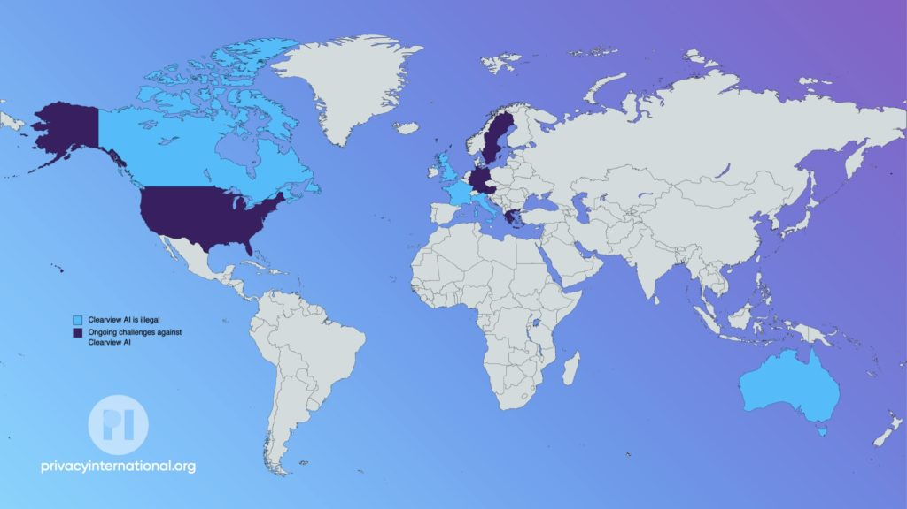
Reclaim Your Face: come procede?
Abbiamo superato le 3.800 firme in Italia contro le tecnologie biometriche nello spazio pubblico! Se non hai ancora firmato o vuoi sapere di cosa stiamo parlando, puoi cliccare il bottone qua sotto oppure leggere questo post.
La campagna Reclaim Your Face sta per arrivare nelle città italiane!
Nei prossimi mesi scenderemo nelle piazze e nelle università di alcune città italiane per portare il tema della sorveglianza di massa laddove le persone si incontrano: allestiremo dei banchetti dove sarà possibile capire meglio cosa sono le tecnologie biometriche e perché siamo preoccupati del loro impatto sulla società, e nel caso anche firmare la nostra petizione europea. Non mancheranno inoltre borse, magliette, flyer attraverso i quali potrete sostenere la campagna RYF e il lavoro del Centro Hermes.
Nelle prossime settimane seguiranno aggiornamenti (e qualche preview di magliette e borse), ma le città che saranno coinvolte saranno molto probabilmente Milano, Torino, Roma, Perugia. Presto più informazioni!
6 - 11 aprile: festival internazionale del giornalismo di perugia
La campagna Reclaim Your Face sarà al Festival di Perugia con un banchetto e del materiale informativo, nonché copie della nostra ultima ricerca (che potete leggere qui). Saremo felici di incontrarvi e di parlare un po’ del nostro lavoro e delle vostre curiosità al riguardo.
All’interno del programma ci sono alcuni dei nostri soci e fellow:
Davide sarà presente al festival in un panel con Laura e Riccardo: domenica 10 aprile alle ore 10.30, Sala del Dottorato. Più info qui
Laura sarà presente poi ad un altro panel, insieme a Diletta Huyskes (privacy network) e Simone Pieranni (Il Manifesto): domenica 10 aprile alle ore 17, Hotel Brufani - Sala Raffaello. Più info qui.
Vincenzo sarà presente in un panel, insieme a Bruno Saetta (avvocato): domenica 10 aprile, ore 15.30, Hotel Brufani - Sala Priori. Più info qui.
Per sapere chi sono gli speaker di quest’anno e cosa prevede il programma, fate un giro a questa pagina. Ci vediamo lì!

Novità da chi ci gravita intorno. Il progetto tracking.exposed, che studia la profilazione e il monitoraggio degli utenti di Internet, è stato ripreso dal The Guardian per aver dimostrato, utilizzando indirizzi IP russi per accedere a contenuti non russi, come la celebre applicazione TikTok abbia agevolato il blocco di questi ultimi, consentendo però a quelli caricati in precedenza di rimanere online (inclusi i video di servizi multimediali sostenuti dallo stato). Secondo tracking.exposed la mossa di TikTok ha creato una spaccatura all’interno di una piattaforma di social media globale: “è la prima volta che una piattaforma di questo tipo divide la disponibilità dei contenuti su tale scala”. Kudos!
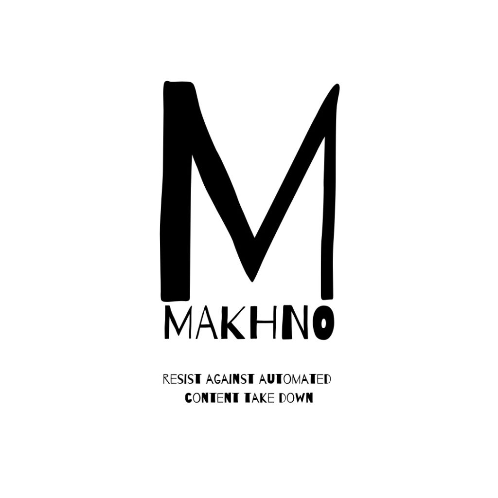
News a breve poi anche su MAKHNO, il progetto finanziatoci dal Mozilla Tech Fund e che per tutto l’anno ci porterà ad approfondire i temi della censura e del content takedown operato dalle piattaforme social mainstream. Stay Tuned!
Nel caso in cui non l’aveste ancora visto, il nostro ultimo report su Tecnologie per la sorveglianza e il controllo delle frontiere è stato tradotto anche in inglese e lo trovate qui. Grazie al nostro partner Privacy International per la traduzione!
ARTE e TECNOLOGIA
Appena inaugurata alla Fondazione Modena Arti Visive Decompressed Prism di Salvatore Vitale. Il suo lavoro ci mostra come la società in cui viviamo assomigli sempre più ad un aeroporto, in cui la vita pubblica è sottoposta a livelli sempre più elevati di sorveglianza e sicurezza. Gli aeroporti sono infatti i luoghi più controllati e pur essendo zone di transito, è qui che la sorveglianza ha un impatto profondo sul comportamento umano.
Bonus per il weekend: Indie Game
Girando qua e là per la piattaforma di videogame indipendente Itch.io, abbiamo trovato IO Interloper: un gioco di hacking ambientato in un mondo prossimo al futuro in cui le aziende sono quasi invincibili per chiunque, o forse no.
L’obiettivo è infiltrarti in un edificio per uffici e rubare preziosi segreti aziendali, il tutto da dietro un terminale a migliaia di chilometri di distanza. Potrai capire cosa significa volare con droni, scrutare attraverso le telecamere di sicurezza, entrare in database protetti disconnettendoli senza lasciare traccia. Have a nice game time!

Pillole da Bruxelles
Un Data Space europeo per i dati sulla salute
La Commissione europea è pronta a proporre un nuovo quadro di governance per i dati sanitari con requisiti di interoperabilità transfrontaliera e un’infrastruttura paneuropea nella prima legislazione settoriale di questo tipo.
Gli obiettivi principali del regolamento sono quelli di rendere il settore sanitario più efficiente e far progredire la ricerca scientifica nel settore della telemedicina, e “liberare l’economia dei dati sanitari”, favorendo lo sviluppo di nuovi servizi e prodotti sanitari digitali.
Una dichiarazione europea sui diritti digitali
Il 26 gennaio la Commissione europea ha presentato la sua proposta per una Dichiarazione europea sui diritti e i principi digitali per la prossima decade. Questa volta si tratta di qualcosa di meno vincolante dal punto di vista giuridico ma di più ampio respiro e significato: una “dichiarazione solenne congiunta” delle tre istituzioni europee, che raccoglie i principi ispiratori cui istituzioni, Stati membri e imprese europee devono guardare nel settore digitale da qui in avanti. La proposta della Commissione europea punta a tutelare la libertà individuale, limitare l’invadenza degli algoritmi, proteggere la privacy e premiare la trasparenza.
In arrivo il Data Act
Il 23 febbraio la Commissione Europea ha presentato il Data Act, la proposta di un regolamento europeo che consenta a cittadini ed imprese di esercitare maggior controllo su tutti quei dati, personali e non, che generiamo ogni giorno. Si tratta di un altro tassello nella strategia digitale europea presentata da Bruxelles nel 2020.
Introduce diverse novità rilevanti, una su tutte è l’estensione del diritto alla portabilità dei dati, introdotto per i soli dati personali con il regolamento generale sulla protezione dei dati, il cd. GDPR, a qualsiasi dato generato dall’uso di macchine e device. I dati dovranno essere accessibili in modo semplice, sicuro e, possibilmente, direttamente dall’utente. Quanto ai gatekeeper, il regolamento vieterebbe di poter trasferire loro i dati richiesti. Per quanto riguarda l’accesso ai dati da parte del settore pubblico, questo sarà possibile solo in casi eccezionali, come la risposta o la prevenzione di una emergenza, o la difficoltà nel reperirli sul mercato per adempiere ad obiettivi motivati dal pubblico interesse.
Cos’abbiamo letto questo mese (e dovresti leggere anche tu)
Anche in Italia il Garante della privacy blocca la più controversa startup di riconoscimento facciale al mondo → Wired Italia
LEAK: The EU Commission’s data space for unleashing health data → Euractiv
Fact check: Pro-Russia social media accounts spread false claims that old videos show Ukrainian ‘crisis actors’ → CNN Politics
How to Archive Telegram Content to Document Russia’s Invasion of Ukraine → Bellingcat
Attack on Ukrainian Government Websites Linked to GRU Hackers → Bellingcat
E’ stata presentata una dichiarazione europea sui diritti digitali → Wired Italia
Staccare la Russia dall’Internet globale non è una buona idea → Wired Italia
Electronic monitoring using GPS tags: a tech primer → Privacy International
Renew Europe on the situation in Ukraine and the establishment of a Pegasus spyware inquiry committee → Renew Europe

2022-03-10 · News · https://www.hermescenter.org/clearview-ai-ha-monitorato-i-cittadini-italiani-garante-privacy-illegale/
Clearview AI ha monitorato i cittadini italiani. Garante privacy: illegale
Clearview AI ha monitorato i cittadini italiani. Garante privacy: illegale
L’ordinanza di ingiunzione e la sanzione amministrativa di 20 milioni di euro, la più alta prevista, originano anche da una segnalazione inviata dal Centro Hermes nel maggio 2021
Una sanzione da 20 milioni di euro per trattamento illecito di dati biometrici per finalità di riconoscimento facciale, e l’ordine di cancellare i dati relativi a soggetti che si trovano in Italia. Questa la decisione espressa dal Garante privacy nell’ordinanza di ingiunzione resa nota ieri dall’Autorità nei confronti della compagnia Clearview AI. L’azienda americana utilizza sistemi automatici per effettuare lo scraping di immagini, scandagliando il web e i social media raccogliendo foto in cui rileva la presenza di un volto umano. Questi volti sono poi analizzati dall’algoritmo di riconoscimento facciale creato da Clearview AI per costruire un gigantesco database di dati biometrici (secondo stime dell’azienda si aggirerebbe intorno a 10 miliardi di immagini facciali), di cui spesso vende l’accesso a forze dell’ordine e aziende private. Tutte le immagini possono poi essere collegate anche ai metadati associati: titolo dell’immagine o della pagina web, geolocalizzazione, data di nascita, link della fonte, nazionalità, genere.
L’istruttoria del Garante italiano è iniziata anche grazie alla segnalazione inoltrata dal Centro Hermes in un’azione congiunta con Privacy International, Homo Digitalis e Noyb a maggio 2021 (oltre ai reclami di alcuni soggetti individuali), e che si è aggiunta ad una serie di istruttorie avviate sulla scia delle rivelazioni del 2020. In continuo aggiornamento, lo stato delle segnalazioni inviate dai partner europei è diverso: nel Regno Unito la decisione è ancora pendente e si aspetta a metà 2022 con una multa che raggiunge la cifra massima; in Francia l’autorità garante ha ordinato lo stop nella raccolta dei dati e la cancellazione di questi ultimi, minacciando sanzioni in caso di inottemperanza; per quanto riguarda Grecia e Austria, la decisione è ancora pendente.

{kind=link}
Come emerge dall’ingiunzione, al contrario di quanto dichiarato dall’azienda, ovvero che Clearview AI sarebbe “un’applicazione per la ricerca di immagini che fornisce risultati di ricerca con collegamenti a siti web di terze parti”, la compagnia americana effettua il tracciamento di cittadini italiani o di persone che sono in Italia, detenendone i dati biometrici e di geolocalizzazione illecitamente. Come sottolineato dal Garante, l’azienda non solo raccoglie immagini dal web per renderle disponibili ai propri clienti (ad esempio come Google) ma le tratta attraverso un algoritmo proprietario che permette la ricerca di una corrispondenza tra un volto che si sta ricercando e quelli presenti nel suo enorme database. Clearview AI elabora le immagini con tecniche biometriche, crea di esse delle impronte (hash) e le associa ai metadati eventualmente a disposizione. Non è pertanto un semplice motore di ricerca, anche e soprattutto perché non fornisce il proprio servizio a tutti bensì ad alcune categorie di clienti come le forze dell’ordine.
“Siamo soddisfatti della decisione del garante privacy e del lavoro svolto con le associazioni che tutelano i diritti digitali in Europa da anni. Internet è un luogo aperto nel quale sono favoriti diritti e libertà importanti, e ciò non dev’essere minacciato da un’azienda come Clearview AI. Internet non può e non dev’essere considerato uno spazio nel quale le informazioni e i dati delle persone sono considerati a disposizione di chiunque, e per essere utilizzate a qualunque scopo.”
Laura Carrer, Head of Digital Rights Unit - Hermes Center
In Italia il Ministero dell’Interno non ha ancora chiarito se abbia utilizzato Clearview, e un’interrogazione parlamentare proprio su questo tema ha visto il Ministero dell’Interno eludere la risposta. Inoltre, viste le pratiche di marketing aggressive messe in pratica da Clearview, non si può escludere che singoli funzionari abbiano effettuato dei test, o che altre forze dell’ordine italiane, non facenti capo al Ministero dell’Interno, abbiano usato Clearview. L’incertezza e la mancanza di trasparenza intorno all’uso della tecnologia di riconoscimento facciale negli spazi privati e pubblici in Italia è inaccettabile, considerando la grave interferenza, senza precedenti, che questa tecnologia presenta nei confronti della privacy.
Le modalità di funzionamento e impiego attuale di queste tecnologie favoriscono i medesimi danni a cui la normativa intende porre rimedio. Se non sanzionate, queste pratiche potrebbero avere gravi ripercussioni sulla nostra società. Nell’era digitale, tra tali ripercussioni possiamo includere: un effetto deterrente sulla partecipazione delle persone ai processi democratici mediante Internet, limitazioni allo sviluppo delle identità socio-politiche dei cittadini e danni nella “vita reale” come ad esempio la vulnerabilità allo “stalking” e l’impossibilità di svolgere le attività quotidiane senza la paura di essere sorvegliati.
La mappa della sorveglianza di Clearview AI
Al momento, i paesi che hanno dichiarato illecito l’utilizzo del sistema di web scraping e riconoscimento facciale sono il Canada, l’Italia, la Francia, l’Australia, il Regno Unito.
In Canada, a febbraio 2020 l’Ufficio del Commissario in materia di protezione dei dati, insieme alle autorità preposte alla regolamentazione sulla privacy a livello provinciale, ha avviato un’indagine sulla condotta di Clearview. Il rapporto sui risultati di tale indagine è stato pubblicato il 2 febbraio 2021 con la raccomandazione che Clearview (i) cessi di offrire i suoi servizi in Canada, (ii) “interrompa la raccolta, l’utilizzo e la divulgazione di immagini e matrici biometriche facciali di soggetti in Canada”, e (iii) “cancelli le immagini e le matrici biometriche facciali raccolte dagli individui canadesi in suo possesso”.
Nel Regno Unito e in Australia, a luglio 2020 le autorità preposte alla regolamentazione in materia di protezione dei dati hanno avviato un’indagine congiunta sulle “pratiche di gestione delle informazioni personali” di Clearview. I paesi nei quali si stanno portando avanti dispute giudiziarie sono gli Stati Uniti, paese di provenienza di Clearview AI, la Svezia (dove è stato scoperto che la polizia di stato ha utilizzato illegalmente il sistema), la Grecia, la Germania e l’Austria.
La quantità di casi diversi sollevati in Europa e altrove dimostra che le singole persone e le autorità preposte alla regolamentazione nutrono una viva e diffusa preoccupazione con riferimento alla condotta di Clearview. Tuttavia, ad oggi non sono stati profusi sforzi per adottare un approccio coordinato a questo problema prettamente globale. Un approccio coordinato è atteso da tempo in Europa, continente che vanta uno dei quadri normativi sulla privacy e la protezione dei dati più stringente al mondo.

Come funziona questa tecnologia
Il brevetto depositato dall’azienda lo scorso anno, utilizzato dall’Autorità garante italiana nell’istruttoria, così come l’indagine svolta dal Centro Hermes attraverso fonti pubblicamente disponibili e competenze tecniche, hanno permesso di definire il funzionamento della tecnologia di Clearview AI in cinque passaggi:
1. Web scraping automatico delle immagini: un sistema ricerca all’interno delle pagine Internet pubblicamente accessibili volti umani. Oltre alle immagini il sistema raccoglie anche i metadati ad esse associati.
2. Conservazione dell’immagine e dei metadati: le immagini e i relativi metadati raccolti mediante il processo di web scraping vengono conservati sui server di Clearview. La conservazione è a tempo indeterminato, cioè permane anche dopo che la foto precedentemente raccolta o la pagina web su cui si trovava è stata rimossa o resa privata.
3. Estrazione delle caratteristiche facciali mediante reti neurali di elaborazione delle immagini: ogni volto contenuto in ciascuna immagine raccolta viene scansionato ed elaborato per estrarne le caratteristiche identificative. I volti vengono tradotti in rappresentazioni numeriche qui denominate “vettori”. Questi vettori sono costituiti da 512 punti dati che rappresentano le diverse linee uniche che formano un volto. A questo punto, i volti vengono convertiti da immagini riconoscibili all’occhio umano a identificatori numerici biometrici unici, leggibili elettronicamente dalle macchine.
4. Conservazione e indicizzazione/hashing delle caratteristiche facciali: Clearview conserva i vettori in un database sui propri server, lì sono associati alle immagini e alle altre informazioni raccolte tramite web scraping. Questi vettori vengono quindi sottoposti ad hashing per due finalità correlate: l’indicizzazione del database e l’identificazione futura dei volti. Ciascuna foto di un volto nel database ha un diverso vettore e un valore hash a esso associato per permetterne l’identificazione e il matching.
5. La quinta e ultima fase nel ciclo del prodotto Clearview è il matching: viene eseguito quando un utente di Clearview desidera identificare una persona e a tale scopo carica un’immagine del soggetto stesso e avvia una ricerca. A questo punto la piattaforma analizza l’immagine, estrae un vettore dal volto del soggetto, lo sottopone quindi ad hashing e lo confronta con tutti i vettori hash precedentemente salvati nel database. Infine, lo strumento Clearview estrae dal database dei vettori tutte le immagini che presentano una stretta corrispondenza e le mostra all’utente come risultato della ricerca, insieme a tutti i metadati associati, permettendo all’utente di vedere la pagina sorgente originale da cui sono state estratte le immagini risultanti dal matching.
2022-02-07 · News · https://www.hermescenter.org/monitor-numero-2-gennaio-2022/
Monitor numero 2, gennaio 2022
Monitor numero 2, gennaio 2022
A cura di Laura Carrer
con il contributo di Riccardo Coluccini, Vincenzo Tiani
In questo numero 2 di Monitor trovate alcune info sull'universo che ci circonda. Abbiamo vinto il Mozilla Tech Fund 2022, ad esempio! E poi, come diventare attivisti e attiviste contro la sorveglianza biometrica di massa e alcune notizie sui diritti digitali direttamente da Bruxelles. Se vuoi contribuire a Monitor segnalandoci ricerche, pubblicazioni o notizie interessanti, scrivici a media@hermescenter.org.
Siamo nella Mozilla Tech Fund 2022 cohort!
A gennaio siamo risultati vincitori della coorte 2022 di Mozilla Tech Fund, il programma che finanzia lo sviluppo di tecnologie che contribuiscono alla creazione di un Internet più aperto e inclusivo. Il nostro progetto è uno sforzo congiunto insieme agli amici di tracking.exposed e OONI, che abbiamo ribattezzato MAKHNO proprio la scorsa settimana. Ha lo scopo di monitorare il take down dei contenuti politici o legati alla sfera sessuale e di capire perché e come venga effettuato. Ovviamente vi terremo aggiornati quando avremo delle informazioni pubbliche da poter condividere!
Se per caso doveste essere a conoscenza di pagine/canali sui social network soprattutto su temi quali migrazioni, politica, LGBTQ+ che hanno subìto cancellazione di contenuti (post, immagini, video) scriveteci a media@hermescenter.org.
Reclaim Your Face: il Bootcamp!
Vuoi essere parte del movimento Reclaim Your Face in prima linea? Invia la tua candidatura al bootcamp entro il 22 febbraio.
{kind=link}
CHIUNQUE può candidarsi per diventare un attivista della campagna, meglio se:
- Avete accesso a una community di potenziali firmatari (cittadini dell’UE)
- Vi impegnate ad aiutare la campagna Reclaim Your Face a raggiungere il suo obiettivo
- Siete disposti ad assistere ad un workshop online di 3 ore (probabilmente il 25 febbraio 2022) e ad impiegare ulteriore tempo per raccogliere un minimo di 50 firme.
- Mostrate un alto grado di consapevolezza dei diritti umani.
22 febbraio 2022: Deadline dell’application
24 febbraio 2022: Ti invieremo il materiale e tutte le informazioni dei workshop!
Fine febbraio-primi di marzo: Prima sessione
Marzo-giugno: Raccolta delle firme cartacee
Siamo stati ospiti di Radio3 Scienza
Insieme a Luca Zorloni, web editor di Wired Italia, abbiamo chiacchierato ai microfoni di Radio3 Scienza condotti da Elisabetta Tola. Se volete riascoltare la puntata, dove discutiamo di come l’Unione Europea (e non solo) se la canti e se la suoni in termini di sorveglianza di massa e tecnologie biometriche, questo è il link.
Europol sta diventando un’agenzia di sorveglianza di massa
L’agenzia europea che dovrebbe combattere il crimine ha raccolto una montagna tale di dati da far pensare che svolga compiti di sorveglianza di massa ricalcando così i passi dell’Nsa. L’opacità è grande, e sono pochissimi gli europei consapevoli di essere finiti nel database pur non avendo commesso reati. L’attivista olandese a cui è capitato racconta che essere schedato è un’esperienza terribile.
In questo DataGate all’europea la battaglia per tutelare i nostri diritti è in mano al garante europeo per la privacy, che infatti il 10 gennaio rende pubblica la sua decisione di ordinare a Europol di cancellare la parte di dati trattenuta in modo illegittimo.
Prossimamente ci troverete ad uno dei gruppi studio di Tech Worker Coalition Italia, per parlare di sorveglianza, biometria e tutto ciò che è connesso al tema. Ci vediamo lì!
Notizie dal nostro universo

Come anticipato lo scorso mese, è uscito un report in collaborazione tra OONI e Mozilla. In quest’ultimo, utilizzando un dataset fornito da Mozilla - Telemetry - è stato analizzato il fenomeno degli internet blackout, ossia il momento in cui la connettività internet in un certo paese o regione viene completamente interdetta. Lo studio realizzato da OONI dimostra come è possibile usare questo dataset per confermare casi di blackout già analizzati in passato utilizzando altri dataset: in sostanza, una nuova fonte permette di caratterizzare meglio alcuni degli eventi.
Segnaliamo poi anche questo blogpost sulla misurazione della censura su HTTP/3 scritto dalla fellow OONI Kathrin Elmenhorst.
Pillole da Bruxelles
Il Digital Services Act passa al trilogo, dopo l’approvazione del parlamento
Il DSA è stato votato dal Parlamento europeo e ora si avvia al trilogo, la discussione con la Commissione e il Consiglio dell’UE (aka i governi) per trovare la quadra in un testo finale. Alcuni punti segnati per la tutela dei diritti fondamentali:
- La possibilità di bloccare il tracciamento in App (sul modello di quello che consente ora iOS 15);
- Niente più dark pattern con pulsanti grandi e colorati per accettare T&C e privacy policy;
- Niente tracciamento pubblicitario basato su dati relativi a preferenze politiche, religiose, sessuali, o se si tratta di dati di minori;
- Per il momento le chat cifrate restano al loro posto.
Google Analytics sotto la lente del Garante austriaco
Il Garante per la privacy austriaco, in seguito ad una segnalazione della ong noyb, ha sentenziato che l’uso di Google Analytics violerebbe il GDPR poiché consentirebbe la condivisione di dati personali con le autorità americane. Dal canto suo Google ha risposto di non aver mai ricevuto dalle autorità una richiesta di accesso ai dati dei Google Analytics.
L’UE già pensa al Metaverso
La Commissaria europea Vestager, responsabile per i file “digitali” ha detto a POLITICO che la Commissione Europea è consapevole che a breve bisognerà porsi la domanda se servono nuove regole per il Metaverso. Con nuovi business in arrivo il rischio è che le posizioni monopolistiche già esistenti possano trasferirsi anche lì.
C’è una proposta europea per regolare i gig worker
Il 9 dicembre la Commissione europea ha presentato la sua proposta di direttiva per migliorare le condizioni dei lavoratori delle piattaforme. Secondo la Commissione sono 5,5 milioni i gig worker erroneamente identificati come autonomi e che dovrebbero pertanto rientrare nella categoria di lavoratori dipendenti. La direttiva si propone di risolvere gli attuali problemi promuovendo la trasparenza, l’equità e la responsabilità nella gestione degli algoritmi alla base del funzionamento delle piattaforme. La novità introdotta è la presunzione legale che un lavoratore sia dipendente, al di là quanto stabilito contrattualmente tra le parti, quando ricorrano alcuni requisiti requisiti.
Inoltre.. L’EDPS ha pubblicato un’opinion in cui chiede il ban del microtargeting politico.
Cos’abbiamo letto questo mese (e dovresti leggere anche tu)
Europol sta diventando un’agenzia di sorveglianza di massa → Domani
Il Parlamento EU approva le nuove regole su big tech e contenuti online → Wired Italia
Una mappa delle telecamere cinesi in uffici e luoghi pubblici d’Italia → Wired Italia
Unsafe anywhere: women human rights defenders speak out about Pegasus attacks → Access Now
2021-12-06 · News · https://www.hermescenter.org/monitor-numero-1/
Monitor numero 1, novembre 2021
Monitor numero 1, novembre 2021
A cura di Laura Carrer
con il contributo di Riccardo Coluccini, Vincenzo Tiani
In questo numero 1 di Monitor trovate il nostro report Tecnologie per il controllo delle frontiere in Italia, ricerca che abbiamo realizzato grazie al sostegno di Privacy International. Per ascoltare di che si tratta abbiamo realizzato anche un mini podcast, lo trovate qui sotto. Vi aggiorniamo poi sulle ultime novità della campagna Reclaim Your Face, sulle nostre attività ad ampio spettro sul tema della sorveglianza biometrica e tutela dei dati personali, le più rilevanti novità sui progetti OONI e tracking.exposed, e alcune notizie sui diritti digitali direttamente da Bruxelles. Se vuoi contribuire a Monitor segnalandoci ricerche, pubblicazioni o notizie interessanti, scrivici a media@hermescenter.org.
Report: Tecnologie per il controllo delle frontiere in Italia
Domenica 5 dicembre è uscito il nostro report Tecnologie per il controllo delle frontiere in Italia - parte del progetto proTECHt migrants supportato da Privacy International - accompagnato da un’ inchiesta sullo stesso tema per L’Espresso (online/cartaceo). Il report è consultabile al link https://protecht.hermescenter.org, ed è anche scaricabile in pdf.
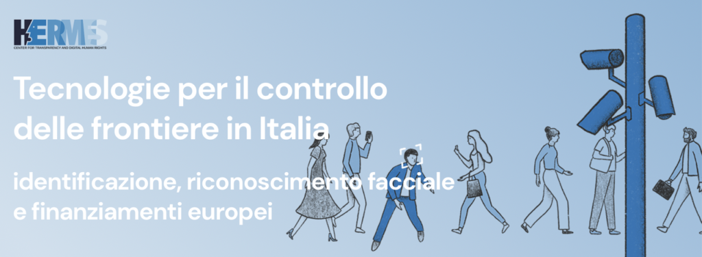
Il progetto proTECHt migrants è iniziato a giugno 2021 e prevedeva due fasi: la prima di mappatura e contatto con le associazioni nazionali che si occupano di accoglienza su territorio nazionale. Le associazioni che abbiamo coinvolto sono: Mediterranea, Progetto 20k, Pensare Migrante, LasciateCIEntrare, ASGI, A Buon Diritto, Associazione NAGA, COSPE. Con loro abbiamo parlato delle problematiche relative all’utilizzo della tecnologia nel settore dell’immigrazione. Attraverso una survey sono emerse ancor più profondamente alcune preoccupazioni e necessità sul tema, quali il timore che le tecnologie biometriche (come ad esempio il riconoscimento facciale) siano utilizzate senza nessun controllo su migranti, rifugiati e richiedenti asilo; che i database creati a livello nazionale ed europeo siano sempre più interoperabili tra di loro; oppure che i dati anagrafici e biometrici a loro prelevati, senza un consenso davvero informato, siano poi trattati senza le dovute tutele che si applicano invece ai cittadini italiani ed europei.
Durante lo svolgimento della ricerca abbiamo cercato di rispondere il più possibile a questi timori e preoccupazioni, concentrandoci su 4 direttrici considerate fondamentali: una breve disamina sui flussi migratori e sul sistema di accoglienza in Italia, le pratiche di pre-identificazione ed identificazione all’arrivo negli hotspot, il riconoscimento facciale utilizzato dal ministero dell’Interno, e infine i finanziamenti europei in Italia proprio per l’acquisto di tecnologie biometriche che facilitino l’identificazione dei migranti. Da questa analisi emergono i 4 output di ricerca:
- La criminalizzazione della persona migrante, rifugiata o richiedente asilo è inscritta nell’infrastruttura tecnologica italiana;
- I migranti, rifugiati e richiedenti asilo effettuano un vero e proprio baratto dei loro dati personali e biometrici in cambio di accoglienza;
- La gestione e il controllo dei flussi migratori in Europa non passa più solo attraverso le politiche dei flussi o il mero controllo delle frontiere;
- Il riconoscimento facciale usato in Italia nelle attività di indagine rischia di avere già conseguenze più gravi su migranti e richiedenti asilo.
Attraverso un webinar abbiamo condiviso alcuni di questi risultati con le associazioni, allo scopo di formare coloro che prima di tutti si trovano a lavorare all’intersezione tra migrazione, diritti umani e tecnologia. Questo è sicuramente uno dei principali motivi per i quali svolgiamo un lavoro su questi temi. Per avere un assaggio del report, ecco un breve riassunto da ascoltare:
La morsa dei garanti privacy su Clearview AI
Stupende notizie dal Regno Unito: l’Information Commissioner’s Office (ICO), autorità per la privacy britannica, ha dichiarato l’intenzione di multare per 17 milioni di sterline la controversa azienda di riconoscimento facciale Clearview AI. L’azienda raccoglie di nascosto le foto che gli utenti caricano online per poi offrire un database alle forze dell’ordine in cui fare ricerche durante le indagini. L’opinione preliminare dell’ICO è che Clearview AI Inc sembra non aver rispettato le leggi britanniche sulla protezione dei dati, non avendo un motivo legittimo per raccogliere quei dati e non informando le persone nel Regno Unito su ciò che stesse accadendo alle loro foto. Clearview AI ora dovrà rispondere alle accuse e l’importo della multa potrebbe persino diminuire considerevolmente. Secondo Privacy International si tratta di un importante risultato e le conclusioni dell’ICO rispecchiano quanto segnalato dall’associazione in un reclamo che aveva inviato a maggio 2021. In quel mese anche il Centro Hermes, noyb e Homo Digitalis avevano inviato segnalazioni e reclami contro Clearview AI alle autorità garanti per la privacy in Italia, Austria e Grecia. Attendiamo quindi notizie dal Garante italiano!
Reclaim Your Face: come procede?
Abbiamo superato le 3.500 firme in Italia contro le tecnologie biometriche nello spazio pubblico! Se non hai ancora firmato o vuoi sapere di cosa stiamo parlando, puoi cliccare il bottone qua sopra oppure leggere questo post.
Una moratoria zoppa sul riconoscimento facciale
All’interno del DL Capienze il Parlamento italiano ha approvato una moratoria per i sistemi di videosorveglianza che usano il riconoscimento facciale. La durata prevista della moratoria è fino al 31 dicembre 2023, a meno che non sia introdotta una nuova legge sul tema della sorveglianza biometrica. Autorità pubbliche e tutti i soggetti privati non potranno usare questa tecnologia in luoghi pubblici o aperti al pubblico: pensiamo a mezzi di trasporto, centri commerciali e negozi. Pur essendo un primo risultato importante, i problemi della moratoria sono molteplici: non si applica a sistemi come quelli di Clearview AI o altre tecnologie che usano dati biometrici, e in più lascia carta bianca alle autorità giudiziarie e ai pubblici ministeri che potranno usare durante le indagini i sistemi di riconoscimento facciale senza dover consultare il Garante Privacy. La moratoria adottata è comunque un risultato importante, che ci ricorda ancora di più però come l’unica soluzione accettabile sia ottenere il divieto di utilizzo di tutte le tecnologie per la sorveglianza biometrica nei confronti di tutti i soggetti, e non solo limitato al riconoscimento facciale.
Anche in Svizzera c’è una petizione contro il riconoscimento facciale
La Svizzera non è uno stato membro dell’UE e per questo motivo fino ad ora i cittadini svizzeri non hanno potuto firmare per la nostra iniziativa Reclaim Your Face che chiede alla Commissione europea di vietare tecnologie come il riconoscimento facciale. Ora però grazie all’azione di Digitalen Gesellschaft, Amnesty International Svizzera e AlgorithmWatch CHc’è una petizione anche in Svizzera. La petizione per il momento si focalizza sulle città di Losanna e Zurigo.
Il sito della petizione è qui. L’annuncio del lancio, invece è qui.
La campagna Reclaim Your Face in una città olandese vicino a te!
Se vivi nei Paesi Bassi potresti esserti imbattuto/a in una campagna pubblicitaria che parla dei sorveglianza biometrica. Bits of Freedom, associazione olandese che si occupa di diritti digitali, ha tappezzato alcune città con poster sui rischi del riconoscimento facciale e delle tecnologie biometriche, e con un invito: firmare la nostra petizione!
In Germania il nuovo governo ha le idee chiare sul riconoscimento facciale
La nuova coalizione di governo tedesca ha chiesto un divieto a livello europeo del riconoscimento facciale in pubblico, e di altre tipologie di sorveglianza biometrica. Richieste che fanno eco a quelle che la nostra campagna Reclaim Your Face, coordinata da EDRi con oltre 65 gruppi della società civile, sta chiedendo all’UE e ai loro governi nazionali dal 2020. Chiaramente per il momento si tratta solo di una dichiarazione di intenti, per questo è fondamentale tenere alta l’attenzione e far sì che alle parole seguano i fatti.
Qui trovate il testo dell’accordo della coalizione di governo. Qui il nostro commento e della coalizione RYF.
Il kit per il supporter di Reclaim Your Face
Il sito della campagna Reclaim Your Face ha una novità: una nuova sezione dedicata alle informazioni sulle tecnologie biometriche spiegate con esempi chiari e storie di chi, quelle tecnologie, le sta combattendo ogni giorno. In più ci sono sticker, volantini e banner da scaricare per poter diffondere la campagna sia online che offline.
Riconoscimento facciale contro la popolazione palestinese
Dai territori occupati della Cisgiordania arriva l’ennesimo esempio di come il riconoscimento facciale possa essere usato per opprimere e controllare una popolazione. L’esercito israeliano usa tecnologie di riconoscimento facciale insieme a una rete di videocamere urbane e smartphone per individuare i palestinesi che devono essere fermati, arrestati o lasciati andare.
Qui trovate l’analisi del Washigton Post in merito (inglese). Qui invece quella di Valigia Blu, in italiano.
Quante videocamere incontri giornalmente?
Dalla Germania arriva unsurv-offline, un progetto open-source per un dispositivo in grado di monitorare quante videocamere incrociamo durante la nostra giornata. Per farlo utilizza un database delle posizioni delle videocamere preso da OpenStreetMap e caricato sulla scheda SD del dispositivo, salvando in maniera sicura i dati dei nostri spostamenti giornalieri senza caricarli online. Ci sono già progetti come Surveillance under Surveillance che mappano la posizione di videocamere negli spazi pubblici, e che contengono dati anche sull’Italia. Chiunque può contribuirvi.
Maggiori informazioni sul progetto unsurv-offline si possono trovare qui. La pagina uffiale di finanziamento è invece qui.
Novità da chi ci gravita intorno. Il progetto YouChoose.ai, sponsorizzato dal programma della Commissione Europa Next Generation Internet, si basa su youtube tracking exposed (un sistema di analisi passiva delle raccomandazioni di youtube al fine di analizzarne l’algoritmo) andando però oltre: YC affronta il problema del monopolio degli algorimiti. L’idea alla base è che i creatori di contenuti dovrebbero esercitare più potere nel gestire le loro raccomandazioni. Un’altra ipotesi esplorata è quella di dare il controllo degli algoritmi a chi naviga sulla piattaforma. Un’estensione del browser sviluppata dal team di YC permetterà proprio questo e sarà disponibile al di fuori di una beta chiusa da gennaio in poi. Qui intanto potete leggere l’analisi del progetto e l’analisi di interesse, svolta su 400 persone che hanno partecipato al questionario.
Il progetto di software libero OONI ha compiuto 9 anni! Tanti auguri!
Inoltre: ad ottobre OONI ha pubblicato il report How countries attempt to block Signal Private Messenger App around the world sul blocco di Signal in Iran, China, Cuba e Uzbekistan. Si tratta del primo report che analizza la censura di Signal in giro per il mondo. Il blocco è stato riscontrato per mezzo di tecnologia DPI a Cuba e Uzbekistan. In Iran e China viene invece implementato per mezzo di interferenza a livello DNS.
Come anticipato lo scorso mese, è uscito anche un report in collaborazione con Mozilla. In quest’ultimo, utilizzando un dataset fornito da Mozilla - Telemetry - è stato analizzato il fenomeno degli internet blackout, ossia il momento in cui la connettività internet in un certo paese o regione viene completamente interdetta. Lo studio realizzato da OONI dimostra come è possibile usare questo dataset per confermare casi di blackout già analizzati in passato utilizzando altri dataset: in sostanza, una nuova fonte permette di caratterizzare meglio alcuni degli eventi.
Fino al 31 gennaio 2022 sarà in mostra a Fondazione Modena Arti Visive Monitoring Control, di Paolo Cirio. Il titolo della mostra allude a una duplice forma di monitoraggio: quello esercitato dal potere e, viceversa, quello che le soggettività sociali possono esercitare sulle forme di controllo prendendo coscienza del fenomeno e contrastandolo.
Pillole da Bruxelles
Nuovo compromesso dei governi su AI Act
Continuano i lavori del Consiglio sul testo della proposta di regolamento sull’Intelligenza Artificiale, l’AI Act. La Germania propone un ban del riconoscimento facciale ma ci sono anche cambiamenti nel social scoring e nelle applicazioni ad alto rischio. Intanto il Parlamento Europeo ha finalmente eletto non uno, ma due relatori per il file: Brando Benifei (IMCO/S&D) e Dragoș Tudorache (LIBE/Renew Europe).
Nuove regole in arrivo per la circolazione dei dati
A distanza di un solo anno dalla pubblicazione della proposta della Commissione Europea, il Data Governance Act è ad un passo dal voto finale. La norma regolerà lo scambio di dati, personali e non, tra pubblico e privato per fini di ricerca o di business offrendo regole chiare, trasparenza e indipendenza nella gestione, nel rispetto della protezione dei dati personali così come del segreto industriale.
Una super Autorità che neanche Mazinga
Riferisce POLITICO che l’EDPS, il garante europeo per la privacy, starebbe lavorando ad una nuova autorità che includa anche la tutela dei consumatori e l’Antitrust. Vero è che le tre autorità hanno, sempre di più, visto incrociare le spade come i tre moschettieri. Da qualche anno se ne parla anche in Italia ma solo come proposta.
Modifiche al GDPR in vista?
Vera Jourova, commissaria europea, alla conferenza EUDATA21 organizzata da Forum Europe, ha palesato la possibilità che in caso di revisione del GDPR i poteri si accentrerebbero verso la Commissione Europea o l’EDPB, il comitato dei garanti europei, spostandosi dunque dalle singole autorità. Intanto l’Irish Council for Civil Liberties ha presentato formalmente denuncia al Mediatore Europeo contro la Commissione Europea per non aver agito contro l’Irlanda per la mancata applicazione del GDPR.
Cos’abbiamo letto questo mese (e dovresti leggere anche tu)
Gli immigrati vengono schedati come criminali. Con il benestare della politica → L’Espresso
Progetto Argo, pronta la stretta sulle telecamere intelligenti di Appendino → Corriere della Sera Torino
Chi alimenta la sorveglianza → IrpiMedia
Non metterci la faccia. La Cina e il riconoscimento facciale → Il Manifesto
Israel escalades surveillance of Palestinians with facial recognition program in West Bank → The Washington Post
The ICO provisionally issues 17million fine against facial recognition company Clearview AI → EDRi
We need to regulate mind-reading tech before it exists → Rest of World
Quando il governo abdica al suo ruolo → Il Manifesto
Il controllo biometrico sui Palestinesi → Guerre di Rete
Le regole dell’Europa per fare concorrenza a Cina e Stati Uniti → Wired Italia
2021-12-02 · News, Press · https://www.hermescenter.org/italia-moratoria-riconoscimento-facciale-ban-divieto/
La moratoria sul riconoscimento facciale approvata ieri in Italia ci ricorda perché dobbiamo chiedere un divieto
La moratoria sul riconoscimento facciale approvata in Italia ci ricorda perché dobbiamo chiedere un divieto
Ieri, 1 dicembre 2021, il Parlamento italiano ha introdotto una moratoria sui sistemi di videosorveglianza che impiegano tecnologie di riconoscimento facciale.
Questa legge introduce per la prima volta in uno stato membro dell’Unione Europea una moratoria sull’impiego di questi sistemi in luoghi pubblici o aperti al pubblico, e riguarda alcune autorità pubbliche e tutti i soggetti privati. Questa moratoria è un risultato importante perché pone l’attenzione sui pericoli per i diritti e le libertà delle persone derivanti dall’uso indiscriminato di tecnologie come il riconoscimento facciale. La durata prevista della moratoria è fino al 31 dicembre 2023, a meno che non sia introdotta una nuova legge sul tema della sorveglianza biometrica.
I soggetti privati come ad esempio negozi, palazzetti sportivi e mezzi di trasporto non potranno utilizzare sistemi di videosorveglianza con riconoscimento facciale. Si tratta di un importante successo per la coalizione italiana di Reclaim Your Face che nell’ultimo anno ha chiesto di vietare questo tipo di tecnologie a livello europeo. Nella coalizione italiana, insieme al Centro Hermes, ci sono anche Associazione Luca Coscioni, Certi Diritti, CILD, Eumans, info.nodes, The Good Lobby, Privacy Network, Progetto Winston Smith, e StraLi.
Il nodo irrisolto
Allo stesso tempo, però, questa moratoria costringe l’Italia a fare un notevole passo indietro per quanto riguarda l’uso di queste tecnologie da parte delle autorità giudiziarie e dei pubblici ministeri.
Fino a questo momento, le autorità di polizia e quelle giudiziarie (inclusi i pubblici ministeri) previste nel decreto legislativo 18 maggio 2018, n. 51 avrebbero dovuto chiedere un parere al Garante privacy prima di utilizzare tecnologie come il riconoscimento facciale poiché implicano il trattamento di dati personali che possono avere un grave impatto sui diritti e sulle libertà dei cittadini. Con le modifiche introdotte con questa moratoria, l’autorità di polizia giudiziaria e il pubblico ministero sono invece esentati da questo tipo di controllo preventivo.
Questa modifica è ancor più grave se si tiene in considerazione il fatto che il codice di procedura penale non contiene dettagli e specifiche per l’impiego di sistemi di riconoscimento facciale: non vi sono distinzioni sulle tipologie di reato per cui possono essere impiegati né dettagli sulla durata dell’impiego di queste tecnologie. Ciò significa che potremmo trovarci nella situazione in cui un pubblico ministero richiede l’impiego di un sistema di riconoscimento facciale in tempo reale per verificare l’identità delle persone che si incontrano con una persona indagata mentre questa è in una piazza pubblica, dove transitano altre centinaia di persone che nulla hanno a che vedere con l’indagine ma i cui dati biometrici vengono comunque raccolti e analizzati dal sistema di riconoscimento facciale.
Come siamo arrivati qui
Il Garante privacy ha già sottolineato la pericolosità del riconoscimento facciale in tempo reale nel suo parere al Ministero dell’Interno: l’uso del riconoscimento facciale e di altre identificazioni biometriche negli spazi pubblici costituisce una sorveglianza di massa, anche quando le autorità stanno cercando individui specifici presenti in una watch-list. Questo perché, come hanno sottolineato il Garante europeo della protezione dei dati (GEPD) e il Comitato europeo per la protezione dei dati (EDPB), i dati personali e la privacy di chiunque passi in quello spazio sono indebitamente violati da tale sorveglianza.
Di fatto, questa legge segue e porta agli estremi quanto previsto dal regolamento proposto dalla Commissione Europea sull’intelligenza artificiale (AI Act) che pur introducendo la possibilità di vietare tecnologie di sorveglianza biometrica crea ampie eccezioni per quanto riguarda le attività di polizia e giudiziarie.
Come ricordato dalla recente lettera di EDRi firmata insieme a 119 associazioni, le eccezioni previste nell’AI Act “minano i requisiti di necessità e proporzionalità della Carta dei diritti fondamentali dell’UE e dovrebbero essere rimosse.”
Inoltre, recentemente sono trapelate le intenzioni del Consiglio dell’Unione Europea di rendere possibile ad attori privati di operare sistemi di sorveglianza biometrica di massa per conto delle forze di polizia, e di estendere gli scopi per cui tali sistemi possono essere utilizzati nell’ambito della proposta di legge sull’intelligenza artificiale dell’UE. I piani sono delineati in un rapporto sullo stato di avanzamento delle discussioni pubblicato da Statewatch.
Un piccolo passo indietro è stato fatto quindi anche in Italia con le eccezioni concesse alle autorità di polizia giudiziaria e ai pubblici ministeri. La moratoria adottata oggi è comunque un risultato importante, che ci ricorda ancora di più però come l’unica soluzione accettabile sia ottenere il divieto di utilizzo di tutte le tecnologie per la sorveglianza biometrica nei confronti di tutti i soggetti, e non solo limitato al riconoscimento facciale.
Per questo, con la campagna Reclaim Your Face continuiamo a chiedere a gran voce il ban di queste tecnologie. Firma anche tu la petizione!
2021-11-25 · News, Press · https://www.hermescenter.org/nuovo-governo-germania-divieto-di-tecnologie-biometriche-impegno-coalizione/
Nuovo governo in Germania: il divieto di tecnologie biometriche è un impegno preciso
La nuova coalizione di governo tedesca ha chiesto un divieto a livello europeo del riconoscimento facciale in pubblico e di altre tipologie di sorveglianza biometrica. Richieste che fanno eco a quelle che la nostra campagna Reclaim Your Face, coordinata da EDRi con oltre 65 gruppi della società civile, sta chiedendo all’UE e ai loro governi nazionali dal 2020: vietare la sorveglianza biometrica di massa.
Ieri, 24 novembre 2021, il nuovo governo tedesco ha annunciato l’atteso accordo di coalizione, includendo alcuni degli impegni più decisi visti finora in Europa per “escludere … il riconoscimento biometrico in pubblico”. Hanno inoltre chiesto di “rifiutare la videosorveglianza estesa e l’uso del trattamento di dati biometrici a fini di sorveglianza“.
Il Partito Socialdemocratico (SPD), i Verdi e il Partito Liberal Democratico (FDP), che costituiscono la coalizione di governo tedesca, hanno sottolineato insieme l’importanza vitale dell’anonimato sia in pubblico che online. La loro dichiarazione fa eco alle richieste di oltre 65 gruppi nella campagna Reclaim Your Face.
Il Centro Hermes è convinto che questo possa essere un segnale importante anche per tutti i politici italiani che stanno lavorando al tema della sorveglianza biometrica: chiedere un ban di queste tecnologie è l’unica strada da seguire e può essere fatto!
La campagna #ReclaimYourFace
Dal 2020, la coalizione Reclaim Your Face ha fatto attivamente pressione sui decisori, rivelando l’uso di tecnologie di sorveglianza, pubblicando rapporti di ricerca e mobilitando le persone per una società libera da tecnologie dannose come il riconoscimento facciale negli spazi accessibili al pubblico.
Il movimento tedesco della campagna guidato dai membri di EDRi Chaos Computer Club (CCC), Digitale Gesellschaft e Digitalcourage è stato particolarmente attivo, contando più di 16 organizzazioni. Hanno organizzato più di 14 eventi e sono stati parte di attività sui social media e Twitter storms, così come proteste pacifiche offline. Quasi 30.000 cittadini tedeschi hanno firmato l’iniziativa dei cittadini europei della nostra campagna, dimostrando che l’azione delle persone può portare a un cambiamento significativo.
“È un grande risultato per la campagna Reclaim Your Face vedere che le nostre richieste per una Europa senza la sorveglianza biometrica siano state incluse nell’accordo di coalizione del governo tedesco. Ma questo da solo non è sufficiente,” ha dichiarato Matthias Marx, portavoce del Chaos Computer Club. “Ora le parole devono essere supportate dai fatti e vincolate dalla legge”.
La dichiarazione della coalizione di governo tedesca ha rilievo anche a livello europeo perché richiede la fine della sorveglianza biometrica di massa non solo delle persone e delle comunità che vivono in Germania, ma più in generale di quelle che “seguono le leggi dell’UE”.
C’è un altro aspetto cruciale: questa notizia arriva appena una settimana prima che il Consiglio dell’Unione europea (il gruppo di ministri e ambasciatori degli Stati membri dell’UE) dovrebbe delineare la sua prima posizione sulla futura legge sull’intelligenza artificiale dell’UE (AI Act). L’identificazione biometrica a distanza, la categorizzazione biometrica discriminatoria e il riconoscimento delle emozioni sono stati temi caldi nei negoziati.
“È un traguardo importante per gli obiettivi della nostra campagna per proteggere i diritti e le libertà delle persone. Alla luce della forte opposizione alla datificazione dei nostri volti e corpi, ci aspettiamo che i governi rifiutino le pratiche di sorveglianza biometrica di massa che trattano ogni persona come un potenziale criminale, invadono la nostra privacy su scala di massa e amplificano la discriminazione,” ha sottolineato Konstantin Macher di digitalcourage.
L’annuncio di oggi aggiunge ulteriore sostegno agli attori dell’UE che chiedono un divieto totale in Europa, tra cui il Comitato europeo per la protezione dei dati e il Garante europeo, il Parlamento europeo e i governi di diversi paesi dell’UE.
Porre fine a tutta la sorveglianza discriminatoria
Mentre celebriamo l’impegno storico e coraggioso della Germania nel porre fine alla sorveglianza biometrica di massa, esortiamo i politici ad assicurare che disposizioni altrettanto forti siano messe in atto per tutti gli usi dannosi dell’IA nell’imminente AI Act così come nelle leggi nazionali.
Questo include il social scoring non solo da parte dei governi, ma anche di attori privati, l’uso dell’IA per discriminare usando il “risk-scoring” nel welfare, nelle attività di polizia e nel controllo dell’immigrazione, così come molte altre linee rosse dell’IA, delineate da EDRi e da altre 61 organizzazioni della società civile. L’UE e i governi nazionali devono affrontare tutti i casi in cui i sistemi di IA sono utilizzati per colpire, discriminare e danneggiare le persone in tutta Europa.
Qui puoi firmare la nostra campagna Reclaim Your Face: https://reclaimyourface.eu/it/
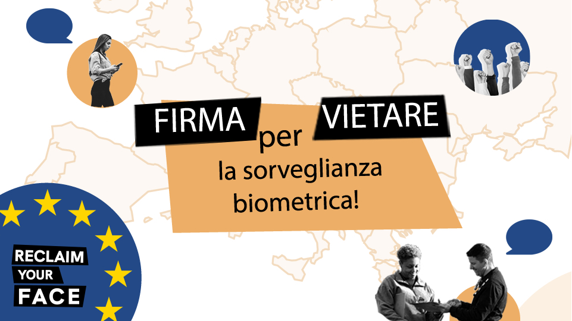
Nota: Il movimento tedesco di ReclaimYourFace include attualmente Chaos Computer Club, digitalcourage, Digitale Gesellschaft, Algorithmwatch, anna elbe, Digitale Freiheit, D64, FIfF, Germanwatch, German Chapter of the ACM, Gesellschaft für Informatik, kameras-stoppen.org, LOAD e.V., Selbstbestimmt.Digital e.V. ed è supportato da JUSOS, Piraten Partei Deutschland e l’eurodeputato Patrick Breyer.
2021-11-06 · /it/, Newsletter · https://www.hermescenter.org/it/monitor-numero0/
Monitor numero 0, ottobre 2021
<Monitor numero 0, ottobre 2021
A cura di Laura Carrer
con il contributo di Riccardo Coluccini, Vincenzo Tiani
In questo numero 0 di Monitor trovate gli aggiornamenti degli ultimi mesi sulla campagna Reclaim Your Face, le nostre attività ad ampio spettro sul tema della sorveglianza biometrica e tutela dei dati personali, le più rilevanti novità sui progetti OONI e tracking.exposed, e alcune notizie sui diritti digitali direttamente da Bruxelles. Certo, non potevamo non parlare anche di Meta, ma lo faremo in modo diverso. Se vuoi contribuire a Monitor segnalandoci ricerche, pubblicazioni o notizie interessanti, scrivici a media@hermescenter.org.
Continua la campagna RYF
Probabilmente non vi sarà sfuggito: dal novembre 2020 siamo partner italiani della campagna europea Reclaim Your Face, Riprenditi la faccia. Questa è portata avanti da più di 60 associazioni in tutto il continente attraverso un’iniziativa dei cittadini europei (ECI), ovvero lo strumento ufficiale EU che permette ai cittadini e alle cittadine di raccogliere firme per arrivare davanti alla Commissione Europea e richiedere—nel nostro caso—il divieto all’utilizzo di tecnologie biometriche all’interno degli spazi pubblici. Quest’ultimo è per noi un luogo da attraversare liberamente, in cui condividere le nostre esperienze e riunirci con la comunità in maniera attiva. Abbiamo spiegato cosa sono e perché ci interessano i sistemi di riconoscimento facciale che vengono utilizzati per fini securitari in questo articolo, così come le nostre ragioni contro la sorveglianza biometrica di massa in quest’altro. Almeno 15 paesi europei hanno sperimentato queste tecnologie negli spazi pubblici, 5 grandi città statunitensi le hanno invece vietate. Ma il nostro lavoro è, unito a quello di tutte le altre realtà che difendono i diritti umani digitali, quello di osservare con attenzione il contesto nel quale siamo inseriti: in questo articolo chiariamo quale impiego di queste tecnologie vi è nel nostro paese, a livello nazionale così come locale. Il nostro lavoro quotidiano è mosso dalla contrarietà a forme di pedinamento, monitoraggio, abuso e valutazione di chi siamo, cosa facciamo, quando e dove ci muoviamo, attraverso un algoritmo.
Il bilancio della campagna in Italia è abbastanza positivo anche se, così come in altri paesi europei, la risposta politica è stata decisamente maggiore rispetto a quella dei cittadini. Le firme che abbiamo raccolto, all’uscita di questa newsletter, sono 63.089, di cui 3.442 in Italia. Dall’altra parte però, parallelamente alla bozza europea di regolamento sull’Intelligenza Artificiale—sulla quale esprimiamo grandi preoccupazioni soprattutto per la moltitudine di eccezioni all’utilizzo di sistemi di sorveglianza biometrica da parte delle FF.OO.—in Italia si sono ottenute due grandi vittorie a soli due mesi dal lancio della campagna. Ad aprile il Garante Privacy ha definito il sistema di riconoscimento facciale in uso alla Polizia di Stato una possibile forma di sorveglianza ed identificazione di massa che non può essere utilizzata. La seconda è una proposta di legge per una moratoria sull’utilizzo di tecnologie biometriche in Italia: la sospensione sarebbe fino al 31 dicembre 2021, ma saranno presto aperte delle audizioni in Commissione Affari Costituzionali in cui potremo far presenti i nostri dubbi in merito alla proposta e i punti cruciali sui quali non intendiamo indietreggiare.
Per ultimo, due altri aggiornamenti. In questo articolo potete leggere la lettera che abbiamo inviato il 2 ottobre alle/agli europarlamentari a Bruxelles per esprimere il nostro disaccordo nei confronti delle proposte di emendamento al report Vitanov, che si concentra sull’uso di strumenti di IA da parte delle forze dell’ordine in Europa. Gli europarlamentari hanno espresso parere contrario agli emendamenti, bocciandoli. Secondo il Parlamento UE, quindi, la sorveglianza biometrica di massa deve essere proibita nelle attività di polizia.
Anche il database EU di impronte digitali di migranti e richiedenti asilo, Eurodac, è tornato sotto i riflettori quando sono state proposte alcune modifiche che prima di tutto incidono in maniera trasversale sui diritti fondamentali dei migranti. In questo articolo abbiamo spiegato perchè Eurodac non è solamente uno strumento tecnico bensì un dispositivo di natura altamente politica e strategica, e non debba quindi essere modificato creando categorie privilegiate di cittadini o esseri umani.
L’immacolata concezione dell’algoritmo di Facebook
Meta, il nuovo nome con cui si chiama l’azienda di Mark Zuckerberg, ha annunciato il 2 novembre l’intenzione di interrompere l’impiego del proprio sistema di riconoscimento facciale sulla piattaforma Facebook, utilizzato per taggare e riconoscere i volti nelle foto caricate dalle persone. Inoltre, Meta ha affermato di voler cancellare più di un milione di template estratti dai dati biometrici dei volti delle persone che aveva acquisito negli anni—stringhe alfanumeriche che identificano univocamente il volto di una persona, che per i computer sono l’equivalente delle nostre impronte digitali del volto. Una delle motivazioni principali nel post di annuncio della decisione è che il ruolo del riconoscimento facciale nella società “deve essere discusso alla luce del sole, e tra coloro che ne saranno più colpiti.”
Se a prima vista sembra una notizia positiva sotto ogni aspetto, un articolo di Gizmodo si infila negli spiragli che l’annuncio lascia aperti. Facebook—ci piace ancora chiamarlo così—ha introdotto questo sistema nel 2010 e quindi sono passati 10 anni, tempo in cui gli algoritmi di riconoscimento facciale sono stati affinati con i dati degli utenti. Ora l’azienda ha in mano un modello di algoritmo che secondo alcune stime è accurato fino al 97% e non ha alcuna intenzione di cancellarlo, a differenza dei dati biometrici. Per di più, Meta ha confermato a Gizmodo che lo stop del riconoscimento facciale riguarda solamente Facebook e non le altre app dell’azienda come Instagram.
Sembra che Facebook abbia quindi spremuto finché ha potuto i dati dei propri utenti e ora sia alla ricerca di nuovi lidi in cui far fruttare l’algoritmo.
Studenti controllati: stessa sorte alla Bocconi
Lo scorso settembre il Garante privacy italiano è finalmente intervenuto sul tema dei sistemi di proctoring, usati per monitorare gli studenti universitari da remoto durante gli esami. Questi software registrano il volto della persona che sta svolgendo l’esame e ne monitorano i click e le azioni realizzate attraverso il computer. Il Garante ha sanzionato l’Università Bocconi con una multa di 200.000€ per aver usato Respondus, un software di proctoring appunto, senza fornire sufficienti informazioni ai propri studenti e in mancanza di una base legale per farlo.
Secondo il Garante infatti, Respondus verifica costantemente che la persona di fronte allo schermo sia la stessa, per evitare che qualcuno si sostituisca agli studenti o passi degli appunti. Per farlo il software sfrutta algoritmi che analizzano i dati del volto della persona e questo è al momento illegale in Italia. Per di più, il sistema che monitora le azioni svolte dallo studente ed eventuali situazioni anomale rappresenta, secondo il Garante, una profilazione degli studenti che può avere un impatto sulla loro sfera emotiva e psicologica. Al momento quindi la decisione dell’Autorità impedisce alle università italiane di usare software simili a Respondus.
Ci ricorda però anche che la sorveglianza biometrica si sta espandendo sempre più in ogni sfera delle nostre vite, e l’unica soluzione è chiedere un divieto di queste tecnologie.
tracking.exposed affianca IrpiMedia nel progetto #LifeIsAGame: dal 19 ottobre è online il form dedicato ai rider che vogliono fornire informazioni sul funzionamento degli algoritmi e delle app usate dalle piattaforme digitali di food delivery. L’attività di monitoraggio di tracking.exposed ha lo scopo di organizzare azioni legali collettive contro le piattaforme che violano i diritti dei lavoratori. Se sei un* rider, compila il form oppure condividilo!
Il progetto di software libero OONI ha pubblicato il primo report che analizza la censura dell’app Signal in giro per il mondo. Il gruppo di ricerca ha riscontrato il blocco per mezzo di tecnologia DPI a Cuba e in Uzbekistan. In Iran e Cina, invece, il blocco viene implementato per mezzo di interferenza a livello DNS. Prossimamente un’uscita in collaborazione con Mozilla, stay tuned!
Martedì 2 novembre abbiamo partecipato alle audizioni sul Decreto Capienze in Senato, qui potete rivedere l’intervento del nostro socio Giovanni B. Gallus, al minuto 25.
Pillole da Bruxelles
EAVI Conversations
EAVI, ONG con sede a Bruxelles che si occupa di media literacy, ha organizzato una serie di talk gratuiti online cui è possibile partecipare gratuitamente. Tra i temi trattati ci saranno AI, attivismo, fiducia nei media, disinformazione, tech sociey. Il programma completo e la registrazione è possibile a questo link.
AI, perchè sei tu AI?
La Commissione Europea ha lanciato una consultazione pubblica sulla responsabilità civile legata all’Intelligenza Artificiale, che sarà aperta fino al 10 gennaio 2022. Sul fronte dell’AI Act, la proposta di regolamento sull’Intelligenza Artificiale, prosegue lo scontro all’interno del parlamento EU su quale commissione debba guidare i lavori, questione che dovrebbe comunque risolversi questo mese.
I privacy pros si trovano a Bruxelles
Il 17 e 18 novembre si terrà, di nuovo in presenza dopo la pausa dell’anno scorso, lo Europe Data Protection Congress della IAPP, la più grande associazione internazionale di professionisti della privacy che conta oltre 70.000 membri. Tra gli speaker Helen Dixon, garante irlandese della privacy.
Copyright, famolo strano
La notizia che non troverete nella sua completezza sui quotidiani di carta. L’Italia, nonostante le critiche mosse dall’Autorità Garante della Concorrenza e il Mercato, ha deciso di implementare la direttiva copyright in maniera del tutto originale e andando ben oltre quanto previsto dalla direttiva stessa e da quanto fatto dagli altri Paesi. Ne ha riportato alcuni passaggi controversi su Twitter Marco Scialdone di EuroConsumers.
Cos’abbiamo letto questo mese (e dovresti leggere anche tu)
In Finlandia la polizia ha usato i servizi della più controversa startup di riconoscimento facciale al mondo → Wired Italia
“Non a fianco di Frontex”. Chi si dissocia dall’accordo del Politecnico di Torino → Altreconomia
Privacy e cambiamenti climatici → Il Post
Digital Services Act: The EDRi guide to 2,297 amendment proposals → EDRi
Get out of our face, Clearview! → Privacy International
A whistleblower’s power: Key takeaways from the Facebook Papers → The Washington Post
I sistemi di riconoscimento facciale stanno arrivando nelle città italiane → Il Post
L’Europa sta spendendo più di 900 milioni per un maxi-sistema di dati biometrici → Wired Italia
Perché l’ultimo decreto del governo mette a rischio la protezione dei dati → Wired Italia
JO 2024 : la frénésie sécuritaire → Technopolice
2021-10-04 · News, Press · https://www.hermescenter.org/contro-gli-emendamenti-del-gruppo-epp-in-favore-della-sorveglianza-di-massa/
Contro gli emendamenti del gruppo EPP in favore della sorveglianza di massa
Sabato 2 ottobre, insieme a 39 associazioni che quotidianamente si battono in tutta Europa per la tutela dei diritti umani digitali, abbiamo deciso di scrivere agli europarlamentari italiani a Bruxelles per esprimere il nostro disaccordo nei confronti delle proposte di emendamento alla AI and criminal law 2020/2016(INI) - Vitanov report.
Il report si concentra sull’utilizzo di strumenti di intelligenza artificiale da parte delle forze dell’ordine su territorio europeo. Gli emendamenti saranno votati domani, 5 ottobre, in una sessione plenaria all’ora di pranzo.
Il testo della nostra lettera:
Gentile Onorevole,
Gli emendamenti in questione, proposti dall’EPP, sono:
L’emendamento propone di consentire l’utilizzo di IA per prevedere la criminalità futura, un uso tecnicamente discutibile e che per definizione contravviene ai valori dell’UE e a una serie di diritti fondamentali, tra cui la non discriminazione, l’equo processo e i diritti amministrativi, oltre a minare la presunzione di innocenza.
Come sottolineato dalla Rete europea contro il razzismo (ENAR), Fair Trials, EDRi e molte altre parti interessate della società civile, tali pratiche stanno già provocando danni gravi e profondi alla vita delle persone, portando alla privazione della libertà, aumentando le disuguaglianze e punendo i poveri, migranti e persone razzializzate. Un rapporto dell’Agenzia per i diritti fondamentali dell’UE (FRA) evidenzia anche il profondo impatto negativo della profilazione della polizia sulle persone razzializzate in Europa.
Questo emendamento indebolisce significativamente i principi dei diritti fondamentali delineati nella relazione originale contro il riconoscimento facciale negli spazi accessibili al pubblico. Inoltre l’emendamento include affermazioni non dimostrate su presunti benefici, non occupandosi dei modi in cui tali pratiche sono intrinsecamente antidemocratiche e discriminano le persone razzializzate, le donne, le persone con disabilità e le persone LGBTQ+ in modi che non possono essere mitigati da miglioramento della qualità dei dati.
Insieme, questo emendamento e il successivo sono anche in diretta violazione dei severi avvertimenti sulla minaccia della sorveglianza biometrica forniti dal Garante e dal consiglio europeo per la protezione dei dati; Autorità per la protezione dei dati di diversi paesi dell’UE; l’Alto Commissario delle Nazioni Unite per i diritti umani; e numerosi gruppi per i diritti umani e la giustizia sociale, tra cui organizzazioni per i diritti digitali, sindacati e altro ancora.
• Emendamento 3 (A9-0232/3, 29.9.2021) - Sorveglianza di massa biometrica
Questo emendamento chiede esplicitamente di consentire la “sorveglianza […] biometrica di massa”, e giò nonostante la sorveglianza non mirata di intere popolazioni sia fondamentalmente sproporzionata e lesiva dei diritti fondamentali. Riteniamo inoltre che se il Parlamento europeo dovesse votare a favore di tale emendamento, ciò costituirebbe una seria minaccia alla legittimità del Parlamento come istituzione democratica.
Qui la lettera originale in lingua inglese inviata da EDRi - European Digital rights
2021-09-09 · News, Press · https://www.hermescenter.org/lettera-aperta-al-parlamento-eu-sulla-riforma-di-eurodac-le-nostre-preoccupazioni/
Lettera aperta al Parlamento EU sulla riforma di EURODAC: le nostre preoccupazioni
Insieme a più di 30 associazioni europee che lavorano sui diritti umani digitali, mercoledì 8 settembre abbiamo inviato una lettera aperta al Parlamento europeo per esprimere le nostre preoccupazioni in merito alla riforma di EURODAC (il database europeo di impronte digitali di migranti e richiedenti asilo).
Qui di seguito la versione in italiano. Per la versione originale vi rimandiamo alla fine della pagina.
Egregio signor Buxadé,
Cari Relatori ombra,
Cari membri della Commissione per le libertà civili, la giustizia e gli affari interni (LIBE),
Le scriviamo per sottolineare le nostre preoccupazioni sulla proposta di modifica della riforma del regolamento EURODAC.
In questa lettera, in primo luogo, si delineano gli aspetti della riforma (compresi quelli ereditati dalla proposta del 2016 nonché dall’accordo politico del 2018 tra Consiglio e Parlamento europeo) preoccupanti per i diritti fondamentali di richiedenti asilo, rifugiati e migranti. Lungi dall’essere un mero dossier tecnico, sottolineiamo che il dossier EURODAC è di natura altamente politica e strategica. Con queste modifiche potrebbe compromettere il dovere dell’UE di rispettare il diritto e gli standard internazionali in materia di asilo e migrazione.
In secondo luogo, mettiamo in evidenza le molteplici carenze procedurali di questo processo legislativo, che si scontrano con le elevate aspirazioni di trasparenza e responsabilità dell’Unione europea (UE).
Preoccupazioni sui diritti sostanziali e fondamentali
Vi sono notevoli preoccupazioni in merito alle modifiche proposte a EURODAC, in particolare il rischio di compromettere i diritti fondamentali dei migranti e delle persone in movimento. EURODAC sta diventando un “potente strumento per la sorveglianza di massa”. Le modifiche proposte sulla banca dati, che implicano il trattamento di più categorie di dati per una serie più ampia di finalità, sono in palese contraddizione con il principio di limitazione delle finalità, un principio chiave UE sulla protezione dei dati. Per questo motivo ci opponiamo a questa evoluzione di EURODAC, da strumento di supporto dell’attuazione del regolamento Dublino ad arma contro i migranti.
Le nostre preoccupazioni specifiche sono le seguenti:
Elaborazione di immagini facciali: l’uso proposto del riconoscimento facciale per l’identificazione biometrica è invadente, sproporzionato e invasivo della privacy. La Commissione europea non è riuscita a dimostrare che l’acquisizione di immagini facciali soddisfi il test di necessità e proporzionalità, poiché de facto questa porta a una sorveglianza “più profonda” dei migranti e alla violazione del diritto alla protezione dei dati. La capacità di questa tecnologia di aumentare la precisione delle corrispondenze, e quindi
l’efficienza del sistema, non è stata dimostrata e non costituisce quindi una giustificazione sufficiente per un’ingerenza così grave sui diritti fondamentali delle persone. Mentre l’UE sta riflettendo su quali gli usi dell’intelligenza artificiale (AI) siano accettabili in una società democratica, anche l’introduzione del riconoscimento facciale nelle mani forze dell’ordine dell’UE e degli strumenti di controllo della migrazione devono essere soggetti
allo stesso livello di controllo. Le persone in movimento meritano lo stesso livello di protezione di chiunque altro e l’UE non dovrebbe approfittare della loro situazione vulnerabile per sottoporle a sorveglianza di massa e trattamenti indegni.
Raccolta di dati biometrici dei bambini quando la protezione dei minori non è lo scopo della raccolta: secondo le modifiche proposte, chiunque abbia più di 6 anni deve conformarsi e consentire che i propri dati biometrici siano raccolti. Se mettiamo ciò in prospettiva, ai sensi del GDPR i minori di 16 anni sono definiti non in grado di acconsentire al trattamento dei loro dati personali: ciò dimostra ancora una volta il diverso trattamento a cui i bambini migranti sono sottoposti. Prendere e conservare i dati biometrici dei bambini per scopi non legati alla loro protezione è una violazione gravemente invasiva e ingiustificata del diritto alla privacy e alla protezione dei dati dei bambini e delle bambine, e lede anche i principi di proporzionalità e necessità. Questa modifica contraddice anche la guida delle Nazioni Unite che afferma come il controllo del’immigrazione non possa prevalere su considerazioni di interesse superiore.
Coercizione: nella sua posizione precedente, il Consiglio ha proposto l’applicazione obbligatoria di sanzioni amministrative contro le persone, compresi i bambini, che si rifiutano di fornire i propri dati biometrici, anche con l’uso di mezzi coercitivi per l’estrazione dei dati. Ciò costituirebbe una grave violazione dei diritti fondamentali alla dignità, all’integrità, alla libertà e alla sicurezza e la protezione dei dati personali. Sebbene l’attuale versione di EURODAC non preveda queste sanzioni, ci sono già state segnalazioni credibili sull’uso della coercizione per estrarre dati biometrici dai richiedenti asilo. L’Agenzia dell’UE per i diritti fondamentali (FRA) ha dichiarato che è “difficile immaginare un situazione in cui sarebbe giustificato l’uso della forza fisica o psicologica per ottenere le impronte digitali per EURODAC”. Inoltre, come sostenuto nel 2018 da 23 organizzazioni della società civile e delle Nazioni Unite, tutti i bambini, indipendentemente dalla loro età, dovrebbero essere esentati da ogni forma di coercizione del regolamento EURODAC, nel pieno rispetto della Convenzione delle Nazioni Unite sui diritti
del Bambino.
Campo di applicazione ampliato e nuove categorie: la proposta di modifica propone un ampliamento esponenziale del campo di applicazione del database. Nuove categorie di dati (informazioni sull’identità), nuove categorie di persone tra cui “persone fermate all’attraversano irregolarmente delle frontiere esterne”, “migranti irregolari”, persone sbarcate dop operazioni di ricerca e soccorso, persone ammissibili al reinsediamento all’interno dell’UE e persone in paesi terzi ammissibili in UE per motivi umanitari. Ciò devia in gran parte dallo scopo originale di EURODAC (e quindi compromette il principio della limitazione dello scopo). Inoltre, il periodo di conservazione dei dati sarebbe notevolmente aumentato (per “migranti irregolari” da 18 mesi a 5 anni). Se approvati, questi cambiamenti contribuirebbero alla sorveglianza di massa del tutto ingiustificata dei migranti.
Interconnessione dei registri: l’interconnessione dei registri EURODAC consentirebbe la produzione di statistiche sulle domande di asilo nell’UE, integrate da statistiche basate su altre banche dati sull’immigrazione dell’UE. Data la strategia del Patto sulla Migrazione di prevenire gli arrivi, queste informazioni statistiche inerenti il modo in cui gli individui cercano vie legali per accedere al territorio dell’UE sarebbero certamente utilizzate in modo improprio dalle autorità. Questi dati verrebbero utilizzati per definire misure che mirino ad ostacolare gli arrivi e impedire alle persone di presentare una domanda di asilo, violando così il diritto fondamentale di chiedere asilo e gli obblighi degli Stati membri dell’UE ai sensi del diritto internazionale dei rifugiati.
Accesso permissivo alle forze dell’ordine e segnalazioni in materia di sicurezza arbitrarie: diverse condizioni che attualmente limitano l’accesso a EURODAC da parte delle forze di polizia verrebbero rimosse in base alle modifiche proposte, rafforzando l’idea che tutti i migranti registrati su EURODAC siano minacce alla sicurezza. La cosa più preoccupante è l’aggiunta di un “flag di sicurezza” durante il processo di screening, che fornirebbe i motivi per il respingimento di una richiesta di protezione internazionale, con conseguenze di lunga durata per la persona interessata. Tuttavia, questo flag di sicurezza potrebbe non essere basato su dati accurati e verificabili.
Giusto e trasparente processo legislativo
Le seguenti preoccupazioni riguardano invece la mancanza di trasparenza e di giusto processo della riforma EURODAC, che hanno gravemente minato la legittimità del processo e ostacolato la capacità dei cittadini e della società civile di supervisionare queste modifiche.
Segretezza degli accordi politici: durante il processo legislativo sono state apportate modifiche cruciali in segreto, limitando drasticamente le possibilità di controllo democratico del processo. In particolare la base della proposta modificata è l’accordo politico del 2018, che non è mai stato reso pubblico e quindi è del tutto inaccessibile alla società civile, ai cittadini e agli altri organismi di vigilanza dei diritti fondamentali.
Mancata realizzazione di una valutazione d’impatto: nessuna valutazione d’impatto è stata condotta o pubblicata per delineare le implicazioni sui diritti fondamentali o sui diritti dell’infanzia causati dalle significative modifiche proposte. Questo non solo mina il giusto processo e i principi della Commissione per una migliore regolamentazione, ma genera uno scenario in cui le enormi potenziali violazioni dei diritti fondamentali di centinaia di migliaia di adulti e bambini, e la minaccia di una sorveglianza di massa, non siano esaminate. Ciò è altamente incompatibile con processi legislativi genuinamente democratici.
Mancanza di coesione con altri fascicoli legislativi: EURODAC è stato indebitamente “accelerato” separatamente dagli altri fascicoli legislativi contenuti nel Patto sulla migrazione. Le valutazioni di impatto sui restanti quattro fascicoli (il regolamento sullo screening, il regolamento sulle procedure di asilo, il regolamento per l’introduzione di uno strumento di crisi e il regolamento sulla gestione dell’asilo e della migrazione) non riguardano EURODAC. Di conseguenza, le interazioni tra EURODAC e le altre quattro proposte legislative non sono state prese in considerazione e, pertanto, le possibili implicazioni non confluiranno nelle considerazioni legislative.
Tenendo presenti queste preoccupazioni, noi sottoscritti invitiamo i membri del Parlamento europeo a:
1. Ritardare temporaneamente il processo legislativo per concedere il tempo necessario ad un’analisi significativa delle implicazioni sui diritti fondamentali della proposta di riforma EURODAC;
2. Garantire il completamento e la pubblicazione di una valutazione d’impatto sulla riforma EURODAC da parte della Commissione europea, in conformità con i principi e per una migliore regolamentazione. Il comitato LIBE dovrebbe richiedere una valutazione d’impatto della proposta EURODAC analizzando le intersezioni con il Pacchetto di migrazione e altri strumenti politici correlati. Il Regolamento dovrebbe essere sviluppato in relazione agli altri strumenti e avere lo stesso livello di controllo da parte del Comitato;
3. Garantire una consultazione significativa con la società civile che lavora sui diritti fondamentali dei migranti, dei bambini, sulla protezione dei dati e sui diritti digitali rispetto alle modifiche proposte alla banca dati EURODAC;
4. Riconsiderare le proposte sopra delineate da entrambi i colegislatori poichè non soddisfano i principi di necessità e proporzionalità, estendono indebitamente lo scopo della banca dati EURODAC, limitano fondamentalmente e ingiustificatamente i diritti fondamentali dei migranti e contribuiscono a un’escalation dannosa delle pratiche di sorveglianza di massa.
Access Now, International
Amnesty International, International
Aspiration, USA
AsyLex, Switzerland
Border Violence Monitoring Network, International
Digitalcourage, Germany
Državljan D, Slovenia
Child Rights International Network (CRIN), International
Electronic Information Privacy Center (EPIC), USA
epicenter.works – for digital rights, Austria
European Center for Not-For-Profit Law Stichting, International
European Council on Refugees and Exiles (ECRE), International
European Digital Rights (EDRi), International
European Network Against Racism (ENAR), International
European Network on Statelessness, International
Greek Forum of Migrants, Greece
Hellenic League for Human Rights, Greece
Hermes Center, Italy
Homo Digitalis, Greece
IT-Pol Denmark, Denmark
JustPeace Labs, International
Ligue des droits humains, Belgium
Maisha e.V.-African Women, Germany
Missing Children Europe, International
Network for Children’s Rights, Greece
Open Society European Policy Institute (OSEPI), International
PICUM – the Platform for International Cooperation on Undocumented Migrants, International
Red Acoge, Spain
Refugee Legal Support, Greece
Statewatch, United Kingdom
Terre des Hommes International Federation, International
2021-08-27 · News, Press · https://www.hermescenter.org/chi-cosa-perche-eci-riprenditilafaccia/
Chi, cosa, perché? La guida alla ECI #RiprenditiLaFaccia
Se segui le attività di Hermes, o sei già un sostenitore della petizione per vietare la sorveglianza di massa, allora sai bene cosa stiamo facendo ormai da alcuni mesi.
Con questo blogpost ci rivolgiamo però a chi non ha ancora firmato la petizione: magari perchè ha delle perplessità sul funzionamento di una ECI, o su dove finiscono i suoi dati quando li inserisce per firmare. In ogni caso, che tu abbia firmato o meno, forse vorresti comunque maggiori informazioni per far capire ai tuoi amici e alla tua famiglia cosa sia una ECI e, soprattutto, quale sia lo scopo di Riprenditi la Faccia.
Non c’è problema, noi di Riprenditi la Faccia siamo qui per rispondere ai tuoi #PerchéECI! Una volta letto tutto ciò che ti è utile nel blogpost, puoi andare direttamente in fondo a questa pagina e firmare la nostra petizione!
Ma partiamo dall’inizio…
Che cos’è una ECI?
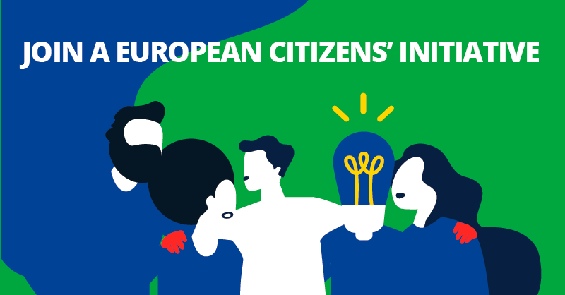
La ECI, o “Iniziativa dei Cittadini Europei” è l’unico processo riconosciuto ufficialmente che permette ai cittadini dell’UE di segnalare i temi a cui sono maggiormenti interessati e far sì che ciò sia giuridicamente vincolante per la Commissione Europea (a patto che siano soddisfatte alcune condizioni).
Per poter avviare una ECI, un gruppo di cittadini può riunirsi e proporre una nuova legge che rientri nella “competenza” dell’UE (ciò vuol dire che deve trattarsi di un’area in cui l’UE ha l’autorità legale per creare leggi).
Una volta che l’ECI proposta è stata accettata, gli organizzatori hanno 12 mesi di tempo (nel nostro caso, a causa dell’estensione dovuta alla COVID-19, 17 mesi e mezzo) per raccogliere almeno 1 milione di firme dai cittadini UE. È fondamentale che l’ECI raggiunga anche un numero minimo di firme richieste in almeno 7 stati membri dell’UE in modo che sia effettivamente rappresentativa. La soglia per ogni paese è direttamente legata al numero di Membri del Parlamento Europeo (MEP) che rappresentano quel paese. Guarda qui la nostra tabella con la situazione delle firme raccolte rispetto alle soglie di ogni paese!
Se una ECI ha successo poi ci sono diversi modi per garantire che il tema trattato finisca sull’agenda dell’Unione Europea:
- La Commissione Europea dovrà incontrarci per parlare della nostra proposta;
- La Commissione Europea dovrà poi inviare quella che è chiamata “Comunicazione” per spiegare quali azioni ha deciso di intraprendere (o di non intraprendere) sulla base della tua ECI. Una Comunicazione è uno strumento ufficiale dell’UE, anche noto come “soft law”;
- Il Parlamento Europeo può decidere di aprire un dibattito e inviare una propria risposta sul tema della ECI.
Perché Hermes ha bisogno del tuo aiuto con questa ECI?
Solo 6 Iniziative dei Cittadini Europei hanno raggiunto la soglia minima di 1 milione di firme. Alcune di esse hanno portato a cambiamenti tangibili nelle leggi europee, creando un collegamento tra chi ha firmato la petizione e le leggi che tutti i giorni impattano sulla nostra vita quotidiana (pensiamo ad esempio alle leggi sulla protezione dell’ambiente).
Le ECI, come quella portata avanti dalla campagna Riprenditi la Faccia, aiutano a far vedere sia ai politici nazionali che a quelli europei quali sono le questioni che ci interessano. Purtroppo, molti cittadini europei non sanno di avere diritto a firmare una ECI, e questo potrebbe portare a raccogliere meno firme del previsto: il tuo supporto è davvero importante per noi e per la campagna che stiamo portando avanti!
Noi di Hermes siamo un po’ svantaggiati nel raggiungere il nostro scopo, e questo perchè - a differenze di tutte le altre petizioni europee - noi non utilizziamo pubblicità mirata e profilazione per pubblicizzare la ECI sui social media. Per questo motivo è un po’ più difficile raccogliere le firme, ma contiamo sul supporto di tutti coloro che in Italia (più di 3.000 persone) hanno già firmato e possono fare passaparola per far conoscere i motivi per i quali chiediamo di vietare le tecnologie biometriche negli spazi pubblici.
Così facendo potremmo essere la 7° ECI che raggiunge le firme necessarie per presentarsi davanti alla Commissione Europea!
La mia firma fa davvero la differenza?
Sì, la tua firma può aiutare a rafforzare immediatamente la campagna Riprenditi la Faccia! Abbiamo già ricevuto molto sostegno dal Parlamento europeo. Ma il sostegno non è affatto unanime. Poter mostrare ai deputati europei che un gran numero di persone del proprio paese sostiene il divieto delle pratiche di sorveglianza biometrica di massa, potrebbe aiutarci a convincere quei deputati che attualmente non sono sicuri. E questo conta molto perché il tema della sorveglianza biometrica di massa è attualmente un tema scottante in Parlamento grazie alla recente proposta dell’UE di Regolamento sull’Intelligenza Artificiale (AI Act).
La tua firma può anche aiutarci a convincere i rappresentanti degli Stati membri dell’UE nel Consiglio dell’UE. Questi rappresentanti sono responsabili della negoziazione dell’AI Act con il Parlamento europeo per conto dei loro governi nazionali, e quindi essere in grado di utilizzare la pressione di una petizione di successo potrebbe davvero fare la differenza. La tua firma può quindi essere determinante nella creazione di una regolamentazione sull’intelligenza artificiale che tutela fortemente i diritti fondamentali, rispetto a uno che li lede.
Infine, se un numero sufficiente di persone da un determinato paese firma, la nostra ECI potrebbe incoraggiare i loro governi nazionali o locali a intraprendere azioni proattive per proteggere le persone dalle pratiche di sorveglianza biometrica di massa. Ci sono tanti modi in cui possiamo usare la tua firma per spingere per il cambiamento.
Come proteggete i miei dati?
La nostra ECI è stata progettata per garantire gli standard più alti di protezione della privacy e dei dati che una ECI possa offrire. Quando visiti il sito della nostra campagna (reclaimyourface.eu/it), raccogliamo solo una piccola quantità di dati necessari a garantire il corretto funzionamento del sito.
Quando firmi l’ECI usando il modulo online, i tuoi dati personali (che sono richiesti a base di legge dal tuo Stato membro dell’UE per validare la firma) sono protetti in transito (tramite il protocollo https) e poi cifrati quando raggiungono il database sicuro che è gestito dal nostro contractor, FTSQ, con il quale abbiamo siglato un contratto e un accordo per la protezione dei dati.
Il nostro modulo di raccolta firme online è gestito per nostro conto da FTSQ. Il captcha è impostato per funzionare su un server proxy di FTSQ. Usiamo un captcha perché il Regolamento ECI richiede di usare tecnologie per garantire che sia un essere umano (e non un bot) a firmare la nostra ECI. Abbiamo scelto il servizio di hCaptcha perché sono in grado di garantire sia tecnicamente che contrattualmente che non hanno accesso ad alcun tipo di dati personali riguardo i nostri firmatari (grazie al setup del nostro server proxy), e che i dati non personali usati dal loro sistema per individuare i bot non lascino mai il territorio dell’UE. Grazie alla configurazione della nostra istanza di hCaptcha, loro non hanno alcun modo di accedere i dati che i firmatari immettono nel modulo online.
Il nostro modulo di raccolta firme online è stato verificato?
L’intero sistema di raccolta firme per l’ECI è stato controllato e certificato dall’Ufficio Federale per la Sicurezza Informatica della Germania, noto anche come BSI, per conto della Commissione Europea.
Una volta ricevuta la tua firma, essa sarà conservata in un database cifrato. Solo i membri della Commissione dell’ECI designati hanno una chiave per questo database e abbiamo messo in atto salvaguardie organizzative per garantire che usino queste chiavi solo per trasferire i dati alla Commissione Europea al fine di permetterne la verifica da parte degli Stati membri dell’UE. Grazie a questa scelta, persino noi non possiamo verificare se i tuoi dati sono nel database oppure no.
Allora, cosa stai aspettando? Firma subito l’ECI in fondo a questa pagina!
Ci sono altri modi per firmare?
Di recente abbiamo creato un modo alternativo per consentire alle persone di firmare la nostra ECI. Puoi firmare la petizione semplicemente scaricando una copia cartacea del modulo, e inviandocelo tramite e-mail crittografata. Per avere più informazioni, vai sulla nostra pagina delle firme cartacee.
Abbiamo in mente di organizzare anche alcuni eventi di persona prossimamente, proprio per raccogliere più firme possibili. Per sapere se presto si svolgeranno eventi vicino a te, scrivici a projects@hermescenter.it.
Perchè la petizione è solo per i cittadini europei?
Sfortunatamente, le regole che impongono la firma delle ECI solo da parte dei cittadini dell’UE (così come i limiti di età) sono al di fuori del nostro controllo: lo strumento ECI è disciplinato da una legge dell’UE.
Riteniamo che ciò sia ingiusto, quindi abbiamo già provveduto a informare le istituzioni dell’UE dicendo che vorremmo vedere in futuro un processo più inclusivo e che continueremo a spingere per altri cambiamenti. Ciò significherebbe rendere valide le firme di tutti i residenti dell’UE (non solo i cittadini), avere opzioni per le persone che non hanno un indirizzo fisso o la carta d’identità nazionale, e anche altri modi per coloro che sono privi di documenti per far sentire la propria voce.
Sebbene l’ECI non sia uno strumento perfetto, pensiamo che il potere politico che ne deriva possa superarne i limiti. Al momento non siamo a conoscenza di strumenti di petizione perfetti, ma a conti fatti questo strumento ci offre le migliori possibilità di effettuare un cambiamento reale, proteggendo la privacy e i dati molto di più rispetto alla maggior parte delle petizioni online. Per coloro che non possono firmare, ci sono molti altri modi per partecipare alla campagna.
Mettiti in contatto con noi a projects@hermescenter.it per sapere come.
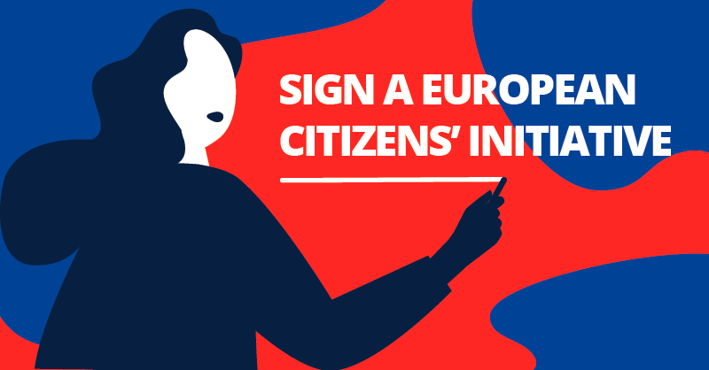
Vuoi saperne di più?
La pagina Reclaim Your Face è attualmente disponibile in 15 lingue, tra le quali ovviamente l’italiano. Contiene molte informazioni sulla nostra ECI:
Homepage: https://reclaimyourface.eu/
Perché l’ECI?: https://reclaimyourface.eu/why-eci/
Informativa sulla privacy: https://reclaimyourface.eu/privacy-policy/
Opzione firma su carta: https://reclaimyourface.eu/signing-the-eci-on-paper/
Ti suggeriamo anche alcune altre risorse utili:
Controlla la nostra petizione ufficiale nel registro ECI dell’UE: https://europa.eu/citizens-initiative/initiatives/details/2021/000001_en
Vedi il nostro r/privacy AMA (Ask Me Anything) insieme a Privacy International sull’ECI Reclaim Your Face: https://www.reddit.com/r/privacy/comments/mrz8oo/were_privacy_international_rprivacyintl_and_edri/
Leggi “L’azione democratica ha il potere di proteggere la democrazia dell’UE dalla sorveglianza di massa biometrica” di Ella Jakubowska (network EDRi), https://europa.eu/citizens-initiative-forum/blog/democratic-action-has-power-protect-eu-democracy-biometric-mass-surveillance_en
2021-06-17 · News, Press · https://www.hermescenter.org/vivere-in-una-paperbagsociety/
Vivere in una #PaperBagSociety
Negli ultimi mesi abbiamo puntato l’attenzione sui pericoli della sorveglianza biometrica di massa. Nel farlo abbiamo anche studiato e capito quanto siano complessi i sistemi che si basano sui dati biometrici. Abbiamo cercato di trovare diversi modi per ingannarli, guardando alle tecnologie di sorveglianza del riconoscimento facciale impiegate nei nostri spazi pubblici. I risultati però sono chiari: come singoli individui, è terribilmente difficile ingannare la sorveglianza biometrica di massa. Non possiamo sfuggire all’algoritmo.
Questo è il motivo per cui uno degli organizzatori della campagna ha scherzato dicendo: “Mettiamoci un sacchetto di carta in testa e saremo al sicuro dalla sorveglianza del riconoscimento facciale.“
Allora ci siamo chiesti: come sarebbe vivere la vita di tutti i giorni con un sacchetto di carta sulla testa? Abbiamo bisogno di usare un sacchetto di carta per proteggere i nostri volti dalle inquietanti tecnologie di riconoscimento facciale? È questa la società in cui vogliamo vivere?
La #PaperBagSociety è una realtà distopica, una metafora del modo in cui la sorveglianza biometrica di massa sopprime le nostre scelte, la nostra parola e le nostre libertà.
Ci siamo resi conto che questo potrebbe essere un perfetto esercizio di immaginazione per chiunque voglia capire meglio perché abbiamo bisogno di un mondo libero da tecnologie intrusive che tracciano i nostri corpi e comportamenti.
Così è nata la #PaperBagSociety challenge
La #PaperBagSociety è una sfida sui social media e fa parte della campagna #ReclaimYourFace. La sfida invita tutti a condividere sui social l’impatto che avrebbe vivere con un sacchetto di carta in testa.
Creando degli scenari assurdi, questa azione vuole focalizzare l’attenzione sul perché il desiderio di evitare le inquietanti tecnologie di sorveglianza biometrica negli spazi pubblici non dovrebbe essere un pesante fardello che ricade su di noi, le persone.
Invece, un futuro alternativo è possibile. Ci sono soluzioni per prevenire una società dove tutti indossiamo una busta di carta in testa: dobbiamo vietare la sorveglianza biometrica di massa in tutta l’UE e oltre!
Partecipa alla sfida #PaperBagSociety!
- Vai a fare una passeggiata in uno spazio accessibile al pubblico (piazza pubblica, per strada, in una stazione ferroviaria, un supermercato, un caffè, uno stadio, un centro commerciale, ecc);
- Mettiti un sacchetto di carta e prova a vivere nello spazio pubblico;
- Fai un video o una foto dell’esperienza e condividila sui social media;
- Ricorda di taggare #ReclaimYourFace & #PaperBagSociety e spiega ai tuoi amici perché dobbiamo vietare la sorveglianza biometrica di massa;
P.S. Prima di ogni altra cosa: assicurati di non mettere in pericolo te stesso o gli altri. Non fare nulla di pericoloso.
P.P.S. Hai la fortuna di essere cittadino di un paese dell’UE? FIRMA per vietare la sorveglianza biometrica di massa!
{kind=link}
2021-05-27 · News, Press · https://www.hermescenter.org/centro-hermes-e-altre-associazioni-inviano-segnalazioni-reclami-contro-clearview-ai/
Il Centro Hermes e altre 3 associazioni hanno inviato segnalazioni e reclami contro Clearview AI
Una coalizione di associazioni che include il Centro Hermes, Privacy International, Homo Digitalis e noyb - the European Center for Digital Rights ha inviato una serie di segnalazioni contro Clearview AI, Inc., un’azienda di riconoscimento facciale che afferma di avere “il più grande database conosciuto con oltre 3 miliardi di immagini di volti.” I reclami e le segnalazioni sono stati inviati alle Autorità per la protezione dei dati personali di Austria, Francia, Grecia, Italia, e Regno Unito.
Come sottolineato nelle nostre analisi, Clearview AI utilizza un sistema automatico per fare scraping delle immagini, uno strumento che scandaglia il web e raccoglie immagini in cui rileva la presenza di un volto umano. Clearview AI fa scraping di miliardi di immagini dai social media e da altri siti sul web. Tutti questi volti vengono poi analizzati dall’algoritmo di riconoscimento facciale di Clearview AI per costruire un gigantesco database di dati biometrici. Clearview vende poi l’accesso a questo database a forze dell’ordine e aziende private.
A causa della sua natura estremamente invasiva, l’impiego di sistemi per il riconoscimento facciale, e specialmente qualunque modello di business che punta a sfruttarli, solleva gravi preoccupazioni per le società moderne e le nostre libertà individuali. Il mese scorso, il Garante per la protezione dei dati personali italiano ha bloccato i piani della polizia che prevedevano l’impiego del riconoscimento facciale in tempo reale. “Le tecnologie per il riconoscimento facciale mettono in pericolo le nostre vite sia quando siamo su internet che quando siamo in strada,” ha dichiarato Fabio Pietrosanti, Presidente del Centro Hermes. “Raccogliendo di nascosto i nostri dati biometrici, queste tecnologie introducono una sorveglianza costante dei nostri corpi.”
Le Autorità ora hanno 3 mesi di tempo per rispondere ai reclami. Al momento, le Autorità per la protezione dei dati dell’Italia e del Regno Unito stanno già esaminando le attività dell’azienda e ci auguriamo che le nostre segnalazioni possano fornire un supporto alle loro istruttorie. Ci aspettiamo inoltre che le Autorità dei diversi stati uniscano le proprie forze e collaborino insieme per stabilire che le attività di Clearview non sono ammesse in Europa—questo avrebbe ramificazioni importanti anche sulle attività a livello globale dell’azienda.
Clearview AI e la minaccia ai nostri diritti
Clearview è uscita allo scoperto nel gennaio 2020, quando un’inchiesta del New York Times ha rivelato al mondo intero le sue attività. Prima di allora, Clearview aveva operato in gran segreto mentre allo stesso tempo offriva il suo prodotto alle forze dell’ordine in vari paesi, nonché ad aziende private.
Insieme alle immagini dei volti, lo strumento di scraping di Clearview AI raccoglie anche i metadati associati alle immagini, come il titolo dell’immagine o quello del sito web da cui è presa, dati di posizione, e il link della fonte.
“Le leggi europee sulla protezione dei dati sono molto chiare quando si tratta delle finalità per cui le aziende possono usare i nostri dati” ha detto Ioannis Kouvakas, Legal Officer di Privacy International. “Estrarre le nostre caratteristiche facciali uniche o addirittura condividerle con la polizia e altre aziende va ben oltre quello che potremmo mai aspettarci come utenti online”.
“Clearview sembra voler scambiare Internet per uno spazio omogeneo e completamente pubblico dove tutto è lì a disposizione di tutti per essere preso” ha sottolineato Lucie Audibert, Legal Officer di Privacy International. “Tutto questo è chiaramente sbagliato. Tali pratiche minacciano il carattere aperto di Internet e i numerosi diritti e libertà che favorisce.”
Le cinque segnalazioni, alcune delle quali si basano anche su richieste di accesso effettuate dagli interessati, vanno ad aggiungersi a una serie di istruttorie avviate sulla scia delle rivelazioni dello scorso anno. “Solo perché qualcosa è ‘online’ non significa che sia lì per essere presa da altri in qualsiasi modo essi vogliano – e questo vale sia moralmente che legalmente,” ha dichiarato Alan Dahi, Data Protection Lawyer presso noyb. “Le Autorità per la protezione dei dati personali devono intervenire e impedire a Clearview e ad aziende simili di raccogliere i dati personali delle persone che risiedono in Europa.”
Secondo quanto riferito dai giornali, Clearview ha siglato contratti anche con alcune forze dell’ordine europee. In Grecia, a seguito di una richiesta di informazioni inviata da Homo Digitalis, la polizia ha negato la collaborazione con l’azienda. “È importante aumentare l’attenzione e lo scrutinio su questo tema. Le Autorità per la protezione dei dati hanno forti poteri investigativi e abbiamo bisogno di una reazione coordinata a queste partnership pubblico-privato,” ha ribadito Marina Zacharopoulou, Avvocata e membro di Homo Digitalis.
I cittadini e le cittadine europee possono chiedere a Clearview se il proprio volto è contenuto nel database e richiedere che i propri dati biometrici non siano più inclusi nelle ricerche inviando una richiesta all’indirizzo [privacy@clearview.ai] oppure seguendo le modalità offerte dalla piattaforma My Data Done Right.
Qui è disponibile il testo della segnalazione inviata al Garante per la protezione dei dati personali.
Ricorda che puoi firmare anche l’Iniziativa dei cittadini europei per chiedere il ban della sorveglianza biometrica di massa sul sito della campagna Reclaim Your Face.
2021-04-22 · News, Press · https://www.hermescenter.org/la-proposta-di-regolamento-sullai-della-commissione-europea-dimostra-esattamente-il-motivo-per-cui-chiediamo-un-divieto-della-sorveglianza-biometrica-di-massa/
La proposta di Regolamento sull’AI della Commissione Europea dimostra esattamente il motivo per cui chiediamo un divieto della sorveglianza biometrica di massa
Ieri la Commissione Europea ha presentato una proposta di Regolamento per l’Intelligenza Artificiale (AI) che sottolinea i rischi della sorveglianza biometrica di massa, e propone una nuova regolamentazione per vietare l’uso da parte delle forze dell’ordine di alcune di queste tecnologie —un piccolo passo nella giusta direzione.
In particolare, siamo lieti di vedere che la Commissione riconosca che la sorveglianza biometrica di massa ha un impatto altamente invasivo sui diritti e le libertà delle persone, così come il fatto che l’uso di queste tecnologie possa “influenzare la vita privata di una grande parte della popolazione ed evocare una sensazione di sorveglianza costante (…)“. Questi sono esattamente i motivi che hanno spinto la coalizione Reclaim Your Face a battersi per vietare la sorveglianza biometrica con una campagna pubblica, e dimostra che i nostri punti hanno colpito nel segno.
Purtroppo, però, siamo delusi perché la proposta odierna non fa abbastanza per proteggere le persone da molteplici tipologie di sorveglianza biometrica di massa che abbiamo già visto in azione in Europa. Come risultato la proposta si contraddice, permettendo alcune forme di sorveglianza biometrica di massa che però riconosce essere incompatibili con i nostri diritti fondamentali e con le libertà protette in Europa!
In particolare, la proposta vieta “l’identificazione biometrica da remoto” in “real-time” per finalità di sicurezza. Eppure, riteniamo ci siano ancora grossi problemi:
- La formulazione è spesso vaga e contiene diversi elementi definiti in maniera poco precisa, lasciando ampio spazio di interpretazione e discrezione. Ciò riproduce molti dei problemi già esistenti nelle leggi sulla protezione dei dati personali che ci hanno portato a chiedere un divieto esplicito;
- Il divieto si applica solo alle forze dell’ordine, ma non proibisce usi altrettanto invasivi e pericolosi da parte di altre autorità governative e di aziende private, che costituiscono comunque una sorveglianza biometrica di massa;
- Il divieto per le forze dell’ordine presenta molte eccezioni definite in modo troppo ampio e che quindi potrebbero seriamente minarne lo scopo. In questo modo si lascia ampio spazio per una sorveglianza biometrica di massa continuativa dello spazio pubblico da parte delle autorità di polizia;
- È vietata solo l’identificazione in “real-time” a fini di sicurezza. È quindi ancora possibile identificare persone dopo che le immagini sono state registrate (il riferimento nel regolamento a “post”, quindi dopo che un evento è avvenuto)—ciò vuol dire, per esempio, che la polizia potrebbe ancora usare il database di Clearview AI;
- Tutte le altre pratiche di identificazione biometrica—inclusa quella spesso considerata psuedo-scientifica e altamente discriminatoria della “categorizzazione” biometrica—non sono vietate dalla proposta.
La coalizione Reclaim Your Face, composta al momento da 60 associazioni e gruppi che si occupano di diritti umani digitali e di giustizia sociale in tutta Europa, è nata a ottobre 2020 proprio per opporsi alla sorveglianza biometrica di massa in Europa. La coalizione ha sottolineato che questa pratica è invasiva, discriminatoria e antidemocratica.
Se l’Europa non vieterà la sorveglianza biometrica, il rischio di sorveglianza di massa nelle nostre città sarà estremamente reale. La tecnologia non può avere il potere di definire chi siamo, nè di controllarci. Privacy significa potere. Reclamare il possesso delle nostre città e degli spazi pubblici è il primo step per riappropriarci della nostra faccia.
Laura Carrer – Hermes Center for Transparency and Digital Rights
Dal riconoscimento facciale nei parchi e nelle scuole, alla biometria “intelligente” per sorvegliare i manifestanti, fino alla sorveglianza sistemica e oppressiva di gruppi emarginati della popolazione, per noi non c’è posto nelle nostre società per tecnologie biometriche che ci trasformano tutti in sospetti criminali. Le prove raccolte dalle nostre associazioni hanno rivelato che gli attuali abusi sono vasti e sistemici, e la nostra analisi ha dimostrato che l’unico modo per proteggere i diritti delle persone in Europa è quello di vietare queste pratiche. Non dovremmo essere costretti a guardarci le spalle ovunque andiamo.
Qui c’è l’analisi iniziale di EDRi sull’intera proposta di Regolamento— incluse le preoccupazioni per altri casi d’uso che sarebbero dovuti essere vietati ma così non è stato - e disposizioni che permettono a chi sviluppa sistemi di AI di farsi una auto-valutazione.
Per firmare la petizione: https://reclaimyourface.eu/it/
2021-04-19 · News, Press · https://www.hermescenter.org/primi-importanti-risultati-a-due-mesi-dal-lancio-di-riprenditi-la-faccia/
Primi importanti risultati a due mesi dal lancio di Riprenditi la Faccia
La scorsa settimana abbiamo raggiunto e superato due importanti obiettivi nazionali della campagna contro l’utilizzo di tecnologie biometriche nello spazio pubblico Europeo.
Nella giornata di venerdì 16 aprile il Garante Privacy ha definito il sistema di riconoscimento facciale SARI Real Time, così come progettato, una possibile forma di sorveglianza ed identificazione di massa che non può essere utilizzata dal Ministero dell’Interno. Il Garante ha analizzato la valutazione d’impatto presentata dal Ministero e ha sottolineato come, allo stato attuale, non vi sia una base legale che autorizzi il trattamento di dati biometrici previsto dal sistema SARI.
La decisione, anche se arrivata dopo tre anni dall’apertura dell’istruttoria nata a seguito della pubblicazione di un articolo, è di grande importanza perché vieta l’utilizzo di tecnologie biometriche discriminanti e poco accurate da parte delle forze dell’ordine su tutti i cittadini.
“Va considerato, in particolare, - afferma il Garante - che Sari Real Time realizzerebbe un trattamento automatizzato su larga scala che può riguardare anche persone presenti a manifestazioni politiche e sociali, che non sono oggetto di “attenzione” da parte delle forze di Polizia. Ed anche se nella valutazione di impatto presentata il Ministero spiega che le immagini verrebbero immediatamente cancellate, l’identificazione di una persona sarebbe realizzata attraverso il trattamento dei dati biometrici di tutti coloro che sono presenti nello spazio monitorato, allo scopo di generare modelli confrontabili con quelli dei soggetti inclusi nella “watch-list”.
Per il Garante questo tipo di sorveglianza biometrica porterebbe “dalla sorveglianza mirata di alcuni individui alla possibilità di sorveglianza universale allo scopo di identificare alcuni individui.” L’autorità però non si è limitata solo a questa valutazione ma ha sottolineato anche alcuni aspetti critici da tenere in considerazione per qualunque norma futura che regoli il riconoscimento facciale: dai “criteri di individuazione dei soggetti che possano essere inseriti nella watch-list o quelli per determinare i casi in cui può essere utilizzato il sistema” alle “eventuali conseguenze per gli interessati in caso di falsi positivi”— inclusi anche i rischi nei confronti di persone appartenenti a minoranze etniche.
Solo due giorni prima, mercoledì 14 aprile, c’è stata anche una prima risposta da parte della politica italiana al tema del riconoscimento facciale negli spazi pubblici: il deputato Filippo Sensi ha infatti depositato una proposta di legge per una moratoria sull’utilizzo di queste tecnologie. Nella proposta si fa riferimento ad una sospensione fino al 31 dicembre 2021 in attesa di un adeguato quadro legislativo a supporto. Indicazioni si aspettano anche il 21 aprile, quando l’Unione Europea si esprimerà nella tanto attesa normativa sull’IA.
Il Centro Hermes seguirà certamente l’iter di legge puntando l’attenzione soprattutto su due punti:
- L’utilizzo di qualsiasi tecnologia di sorveglianza biometrica di massa deve essere vietato all’interno dello spazio pubblico europeo;
- Non devono essere fatte eccezioni per i sistemi utilizzati dalle forze dell’ordine.
Il nostro lavoro in questo senso continua e sabato 17 aprile siamo stati ospiti di SkyTg24 proprio con un componente del Garante Privacy, l’onorevole Filippo Sensi e Privacy Network, associazione che supporta la campagna Riprenditi la Faccia. Sulla base della decisione contraria del Garante Privacy in merito a SARI Real Time, ci è stato assicurato che i 287 comuni che hanno ricevuto finanziamenti dal Ministero dell’Interno per installare nuovi impianti di videosorveglianza non potranno utilizzare tecnologie biometriche.
Per firmare la petizione ed essere aggiornati sulla campagna, che ha già raggiunto quasi 50.000 persone in Europa: https://reclaimyourface.eu/it/
2021-03-30 · News, Press · https://www.hermescenter.org/aziende-scuole-aeroporti-riconoscimento-facciale-ovunque-reclaim-your-face/
Aziende, scuole, aeroporti e piazze: il riconoscimento facciale è ovunque. E sorveglia i cittadini europei
Spesso sentiamo dire: “Riconoscimento facciale sui cittadini? Solo in Cina, l’Unione Europea è un insieme di paesi democratici. Non potrà mai succedere a noi.”
Sfortunatamente, però, sta già succedendo. Di seguito puoi leggere alcuni esempi che documentano una rapida propagazione di sistemi di sorveglianza biometrica in molti paesi europei.
Qual è (l’unico) aspetto positivo? Che possiamo ancora fermarla.
Negli ultimi anni, governi ed aziende private hanno spinto per installare o sperimentare tecnologie di sorveglianza che collezionano e processano i nostri dati personali, dati unici sui nostri corpi e i nostri comportamenti durante la nostra vita quotidiana. Questa per noi è sorveglianza di massa.
Nonostante l’Unione Europea dica che esistono già leggi che possano prevenire la sorveglianza dei cittadini, è chiaro che ci troviamo davanti a cavilli legislativi che permettono la sperimentazione di tecnologie biometriche che violano i diritti umani e vengono impiegate su tutti noi. Gli esempi parlano da soli.
In Germania, la polizia ha sperimentato la sorveglianza biometrica di massa sulle persone che attraversavano la stazione Südkreuz di Berlino e ha sorvegliato i manifestanti del G20 ad Amburgo. Inoltre, è stato dimostrato che la famigerata società di riconoscimento facciale ClearviewAI ha raccolto illegalmente e utilizzato i volti delle persone che vivono in Germania da Internet.
In Austria, la polizia ha usato un software per il riconoscimento facciale in una fase di test a partire da dicembre 2019. Inizialmente, il Ministero dell’Interno aveva dichiarato che il confronto dei volti con il loro database sarebbe stato effettuato solo per indagare reati gravi, come ad esempio rapine in banca o omicidi. Invece, le risposte ad alcune interrogazioni parlamentari hanno rivelato un quadro completamente diverso. Nel 2020 il software è stato usato per 931 casi di reati in soli 10 mesi, inclusi reati minori. Stiamo parlando di circa tre ricerche al giorno. Ad agosto 2020 il sistema è entrato ufficialmente in funzione. Poco dopo, a settembre, i giornali hanno rivelato che il sistema è stato utilizzato dalla polizia per individuare persone che hanno partecipato a una manifestazione.
In Repubblica Ceca, la polizia ha acquistato il software di riconoscimento facciale Cogniware in grado di prevedere emozioni e genere e collegare ogni persona con le proprie informazioni finanziarie, i dati del telefono, l’auto che si guida, il posto di lavoro, i colleghi di lavoro, chi incontrano, i luoghi che visitano e cosa acquistano. Inoltre, l’aeroporto della capitale di Praga sta anche effettuando un ampio monitoraggio biometrico di tutte le persone, senza valutare i rischi, come la legge prevede.
Passando all’Italia, siamo rimasti davvero increduli nell’apprendere che la città di Como aveva segretamente installato, sulle videocamere di sorveglianza esistenti, un sistema di riconoscimento facciale real time allo scopo di … rilevare azioni di “vagabondaggio” e “sconfinamento”. L’aeroporto di Roma ha deciso invece di utilizzare il riconoscimento facciale per la gestione delle code. C’è di più: la polizia italiana ha in programma di espandere il proprio sistema di riconoscimento facciale per monitorare l’arrivo di migranti e richiedenti asilo sulle coste italiane, proprio come ha dichiarato in passato di essere disposta a utilizzare il riconoscimento facciale per monitorare i manifestanti.
The evidence speaks for itself. The spread of biometric mass surveillance across different EU countries shows why we need a new law banning it.
See the evidence, sign our formal ECI. Pass this on.EVIDENCE: https://t.co/LwQDYJCriX
SIGN: https://t.co/9l6wdwVwzW#ReclaimYourFace pic.twitter.com/75LUSqtXwh— Reclaim Your Face (@ReclaimYourFace) March 30, 2021
Per quanto riguarda la Grecia, un dato è certo: sappiamo che con l’Italia non condivide solo il Mediterraneo ma anche lo stesso amore delle autorità nazionali per il riconoscimento facciale di massa. L’esperimento distopico iBorderCTRL è un cosiddetto “rilevatore di bugie” che potrebbe capire se una persona mente in base alle proprie espressioni facciali. Inoltre, la polizia greca è stata colta in flagrante con un contratto di riconoscimento facciale “intelligente” da 4 milioni di euro rivelato nel 2020. Ora, l’autorità greca per la protezione dei dati ha iniziato a indagare sulla polizia greca per l’archiviazione e l’elaborazione illegali dei dati biometrici dei cittadini greci in enormi database centralizzati.
Nei Paesi Bassi, le aziende hanno introdotto tecnologie per la sorveglianza biometrica di massa come il riconoscimento facciale in tempo reale all’interno di palazzetti dello sport e per eventi come i concerti, nei negozi/supermercati e sui mezzi del trasporto pubblico. Le aziende sono state così aggressive nell’introduzione di queste tecnologie di sorveglianza che l’Autorità per la protezione dei dati olandese gli ha dovuto ricordare che queste pratiche sono illegali. In aggiunta, la polizia olandese ha incluso 1.3 milioni di persone nel suo sistema di riconoscimento facciale, molte di queste persone sono innocenti che non sono mai state accusate di un crimine.
Mais oui, la Francia non è nuova alla sorveglianza biometrica di massa. A Marseille una scuola superiore ha introdotto il riconoscimento facciale contro i propri studenti. Anche la città francese di Nizza ha sperimentato il riconoscimento facciale nelle sue strade. Ma c’è di più, il governo francese ha un enorme database per il riconoscimento facciale (TAJ) che contiene 19 milioni di file e 8 milioni di immagini.
Cioccolato, birra e riconoscimento facciale di massa. Questo potrebbe essere il prossimo slogan promozionale del Belgio. Si è scoperto che chiunque camminasse all’interno dell’aeroporto Zaventeem di Bruxelles veniva spiato segretamente (esatto, non per il controllo dei passaporti), raccogliendo ed elaborando dati sui volti delle persone identificabili in maniera univoca.
Danimarca, vi er ikke enig. Nej. Il governo è riuscito a sfruttare i punti ciechi delle leggi europee e permettere la sorveglianza biometrica di massa sui tifosi di calcio. Il prossimo passo? Vendere l’idea come fosse varmt brød. Il Club di calcio Brøndby ha annunciato che a breve il volto di chiunque sarà scansionato per identificare le persone a cui è stato vietato di assistere alle partite di calcio del Brøndby IF. L’Autorità per la protezione dei dati personali danese ha approvato il sistema.
In Slovenia, si è scoperto che la polizia ricorre alla sorveglianza biometrica di massa. Lo stesso tipo di sorveglianza è stata impiegata per monitorare i manifestanti che esercitavano i propri diritti.
Anche la Svezia è nella mappa degli indiziati. La polizia svedese è stata multata per aver usato illegalmente Clearview AI (sì, di nuovo loro). Inoltre, una scuola svedese ha anche introdotto il riconoscimento facciale di massa per monitorare la frequenza scolastica.
In Polonia e Serbia, abbiamo visto persino altri casi. Una scuola polacca ha utilizzato l’impronta digitale biometrica per gestire la mensa scolastica e in Serbia abbiamo assistito al dispiegamento massiccio di videocamere con riconoscimento facciale nelle strade di Belgrado.
Questi sono solo alcuni degli esempi di cui siamo a conoscenza. Quante saranno le sperimentazioni e i progetti in fase di sviluppo, invece?

Come se non bastasse, alcuni funzionari dell’UE stanno prendendo in considerazione eccezioni che potrebbero consentire l’impiego della sorveglianza biometrica di massa legalmente. Mentre noi stiamo dando l’allarme per i cavilli già esistenti nella legge, i funzionari preferiscono ampliarli e trasformarli definitivamente in legge.
Chiediamo una normativa che risolva il vuoto legislativo nel quadro europeo, un vuoto che è attualmente sfruttato da aziende e governi per imporre la sorveglianza biometrica di massa su tutti noi.
L’enorme quantità di prove dimostra di per sé il motivo per cui abbiamo bisogno di una nuova legge che vieti la sorveglianza biometrica di massa in tutta l’Unione Europea.
Aggiungi il tuo nome alla petizione ufficiale europea: https://reclaimyourface.eu/#sign
2021-03-25 · News, Press · https://www.hermescenter.org/61-associazioni-terreg-parlamento-europeo-proteggere-liberta-espressione/
Insieme a 61 associazioni chiediamo al Parlamento europeo di proteggere la libertà di espressione
Il 25 marzo, 61 associazioni di giornalisti e di attivisti per i diritti umani hanno inviato una lettera congiunta ai membri del Parlamento europeo, esortandoli a votare contro la proposta di regolamento per affrontare la diffusione di contenuti terroristici online.
La coalizione ritiene che il regolamento proposto, nella sua forma attuale, non ha posto nel quadro legislativo dell’UE in quanto pone gravi minacce alla libertà di espressione e di opinione, alla libertà di accesso alle informazioni, al diritto alla privacy e allo stato di diritto.
Se adottato, il regolamento permetterebbe a qualsiasi autorità di cancellare qualsiasi contenuto online ovunque in Europa entro un’ora. Poiché non richiede il coinvolgimento di un tribunale indipendente, lo strumento potrebbe essere abusato a fini di censura politica. La proposta delega anche agli algoritmi la decisione di ciò che può essere considerato libertà di parola, concedendo ancora più potere alle attuali pratiche di moderazione dei contenuti opache e non responsabili utilizzate dalle piattaforme dominanti. I rischi sono alti perché questi sistemi automatici non possono distinguere il sarcasmo da un’affermazione fatta con convinzione, le notizie dalla propaganda o l’educazione dall’indottrinamento.
Inoltre, creerebbe un pericoloso precedente per qualsiasi futura legislazione dell’UE che regola l’espressione online e l’ecosistema digitale, in particolare se pensiamo al Digital Services Act.
Come ultimo passo del processo legislativo, il Parlamento europeo deve decidere se approvare il testo, che è il risultato di oltre un anno di negoziati con il Consiglio. Il voto è previsto durante la sessione plenaria del Parlamento alla fine di aprile.
La coalizione incoraggia tutte le organizzazioni e gli individui preoccupati per lo stato dei diritti e delle libertà in Europa a riunirsi intorno a questo appello, a contattare i propri rappresentanti al Parlamento europeo e invitarli a respingere questa pericolosa legislazione.
Puoi leggere la lettera congiunta qui in italiano, inglese, tedesco, francese, polacco, rumeno, spagnolo, svedese e olandese.
Credits immagine: Photo by Michael Dziedzic on Unsplash
2021-02-18 · News, Press · https://www.hermescenter.org/sorveglianza-biometrica-eci-milione/
Un futuro senza sorveglianza biometrica di massa: l’iniziativa europea Reclaim Your Face punta al milione di firme
Lo scopo è arrivare alla Commissione Europea e rendere il divieto sempre più concreto
Mentre la Commissione Europea sta preparando nuove leggi sull’Intelligenza Artificiale, una coalizione in continua espansione di associazioni per i diritti umani e digitali, guidata da European Digital Rights (EDRi), mette in guardia dai molteplici pericoli che la sorveglianza biometrica di massa presenta per la nostra libertà e per la nostra dignità.
Oggi la coalizione Reclaim Your Face lancia un’iniziativa dei Cittadini Europei (ECI) per chiedere all’Europa di vietare l’uso di algoritmi di IA che possono arrecare danni alla cittadinanza—come appunto la sorveglianza biometrica di massa. L’ECI è uno strumento ufficiale unico nel suo genere offerto dall’Unione Europea ai propri cittadini per organizzare e chiedere tutti insieme nuovi quadri legislativi su molteplici materie.
L’obiettivo dell’ECI, portata avanti in Italia dal Centro Hermes con il supporto di Associazione Luca Coscioni, Certi Diritti, CILD, Eumans, info.nodes, Privacy Network e StraLi, è raccogliere 1 milione di firme in almeno 7 paesi dell’UE nell’arco di un anno, ovvero febbraio 2022. Se avremo successo la Commissione Europea sarà obbligata a rispondere alla nostra richiesta formale per una nuova legge e aprire un dibattito con gli Stati Membri del Parlamento Europeo.
“Le politiche per la sicurezza della città sono legate a doppio filo già da tempo con altri concetti come il degrado e il decoro urbano. Le videocamere e gli strumenti di sorveglianza sono sempre più normalizzati perché la narrazione entro la quale vengono utilizzati si basa sull’assunto che controllare è più facile. Ma lo spazio della città appartiene ai cittadini e sono loro che, vivendo lo spazio pubblico, la rendono più sicura e inclusiva,” dichiara Laura Carrer, ricercatrice del Centro Hermes.
I cittadini europei si trovano di fronte a un momento storico cruciale: fermare la sorveglianza biometrica di massa prima che diventi talmente pervasiva da essere normalizzata nelle nostre società.
I casi di abuso in tutta Europa
La coalizione di associazioni che hanno dato vita a Reclaim Your Face ha già messo insieme prove di abusi sistematici dei dati biometrici delle persone in tutta Europa, e sta contrastando queste tecnologie con successo. In Serbia le autorità stanno sorvegliando la popolazione per le strade di Belgrado, in Italia le autorità hanno cercato di colpire direttamente le comunità con la sorveglianza biometrica nel parco della città di Como, e malgrado quella installazione sia stata dichiarata illegale dal Garante privacy italiano, altre città stanno cercando di introdurre tecnologie simili e persino la polizia vuole usarle per monitorare gli sbarchi dei migranti sulle coste italiane. In Grecia, le autorità nazionali stanno indagando l’uso della sorveglianza biometrica quando la polizia effettua i controlli in strada.
In Francia, la società civile ha portato in Tribunale l’impiego della sorveglianza biometrica di massa usata nelle scuole e contro i manifestanti. Nei Paesi Bassi, le autorità nazionali hanno criticato la sorveglianza biometrica di massa nei supermercati. La coalizione Reclaim Your Face è stata fondamentale nel far luce e contrastare queste tecnologie, e nel richiedere l’intervento delle autorità di controllo. Ad esempio Homo Digitalis ha fatto partire un’indagine del garante privacy greco in Grecia e Bits of Freedom ha supportato le dichiarazioni dell’autorità garante contro la sorveglianza biometrica nei Paesi Bassi.
Malgrado ciò, è evidente che dobbiamo agire uniti, in contemporanea su più paesi, e necessariamente a livello europeo.
I dati biometrici sono intimamente collegati ai nostri corpi ed ai nostri comportamenti, e quindi possono rivelare informazioni sensibili su chi siamo. Ad esempio, i nostri volti possono essere sfruttati con il riconoscimento facciale per effettuare previsioni o valutazioni sul nostro conto—e lo stesso vale per i nostri occhi, vasi sanguigni, voci, l’andatura o il modo in cui digitiamo i tasti della tastiera.
I governi, le forze dell’ordine e le aziende utilizzano dispositivi per la registrazione (come le videocamere a circuito chiuso) e software per il riconoscimento facciale per monitorare i nostri spostamenti da un luogo a un altro sfruttando le nostre caratteristiche ed identificandoci. La raccolta indiscriminata di dati biometrici svolta in luoghi pubblici come la strada, i parchi, le stazioni ferroviarie, i negozi o i palazzetti dello sport, solo perché stiamo cercando di vivere liberamente le nostre vite, è una sorveglianza biometrica di massa.
Il trattamento di qualsiasi dato biometrico è già vietato dall’UE. Eppure, l’Unione Europea concede alcune deroghe a questo divieto generale che sono alquanto problematiche. Vediamo continuamente abusi di queste tecnologie, introdotte sfruttando questa confusione legale, e che—spesso senza un controllo democratico—finiscono con l’essere installate nei nostri spazi pubblici, disumanizzandoci e trattandoci come dei codici a barre che camminano.
2021-01-28 · News, Press · https://www.hermescenter.org/la-soluzione-innovativa-di-torino-argo/
La soluzione “innovativa” di Torino: Argo
Le città sono lo spazio che abitiamo, dove costruiamo le nostre comunità, dove partecipiamo a eventi pubblici e, soprattutto, dove creiamo legami tra persone per difendere e reclamare i nostri diritti. La città è lo spazio di tutti noi cittadini e cittadine. La giunta comunale di Torino e la polizia locale, però, vogliono trasformare la città in un inferno di sorveglianza. Non sarà possibile camminare liberamente e incontrare altre persone senza che un occhio elettronico sia lì a prendere nota di come siamo vestiti, quali oggetti portiamo addosso e, soprattutto, se siamo uomo o donna.
Con il progetto ARGO infatti il comune introduce, allo scopo di “controllare la sicurezza urbana, la sicurezza integrata e la governance della mobilità,” una rete di videosorveglianza diffusa che va ad aggiungersi alle videocamere già installate in precedenza, con funzionalità quali la line crossing detection (rilevazione di superamento di una linea predefinita), la intrusion detection (rilevazione di intrusioni in una certa area), la region entrance (rilevazione dell’entrata di una persona/veicolo in una regione predefinita), la region exiting (il contrario della precedente) e la motion detection (rilevazione del movimento di una persona/veicolo). In città saranno presenti in totale 360 videocamere.
Facciamo un passo indietro
Ad agosto 2020 la giunta comunale di Torino discute di un possibile finanziamento del progetto ARGO attraverso i fondi ministeriali (Interno) previsti per i comuni per l’anno 2020 (17 milioni di euro): il Comune stanzia 800.000 euro, il Ministero ne metterà 700.000. E così è stato. Con 1.500.000 euro il progetto preliminare è definito e della realizzazione se ne occuperà l’azienda 5T s.r.l., società pubblica che controlla la mobilità torinese. Le due fasi di progetto coinvolgono prima l’area periferica, nella quale confluirà anche la gestione dei sistemi di videosorveglianza realizzati nell’ambito del progetto AxTO (che favoriva già la cosiddetta “sorveglianza partecipata”), e in un secondo momento l’area centrale della città. Il progetto è reso definitivo ad ottobre 2020, momento nel quale si conferma all’azienda 5T s.r.l. l’erogazione dei soldi della prima fase di ARGO, il cui inizio è previsto per gennaio 2021. Negli ultimi giorni il consiglio comunale di Torino (Lega e M5S) ha parlato nuovamente della questione videocamere, chiedendo siano implementati ancora di più i sistemi di videosorveglianza della città: anche in questo caso si parla di zone “degradate” e di “offrire un maggiore senso di sicurezza a cittadini e cittadine.”
{kind=link}
Attraverso le nuove videocamere il sistema permette di identificare ogni persona in tempo reale sfruttando gli algoritmi: siamo di fronte ad un potenziale sistema di sorveglianza biometrica di massa che viene, così come nel caso di Como, definito “progetto innovativo”. Al fine di proteggere e tutelare alcune categorie di persone, l’amministrazione vorrebbe seguire costantemente una persona e prendere nota del suo aspetto, di dove si trova, dell’orario dei suoi spostamenti.
Può non conoscere direttamente il nostro nome ma può facilmente identificarci e conoscere tutti i nostri movimenti: se siamo stati in una clinica medica, se ci siamo incontrati nel parco con i nostri amici, se abbiamo organizzato un evento o siamo stati a una manifestazione.
Un occhio sulla città in tempo reale?
Il Centro Hermes ha ottenuto, grazie a diverse richieste FOIA, copia del progetto definitivo approvato dalla Giunta lo scorso 26 ottobre e diverse versioni precedenti, la prima risalente al giugno 2018.
Il progetto ARGO ha l’obiettivo di integrare strumenti per il monitoraggio della mobilità e del traffico con sistemi di videosorveglianza cittadina. Nel documento del progetto definitivo si legge che il sistema sarà in grado di estrarre metadati in tempo reale dai video. Se la parola metadati può non dire molto, gli esempi indicati dalla polizia locale e dalla società 5T, incaricata di svolgere i lavori, sono invece molto chiari: “distinzione tra uomo/donna; colore di abbigliamento e scarpe; presenza di oggetti come borse, zaini, cappelli ecc.”
Con questo tipo di informazioni sarebbe possibile identificare e pedinare le persone riprese in tempo reale: un cappello, una borsa rossa o una semplice maglietta con un logo, combinati con le informazioni sul genere della persona, permettono di seguire i suoi spostamenti.
Inoltre il sistema rischia di confondere il sesso biologico con il genere, producendo classificazioni sbagliate e discriminando tutte le persone transgender o che non si identificano nel binarismo di genere. Recenti studi hanno dimostrato come anche gli algoritmi più avanzati commettano errori: donne e uomini che presentano una corrispondenza tra la propria identità di genere e il sesso biologico (cisgender) sono rispettivamente identificate correttamente il 98.3% e il 97.6% delle volte. Nel caso di fotografie che ritraggono uomini trans, lo studio ha dimostrato che vengono erroneamente identificati come donne il 38% delle volte. Nel caso però di persone non binarie, agender, genderqueer, l’algoritmo sbaglia il 100% delle volte. Questo aspetto dovrebbe far riflettere sull’effettiva necessità del sistema di Torino di distinguere tra uomo/donna e quali conseguenze può avere.
Nel documento del progetto ARGO si legge inoltre che uno dei punti di forza è: “La data analysis in real time come modello di “un nuovo modo di fare sicurezza” basato sulle analitiche.” Un linguaggio vuoto che ritroviamo nella narrazione della smart city e che non ha nulla a che fare con il mondo dei diritti umani: siamo persone e il nostro spazio urbano non è un laboratorio di esperimenti tecnologici.
Ma d’altronde, la valutazione d’impatto preventiva che deve essere prodotta dal comune per valutare i rischi per i diritti delle persone legati al sistema—un documento necessario quando si tratta di sistemi che raccolgono e processano questo tipo di dati—è ancora in fase di ultimazione. Sono passati almeno due anni dalla presentazione della bozza del progetto nel giugno 2018, come ha rivelato l’azienda 5T in una risposta al nostro FOIA, ma i diritti umani vengono sempre considerati per ultimi.
La giunta ha già approvato la spesa di 1.500.000€ di cui 700.000€ finanziati dal Ministero dell’Interno, eppure non è riuscita a rendersi conto che per un sistema che permette di pedinare le persone è necessario effettuare una valutazione sui rischi per la società e per la democrazia.
Probabilmente, un motivo c’è: effettuare una corretta valutazione d’impatto dimostrerebbe che il sistema è al momento illegale e che quindi quei soldi stanziati rischiano di essere sprecati.
{kind=link}
Come ricorda l’associazione EDRi nella sua analisi della sorveglianza biometrica, l’European Data Protection Board (EDPB)—il comitato che raccoglie i vari Garanti privacy degli stati europei—ha confermato che l’identificazione non ha bisogno di rivelare il nome o l’identità ufficiale di qualcuno, ma comprende qualsiasi trattamento che permetta di distinguere una persona da altre, e può essere ugualmente invadente.
Nelle sue linee guida sulla videosorveglianza, l’EDPB ribadisce che se si processano dati anche biometrici per “individuare un soggetto che rientra nell’area o che entra in un’altra area, lo scopo sarebbe quindi quello di identificare in modo univoco una persona fisica, il che significa che l’operazione rientrerebbe fin dall’inizio nell’ambito di applicazione dell’articolo 9 del GDPR.
Un sistema di videosorveglianza cittadino che analizza in tempo reale e salva i dettagli delle persone riprese fa proprio questo: permette di identificare la stessa persona in luoghi diversi. Il progetto definitivo, approvato dalla Giunta di Torino, lo chiarisce senza troppi dubbi: “a partire dalla descrizione di una persona e del suo abbigliamento se ne potranno individuare la presenza e gli spostamenti nelle varie zone della città grazie alla ricerca in real time da parte degli algoritmi di analisi.”
Come ricorda il provvedimento del Garante privacy italiano sul sistema di riconoscimento facciale di Como, al momento non c’è una base legale per il trattamento di quei dati che ricadono nell’articolo 9 del GDPR da parte della polizia locale in Italia.
Per questo motivo abbiamo inviato richiesta al Garante per la protezione dei dati personali di intervenire subito e valutare in maniera approfondita il progetto ARGO, prima che vengano sprecati inutilmente ulteriori soldi pubblici in un sistema che rischia di normalizzare una sorveglianza biometrica di massa in tempo reale.
2021-01-15 · News, Press · https://www.hermescenter.org/il-ministero-dellinterno-vuole-utilizzare-il-riconoscimento-facciale-su-migranti-e-richiedenti-asilo/
Il Ministero dell’Interno vuole utilizzare il riconoscimento facciale su migranti e richiedenti asilo
L’introduzione del riconoscimento facciale in Italia continua a mostrare gli stessi sintomi che denunciamo nella campagna intereuropea Reclaim Your Face: mancanza di trasparenza, assoluto disinteresse per il rispetto dei diritti umani e incapacità di ammettere che alcuni impieghi di questa tecnologia siano troppo pericolosi.
L’ultimo episodio riguarda il Sistema Automatico Riconoscimento Immagini (SARI), acquistato dalla polizia scientifica nel 2017 e che ora, come rivela in un’inchiesta IrpiMedia, è stato oggetto di un appalto con lo scopo di potenziare il sistema e impiegarlo per monitorare le attività di sbarco. In sostanza, il ministero vuole usare il riconoscimento facciale direttamente su migranti e richiedenti asilo.
Lo scontro Viminale-Garante della privacy sul riconoscimento facciale in tempo reale
“Per farlo, il Ministero ha usato due strategie: sfruttare i fondi europei per la Sicurezza Interna e, come mostrano alcuni documenti ottenuti da IrpiMedia grazie a una richiesta FOIA, ignorare le domande del Garante della privacy che da due anni attende di chiudere un’istruttoria proprio sul sistema di riconoscimento facciale che vuole usare la polizia,” scrive IrpiMedia.
Fra le richieste che avanziamo attraverso la campagna Reclaim Your Face chiediamo in modo urgente e deciso che il Ministero dell’Interno pubblichi tutte la valutazioni degli algoritmi utilizzati, i numeri sull’utilizzo del sistema, e tutti i dati relativi alla tipologia di volti presenti nel database usato da SARI.
Queste informazioni sono di fondamentale importanza per capire quali sono gli effetti degli algoritmi che agiscono su un database già fortemente squilibrato e discriminatorio: ricordiamo infatti che, come rivelato quasi due anni fa da Wired Italia, 8 schedati su 10 da SARI sono persone straniere. Non è però altrettanto chiaro quante di queste siano migranti e richiedenti asilo.
In merito al trattamento biometrico e dell‘identità digitale dei migranti e dei rifugiati anche in Italia, esemplare è la ricerca sul campo realizzata nel 2019 dal ricercatore Mark Latonero in partner con CILD. L’analisi sul campo ha portato alla luce un intero ecosistema composto da ONG, Governo, ricercatori, media e settore privato che raccoglie, analizza e gestisce informazioni digitali su migranti e rifugiati per fornire loro supporto, normarli, studiarne i comportamenti. La raccolta di questi dati può portare a vari gradi di discriminazione dovute ad esistenti bias relativi alla vulnerabilità di migranti e rifugiati. Memori di questo studio, immaginiamo come possa essere pervasivo e privo di tutele un sistema di riconoscimento facciale adottato proprio su una categoria di persone specifiche. Un ulteriore livello di scrutinio che non vogliamo sia normalizzato e diventi parte della vita quotidiana di tutti noi.
Mentre le richieste di trasparenza su SARI non vengono ascoltate e persino il Garante è ancora in attesa di ricevere una valutazione di impatto sul sistema, il Ministero sfrutta anche soldi europei del Fondo Sicurezza Interna.
IrpiMedia ricostruisce così l’oggetto dell’appalto: “Il budget stanziato per il potenziamento del sistema è di 246 mila euro e il potenziamento include l’acquisto della licenza per un software di riconoscimento facciale di proprietà della società Neurotechnology, fra le produttrici più conosciute al mondo, in grado di processare il flusso video proveniente da almeno due videocamere e la gestione di una watch-list che include fino a 10 mila soggetti. Inoltre la configurazione hardware e software deve essere di ridotte dimensioni, da inserire in uno zaino e permettere di «effettuare installazioni strategiche in luoghi difficilmente accessibili con le apparecchiature in dotazione», si legge dalla scheda tecnica del Ministero.”
La sorveglianza biometrica ci disumanizza in bit di dati senza vita, privandoci della nostra autonomia e della capacità di esprimere chi siamo. Ci costringe in un sistema automatizzato e inspiegabile in cui siamo ingiustamente classificati e schedati.
Solo il divieto della sorveglianza biometrica di massa può garantire che comunità forti, aperte e organizzate possano prosperare.
2021-01-12 · News, Press · https://www.hermescenter.org/la-societa-civile-chiede-punti-fermi-nella-proposta-dellunione-europea-sullintelligenza-artificiale/
La società civile chiede punti fermi nella proposta dell’Unione Europea sull’Intelligenza Artificiale
Il Centro Hermes per la trasparenza e i diritti umani digitali ha firmato una lettera aperta insieme a EDRi e 60 associazioni della società civile dislocate in tutta Europa—e nel mondo—per ribadire l’urgenza di limiti e regolamenti all’introduzione di soluzioni di intelligenza artificiale che comprimono e violano i diritti umani.
Con la proposta sull’Intelligenza Artificiale che l’Unione Europea lancerà questo trimestre, l’Europa ha l’opportunità di dimostrare al mondo che la vera innovazione può nascere solo quando possiamo essere certi che tutte le persone saranno protette dalle violazioni più pericolose ed eclatanti dei nostri diritti fondamentali. Le industrie europee—dagli sviluppatori di IA alle aziende produttrici di automobili—trarranno grande beneficio dalla certezza normativa che deriva da chiari limiti legali e da condizioni di concorrenza eque.
È fondamentale che il regolamento di prossima introduzione affronti in modo inequivocabile diversi rischi: dalla sorveglianza biometrica di massa (che la campagna Reclaim Your Face sta già sottolineando) al monitoraggio degli spazi pubblici; il pericolo che queste tecnologie intensifichino la discriminazione strutturale, l’esclusione e i danni collettivi fino ad impedire l’accesso a servizi vitali come l’assistenza sanitaria e la sicurezza sociale; i rischi di vedersi impedito un accesso equo alla giustizia e ai diritti procedurali; la normalizzazione di sistemi che fanno inferenze e previsioni sulle nostre caratteristiche, comportamenti e pensieri più intimi; e, soprattutto, la manipolazione e il controllo del comportamento umano e le minacce associate alla dignità umana, all’autonomia e alla democrazia collettiva.
Leggi la lettera aperta inviata da European Digital Rights e 60 associazioni della società civile (testo in Inglese).
2020-12-11 · News, Press · https://www.hermescenter.org/riconosco-la-tua-voce-ma-tu-non-mi-conosci-le-vite-degli-altri/
Riconosco la tua voce ma tu non mi conosci - le vite degli altri
La tecnologia ci permette di condividere facilmente con le nostre persone care momenti di felicità. Siamo al parco e vogliamo immortalare una festa insieme alle nostre amiche e amici: basta registrare un video e caricarlo in un storia su Instagram oppure inoltrarlo su WhatsApp. Questo gesto fa parte della nostra natura sociale poiché ci piace condividere i nostri attimi: che si tratti di un concerto, di uno spettacolo in piazza, di una manifestazione pubblica, o di un comizio elettorale. Quando lo facciamo non pensiamo però che persone estranee (e che non vediamo) possano ascoltare ogni nostra conversazione, estraendo la traccia delle voci all’interno del video e associando un’identità.
Uno scenario fantascientifico forse, ma nemmeno troppo: nel 2016 la Polizia italiana ha acquistato un sistema di riconoscimento vocale da usare all’interno del progetto CRAIM per il riconoscimento delle voci nei video e audio caricati sul web. Parlare di CRAIM è come parlare di una microspia indossata da ognuno di noi in grado di dare un nome alle persone con le quali parliamo e trascrivere le nostre conversazioni.
Il sistema CRAIM
Facebook, Twitter, YouTube ma anche Google, Yahoo, e Yahoo News. Questi sono solo alcuni dei social e siti da cui la polizia può raccogliere audio e video da analizzare grazie alle tecnologie acquistate dal Centro di Ricerca per l’Analisi delle Informazioni Multimediali (CRAIM) nel 2016, stando a quanto riportato dai documenti del bando pubblico.
Il sistema permette di trascrivere in modo automatico gli audio e i video presenti sul web, sfruttando algoritmi di speech-to-text multilingua (che riconoscono il testo pronunciato e lo trascrivono) e, soprattutto, di generare una impronta vocale e confrontarla con quella all’interno di un database di voci al fine di consentirne l’identificazione. Il sistema dovrà essere in grado di gestire almeno 300 ore di registrazioni giornaliere.
La polizia sembra quindi già possedere un database di voci su cui effettuare la ricerca ma non è chiaro come sia stato creato e su quali basi legali poggi questa raccolta di dati.
Anche per questo motivo, oltre alla raccolta indiscriminata di dati biometrici, il Garante Privacy aveva dichiarato che avrebbe inviato richiesta di informazioni al Ministero dell’Interno, ma a distanza di 3 anni ancora non si hanno notizie dell’esito dell’istruttoria.
È interessante notare come anche in questo caso una delle motivazioni sottostante l’utilizzo di questa tecnologia, e forse quella più rilevante secondo le forze dell’ordine, è l’utilizzo ai fini del contrasto al terrorismo o alla prevenzione della criminalità (anche organizzata). La tecnologia si inserisce ancora appieno nella narrazione contemporanea di strumento fondamentale e unico per eliminare l’errore umano e garantire la sicurezza. A quali spese si mantiene e porta avanti questa narrazione tossica non ci è dato precisamente sapere, ma certo è che già assistiamo (come in questo caso) a invasioni della nostra privacy e alla limitazione di altri diritti fondamentali.
Orecchie ovunque
Come ricorda EDRi, il network di associazioni europee che si occupano di diritti digitali, nel suo studio sulla sorveglianza biometrica, siamo abituati a pensare allo spazio pubblico come a strade, parchi o ospedali, ma anche centri commerciali, stadi, trasporti pubblici e altri servizi di interesse pubblico che, pur essendo gestiti da privati, sono accessibili a tutti. Ma ciò al quale non pensiamo spesso, o che non riusciamo a identificare come uno spazio pubblico dove far valere le stesse identiche regole degli esempi precedenti, è il dominio digitale. Gli spazi che occupiamo online hanno un ruolo fondamentale nella nostra quotidianità e per la determinazione e costruzione della nostra identità. Sono perciò una parte molto importante del dibattito civico, della democrazia e della partecipazione pubblica. La nostra società vive anche nei milioni di video che vengono caricati online ogni giorno.
Per queste ragioni, se e qualcuno è in grado di raccogliere indiscriminatamente, analizzare e conservare le nostre voci allora siamo di fronte a una sorveglianza biometrica su scala gigante, della quale non riusciamo nemmeno ad accorgerci.
Quando carichiamo questi video esercitiamo, in modo più o meno cosciente, una forma di controllo: stiamo condividendo e acconsentendo alla diffusione online di contenuti che possono coinvolgere sia noi che altre persone—a volte sconosciute. È un aspetto delle nostre relazioni sociali e una consapevolezza che si è fatta strada da non molto tempo: la privacy non interessa solo noi ma anche le persone che ci stanno intorno, non solo quando parliamo per strada ma anche quando utilizziamo piattaforme di condivisione come YouTube. La privacy non è un diritto individuale ma condiviso, un diritto di tutti. Se attraverso queste le forze dell’ordine possono individuare i presenti in un determinato luogo o momento, non solo stanno mettendo in pericolo noi ma anche chiunque possa essere all’interno di quel video per sbaglio. E tutto questo viene fatto di nascosto e senza che ci sia la concreta possibilità di opporsi.
2020-12-04 · News, Press · https://www.hermescenter.org/hey-google-riconosci-la-mia-voce/
“Hey Google! riconosci la mia voce?”
Cos’è
Molti di noi, all’interno delle nostre case, possiedono dispositivi che in diverso modo riconoscono la voce (Alexa, Google Home, Siri, Cortana) e quindi capiscono i discorsi e le richieste che facciamo loro per ascoltare musica, riprodurre film o richiedere informazioni sulle previsioni del tempo. Questi dispositivi si basano su reti neurali artificiali che offrono al sistema la possibilità di apprendere e migliorare sé stessi attraverso l’utilizzo. Le aziende tech hanno cominciato a creare e diffondere questi sistemi per favorire l’interazione uomo-macchina, e il report 2019 di Microsoft parla proprio di quanto spazio si stiano prendendo questi dispositivi nella nostra vita quotidiana (il 76% degli intervistati ha usato assistenti vocali negli ultimi 6 mesi). Ma al di là del prodotto commerciale e delle possibilità che offre a soggetti non vedenti o con altre disabilità correlate, è sicuramente rilevante considerare il rovescio della medaglia: se applicati nello spazio pubblico per monitorare, identificare, e riconoscere le persone rischiano di violare la nostra privacy e possono introdurre ulteriori discriminazioni.
Come funziona
Il riconoscimento vocale può avere diversi scopi: comprendere il significato di quello che stiamo dicendo, riconoscere la voce di una persona che parla e collegarla ad altri audio, oppure cercare di estrarre informazioni sulle emozioni provate dalla persona partendo dalla sua voce. Le nostre voci sono completamente diverse l’una dall’altra: basti pensare al timbro della nostra voce e quella delle nostre persone care. In generale, il funzionamento di un sistema di riconoscimento vocale si basa su un modello matematico che viene elaborato a partire da un database creato in fase di addestramento del sistema. L’algoritmo cerca di individuare le parole che pronunciamo e, per comprenderle, le compara con le parole simili per suono e contenuto all’interno del database utilizzato, oppure quelle che mostrano le stesse caratteristiche fonetiche. Così come nel caso approfondito nella scorsa settimana, anche qui è necessario porre l’attenzione sul database creato per il matching ovvero tenere in considerazione che è da questo che dipende la comprensione o meno dei nostri discorsi. Se dunque il database di un sistema di riconoscimento facciale è allenato solo su individui maschi e bianchi (e quindi l’algoritmo non riconosce alternative), stessa cosa succede per la voce: alcuni studi hanno dimostrato che questi sistemi hanno problemi con accenti e pattern linguistici di persone che appartengono a minoranze o gruppi in generale sottorappresentati nelle nostre società. Oltre a ciò il punto principale che rende questi software invasivi nella nostra vita quotidiana è sicuramente l’impatto sulla privacy.
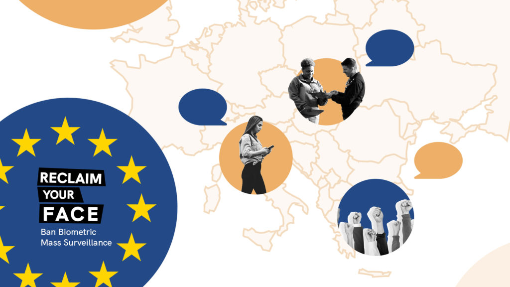
Riprenditi la faccia, siamo già in più di 10.000!
Ritornando a quanto detto inizialmente, sappiamo ad esempio che in attesa della parola d’ordine impartita (Hey Google, Alexa) i sistemi di riconoscimento vocale sono in perenne funzionamento e monitorano le nostre azioni: Amazon ha dichiarato come Echo sia in ascolto costante ma non registri ciò che avviene prima che l’utente effettivamente pronunci la parola magica. Tuttavia è ancora possibile che accidentalmente alcune parole siano confuse e possano portare al “risveglio” del software e dunque alla registrazione di conversazioni private che tutti vorremmo rimangano tali. A nessuno piacerebbe infatti essere ascoltato da una persona estranea in casa nostra, e ci sono anche prove a sostegno dell’ipotesi che ad esempio Alexa non cancelli effettivamente le conversazioni registrate anche se l’utente ne richiede la cancellazione.
Alcuni studi stanno testando la possibilità di riconoscere determinati rumori negli spazi pubblici, soprattutto nell’ottica di potenziare la sorveglianza nelle smart city e nelle cosiddette safe city—di fatto affermando già all’inizio gli scopi di questa tecnologia. Da considerare è infatti la possibilità che questo tipo di tecnologia, utilizzata ad esempio per intercettare il posto in cui è stato esploso un colpo di arma da fuoco, possa essere combinata insieme ad altre, non ultimo il riconoscimento facciale. Pensare di trovarci di fronte ad un sistema che potrebbe monitorare la nostra presenza quando ci muoviamo in città rischia di ricreare gli stessi pericoli di cui già abbiamo parlato proprio nel caso del riconoscimento dei volti: essere pedinati costantemente perché un orecchio elettronico è in grado di riconoscere la nostra voce.
Inoltre, sempre più rilevante è anche la questione delle emozioni. Una delle capacità più importanti dell’uomo è quella di riconoscere ed interpretare gli aspetti emotivi legati alle conversazioni e ai contenuti che ci scambiamo. In questi ultimi anni numerosi sono gli studi che cercano di sondare la possibilità di creare dispositivi che siano in grado di riconoscere, in tempo reale ed efficientemente, le emozioni dell’utente che interagisce con essi (un telefono, un computer ma anche un’automobile).
2020-11-26 · News, Press · https://www.hermescenter.org/pedinati-in-citta-reclaim-your-face/
Pedinati in città
La videosorveglianza sta invadendo le nostre città da anni: quasi ogni angolo del nostro spazio urbano è monitorato costantemente dall’occhio elettronico di quelle che oramai sono diventati degli addobbi architettonici a cui non fare più attenzione.
Ma se fino ad ora le riprese delle videocamere di sorveglianza dovevano essere analizzate manualmente alla ricerca di persone sospette o per ricostruire degli eventi particolari a posteriori, con l’introduzione di sistemi di riconoscimento facciale e di analisi avanzata dei flussi video siamo di fronte alla possibilità di essere pedinati ogni istante della nostra giornata.
Il caso di Mosca: se vuoi ricostruire la vita di una donna bastano 200 euro
A Mosca sono già in funzione videocamere con il riconoscimento facciale che ricoprono tutta la città, eppure l’associazione per i diritti digitali Roskomsvoboda non si aspettava di trovare un modo illegale per accedere al sistema e testare le sue capacità.
È bastato semplicemente rispondere ad un avviso su un canale Telegram dove si pubblicizzava l’accesso alle informazioni del sistema di riconoscimento facciale cittadino pagando 16,000 rubli—poco meno di 200€. L’unica altra azione richiesta: inviare una foto della persona da monitorare. Dopo due giorni Anna Kuznetsova, la persona che si è offerta di rispondere all’annuncio, ha ricevuto un messaggio con una lista di tutti gli indirizzi che aveva visitato nel mese precedente, incluse 79 foto che confermano senza dubbio la sua identità—complete di indirizzo, data e ora del momento immortalato.
Non è chiaro se si tratti di una persona esterna che ha accesso al sistema di videosorveglianza oppure un abuso del sistema da parte delle forze dell’ordine, quel che è certo è che da quelle immagini era possibile ricostruire un quadro dettagliato della vita della donna: dove abita, il luogo di lavoro, e altre abitudini di spostamento giornaliere.
Uno strumento del genere rischia di diventare un incubo se usato da stalker, fidanzati violenti o qualunque altro malintenzionato. Per non parlare dei rischi legati alla partecipazione a manifestazioni di piazza o proteste: sarebbe possibile seguire i partecipanti e mettere in pratica ritorsioni e minacce sapendo sempre dove e quando colpire la vittima.
Non serve nemmeno che sia riconoscimento facciale
Alla luce delle proteste per l’impiego del riconoscimento facciale e dei ban che sono stati introdotti in diverse città statunitensi—e discussi in alcuni stati—, sempre più aziende stanno cercando di creare un’altra fascia di sorveglianza biometrica, cercando di smussare gli angoli e nascondendo sotto al tappeto le parti più controverse. Come sottolinea un recente articolo dell’Electronic Frontier Foundation (EFF), le forze dell’ordine stanno andando pazze per il termine “video analytics”, ovvero l’uso di machine learning, intelligenza artificiale, e algoritmi di computer vision per estrarre informazioni dai video: il genere della persona, la presenza di oggetti particolari, e riconoscere indumenti specifici. I manuali dei venditori di queste tecnologie, analizzati da EFF, sono la guida perfetta a un mondo distopico.
Attraverso tale sistema si può individuare lo spostamento di una persona impostando semplicemente il colore dei capelli, il genere, e qualche indumento distintivo. Non si tratta di riconoscimento facciale ma il risultato sarebbe lo stesso.
Inoltre, sottolinea EFF, usare gli algoritmi per categorizzare i corpi sulla base del genere rischia di introdurre ulteriori discriminazioni. Studi scientifici dimostrano che questi algoritmi hanno impatti negativi su tutte quelle persone che sono gender nonconforming, nonbinary, trans, e che hanno un corpo con disabilità che le fa scostare dal criterio pericoloso di “corpo normale.”
“Tali errori di identificazione possono creare danni concreti nel mondo reale, come far partire indagini sbagliate,” spiegano da EFF.
Simile è la situazione anche in Italia: nella città di Torino il progetto di videosorveglianza ARGO, che ufficialmente avrà inizio nel gennaio 2021, prevede il riconoscimento di persone di sesso femminile o maschile e degli indumenti che indossa. Proprio per questo motivo, tra i punti della campagna Reclaim Your Face chiediamo anche che il Garante Privacy monitori le evoluzioni dei progetti di videosorveglianza nelle municipalità italiane e che, soprattutto, obblighi le città di Torino e Udine alla pubblicazione tempestiva delle valutazioni di impatto sulla privacy dei cittadini.
Il riconoscimento facciale e la sorveglianza biometrica sono degli strumenti di oppressione dei nostri diritti. Queste tecnologie mettono in piedi la possibilità di pedinare chiunque in ogni momento della giornata. Come ricorda il Garante privacy olandese, intervenuto in una trasmissione radiofonica, con queste tecnologie “è come se qualcuno ti seguisse con una telecamera e un blocco per gli appunti, è una società di sorveglianza che non vogliamo.”
Firma anche tu la petizione della campagna Reclaim Your Face: siamo già a più di 10.000 firme!
Se vuoi aiutare le attività del Centro Hermes e di questa campagna, sostienici con una donazione.
Grazie!
2020-11-18 · News, Press · https://www.hermescenter.org/cose-il-riconoscimento-facciale-e-perche-ci-interessa/
Cos’è il riconoscimento facciale e perché ci interessa
Cos’è
Il riconoscimento facciale è un tipo di applicazione biometrica che utilizza l’analisi statistica e le previsioni algoritmiche per misurare e identificare automaticamente i volti delle persone. Lo scopo, oltre ad attribuire quindi un nome e un cognome al volto analizzato, è anche quello di fornire una valutazione o prendere una decisione: l’algoritmo trova una somiglianza tra il volto ripreso e quello di un sospetto? Allora la polizia interverrà per interrogare quella persona.
Il riconoscimento facciale può compiere diverse tipologie di analisi: dalla verifica di un volto (questa persona corrisponde alla foto del passaporto), all’identificazione di un volto (questa persona corrisponde a qualcuno nel nostro database), alla classificazione di un volto (questa persona è giovane). Altre distinzioni poi riguardano il quando viene utilizzato il riconoscimento facciale: dal vivo (ad esempio, analizzando in tempo reale le riprese delle telecamere a circuito chiuso per vedere se qualcuno per strada corrisponde a un criminale in un database della polizia) o non dal vivo (ad esempio, la corrispondenza di due foto fatta a posteriori).
Come funziona
Il riconoscimento facciale è una tecnologia biometrica, misura e trasforma il nostro volto in una serie di bit artificiali. Il nostro volto diventa una sequenza incomprensibile ai nostri occhi ma che per i computer è l’equivalente del nostro calco facciale: la posizione degli occhi, la forma del naso, i tratti salienti, vengono tutti fusi insieme.
Gli algoritmi di riconoscimento facciale hanno bisogno di due ingredienti: un database di volti su cui essere addestrati, e un algoritmo che calcola la probabilità che due immagini siano legate alla stessa persona. Diversi algoritmi possono portare a risultati diversi sia in base a come sono stati sviluppati sia su quali immagini sono stati addestrati.
Se un algoritmo vede solo immagini di maschi bianchi sarà bravissimo a riconoscere immagini simili ma sarà completamente incapace di riconoscere volti di donne nere o persone di colore. Ma attenzione: pur non riuscendo a riconoscerle non vuol dire che non produrrà dei risultati. L’algoritmo rischierà di effettuare uno scambio di persona come già avvenuto a Detroit.
Dobbiamo ricordare che il riconoscimento facciale non è mai oggettivo, e pensare che la tecnologia sia neutra è un grave errore. Secondo l’Agenzia dell’Unione Europea per i Diritti Fondamentali (FRA), “un algoritmo non restituisce mai un risultato definitivo, ma solo delle probabilità.” Quando queste probabilità statistiche vengono interpretate come se fossero una certezza neutrale, possono esserci conseguenze negative per i nostri diritti umani e digitali.
Vuoi sostenere la campagna Reclaim Your Face del Centro Hermes? Puoi farlo qui
Grazie! :)
2020-11-12 · News, Press · https://www.hermescenter.org/lancio-campagna-reclaimyourface/
Siamo qui per riprenderci la faccia (e i nostri diritti!)
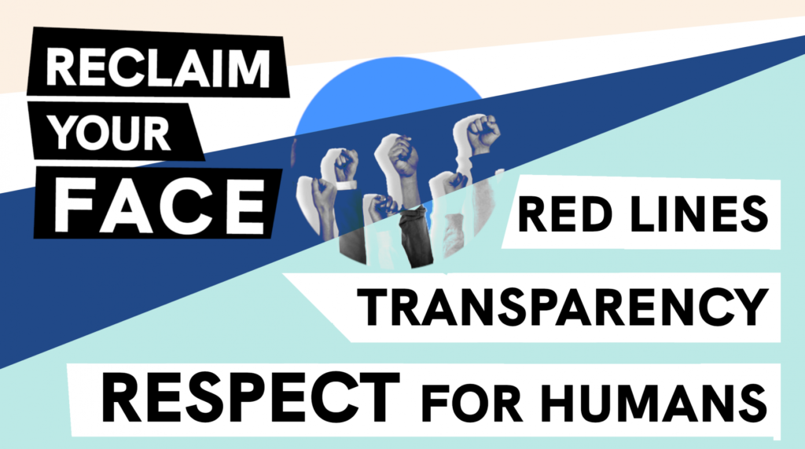
Oggi il Centro Hermes lancia insieme alla società civile in tutta Europa la campagna Reclaim your Face per vietare la sorveglianza di massa biometrica. Questa alleanza chiede un dibattito pubblico trasparente sui rischi individuali e collettivi, per la nostra dignità e per la società, che siamo costretti ad affrontare visti gli attuali impieghi del riconoscimento facciale negli spazi pubblici europei.
Almeno 15 paesi europei hanno sperimentato tecnologie di sorveglianza biometrica come il riconoscimento facciale negli spazi pubblici. Negli Stati Uniti, al momento 5 grandi città hanno vietato l’uso del riconoscimento facciale.
La campagna
La campagna Reclaim Your Face è spinta dal desiderio di un futuro digitalizzato, democratico e incentrato sulle persone, in cui tutti possano vivere con dignità e rispetto dei nostri diritti umani.
Il Centro Hermes si unisce a Bits of Freedom (Paesi Bassi), Iuridicum Remedium (Repubblica Ceca), SHARE Foundation (Serbia), Chaos Computer Club (Germania), Homo Digitalis (Grecia), Access Now, ARTICLE 19, EDRi e Privacy International nel chiedere trasparenza alle autorità locali, comunali e nazionali in tutta Europa sullo sviluppo, la diffusione, l’uso o i piani per l’impiego di tecnologie biometriche dannose, strumenti usati nelle nostre strade e nei nostri quartieri.
Dal momento che già alcune forze di polizia e autorità locali in diversi paesi europei stanno introducendo rapidamente e in gran segreto queste tecnologie invasive, dobbiamo assolutamente difendere uno spazio pubblico in cui i nostri diritti, le nostre libertà e le nostre comunità siano protette.
Crediamo che la conversazione debba iniziare ora, prima che sia troppo tardi. Firma la petizione e mettiti in contatto se vuoi essere coinvolto.
Contesto nazionale italiano
In Italia l’impiego di tecnologie di riconoscimento biometrico e facciale è già ampiamente diffuso su due diversi livelli: uno nazionale e uno locale. Il sistema SARI gestito dalla polizia scientifica si è dimostrato da subito controverso e coperto da un velo di segretezza estrema: interrogazioni parlamentari sull’accuratezza del sistema mai risposte e la mancanza di informazioni sui 9 milioni di volti delle persone incluse nel database hanno trasformato il sistema SARI in un buco nero. A livello locale, invece, l’esperimento distopico della città di Como è stato subito stroncato da un provvedimento del Garante privacy grazie anche ad una tempestiva inchiesta giornalistica che ha sottolineato l’importanza di maggiore trasparenza sui processi decisionali che si trovano dietro all’installazione di tecnologie di riconoscimento biometrico. Eppure altre città hanno già annunciato l’installazione di tecnologie simili, come Torino e Udine, ma del tema si discute anche all’interno degli stadi di calcio. Inoltre, il Ministero dell’Interno ha già acquistato anche un sistema di riconoscimento vocale da utilizzare sui video raccolti online.
Perché è importante
La tipologia più nota di tecnologia biometrica è il riconoscimento facciale, ma l’acquisizione biometrica può essere effettuata con molti altri tipi di dati derivati ad esempio dagli occhi (iride), dal modo di camminare (andatura), dalle orecchie, dal canale uditivo, dal DNA, dalla voce, dalle impronte digitali e da altre caratteristiche, ad esempio l’abbigliamento religioso.
Gli spazi pubblici sono il luogo in cui condividiamo le esperienze e ci riuniamo. Dove stiamo insieme alle nostre persone care. Fare una passeggiata nel parco. Organizzare una festa con la nostra comunità. Tenere discussioni politiche. Protestare contro le ingiustizie. Tutte queste attività sono minacciate dal fatto che le autorità locali europee, le forze di polizia e le aziende private diffondono tecnologie di riconoscimento facciale che tracciano e prendono di mira la gente comune negli spazi pubblici.
Non accetteremmo mai che una persona ci segua costantemente, monitorando e valutando chi siamo, cosa facciamo, quando e dove ci muoviamo.
Non solo il nostro comportamento cambierà automaticamente perché sappiamo di essere osservati, ma rischiamo anche di essere considerati una minaccia perché l’algoritmo giudica male un gesto o un’espressione facciale. Alcuni di noi potrebbero addirittura essere considerati sospettati di un crimine per il modo in cui sono vestiti, per il colore della pelle o semplicemente per aver partecipato a una protesta. Quel che è peggio, non ci accorgiamo nemmeno di essere osservati, non sappiamo chi è che ci guarda, per quale motivo e per quanto tempo.
Il riconoscimento facciale e le altre tecnologie biometriche utilizzate negli spazi pubblici fanno di ognuno di noi un potenziale sospetto. Studi dimostrano che queste tecnologie amplificano la discriminazione e vengono utilizzate per perseguitare le persone che stanno semplicemente esercitando i propri diritti.
L’uso della tecnologia biometrica per la sorveglianza di ogni persona che abita e vive lo spazio pubblico danneggia i nostri diritti e le nostre libertà, la nostra capacità di esprimerci pienamente, di organizzarci, di discutere, di festeggiare e di protestare.
Firma la petizione e mettiti in contatto se vuoi essere coinvolto.
2020-11-11 · News, Press · https://www.hermescenter.org/programmi-aiuto-eu-esportano-sorveglianza-privacy-international/
I programmi di aiuto dell’UE esportano la sorveglianza
Oggi insieme a Privacy International (PI) e ad altre 13 organizzazioni della società civile europee e africane abbiamo chiesto urgenti riforme dei programmi di aiuto e cooperazione dell’UE per garantire che questi promuovano la tutela della privacy nei Paesi terzi e non facilitino l’uso della sorveglianza che viola i diritti fondamentali.
Privacy International ha pubblicato centinaia di documenti ottenuti dopo un anno di negoziati con gli organismi dell’Unione europea in base alle leggi previste sull’accesso ai documenti FOIA. I report e i documenti ottenuti mostrano che:
- le forze di polizia e le agenzie di sicurezza in Africa e nei Balcani sono addestrate, con il supporto dell’UE, a spiare gli utenti di Internet e dei social media e a utilizzare tecniche e strumenti di sorveglianza controversi; Leggi il rapporto di PI qui.
- gli organismi dell’UE stanno formando e dotando le autorità di frontiera e chi si occupa di migrazione nei paesi terzi di strumenti di sorveglianza, compresi i sistemi di intercettazione e altri strumenti di sorveglianza telefonica, nel tentativo di “esternalizzare” i controlli alle frontiere dell’UE; Leggi il rapporto di PI qui.
- Civipol, una società di sicurezza francese con ottimi collegamenti nel settore, sta sviluppando sistemi biometrici di massa con fondi di aiuto dell’UE in Africa occidentale per fermare la migrazione e facilitare le deportazioni, tutto questo senza adeguate valutazioni del rischio. Leggi il rapporto di PI qui.
Per questi motivi, chiediamo alla Commissione Europea di fermare la questa deviazione dei fondi per gli aiuti, di mettere in atto rigorose procedure di due diligence e di valutazione del rischio, e di accettare misure sulla trasparenza, il controllo parlamentare e controllo pubblico volte a proteggere i diritti umani nei paesi terzi.
Qui è possibile consultare la lettera inviata: versione in inglese.
Per maggiori informazioni, consultare il sito di Privacy International.
2020-10-09 · News, Press · https://www.hermescenter.org/anac-e-hermes-center-risolvono-una-controversia-sullapplicazione-della-licenza-agpl-al-software-openwhistleblowing/
ANAC e Hermes Center risolvono una controversia sull’applicazione della licenza AGPL al software OpenWhistleblowing
Le parti hanno concordato alcune modifiche al codice e alla licenza d’uso adottata da ANAC, che hanno consentito il ripristino dell’aderenza alla licenza AGPLv3 e il rispetto delle condizioni apposte da Hermes al proprio codice per concederne la licenza d’uso pubblica e gratuita.
Hermes, titolare dei diritti economici sul codice di GlobaLeaks, da cui OpenWhistleblowing è derivato, dichiara dunque pubblicamente che la licenza GNU AGPLv3 viene contestualmente ripristinata appieno e che ANAC è licenziataria di pieni diritti secondo la medesima licenza pubblica.
Coloro che avessero scaricato, utilizzato e modificato OpenWhistleblowing a partire dalla versione originariamente pubblicata da ANAC sono invitati ad adeguare in tempi ragionevoli la propria versione alle modifiche effettuate da ANAC contestualmente alla pubblicazione del presente Comunicato, dal momento che il permesso degli autori del software è condizionato al rispetto della licenza AGPLv3 negli esatti termini pubblicati da Hermes e ANAC, e dunque non è possibile avvalersi della licenza EUPL, né della licenza AGPL v.3 senza le ulteriori integrazioni previste.
ANAC e Hermes Center si dichiarano liete dello spirito di collaborazione con cui si è pervenuti alla composizione delle differenti posizioni nell’interesse della collettività e della protezione di coloro che segnalano irregolarità nel settore pubblico, ringraziando l’opera dell’Avvocatura dello Stato e dei difensori che hanno prestato la loro assistenza con competenza e dedizione e hanno collaborato ad appianare le divergenze.
2020-06-22 · News · https://www.hermescenter.org/digital-whistleblowing-fund-call-for-applications-round-3/
Digital Whistleblowing Fund: Call for applications (Round 3)
The Hermes Center for Transparency and Digital Human Rights and Renewable Freedom Foundation announce that the third round of The Digital Whistleblowing Fund is open for new applications from European anti-corruption projects working on environmental and public health issues.
The Digital Whistleblowing Fund is a micro-grant program that aims to enable investigative journalism groups and human rights grassroots organizations to receive financial, operational and strategic support in starting a secure digital whistleblowing initiative, as part of their social mission. Grants awarded to successful organizations are divided into micro grants up to €3.000 in financial support and tech and consultancy services to support the startup of their digital whistleblowing initiative.
The tech solution is based on GlobaLeaks, an open-source, free software developed by the Hermes Center to enable the easy creation of secure and anonymous whistleblowing platforms.
For this round, a specific jury composed of key individuals/organizations from the whistleblowing, environmental rights, public health, journalism, human rights activism and anti-corruption ecosystems will evaluate the received applications. This round of the Digital Whistleblowing Fund is supported by OSIFE.
Applications are open from June 22 to July 20.
2020-06-18 · News · https://www.hermescenter.org/supporting-diverse-initiatives-in-europe-through-the-use-of-secure-whistleblowing-platforms/
Supporting diverse initiatives in Europe through the use of secure whistleblowing platforms
Whistleblowing is considered among the most effective and powerful means to expose and combat crime, corruption, and public health threats. In particular, digital whistleblowing is being more and more used to fight corruption, defend human rights and the environment, for civil rights activism and electoral integrity monitoring, as well as for permanent watchdog initiatives such as investigative journalism groups and independent media. Because digital whistleblowing is an enormously effective and adaptable tool for all of these initiatives, we seek to support and strengthen it in a coordinated, sustainable, and impactful effort.
The Hermes Center for Transparency and Digital Human Rights (Hermes Center) has been developing GlobaLeaks open source whistleblowing project since 2012, at the time, defined as “the napster of whistleblowing”, with the goal to see support local media, anti-corruption and human rights initiatives to create secure and anonymous bi-directional communication channels with their sources.
The Digital Whistleblowing Fund is an experimental small-grant program by the Hermes Center and Renewable Freedom Foundation (RFF) that enables investigative journalism groups and human rights grassroots organizations to apply to receive financial, operational and strategic support in starting a secure digital whistleblowing initiative, as part of their social mission. Digital Whistleblowing Fund has been supported by the Open Society Initiative for Europe (OSIFE) in its first call for applications meant for projects operating within Europe.
Grassroots organizations that set up digital whistleblowing projects include investigative journalists and groups, human rights and environmental activists, anti-corruption groups, media and free speech activists, and many more. However, they are often underfunded and lack the specific and mixed set of skills in essential areas to successfully run a whistleblowing initiative: strategic, organizational, legal, IT, and security.
The Digital Whistleblowing Fund has been running following thematic rounds including anti-corruption, gender-based violence, the rights of minorities, migrants, and refugees. For each round, the selected Jury members are experts stakeholders in the fields we are addressing.
Today we would like to highlight five among the winning projects that are now up and running. They are diverse initiatives from different grassroots organizations in Europe dedicated to countering corruption and fighting against human rights violations through investigation, legal action, practical support and research.
1 - IrpiLeaks
Site: http://ufwb2nvrbad2tx5j.onion (accessible via Tor Browser)
IrpiLeaks is the whistleblowing platform of the Investigative Reporting Project Italy (IRPI), the first transnational center of investigative journalism in Italy, which has decided to launch an investigative journalism endeavor for their online magazine IrpiMedia aimed at collecting anonymous leaks from whistleblowers. IrpiMedia team investigates wrongdoings in the sector of public administration, rigged procurements, scams, frauds, corruption, environmental crimes, and organized crime networks and related activities?
“The fund allowed IrpiMedia - an online magazine focused on organized crime and corruption related issues - to both implement a modern and up-to-date whistleblowing platform and to have the needed human resources to manage it. We believe both conditions - that were met also thanks to the funding - are an essential part of a modern newspaper. Since the funding, IrpiLeaks has received more than 20 submissions, 3 of them resulted in a publication on IrpiMedia.”
Lorenzo Bodrero, Co-founder of IRPI
2 - Lost in Europe
Site: https://tip.lostineurope.org
Lost in Europe in a cross-border investigative reporting project focused on the issue of unaccompanied child migrants, one of the most pressing issues in the migrant crisis. The goal of Lost in Europe is to recover the stories of these missing children. It comprises a team of investigative journalists from the Netherlands, Belgium, Italy and the UK, who are collaborating to find out what has happened to the disappeared children in Europe.
3 - Tracking Exposed
Site: http://cx4al2hxqtf4swuv4kewdeqgixwsmfmzkel5otw5ef33xkdkxh3cs7id.onion
(accessible via Tor Browser)
Tracking Exposed is a tech and human rights initiative that aims to expose how tracking and profiling from user data has a negative impact on society so that proper political and civil actions can be taken. With the support of the Digital Whistleblowing Fund, they launched “Surveillance Capitalism Tracking Exposed”, a secure whistleblowing platform to receive reports on wrongdoings regarding data uses and breaches in connection with bias and discrimination, influencing elections, workplace whistleblower retaliation and any cases where data is released, stolen, breached, used in unfair competition, and bought and sold on markets, all with adverse effects on individuals and society.
4 - Transparency International France
Site: https://signalement-corruption.transparency-france.org
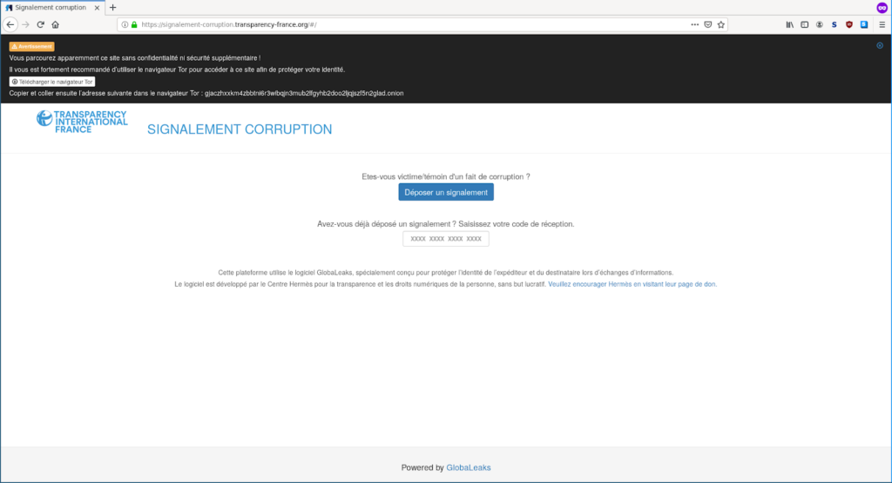
Transparency International France is the French branch of Transparency International, an NGO operating in over 120 countries and the leading civil society organization in the fight against corruption. They created the first hotline dedicated to victims and witnesses of corruption in 2014 and co-founded along with 16 other organizations, La Maison des Lanceurs d’Alertes (House of Whistleblowers). More than 1000 citizens have contacted their Advocacy & Legal Advice Centre (ALAC) since its creation, and 768 reported cases, some of which led to legal action. Thanks to the Digital Whistleblowing Fund, TI-France in collaboration with Nothing2Hide launched its secure GlobaLeaks-based whistleblowing platform in order to receive highly sensitive documents from victims and witnesses.

5 - Transparency International Ireland
Site: https://helpline.speakup.ie
Transparency International Ireland is the Irish chapter of the worldwide movement against corruption. It was founded in 2004 and is part of the only global organization dedicated to stopping corruption worldwide. TI Ireland has operated the Speak Up Helpline since 2011 and supported over 1,000 people since then. The helpline offers free advice to people on how to report wrongdoing and also channels whistleblowers to the Transparency Legal Advice Centre (TLAC) for legal advice on whistleblowing. Ti-Ireland applied for the Digital Whistleblowing Fund to seek support in implementing a secure bi-directional platform without having to become proficient in the use of encryption.
“We were very fortunate to succeed in a small grant application with the Digital Whistleblowers Fund. The support provided by the Hermes Centre in setting up our Globaleaks whistleblowing platform was instrumental. They are patient and understanding, and are happy to help out and explain things where you might not have the technical expertise to understand the finer details. Their help and support throughout this project means that all whistleblowers can easily contact our organisation securely, even where they don’t have the technical know-how to use PGP-encryption themselves.”
Donncha Ó Giobúin, Speak Up Helpline Coordinator
2020-04-02 · News, Press · https://www.hermescenter.org/dichiarazione-societa-civile-sorveglianza-digitale-pandemia-diritti-umani/
Dichiarazione congiunta della società civile: Gli Stati che utilizzano le tecnologie di sorveglianza digitale per combattere la pandemia devono rispettare i diritti umani
La pandemia COVID-19 è un’emergenza sanitaria pubblica globale che richiede una risposta coordinata e su larga scala da parte dei governi di tutto il mondo. Tuttavia, gli sforzi degli Stati per contenere il virus non devono essere usati come copertura per inaugurare una nuova era di diffusi sistemi di sorveglianza digitale invasiva.
Noi, le organizzazioni firmatarie, esortiamo i governi a dare prova di leadership nell’affrontare la pandemia in modo da garantire che l’uso delle tecnologie digitali per tracciare e monitorare gli individui e le popolazioni sia effettuato nel rigoroso rispetto dei diritti umani.
La tecnologia può e deve svolgere un ruolo importante in questo sforzo per salvare vite umane, ad esempio per diffondere messaggi di salute pubblica e aumentare l’accesso all’assistenza sanitaria. Tuttavia, un aumento dei poteri di sorveglianza digitale dello Stato, come l’accesso ai dati di localizzazione dei telefoni cellulari, minaccia la privacy, la libertà di espressione e la libertà di associazione, in modi che potrebbero violare i diritti e degradare la fiducia nelle autorità pubbliche - minando l’efficacia di qualsiasi risposta di salute pubblica. Tali misure comportano anche un rischio di discriminazione e possono danneggiare in modo sproporzionato le comunità già emarginate.
Sono tempi fuori dall’ordinario, ma le leggi sui diritti umani sono ancora in vigore. Infatti, il quadro dei diritti umani è stato progettato per garantire che i diversi diritti possano essere attentamente bilanciati per proteggere gli individui e le società in generale. Gli Stati non possono semplicemente ignorare diritti come la privacy e la libertà di espressione in nome di una crisi sanitaria pubblica. Al contrario, la protezione dei diritti umani promuove anche la salute pubblica. Ora più che mai, i governi devono garantire rigorosamente che qualsiasi restrizione a questi diritti sia in linea con le salvaguardie dei diritti umani stabilite da tempo.
Questa crisi offre l’opportunità di dimostrare la nostra umanità condivisa. Possiamo compiere sforzi straordinari per combattere questa pandemia che siano coerenti con gli standard dei diritti umani e con lo stato di diritto. Le decisioni che i governi prendono ora per affrontare la pandemia daranno forma al mondo del futuro.
Qui potete leggere le misure che, insieme ad oltre 100 organizzazioni della società civile, chiediamo siano rispettate dagli Stati quando valutano soluzioni di sorveglianza digitale per contrastare il COVID-19.
Il testo della dichiarazione è disponibile anche in inglese, francese, e spagnolo.
2020-03-27 · News, Press · https://www.hermescenter.org/lettera-aperta-la-societa-civile-esorta-gli-stati-membri-a-rispettare-i-principi-di-legge-nel-regolamento-online-sui-contenuti-terroristici/
Lettera aperta: la società civile esorta gli Stati membri a rispettare i principi di legge nel regolamento online sui contenuti terroristici
Il 27 marzo 2020, il Centro Hermes ha firmato insieme ad altre 16 organizzazioni e ad EDRi una lettera aperta inviata ai rappresentanti degli Stati membri in seno al Consiglio dell’Unione Europea. Nella lettera, esprimiamo la nostra profonda preoccupazione per la proposta di legge sulla regolamentazione dei contenuti terroristici online e di quelle che consideriamo potenziali minacce ai diritti fondamentali della privacy, della libertà di espressione, e chiedere di astenersi dall’adottare filtri di upload obbligatori e garantire che le eccezioni per determinate forme di espressione protette, come materiale didattico, giornalistico e di ricerca, siano mantenute nella proposta.
Qui è disponibile la lettera in in lingua inglese.
2020-03-25 · News, Press · https://www.hermescenter.org/hermes-governo-emergenza-covid19-rispetto-privacy-diritti-umani/
Il Centro Hermes chiede al governo una risposta all’emergenza COVID-19 nel pieno rispetto dei diritti umani
La diffusione del nuovo coronavirus e della malattia COVID-19 rappresentano una sfida globale per la salute pubblica. Per affrontarla, i Paesi di tutto il mondo devono impegnarsi in risposte coordinate e basate su evidenze scientifiche. Le nostre risposte dovrebbero essere fondate sulla solidarietà, sul sostegno e sul rispetto dei diritti umani, come ha sottolineato il Commissario per i diritti umani del Consiglio Europeo.
Se da un lato la risposta all’emergenza richiede azioni rapide, queste non devono essere necessariamente affrettate poiché possono avere ripercussioni significative sulla libertà di espressione, sulla privacy e su altri diritti umani—sia in questo momento che nel futuro.
A meno che non siamo in grado di definire chiaramente quali siano i benefici di queste azioni sulla base di prove scientificamente valide, non potremo capire se il danno che stiamo per arrecare alla società con una sorveglianza invasiva sia giustificato.
Dobbiamo evitare l’approccio del “raccolgo tutti i dati ora e penso dopo alle conseguenze” e dobbiamo tenere al centro i principi della minimizzazione dei dati, del consenso informato per i cittadini, dell’importanza di dati scientifici validi, e una valutazione puntuale dell’effettiva necessità di adottare soluzioni invasive per la privacy.
Come sottolinea lo European Data Protection Board nel suo Statement on the processing of personal data in the context of the COVID-19 outbreak, le autorità pubbliche dovrebbero prima cercare di elaborare i dati di localizzazione in modo anonimo e, solo quando ciò non sia possibile, valutare misure diverse.
Per questo motivo oggi il centro Hermes ha inviato alla Presidenza del Consiglio, al Ministro per l’innovazione tecnologica e la digitalizzazione, al Ministro dello Sviluppo Economico e al Ministro dell’Università e Ricerca, la richiesta di garantire che tutte le misure di sanità pubblica adottate per contrastare il coronavirus rispettino rigorosamente i diritti fondamentali.
Il centro Hermes invita i Ministri a tenere in considerazioni alcuni principi essenziali per garantire il giusto bilanciamento tra privacy dei cittadini e la loro salute, come ad esempio ridurre al minimo la quantità di dati raccolti, garantire forme robuste di anti-deanonimizzazione dei dati, adottare la massima trasparenza per ogni processo decisionale, stabilire in anticipo tempi certi per le scadenze della raccolta e del trattamento dei dati, e garantire la supervisione da parte della società civile.
Qui è disponibile una copia della lettera inviata.
Maggiori informazioni:
- EDRi: EDRi calls for fundamental rights-based responses to CODIV-19 (20.03.2020)
https://edri.org/covid19-edri-coronavirus-fundamentalrights/ - Coronavirus: New ARTICLE 19 briefing on tackling misinformation (16.03.2020)
https://www.article19.org/resources/coronavirus-new-article-19-briefing-on-tackling-misinformation/ - EFF: Protecting Civil Liberties During a Public Health Crisis (10.03.2020)
https://www.eff.org/deeplinks/2020/03/protecting-civil-liberties-during-public-health-crisis - People First: Wikimedia’s Response to COVID-19 (15.03.2020)
https://medium.com/freely-sharing-the-sum-of-all-knowledge/wikimedia-coronavirus-response-people-first-8bd99ea6214b - Access Now: Protect digital rights, promote public health: toward a better coronavirus response (05.03.2020)
https://www.accessnow.org/protect-digital-rights-promote-public-health-towards-a-better-coronavirus-response/ - Privacy International – Tracking the Global Response to COVID-19 (19.03.2020)
https://privacyinternational.org/examples/tracking-global-response-covid-19 - noyb: Data Protection under COVID-19
https://gdprhub.eu/index.php?title=Data_Protection_under_COVID-19 - Statement of the EDPB Chair on the processing of personal data in the context of the COVID-19 outbreak (16.03.2020)
https://edpb.europa.eu/news/news/2020/statement-edpb-chair-processing-personal-data-context-covid-19-outbreak_en
2020-02-13 · News, Press · https://www.hermescenter.org/whistleblowing-un-impegno-comune-per-recepire-e-applicare-la-direttiva-europea-importante-tutelare-anche-chi-sta-attorno-ai-segnalanti-e-cioe-i-media-e-la-societa-civile/
Whistleblowing: un impegno comune per recepire e applicare la Direttiva europea. Importante tutelare anche chi sta attorno ai segnalanti, e cioè i media e la società civile
Al via la prima tavola di confronto multistakeholder organizzata da The Good Lobby sul recepimento della direttiva per proteggere chi segnala illeciti sul lavoro
Roma, 12 febbraio 2020 - Si è tenuta ieri la prima tavola di confronto dedicata al recepimento della direttiva sulla protezione delle persone che segnalano violazioni di leggi dell’Unione (2019/1937/UE) organizzata da The Good Lobby - associazione impegnata a rendere più equa, inclusiva e democratica la nostra società in Italia e in Europa attraverso la promozione della partecipazione civica ai processi decisionali.
Erano presenti all’incontro i principali stakeholder nazionali attivi sul tema del whistleblowing, con l’obiettivo di condividere con Governo e Parlamento le loro posizioni sugli elementi di novità e le priorità che la nuova legge di recepimento dovrà contenere, anticipando così le prossime audizioni parlamentari in materia.
La direttiva, che supera in molte previsioni la legislazione italiana corrente (l. 179/2017), è stata approvata dal Parlamento e dal Consiglio dell’Unione Europea il 23 ottobre 2019 e dovrà essere recepita dagli Stati membri, Italia compresa, entro dicembre 2021.
The Good Lobby ha organizzato questo momento di confronto perché ritiene fondamentale avviare da subito un dialogo aperto sul tema, attraverso una discussione trasparente e partecipata in grado di coinvolgere più voci, fra cui quelle della società civile. Il recepimento è infatti un’occasione unica per migliorare la legge italiana in molti punti essenziali.
I rappresentanti istituzionali presenti sono stati: Francesca Businarolo (Presidente Commissione Giustizia della Camera), Franco Mirabelli (membro Commissione Giustizia del Senato) e Maria Casola (Capo del Dipartimento per gli affari di giustizia del Ministero della Giustizia). Ha partecipato ai lavori Nicoletta Parisi consigliera di Anac.
I presenti, oltre a Priscilla Robledo e Federico Anghelé di The Good Lobby, sono stati: Alessia Bausano (Confindustria), Giorgio Fraschini (Transparency International Italia), Yvette Agostini (Hermes center for digital human rights), prof Gustavo Piga (Università di Roma Tor Vergata), l’avv. Alberto Maggi, esperto di problematiche lavoristiche e sindacali, managing partner dello studio Legance Avvocati Associati, il giornalista statunitense Tom Mueller (autore del libro Crisis of conscience uscito a ottobre 2019, ancora inedito in Italia) e l’avv. Giovanni Carotenuto, presidente dell’Associazione Pro Bono Italia.
All’incontro sono state anche invitate le rappresentanze sindacali di CGIL, CISL, UIL e FABI, nonché il Ministero del lavoro che hanno però declinato l’invito. L’incontro è stato ospitato presso lo studio Legance - Avvocati Associati in quanto membro dell’associazione Pro Bono Italia. All’incontro ha partecipato anche il presidente di Pro Bono Italia, avv. Giovanni Carotenuto.
Secondo Priscilla Robledo di The Good Lobby, “la direttiva offre degli standard minimi di protezione comuni a tutta l’Unione; per alcuni stati si tratterà di introdurre ex novo una legge, ma per l’Italia è un’occasione d’oro per migliorare l’attuale legislazione sul whistleblowing. E’ per questo motivo che abbiamo voluto iniziare fin da subito a lavorare sul testo.” The Good Lobby ha concentrato i suoi interventi sull’estensione delle tutele della direttiva alla legge nazionale, e più in generale a segnalazioni che minacciano qualsiasi interesse pubblico, con l’inclusione del settore della difesa nazionale e delle informazioni classificate; sull’introduzione di obblighi di fornire canali di segnalazione anche ad enti locali con meno di 50 dipendenti o comuni con meno di 10mila abitanti; sulla necessità di prendere in carico segnalazioni anonime, e di prevedere espressamente la tutela della protezione del whistleblower come prevalente su quella del segreto industriale. “Noi riteniamo il whistleblower un fondamentale presidio di legalità nelle aziende e negli enti pubblici. Per questo serve formare manager e dirigenti pubblici per far capire loro che proteggendo i whistleblower si salvaguardano gli interessi della collettività, ma anche quelli del loro datore di lavoro” ha aggiunto Federico Anghelé, direttore di The Good Lobby in Italia.
ANAC, rappresentato dalla consigliera Nicoletta Parisi e dalla dott.ssa Laura Valli, ha evidenziato alcune criticità emerse dall’applicazione della legge 179. Tra esse, la necessità di un miglior coordinamento tra le istituzioni che si occupano di whistleblowing, la previsione di incentivi di tipo reputazionale a favore dei whistleblower, la difficile applicazione della legge quando la segnalazione evidenzia solo il rischio di condotte di disvalore giuridico e non anche la loro commissione, la carenza di “accompagnamento” del segnalante lungo l’intero processo che lo coinvolge e l’importanza del monitoraggio da parte delle istituzioni preposte all’istituto a fini di una migliore applicazione della legge stessa. ANAC ha anche auspicato che il lavoro di trasposizione della Direttiva sia ispirato ai principi cardine della stessa, come la “oggettivazione” delle segnalazioni (ciò che conta sono gli illeciti riportati, non le motivazioni del whistleblower) e la considerazione dell’istituto come espressione del diritto alla libera espressione del pensiero e all’informazione.
L’avv. Alberto Maggi di Legance - Avvocati Associati, sottolinea l’opportunità, in considerazione della complessità della materia e della necessità di perseguire obiettivi di lungo termine in un’ottica di diffusione di una cultura di prevenzione, di adottare ove possibile un approccio graduale che poggi su un solido sistema di interazione e confronto tra i soggetti a vario titolo coinvolti e di meticolosa raccolta dati.
Rileva altresì l’importanza della formazione, del supporto al segnalante e del presidio rigoroso dell’anonimato come fattori chiave per il conseguimento degli obiettivi della direttiva.
Secondo Confindustria, è fondamentale incoraggiare concretamente l’utilizzo degli strumenti interni di denuncia prima di ricorrere a quelli esterni e stabilire sanzioni efficaci per dissuadere il segnalante da divulgazioni false, soprattutto attraverso i mezzi pubblici. Sugli obblighi per il settore privato auspica che non vengano imposti obblighi alle imprese sotto la soglia dei 50 dipendenti, ma eventualmente solo incentivi per l’adeguamento volontario. E’ opportuno, infine, un approfondimento specifico sulla tutela del segnalato per evitare conseguenze pregiudizievoli anche di carattere reputazionale.
Transparency International Italia ritiene che la trasposizione della Direttiva sia un’opportunità per rispondere ad alcune criticità e mancanze della legge 179/2017. Si auspica particolare attenzione affinché tutti gli aspetti siano considerati, in particolare la tutela della riservatezza dei whistleblower, un’estensione delle protezioni, una miglior definizione dei requisiti oggettivi e soggettivi e, non da ultima, la previsione di sanzioni efficaci e proporzionati in caso di violazioni di tutte le parti coinvolte.
Secondo l’Università di Roma Tor Vergata, all’intervento normativo occorre accompagnare politiche educative, di promozione culturale e sociale per rendere lo strumento realmente efficace, senza dimenticare di esaltare l’aspetto della leadership e del buon esempio del leader.
Hermes Center auspica che venga incoraggiata l’adozione di strumenti informatizzati a sorgente aperta che, by design e by default, tutelano i livelli di riservatezza connessi con la raccolta e il trattamento delle segnalazioni, anche anonime. L’adozione del software libero rispetta inoltre la regola sul riuso del software nella Pubblica amministrazione e consente di conseguire minori costi di implementazione.
Secondo Tom Mueller, “negli Stati Uniti si parla del rapporto tra whistleblower e giornalista d’inchiesta già da più di mezzo secolo. Eppure rimane una ‘partnership’ delicata, spesso presa di mira sia dai governi che dalle aziende. A maggior ragione, sono contento che si cominci ora in Italia ad esaminare questa dinamica, così essenziale per una stampa libera ed un pubblico ben informato.”
L’onorevole Francesca Businarolo ha dichiarato che il percorso per l’approvazione della legge italiana è stato positivo e ha menzionato il fondamentale appoggio di Anac e del suo ex presidente Cantone nel corso dei lavori. Ha espresso soddisfazione per la legge italiana, ma altrettanta per i contenuti della direttiva, che ha giudicato molto positivi e inclusivi.
L’onorevole Mirabelli ha dichiarato che “corruzione e reati contro la pubblica amministrazione vanno contrastati prima di tutto con la prevenzione dei reati e il whistleblowing è uno strumento in questa chiave importante.”
Il Ministro della Giustizia, che ha avviato le attività finalizzate alla trasposizione della direttiva, ha espresso apprezzamento per eventi, quale quello odierno che, attraverso il dialogo e l’ascolto di tutti gli stakeholder e dei rappresentanti della società civile, possono contribuire a raggiungere efficaci risultati regolativi, di sintesi ed equilibrio.
Secondo Giovanni Carotenuto di Pro Bono Italia, “è fondamentale stimolare per tempo un dialogo serio e competente tra le istituzioni, le professioni e, in più in generale, la società civile organizzata per giungere alla formulazione di una normativa che segni un reale cambio di passo nell’approccio stesso alla partecipazione - da parte dei soggetti interessati - alla vita di società, enti ed organizzazioni di appartenenza. È, peraltro, pienamente in linea con il nostro scopo di promuovere il volontariato professionale in Italia, per la realizzazione concreta della funzione sociale dell’avvocatura.”
Molte sono state le voci che si sono levate a favore di un cambiamento culturale, e non solo legislativo. Tutti i presenti hanno insistito sull’importanza della formazione: sia dei cittadini e lavoratori segnalanti, sia di chi riceve la segnalazione e deve indagarla guadagnandosi la fiducia del segnalante. Solo con una buona dose di fiducia nello strumento, esso può essere veramente efficace.
I presenti hanno convenuto che la legge italiana è comunque una buona base di partenza, soprattutto alla luce del fatto che due terzi dei paesi europei non hanno alcuna legislazione in materia. The Good Lobby Italia, con il fondamentale aiuto di Pro Bono Italia, continuerà a presidiare i lavori di recepimento mediante il confronto costante e il coinvolgimento attivo di tutti gli stakeholders coinvolti.

2020-01-15 · News, Press · https://www.hermescenter.org/direttiva-copyright-lettera-aperta-linee-guida/
Copyright: chiediamo più trasparenza nell’implementazione delle linee guida

Oggi Hermes si è unita ad altre 41 organizzazioni per i diritti fondamentali e digitali, la comunità della conoscenza e le organizzazioni degli utenti, per chiedere maggiore trasparenza durante l’implementazione della direttiva UE sul diritto d’autore.
In particolare, la lettera aperta chiede alla Commissione Europea di pubblicare qualsiasi progetto di linee guida, non appena disponibile, e di includere le preoccupazioni sollevate dalle organizzazioni firmatarie durante i dialoghi tra le parti interessate organizzati dalla Commissione Europea per l’attuazione della Direttiva sul diritto d’autore.
L’articolo 17 della direttiva sul diritto d’autore (in precedenza articolo 13) disciplina il nuovo regime di responsabilità delle piattaforme online, i filtri di caricamento e gli accordi tra i proprietari dei diritti d’autore e le piattaforme online. L’articolo 17 incarica inoltre la Commissione Europea di organizzare dialoghi con le parti interessate per discutere le migliori pratiche di cooperazione tra le piattaforme online e i titolari dei diritti d’autore.
La lettera aperta invita la Commissione, nello spirito di una migliore regolamentazione e trasparenza, a condividere il progetto di linee guida con i partecipanti ai dialoghi tra le parti interessate e il pubblico in generale. Lo scopo della consultazione dovrebbe essere quello di ottenere un feedback sulla possibilità di migliorare ulteriormente le linee guida e di garantire che queste aiutino i processi nazionali di attuazione a rispettare la Carta dei diritti fondamentali.
Pertanto, abbiamo chiesto alla Commissione di garantire che le linee guida non costituiscano la fase finale del dialogo, bensì una parte della discussione.
Qui è possibile leggere la lettera inviata.
Qui è possibile trovare ulteriori informazioni sui dialoghi con gli stakeholder.
2020-01-03 · News · https://www.hermescenter.org/risposta-alla-consultazione-su-piano-anticorruzione-del-comune-di-roma/
Risposta alla Consultazione su Piano Anticorruzione del Comune di Roma
Il Centro Hermes risponde alla consultazione sull’aggiornamento piano triennale anticorruzione del comune di Roma rispetto alla Bozza del Piano da inviarsi con apposito modulo all’indirizzo email aggiornamento.ptrpc@comune.roma.it entro il 15 gennaio 2020, inviata il 3 gennaio 2020.
E’ stata effettuata una disamina del piano anticorruzione del Comune di Roma specificamente per quanto concerne le procedure di Segnalazione (“Whistleblowing”) e la sua compatibilità con la normativa vigente, con le interpretazioni fornite dal regolatore di settore (“ANAC”), con le best practice internazionali (“ISO Anti Bribery Management System”), nonché con gli esempi di altre grandi città virtuose (Milano, Torino, Barcellona, Trento, Firenze).
Emerge una situazione di criticità in tutti gli ambiti di valutazione.
Veniamo nelle seguenti sezioni le criticità evidenziate.
La procedura impedisce la segnalazione ai collaboratori di fornitori esterni all’ente
Le linee guida ANAC indicano chiaramente che il dipendente a cui fa riferimento la normativa anticorruzione non è soltanto il dipendente diretto dell’ente, ma anche coloro che hanno lavorato per aziende private nell’esercizio di un contratto con l’ente.
Il Comune di Roma impedisce a tali soggetti di potere effettuare la segnalazione, essendo la procedura informatica schermata dal Portale Dipendenti che, da quanto si legge nel piano, richiede una identificazione preventiva.
Facendo un esempio di segnalante tipo a cui è impedita la segnalazione:
La segretaria amministrativa di una società cooperativa che ha operato in sub-appalto rendicontazioni interne (senza mai interagire direttamente con il comune di Roma), operando per conto di un’altra azienda privata aggiudicataria di un contratto con il comune di Roma, terminato 6 mesi fa, che avesse evidenze di atti o fatti corruttivi non potrebbe effettuare una segnalazione tramite il Portale Dipendente.
In tale scenario la segnalante non avrebbe potuto segnalare neanche durante lo svolgimento del contratto, poiché personale di backoffice di una ditta operante in sub-appalto di una ditta aggiudicataria di un contratto con il comune di Roma che non ha quindi esigenze di interazione diretta con il Comune.
Ne consegue che, laddove una procedura informatica richieda identificazione preventiva per effettuare una segnalazione, questa non soddisfa i requisiti normativi.
A titolo di esempio il Comune di Milano ha integrato nel suo questionario di segnalazione pubblico raggiungibile all’indirizzo https://whistleblowing.comune.milano.it la seguente richiesta all’interno del form di segnalazione:
“Tipologia del Segnalante
La presente segnalazione può essere fatta da un dipendente dell’amministrazione oppure da un qualsiasi soggetto che opera in qualità di lavoratore o collaboratore delle imprese fornitrici di beni e/o servizi e che realizzano opere in favore dell’Amministrazione pubblica
SELETTORE: Dipendente/Esterno”
E laddove si seleziona esterno, viene richiesto il CIG e/o la P.IVA dell’azienda a cui fa riferimento il segnalante.
Ulteriormente, la presenza di una identificazione preventiva è tipicamente posta in essere dai responsabili per timore che ricevere troppe segnalazioni da parte di terzi sconosciuti possa andare ad inficiare sul corretto funzionamento dell’amministrazione. Questo, però, restringe l’ambito di applicazione nonché l’efficacia della normativa.
Attraverso un approfondimento specialistico nella materia del Whistleblowing Digitale, è possibile apprendere che lo sviluppo di questionari dinamici e integrativi, specifici della dinamica organizzativa dell’ente, aumentano in modo sensibile la qualità delle informazioni segnalate e al tempo stesso riducono in modo drastico le segnalazioni non circostanziate come i fenomeni delatori.
Laddove il percorso di segnalazione è guidato secondo workflow definito digitalmente, con una molteplicità di domande cosiddette a “a risposta chiusa” specifiche dell’ente, è possibile limitare la quantità di segnalazioni che probabilmente finirebbero archiviate, aumentando l’esecutività dell’azione su quelle ricevute corroborate dei necessari elementi informativi.
La procedura informatica non garantisce l’anonimato e impedisce lo sviluppo del Whistleblowing Anonimo con Segnalazioni Circostanziate
La procedura informatica di segnalazione prevede l’identificazione preventiva del segnalante, impedendo ogni forma di segnalazione anonima, benché circostanziata.
Tali tipologie di segnalazione sono da prendersi in considerazione, purché circostanziate, tanto secondo le condotte del regolatore di settore (“ANAC”) quanto secondo le best practice internazionali “ISO 37001:2016 (Anti Bribery Management System, sezione 8.9).
La piattaforma informatica in oggetto, anche qualora fosse disponibile senza una identificazione preventiva come su indicato (condizione necessaria e fondamentale per il funzionamento di una procedura efficace di whistleblowing digitale), si troverà a registrare gli indirizzi identificativi internet o intranet da cui la segnalazione proviene, de-facto consentendo una re-identificazione del segnalante non dichiarato.
Onde prevenire tale forma di re-identificazione indiretta, de-facto nel potere di tutto il personale diretto e indiretto (fornitori) che ha diritti di fruizione di analisi e diagnosi tecnica dei registri di accesso web (sistemisti, sviluppatori applicativi, addetti cybersicurezza), è necessario che:
- Il sistema informatico non registri gli IP richiedenti l’accesso (regola di log avoidance, fondamentale secondo principio di GDPR di minimizzazione, essendo gli IP un dato personale)
- Il sistema informatico integri, e comunichi in modo esplicito, l’utilizzabilità di tecnologie di anonimato digitale, in primis Tor.
Entrambi i meccanismi di cui sopra sono in essere tanto dal regolatore di settore “ANAC”, quanto da enti virtuosi di cui in seguito.
La procedura informatica non è orientata a favorire segnalazioni alla controllante riguardante le società ed enti controllati
Viene definito che ciascun soggetto controllato e/o vigilato debba dotarsi di un proprio piano anticorruzione e relativi adempimenti, incluso il sistema di segnalazioni di whistleblowing.
Tuttavia, risulta consolidata come best practice organizzativa che la holding di ciascun gruppo implementi un sistema di raccolta di segnalazioni di illeciti anche per tutte le società ed enti controllati. In questo modo si offre ai whistleblower che non trovino un clima di fiducia nel segnalare alla società controllata rifugio nella controllante, senza dover per forza rivolgersi all’ente regolatore nazionale (“ANAC”).
A titolo di esempio virtuoso il Comune di Torino, come prima richiesta del questionario visibile all’indirizzo https://anticorruzione.comune.torino.it va ad indicare:
“La tua segnalazione si riferisce all’ente pubblico o a un’azienda partecipata o controllata dallo stesso? *
SELETTORE: Ente / Azienda Controllata/Partecipata”
È prassi consolidata che, nel design dei questionari dinamici di segnalazione delle procedure informatiche, gli enti controllanti esplicitino in modo chiaro e ben evidente la possibilità di effettuare una segnalazione nei confronti di atti e fatti illeciti relativi a società controllate.
La procedura informatica è molto distante dagli esempi virtuosi di altre grandi città
In sintesi, la procedura informatica appare disegnata per disincentivare i segnalanti attraverso l’introduzione di barriere e ostacoli alla segnalazione, impedendone la possibilità ai dipendenti indiretti e scoraggiando quelli diretti.
Tutti i sistemi di whistleblowing moderni, compliant con le best practice nazionali e internazionali, richiedono che le procedure informatiche di segnalazione siano accessibili senza alcuna forma di identificazione preventiva, senza la registrazione degli indirizzi IP nei log di accesso per impedirne il tracciamento tramite re-identificazione informatica, oltre alla integrazione esplicita di tecnologie di anonimato digitale, sempre mantenendo un “filtro elettronico di qualità” dato da un questionario interattivo che innalzi la qualità informatica delle segnalazioni e ne riduca la quantità.
L’esperienza sul campo insegna che tale processo virtuoso incoraggia i segnalanti, con una prevalenza di segnalazioni anonime con interattività digitale bi-direzionale, che dopo un dialogo attraverso sistemi di messaggistica sicura con i riceventi (tipicamente chi incaricato dell’istruttoria) per la migliore circostanziazione della segnalazione, acquisiscono fiducia e arrivano a disvelare la propria identità con il fine di ottenere la tutela giuridica.
Approcci di identificazione preventiva per la segnalazione hanno un impatto dirompente sulla efficacia dell’intera procedura di whistleblowing.
A tal proposito si riportano esempi virtuosi di procedure informatiche di Whistleblowing che sono dotate di molti dei requisiti contestati come mancanti alla procedura del Comune di Roma:
Comune di Milano https://whistleblowing.comune.milano.it
Comune di Torino https://anticorruzione.comune.torino.it
Comune di Firenze https://anticorruzione.comune.fi.it/
Provincia di Trento https://whistleblowing.provincia.tn.it/Come-funziona-l-applicazione su https://pat.whistleblowing.it/
ANAC https://www.anticorruzione.it/portal/public/classic/Servizi/ServiziOnline/SegnalazioneWhistleblowing
Miglioramenti che il Comune di Roma dovrebbe apportare
Nelle varie best practice implementate dalle realtà succitate, quelle che non si riscontrano nella procedura del Comune di Roma, sono:
- Accettare esplicitamente anche segnalazioni in forma anonima
- Non richiedere identificazione per l’accesso al portale informatico di segnalazione
- Non registrare indirizzi IP che consentirebbero una re-identificazione informatica del segnalante
- Integrare tecnologie di anonimato digitale, quali Tor, che forniscono fiducia ai segnalanti
- Disporre di un questionario dinamico e interattivo per innalzare la qualità delle segnalazioni e ridurre drasticamente fenomeni delatori
- Accettare esplicitamente segnalazioni per le società ed enti controllati
In sintesi, si ritiene che il Comune di Roma debba integrare i requisiti succitati per arrivare a disporre di un impianto anticorruzione efficace.
Piattaforme Informatiche
Si sottolinea come esistano già piattaforme software gratuite basate su Software Libero specificamente orientate per la sicurezza digitale dei whistleblower oltreché per le esigenze di coloro che devono con questi interagire all’interno di una istruttoria.
La più usata è GlobaLeaks, sulla cui versione non più allineata da 4 anni è basata l’edizione rilasciata da ANAC, con migliaia di enti pubblici italiani (ed esteri, dal Comune di Barcellona all’Autorità Anticorruzione del Madagascar fino alla Corte Penale Internazionale) che implementano procedure informatiche di segnalazione secondo il paradigma del riuso e del seguire le best practices nazionali e internazionali.
Si ricorda come la piattaforma GlobaLeaks sia già disponibile nel catalogo riuso del portale Developers Italia.
Il Centro Hermes per la Trasparenza e i Diritti Umani Digitali si mette a disposizione per offrire un supporto pro-bono affinché il Comune di Roma possa dotarsi di una procedura informatica (con o senza globaleaks) di segnalazione virtuosa e rispettosa dell’identità dei Whistleblowers, anche sotto il profilo digitale.
2019-11-27 · News · https://www.hermescenter.org/regeni-globaleaks-software-anonimo-inchiesta-repubblica/
Caso Regeni: GlobaLeaks è il software anonimo utilizzato nell’inchiesta di Repubblica
In seguito a un’espressa richiesta della famiglia di Giulio Regeni, il ricercatore rapito e ucciso nel 2016 dai servizi segreti egiziani, Repubblica ha lanciato RegeniFiles, progetto d’inchiesta basato sulla tecnologia GlobaLeaks. Dopo 46 mesi di silenzi e tentativi di depistaggio, i genitori hanno deciso di mettere a disposizione di chi sa ma non ha ancora avuto il coraggio di parlare, un canale anonimo e sicuro per la segnalazione di fatti collegati all’omicidio, proteggendo la segretezza delle informazioni e l’identità della fonte.
Disponibile in tre lingue (italiano, inglese e arabo) RegeniFiles è sviluppata grazie al software anonimo e sicuro GlobaLeaks, creato dal Centro Hermes con lo scopo di fornire protezione ai whistleblower e facilitare la denuncia di violazioni o illeciti.
Per il corretto utilizzo della piattaforma, soprattutto in contesti quali la violazione di diritti umani in Paesi non democratici, è sempre necessario porre attenzione al luogo dal quale si accede: come precisato anche da Repubblica, è sconsigliato l’utilizzo di postazioni di lavoro, pubbliche o che potrebbero essere sorvegliate. In questo caso la piattaforma è raggiungibile unicamente tramite browser Tor, il quale impedisce di conoscere l’effettiva provenienza della connessione. Una volta terminata la segnalazione, RegeniFiles crea automaticamente un codice di 16 cifre, grazie al quale è possibile accedere nuovamente alla segnalazione inoltrata e ai contenuti allegati, oltre che a comunicare con i legali della famiglia Regeni.
In merito, La Repubblica fornisce dettagliate istruzioni di accesso in italiano, inglese e in arabo.
Il software GlobaLeaks è utilizzato per la segnalazione di violazioni di diritti umani e crimini di guerra anche dalla Corte Penale Internazionale in Repubblica Centrale Africana.
2019-10-10 · News · https://www.hermescenter.org/il-progetto-eat-e-realta-10-paesi-europei-avranno-una-piattaforma-sicura-e-anonima-per-il-whistleblowing-basata-su-globaleaks/
Il progetto EAT è realtà! 10 paesi europei avranno una piattaforma sicura e anonima per il whistleblowing basata su GlobaLeaks
È da pochi giorni online il sito del progetto E.A.T (Expanding Anonymous Tipping) del quale Centro Hermes è partner insieme ad altre nove organizzazioni. Attraverso l’utilizzo del software GlobaLeaks il progetto ha lo scopo di creare, nel corso del prossimo biennio, 275 piattaforme di whistleblowing in 10 stati membri dell’Unione Europea e favorire una maggiore protezione dell’anonimato dei whistleblower che segnalano un caso di corruzione o un illecito. Gli stati scelti per il progetto risultano avere un punteggio basso secondo il CPI (Corruption Perception Index) indice stilato ogni anno da Transparency International, organizzazione leader per la prevenzione e il contrasto della corruzione.
Come funziona
EAT permette al whistleblower di scegliere fra tre differenti modalità di inoltro delle segnalazioni, che prevedono un diverso coinvolgimento dei partner di progetto. In ognuna di queste Centro Hermes registrerà alcuni tipi di metadata (a fini di ricerca, valutazione e creazione di statistiche), che saranno successivamente analizzati da Blueprint for Free Speech.
Nel modello A il whistleblower potrà inoltrare la segnalazione ad uno specifico ente pubblico o privato. In questo caso la piattaforma di whistleblowing è tradizionalmente intesa: il processo vede come attori un segnalante e un ricevente.
Nel caso in cui il whistleblower volesse inoltrare la sua segnalazione specificatamente ad un ufficio dell’ente pubblico o privato, potrà utilizzare invece il modello B. Optando per questa modalità è possibile notificare la presenza di una segnalazione (ma non del suo contenuto) anche ai partner di progetto locali: per la Repubblica Ceca e la Slovacchia Oživení, per la Spagna Fibgar, in Italia e Malta The Good Lobby, per la Grecia il capitolo nazionale di Transparency International, e per Croazia e Bulgaria il Media Development Center.
In questo modo le organizzazioni non governative potranno svolgere il ruolo di watchdog nei confronti di enti pubblici o privati.
Il modello C, invece, è comprensivo dei primi due e fornisce anche un canale esterno e parallelo deputato ad un media (con particolari funzioni amministrative all’interno della piattaforma). Le informazioni inoltrate dal whistleblower saranno dunque inoltrate sia all’ente pubblico o privato in oggetto, sia ad un giornalista o un operatore dell’informazione.
Per tutti gli attori coinvolti nel processo di segnalazione è importante comprendere che, oltre alla verifica delle informazioni ricevute, è giusto porre attenzione al rischio sociale che accompagna il segnalante nel favorire l’emersione di condotte illecite. In questo Handbook sono contenute informazioni utili sia per chi riceverà una segnalazione, sia per coloro che decideranno di condividere informazioni sensibili.
Al passo con la Direttiva Europea a tutela dei whistleblower, recentemente adottata
Il progetto EAT nasce tenendo conto del framework legale europeo e, nello specifico, della nuova Direttiva Europea a tutela dei whistleblower, adottata il 7 ottobre dal Consiglio Europeo. Ora gli stati membri hanno due anni di tempo per adattare le proprie leggi nazionali oppure, per chi ne fosse ancora sprovvisto, introdurre tutele a protezione dei whistleblower conformi agli standard e alle pratiche internazionali. In questo contesto legislativo è richiesta l’implementazione di un sistema per la ricezione e la gestione di segnalazioni da parte di enti pubblici o privati, proprio ciò che il progetto EAT ha iniziato a fare in 10 paesi europei.
2019-10-01 · News · https://www.hermescenter.org/il-software-globaleaks-festeggia-il-primo-anno-a-supporto-del-whistleblowing-anonimo-nella-pa/
Il software GlobaLeaks festeggia il primo anno a supporto del whistleblowing anonimo nella PA
Esattamente un anno fa GlobaLeaks è diventato il software delle Pubbliche Amministrazioni italiane.
Grazie al nostro software, ad oggi sono 487 gli enti pubblici che offrono ai loro dipendenti e collaboratori una piattaforma anonima e sicura, volta a favorire coloro che rompono il silenzio e denunciano irregolarità o malpratiche sul posto di lavoro. Oltre a fornire il software e mantenerlo aggiornato, offriamo anche un forum di assistenza e discussione per rispondere alle richieste di supporto in caso di problematiche tecniche o giuridiche. Il forum è ciò che concretizza un metodo collaborativo e condiviso volto alla creazione di conoscenza aperta sul tema del whistleblowing digitale in Italia.
Insieme a Transparency Italia, il 1° ottobre 2018, abbiamo infatti lanciato il progetto WhistleblowingPA: un sistema gratuito per la gestione delle segnalazioni di corruzione all’interno delle amministrazioni pubbliche.

Perché aderire a WhistleblowingPA?
Innanzitutto perché, basandosi su GlobaLeaks, la piattaforma del proprio ente sarà sicura e anonima. Il segnalante potrà mantenere riservata la sua identità così come il contenuto della segnalazione che inoltrerà al Responsabile per la Prevenzione della Corruzione. Una volta iscritto a WhistleblowingPA, qualsiasi ente può avere la propria piattaforma informatica gratuita e gestire così le segnalazioni che vi arriveranno. La piattaforma ha un’interfaccia semplice ed è creata per accompagnare il segnalante durante tutto il delicato processo di segnalazione. Una volta testata la piattaforma in versione gratuita, è possibile poi – per necessità proprie dell’ente – personalizzarne alcuni aspetti, contribuendo economicamente allo sviluppo del progetto.
Fra gli enti che vi hanno aderito finora numerose sono le aziende sanitarie, i comuni (di media, grande o piccola entità), le università e gli ordini professionali su tutto il territorio nazionale.
Prossimi passi nella protezione dei whistleblower
La creazione di WhistleblowingPA nasce quasi un anno dopo l’approvazione e l’entrata in vigore della legge n. 179/2017, normativa che disciplina la pratica del whistleblowing in Italia e garantisce ai segnalanti di enti pubblici (e privati) la riservatezza della loro identità e del contenuto della loro segnalazione.
Nei prossimi mesi ci aspetteranno però alcuni cambiamenti, discussi anche alla prima conferenza WIN a Glasgow: in primis la Direttiva Europea sul whistleblowing, che garantirà ai segnalanti di tutta l’Unione più tutele e fornirà maggiore certezza giuridica in merito a obblighi e diritti sia nel settore pubblico che privato; e le Linee Guida ANAC, che forniranno una interpretazione della legge volta a semplificarne l’applicazione.
Speriamo che queste novità possano sempre di più sottolineare il ruolo essenziale che i whistleblower hanno all’interno della società, e soprattutto che tecnologie anonime e sicure come GlobaLeaks si diffondano per favorire l’emergere di casi di corruzione e illeciti che minacciano l’interesse pubblico.
2019-09-25 · News · https://www.hermescenter.org/conferenza-win-sul-whistleblowing-quali-best-practice-per-la-protezione-dei-segnalanti/
Conferenza WIN sul whistleblowing: quali best practice per la protezione dei segnalanti?
L’11 e il 12 settembre si è tenuta a Glasgow la prima conferenza del Whistleblowing International Network, di cui il Centro Hermes è membro. Lo scopo dell’incontro era, per ogni organizzazione, quello di entrare in contatto con le abilità e il lavoro di altre realtà - per la maggior parte a salvaguardia dell’ecosistema e di coloro che denunciano irregolarità - così da instaurare collaborazioni anche oltre i confini nazionali. È stato un evento molto utile e stimolante per la condivisione di conoscenze e la creazione di nuove strategie utili al nostro lavoro a protezione dei whistleblower. Oltre alle organizzazioni appartenenti al network, molti i giornalisti e i ricercatori che hanno partecipato ai tavoli di lavoro e ai workshop.
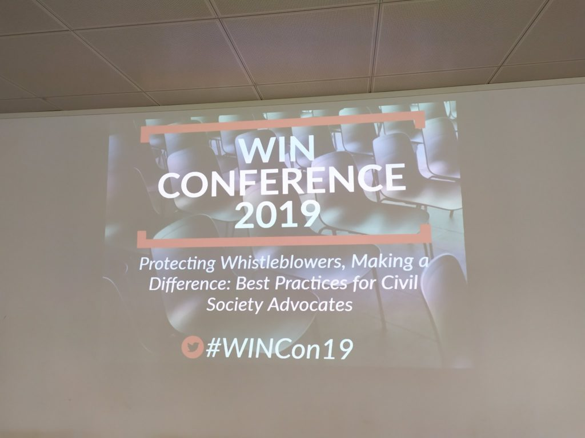
Come Centro Hermes abbiamo presentato il software open source GlobaLeaks. piattaforma sicura e anonima per praticare il whistleblowing digitale (slide di presentazione qui), fornendo alcuni casi d’uso specifici e progetti andati in porto negli ultimi anni. All’interno del workshop “Using GlobaLeaks” è stato possibile presentare e far conoscere a più di venti partecipanti da tutto il mondo il funzionamento pratico di GlobaLeaks: caratteristiche della piattaforma, casi d’uso, interfaccia grafica.
In attesa della Direttiva Europea
La normativa europea a protezione dei whistleblower è stato un punto centrale della conferenza: la sua adozione, fra ottobre e novembre, sarà un successo in questo contesto e definirà uno standard minimo di protezione in tutti i 27 (o 28) Stati membri dell’Unione. Starà poi a questi ultimi il recepimento della direttiva e l’adeguamento al contesto nazionale. In Italia, intanto, è già in vigore la legge 179/2017 normativa che ha cominciato a rendere conto all’opinione pubblica della figura del segnalante in ambito sia pubblico che privato, così come della necessità di agire affinchè possa essere tutelato dopo la sua segnalazione (soprattutto nella sua identità).
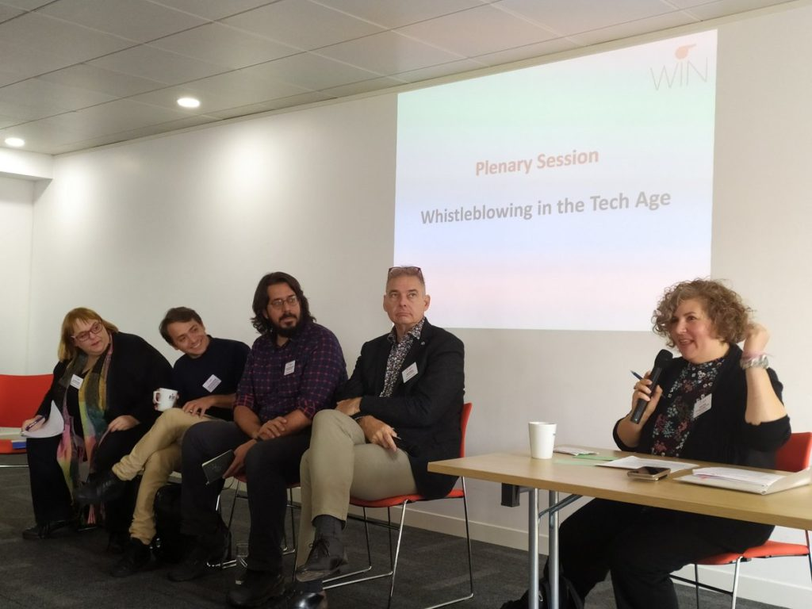
Nessuno nasce whistleblower
Alla conferenza è stato possibile ascoltare anche la voce di alcuni whistleblower presenti, come Yasmine Motarjemi (che aveva segnalato le violazioni alimentari di Nestlè) e Antoine Deltour. Quest’ultimo, informatore di LuxLeaks, ha sottolineato l’importanza di creare gruppi di supporto per i segnalanti, spesso ritenuti traditori e isolati da colleghi e superiori e dalla società. Le ONG, così come gruppi informali, possono fornire un aiuto economico e morale importante al segnalante, indirettamente aumentando la reputazione della pratica in sè.
Ciò perchè nessuno nasce whistleblower: alcune persone si ritrovano ad essere vittime o testimoni di irregolarità e decidono di non rimanere in silenzio. Quanto possano andare lontano dipende dal contesto nel quale si trovano e dall’aiuto che riescono ad ottenere.
Whistleblowing e giornalismo investigativo
A quanto detto si ricollega un ulteriore aspetto rilevante, emerso in alcuni dibattiti: ovvero quello relativo alla connessione fra giornalisti e fonti di informazioni anonime, e al potere dei primi di far emergere e amplificare la voce di coloro che denunciano irregolarità e corruzione. In questo senso è necessario che soprattutto i giornalisti investigativi abbiano conoscenze nel campo della sicurezza digitale e nell’utilizzo di tecnologie anonime sicure per prevenire la disseminazione di informazioni sensibili, e favorire un dialogo sicuro con le fonti (anche attraverso piattaforme sicure, anonime e open source come GlobaLeaks).
Le azioni del whistleblower, che decide spontaneamente di rendere note alcune informazioni riguardanti pratiche scorrette o illeciti e dunque esporre la sua stessa vita, hanno infatti potenziali ricadute anche in un momento successivo rispetto alla diffusione di materiale compromettente. Per questo motivo si è sottolineata la necessità, per i giornalisti, di considerare non solo le informazioni fornite bensì anche la sicurezza della fonte coinvolta.
2019-07-01 · News · https://www.hermescenter.org/digital-whistleblowing-fund-call-for-applications-round-2/
Digital Whistleblowing Fund: Call for applications (Round 2)
The Hermes Center for Transparency and Digital Human Rights and Renewable Freedom Foundation announce that the second round of The Digital Whistleblowing Fund is open for new applications from European projects reporting on “gender-based violence, the rights of minorities, migrants and refugees”.
The Digital Whistleblowing Fund is a micro-grant program that aims to enable investigative journalism groups and human rights grassroots organizations to receive financial, operational and strategic support in starting a secure digital whistleblowing initiative, as part of their social mission.
Grants awarded to successful organizations are divided into micro grants up to €3.000 in financial support and tech and consultancy services to support the startup of their digital whistleblowing initiative.
The tech solution is based on GlobaLeaks, an open-source, free software developed by the Hermes Center to enable the easy creation of secure and anonymous whistleblowing platforms.
For this round, a specific jury composed of key individuals/organizations from the whistleblowing, journalism, human rights activism, women’s rights, LGBTQI+ rights and tech ecosystems will evaluate the received applications.
This round of the Digital Whistleblowing Fund is supported by OSIFE.
Applications are open from 1 to 31 July.
2019-03-18 · News, Press · https://www.hermescenter.org/unitevi-allaction-week-nella-settimana-decisiva-contro-larticolo-13/
Unitevi all’Action Week nella settimana decisiva contro l’Articolo 13
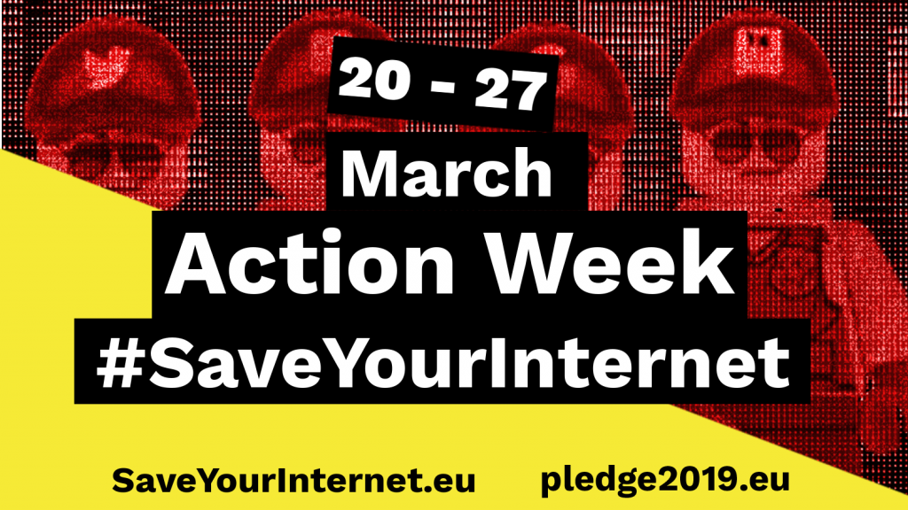
Il voto finale sulla Direttiva Copyright nella plenaria del Parlamento Europeo è previsto fra i giorni 26 e 28 marzo. Un punto cruciale che solleva enormi preoccupazioni è l’Articolo 13. L’articolo prevede una modifica della responsabilità delle piattaforme che indurrà necessariamente l’introduzione di filtri per i contenuti caricati dagli utenti per un gran numero di piattaforme online. Il testo dell’articolo 13 proposto, e su cui il Parlamento voterà, è il peggiore che abbiamo visto fino ad ora.
Le proteste pubbliche contro l’Articolo 13 hanno raggiunto un picco storico con circa 5 milioni di persone che hanno firmato una petizione online, e migliaia di telefonate, tweet, ed email sono stati inviati ai membri del Parlamento Europeo. Malgrado le dimensioni delle proteste, i legislatori non hanno voluto affrontare i problemi e rimuovere i filtri per gli upload dalla direttiva proposta.
Unisciti alla Action Week (20 marzo - 27 marzo) organizzata dalla comunità per l’internet libera e diffondi il messaggio #SaveYoutInternet! Mandiamo ai nostri rappresentanti un messaggio forte e chiaro: “Schieratevi dalla parte dei cittadini e dite NO ai filtri di caricamento!”
20 marzo — Azione!
Diamo inizio alla settimana di azione! Avete convinto i vostri rappresentanti a promettere di opporsi alla “macchina della censura” durante il voto in plenaria? Avete contattato le redazioni delle testate giornalistiche del vostro paese per spiegare perché si tratta di una pessima proposta? Avete detto al vostro amico appassionato di meme che potrebbe vederli scomparire sotto i suoi occhi? Se hai risposto no a una delle precedenti domande…. È ORA DI FARE QUALCOSA!
21 marzo — Giorno del blackout di internet
Diversi siti web stanno pianificando un blackout per questo giorno. Wikimedia Germania è uno di questi. Il tuo sito web potenzialmente ospita contenuti protetti da copyright e pertanto è a rischio di dover introdurre dei filtri di caricamento? Unisciti alla protesta!
#321EUOfflineDay
23 marzo — Proteste in tutta Europa
Nelle scorse settimane migliaia di cittadini hanno manifestato per le strade. Le proteste non sono state scalfite dalle insinuazioni della Commissione Europea secondo cui #SaveYourInternet è un movimento gestito da bot, dalle comunicazioni ingannevoli del Parlamento Europeo, e dai tentativi vigliacchi di accelerare il vote finale anticipandolo rispetto al calendario previsto originariamente. Il 23 marzo sarà un giorno di protesta generale — qui puoi consultare una mappa delle proteste previste. Mostra il tuo impegno per i valori democratici dell’Europa e com’è il coinvolgimento positivo dei cittadini!
#Article13Demo #Artikel13Demo
24-28 marzo — Attivisti in viaggio per incontrare gli europarlamentari
Un gruppo di attivisti dei diversi stati europei si recherà a Strasburgo e Bruxelles per discutere con i propri rappresentanti politici.
#SaveYourInternet
È fondamentale riuscire a contattare i propri europarlamentari e spiegare loro le nostre preoccupazioni in ogni giorno della Action Week. Sia che tu possa recarti direttamente a Strasburgo o che tu possa telefonare, o semplicemente aumentare l’attenzione sul tema nella tua comunità — tutto può fare la differenza. In questa battaglia non siamo soli: luminari di internet, il Rappresentante Speciale per la libertà d’espressione dell’ONU, organizzazioni della società civile, programmatori, e accademici si sono opposti all’Articolo 13!
Dobbiamo fermare questa macchina della censura e lavorare insieme per creare un’Unione Europea migliore! Potete contare su di noi! Possiamo contare su di voi?
Per maggiori informazioni
Save Your Internet Campaign website
https://saveyourinternet.eu/
Pledge 2019 Campaign Website
https://pledge2019.eu/en
Upload Filters: history and next steps (20.02.2019)
https://edri.org/upload-filters-status-of-the-copyright-discussions-and-next-steps
2019-03-13 · News · https://www.hermescenter.org/mancanza-di-una-vision-tecnologica-a-supporto-del-foia/
Mancanza di una vision tecnologica a supporto del FOIA
Siamo stati invitati dalla Funzione Pubblica all’incontro “FOIA: Che cosa non ha funzionato?” di confronto per portare il nostro contributo come attore della società civile impegnato nell’ambito della Trasparenza.
Riportiamo il testo del nostro intervento:
Mancanza di una vision tecnologica a supporto dei processi FOIA.
Il FOIA in Italia vede difficoltà di funzionamento relative alla mancanza di una vision tecnologica “digital first” di supporto al funzionamento dei processi, in particolare:
- Non è standardizzata la modalità di richiesta di accesso civico generalizzato in modo da facilitare il lavoro sia al cittadino che all’amministrazione
- Non è standardizzato il processo di gestione della richiesta, con le casistiche di gestione
- Non esiste una antologia che rappresenti i tipi di dati in oggetto
- Non è standardizzato in alcun modo il processo di accountability e trasparenza della richiesta, anche rispetto alle esigenze di vigilanza dell’RT interno all’ente nonché dell’ANAC
- Non esiste un software di riferimento, indicando come best-practice da parte di ANAC e Funzione Pubblica, gratuito e orientato al riuso, che fornisca una soluzione “all-in-one” per gli enti pubblici che devono rispettare tale adempimento.
Tutto ciò ha reso cittadini e amministrazioni nella forte difficoltà di gestire il FOIA come pratiche burocratiche, con andirivieni di PEC corredate di modulistiche custom con firma calligrafa e documenti digitalizzati, in modo assimilabile a quanto già avvenuto con il Whistleblowing anticorruzione originariamente basato su formulari pdf + email, e ora evoluto tramite strumenti software web divenuti di riferimento nel panorama nazionale, che conferiscono efficienza, efficacia e accountability ad un costo vicino allo zero.
Attualmente Funzione Pubblica raccomanda l’evoluzione degli strumenti di protocollo, a visione del Centro Hermes, una scelta sbagliata perché non tiene in considerazione le esigenze di interazione e trasparenza nei riguardi dei cittadini richiedenti.
Per dimostrare tale lacuna abbiamo effettuato una richiesta al Comune di Milano, richiedendo tutte le risposte di tutte le richieste FOIA presenti nel registro delle richieste di accesso civico del 2018. Il Comune di Milano ha riprocessato tutte le richieste individualmente, non avendo un “applicativo web gestionale”, ove le risposte fossero già presenti ed eventualmente già pubblicate.
Si propone l’esigenza di delineare la piena digitalizzazione realizzando tecnologie opensource di riferimento, con eventuale centralizzazione di fornitura di servizio, di tali processi secondo il medesimo approccio già realizzato per il Whistleblowing anticorruzione assieme a Transparency International Italia con il progetto WhistleblowingPA, usando il software opensource GlobaLeaks.
Questo esempio è un caso d’uso virtuoso in cui è stato sviluppato un software opensource di Whistleblowing, con relative funzionalità di gestione multi-tenant, termine tecnico per indicare la possibilità di gestire su un singolo server fisico un numero virtualmente illimitato di istanze di servizio in modalità cloud/saas.
Condividiamo che in sede Agid, in un progetto per il MIBAC, si sta provvedendo alla realizzazione di una applicazione software (che sarà resa opensource) di gestione della funzionalità “amministrazione trasparente”, dove siamo stati invitati come società civile a fornire il nostro contributo e abbiamo già indicato l’esigenza di introdurre funzionalità di gestione FOIA, virtuose perché incluse in un framework che prevede già l’integrazione con protocollo informatico.
In tal senso, magari questo progetto potrebbe essere quello su cui investire con il dovuto attenzionamento e contributo multistakeholder portato in modo ufficiale da parte dei soggetti coinvolti nel fare funzionare il FOIA in Italia.
Come Centro Hermes ci mettiamo a disposizione per supportare questi processi di digitalizzazione virtuosa dei processi di trasparenza, che debbano vedere non solo l’adempimento burocratico nelle sue logiche di funzionamento, ma il virtuosismo di collaborazione con il cittadino e l’accountability di processo al suo interno.
Aggiungiamo un importante esperienza legata al FOIA, quello che abbiamo chiamato simpaticamente “FOIA for Nerds”, cioè la difficoltà di ottenere informazioni relative alla progettazione, implementazione, verifiche funzionali, collaudi nonché attività di esercizio di manutenzione evolutiva e correttiva di sistemi informativi della pubblica amministrazione.
Tali richieste sono effettuate da una platea di tecnologhi d’esperienza, tipicamente in posizioni gestionali, con lo scopo di attuare in monitoraggio civico relativo al rispetto delle normative tecniche fra le varie quelle su sicurezza ICT, sulle offerte tecniche di risposta a bandi, sulle modalità di riuso del software, sulla accessibilità che impattano in modo diretto la vita dei cittadini nel rapporto con la pubblica amministrazione.
Viviamo l’esperienza diretta (con l’INPS, con l’Agenzia delle Entrate e con Sogei) nonché riportata da più fronti, di una naturale prassi di diniego da parte delle amministrazioni adducendo come motivazione principale quella di mettere a repentaglio la sicurezza dei sistemi ICT. Tale motivazione è strumentale e contraria ai principi di trasparenza e revisione collaborativa, basata su concetti di cybersecurity degli anni ’80 di “security trough obscurity”, ampiamente superati.
Ci domandiamo chi debba essere l’interlocutore che possa dirimere tali dinieghi, essendo a carattere altamente specialistico nella cybersecurity, di difficile comprensione in ambito esclusivamente amministrativo, richiedendo una competenza interdisciplinare.
Vi ringrazio e spero in un seguito di tale proposizione
Fabio Pietrosanti
2019-03-07 · News, Press · https://www.hermescenter.org/e-ora-di-chiamare-i-nostri-parlamentari-per-bloccare-larticolo-13-della-direttiva-copyright/
È ora di chiamare i nostri parlamentari per bloccare l’articolo 13 della direttiva copyright
Il Centro Hermes annuncia il proprio supporto alla campagna Pledge2019.eu, gestita dall’organizzazione austriaca epicenter.works e supportata da altre organizzazioni che fanno parte della rete EDRi.
Pledge2019.eu consente agli elettori di tutti gli Stati membri dell’UE di chiamare i propri rappresentanti gratuitamente e convincerli a impegnarsi a rifiutare i filtri di caricamento inclusi nell’articolo 13 della controversa proposta di direttiva sul copyright dell’UE.
I cittadini sono incoraggiati a considerare anche la posizione dei parlamentari sull’articolo 13 quando si troveranno poi a votare nelle elezioni del Parlamento europeo di maggio 2019.
I cittadini europei hanno già espresso opposizione ai filtri di caricamento in modo chiaro in una petizione che si sta avvicinando a un record di cinque milioni di firme. Tuttavia, un rumor che circola a Bruxelles liquida questi stessi cittadini indicandoli come “bot”. È per questo che è necessario consentire agli elettori di parlare direttamente con i propri rappresentanti, togliendo ogni dubbio sul fatto che siano reali, come reali sono i rischi dell’articolo 13.
Nei giorni scorsi c’erano state voci relative all’idea di anticipare il voto sulla direttiva copyright a settimana prossima. Questo tipo di richiesta si spiega solo come un tentativo di evitare ulteriori dibattiti e la partecipazione dei cittadini interessati prima del voto. Al momento il pericolo sembra scampato e le votazioni non saranno anticipate.
La direttiva copyright introduce una responsabilità diretta per le piattaforme e ciò porterà sicuramente a un eccesso di zelo da parte delle stesse: per evitare ad ogni costo controversie legali implementeranno filtri automatizzati che analizzano ogni contenuto video, articolo, meme o audio prima che sia pubblicato online.
Il Parlamento europeo, a soli 2 mesi dalle elezioni Europee di maggio, deve garantire di aver ascoltato le più di 70 figure chiave di Internet, il Relatore Speciale sulla libertà di espressione delle Nazioni Unite, le ONG, i programmatori e gli accademici e opporsi ai filtri dei contenuti nella Direttiva sul Copyright.
Siamo vicinissimi alla possibilità di eliminare i filtri di caricamento e ottenere una direttiva sul copyright più equilibrata. Al momento, 95 europarlamentari provenienti dai diversi schieramenti politici e da 22 stati europei hanno già manifestato la propria opposizione all’Articolo 13.
Contattare telefonicamente i nostri europarlamentari usando Pledge2019.eu richiede pochissimo tempo e si dimostra il metodo più efficace.
I cittadini devono alzare la voce per l’ultima volta e usare le elezioni europee di maggio per gridare democraticamente all’unisono #SaveYourInternet.
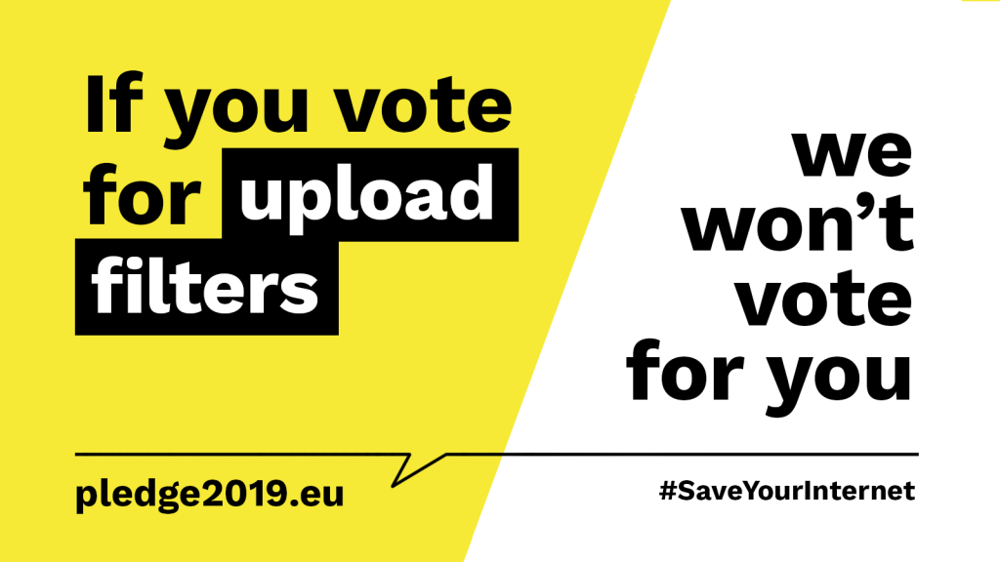
2019-02-06 · News, Press · https://www.hermescenter.org/lettera-aperta-sul-database-per-i-contenuti-terroristici/
Lettera aperta sul database per i contenuti terroristici
Lo scorso 4 febbraio 2019, il Centro Hermes si è unito a EDRi e ad altre dozzine di organizzazioni e accademici per firmare una lettera aperta. La lettera si inserisce all’interno del dibattito sul regolamento sui contenuti terroristici e critica la cieca fiducia in un database per contrassegnare tali contenuti.
Tra le nostre preoccupazioni ci sono:
- Mancanza di trasparenza sul funzionamento del database e sulla sua efficacia, proporzionalità e adeguatezza per raggiungere gli obiettivi che il regolamento sui contenuti terroristici intende conseguire.
- I filtri non sono in grado di comprendere il contesto e quindi sono soggetti a errori.
- Indipendentemente dalla possibilità che i filtri siano precisi in futuro, si rischia di instaurare un monitoraggio pervasivo su individui svantaggiati ed emarginati.
Qui è possibile leggere il PDF della lettera.
Per maggiori informazioni e approfondimenti sul regolamento EDRi mette a disposizione una raccolta di documenti:
Terrorist Content Regulation: Document Pool
https://edri.org/terrorist-content-regulation-document-pool/
2019-01-29 · News, Press · https://www.hermescenter.org/lettera-aperta-per-richiedere-la-soppressione-degli-articoli-11-e-13-della-direttiva-europea-sul-copyright/
Lettera aperta per richiedere la soppressione degli articoli 11 e 13 della direttiva europea sul copyright
Il 29 gennaio, il Centro Hermes si è unito a una grande coalizione di parti interessate composta da 87 organizzazioni nell’inviare una lettera al gruppo di lavoro sulla proprietà intellettuale del Consiglio europeo, il vicepresidente della Commissione europea Andrus Ansip e ai negoziatori del trilogo del Parlamento europeo per chiedere la soppressione dei controversi articoli 11 e 13 all’interno della proposta di direttiva sul copyright. La lettera arriva in una fase cruciale dal momento che i negoziati sono stati bloccati dopo che la revisione del mandato per il Consiglio non è stata adottata lo scorso 18 gennaio.
I firmatari ritengono che un compromesso sull’articolo 13 sia più difficile da ottenere ora che, dopo le critiche di 70 luminari di internet, del Relatore speciale delle Nazioni Unite sulla libertà di espressione, delle organizzazioni della società civile, degli sviluppatori e degli accademici, persino grandi fette dell’industria creativa hanno sollevato critiche e suggerito una interruzione dei negoziati sull’articolo 13. Critiche simili sono state sollevate sulla proposta di copyright accessoria all’articolo 11 che ha portato Google a minacciare di lasciare il mercato dell’UE.
Nonostante due anni di negoziati, i responsabili politici europei non sono riusciti a trovare il giusto equilibrio nel testo. Pertanto, la lettera invita a cancellare completamente entrambi gli articoli 11 e 13 dalla proposta al fine di consentire una rapida prosecuzione delle discussioni.
Qui è possibile leggere la lettera in formato PDF.
Per maggiori informazioni e approfondimenti è possibile seguire gli aggiornamenti sul sito di EDRi:
Copyright: Compulsory filtering instead of obligatory filtering – a compromise? (04.09.2018)
https://edri.org/copyright-compulsory-filtering-instead-of-obligatory-filtering-a-compromise/
How the EU copyright proposal will hurt the web and Wikipedia (02.07;2018)
https://edri.org/how-the-eu-copyright-proposal-will-hurt-the-web-and-wikipedia/
EU Censorship Machine: Legislation as propaganda? (11.06.2018)
https://edri.org/eu-censorship-machine-legislation-as-propaganda/
2019-01-16 · News, Press · https://www.hermescenter.org/anac-ed-openwhistleblowing/
ANAC ed OpenWhistleblowing
La piattaforma di whistleblowing di ANAC è basata sul software di whistleblowing open-source GlobaLeaks è nominata OpenWhistleblowing.
La scelta di ANAC di adoperare tecnologia pubblica, gratuita e bene comune come base per lo sviluppo della propria piattaforma di whistleblowing digitale e di promuovere in riuso tale tecnologia a tutta la pubblica amministrazione, rappresenta una scelta strategica che può realmente fare la differenza in termini di efficacia nell’implementazione di procedure di raccolta e gestione di segnalazioni.
Onde evitare ogni fraintendimento, si sottolinea come non vi sia un avallo da parte di ANAC né un accordo inerente il progetto GlobaLeaks, e che questa pagina ha il solo scopo di condividere il percorso che è stato fatto e lo stato corrente dei lavori. In questo modo, la comunità che segue il progetto GlobaLeaks può essere aggiornata sugli sviluppi delle funzionalità relative alla edizione del software denominato OpenWhistleblowing.
Attività intraprese con l’Autorità Nazionale Anticorruzione (ANAC)
Il 24 Febbraio 2015 ANAC avvia una consultazione pubblica sulle Linee guida in materia di tutela del dipendente pubblico che segnala illeciti.
Il 16 Marzo 2015 il Centro Hermes, in qualità di sviluppatore principale del software GlobaLeaks, risponde alla consultazione ANAC.
A fine Aprile 2015 ANAC convoca il team di GlobaLeaks per una prima presentazione e uno scambio di conoscenza, in considerazione della disponibilità offerta dal Centro Hermes a condividere la propria esperienza maturata a livello internazionale in ambito whistleblowing.
Nel Luglio 2015 il Centro Hermes e ANAC firmano un Memorandum d’Intesa per formalizzare l’avviato scambio di conoscenza già in essere.
Tra la seconda metà del 2015 e l’inizio del 2016 il Centro Hermes effettua numerosi workshop presso ANAC, al fine di condividere liberamente le proprie esperienze. Alle attività partecipano vari uffici, tra cui l’area di information technology e l’ufficio di vigilanza incaricato di ricevere e gestire le segnalazioni. Le sessioni di workshop hanno come fine il brainstorming e la prototipazione software iterativa.
In questo periodo, il Centro Hermes effettua numerosi sviluppi e migliorie delle funzionalità del software adattandolo alle esigenze discusse durante le sessioni di workshop, attività che si susseguono con interazione, integrazioni e sviluppo sperimentale congiunto con ingegneri software interni di ANAC.
Tutte le attività vengono effettuate pro-bono, grazie all’impegno dei volontari del Centro Hermes e alla disponibilità dell’associazione a sostenere tali attività di ricerca e sviluppo che, ricordiamo, sono supportate dal grant internazionale di Open Technology Fund di Washington.
Ad inizio 2016 ANAC discute dell’evoluzione del progetto, sia per quanto riguarda la sua adozione interna sia per la sua redistribuzione in riuso a tutte le Pubbliche amministrazioni italiane.
Il Centro Hermes condivide diverse possibilità tra cui:
- avviare una BETA pubblica con un “progetto pilota” lanciando online il prototipo fin da subito, seguendo poi un approccio agile di sviluppo e sempre a zero budget;
- effettuare un corso di training on the job agli sviluppatori interni, così da avere un trasferimento di know-how tecnologico e culturale per rendere ANAC autonoma nel contribuire allo sviluppo del software.
In questa fase, il Centro Hermes mette a disposizione tutta la propria esperienza in merito all’adozione e diffusione di software opensource, considerato bene comune destinato al riuso. Inoltre, si ipotizza il coinvolgimento degli ingegneri software presenti nelle varie società in-house e delle unità di sviluppo software interni alla pubbliche amministrazioni, includendo le università con tesi e progetti di ricerca rivolti a migliorare e fare evolvere una importante tecnologia pensata per coadiuvare un efficiente contrasto alla corruzione in Italia.
Il 22 Giugno 2016 ANAC presenta pubblicamente, nella persona dell’ingegner Longobardi, la Piattaforma di whistleblowing ANAC. E’ possibile visionare la ripresa video della presentazione (dal minuto 42, registrata da Radio Radicale).
Sviluppi
ANAC decide di non lanciare la piattaforma nazionale in edizione “BETA” e continua, per il momento, ad utilizzare una semplice email whistleblowing@anticorruzione.it per la ricezione delle segnalazioni da parte di whistleblower. Subito dopo, avvia la definizione di un bando di gara per esternalizzare la manutenzione, il supporto e lo sviluppo del prototipo al fine del suo adattamento e dell’integrazione nella propria infrastruttura informatica.
A partire da questo momento, in compatibilità con le procedure di gara, ANAC sospende ogni comunicazione con il Centro Hermes, senza richiedere alcun supporto tecnico.
Il 6 luglio 2016 l’Autorità pubblica un bando di gara per l’affidamento della manutenzione ed evoluzione del software. All’interno del bando vengono inclusi alcuni requisiti di adeguamento del prototipo, oltre a funzionalità applicative, adeguamenti relativi all’utilizzo delle basi di dati (SQL Server 2008) e al sistema operativo utilizzato (Redhat Enterprise 6) dall’Autorità.
Nell’agosto 2016 Whistleblowing Solutions Impresa Sociale, (no-profit attraverso la quale il Centro Hermes effettua ricerca applicando la propria esperienza in materia di whistleblowing al supporto del contrasto alla corruzione), considerando l’andamento dei fatti e continuando a valutare il progetto importante e di utilità sociale, decide di partecipare anch’essa al bando di gara precedentemente citato.
Il 31 Gennaio 2017 ANAC sottolinea la rilevanza dell’open-source come forma di riuso nel suo Programma Triennale Anticorruzione 2017-2019 come descritto nella pagina sul Software in riuso opensource.
Il 15 Maggio 2017 l’Autorità comunica l’aggiudicazione del bando di gara alla società La.Ser Romae Srl.
Il 28 maggio 2017 la Whistleblowing Solutions Impresa Sociale Srl, classificata ultima su sei partecipanti, pubblica la propria offerta tecnica invitando tutti gli altri partecipanti a pubblicare la loro e, congiuntamente, espone alcuni commenti di critica costruttiva in merito.
Il 29 maggio 2017 il Centro Hermes segnala alla Agenzia per l’Italia Digitale (AGID) il software GlobaLeaks.
Il 20 giugno 2017 il Centro Hermes segnala al progetto Comune From Scratch della Italian Linux Società il software GlobaLeaks.
Il 25 luglio 2017 il Centro Hermes lancia un Appello ad ANAC affinché questa si faccia supportare da AGID e dal Team di Trasformazione Digitale nella governance del progetto di whistleblowing digitale basato su GlobaLeaks.
Il 21 settembre 2017 ANAC risponde all’appello del Centro Hermes.
L’8 febbraio 2018 l’Autorità lancia online il suo servizio di whistleblowing basato sul software GlobaLeaks ma con codename OpenWhistleblowing, realizzato con le modifiche richieste del bando di gara.
Il 27 febbraio 2018 il Centro Hermes risponde, sul Forum del Team Trasformazione Digitale, ad un quesito sul riuso del software GlobaLeaks dal titolo Software Whistleblowing Anticorruzione di ANAC o GlobaLeaks per legge 179/2017?. Viene fornita un’analisi preliminare degli aspetti tecnici e funzionali che differenziano GlobaLeaks e l’edizione software su cui è basato il servizio ANAC.
Il 5 maggio 2018 Il Centro Hermes risponde alla Consultazione Pubblica su Linee Guida in merito all’acquisizione ed al riuso di software per le pubbliche amministrazioni della Agenzia Italia Digitale, facendo specifico riferimento al software di whistleblowing anticorruzione che deve ancora essere posto in riuso e fornendo la propria disponibilità a supportare pro-bono questo percorso.
Il 15 gennaio 2019 ANAC rilascia l’edizione software GlobaLeaks denominata OpenWhistleblowing, sulla base della versione 2.60.144 del 14/03/2016
Il 15 Gennaio 2019 il Centro Hermes pubblica il documento “Valutazione tecnica della edizione GlobaLeaks messa in riuso con nome OpenWhistleblowing da ANAC” con l’analisi tecnica-funzionale di dettaglio relativo a quanto di software e documentazione sia stato messo in riuso, le limitazioni, criticità e opportunità di re-integrazione nella edizione principale del software, condividendolo sul Forum Italia Digitale.
Il 16 Gennaio 2019 il Centro Hermes effettua richiesta di accesso civico generalizzato ad ANAC, come già realizzato per documentare il caso di Riuso del Comune di Milano, rivolta ad acquisire e pubblicare tutto il materiale documentale prodotto durante lo svolgimento del progetto, con l’obiettivo di condivisione trasparente del percorso di produzione della conoscenza bene comune relativa al progetto GlobaLeaks.
Il 19 Ottobre 2020 ANAC e Centro Hermes comunicano con reciproca soddisfazione di aver risolto amichevolmente una controversia giudiziale circa l’applicazione della licenza GNU AGPL versione 3 al software per la gestione delle segnalazioni di illeciti OpenWhistleblowing, messo a disposizione delle amministrazioni pubbliche da ANAC, edizione derivata dalla soluzione GlobaLeaks 2.60.144 di Hermes.
2018-12-21 · News, Press · https://www.hermescenter.org/lettera-aperta-al-mise-per-garantire-la-corretta-finalizzazione-del-regolamento-europeo-eprivacy/
Lettera aperta al MISE per garantire la corretta finalizzazione del regolamento europeo ePrivacy
Fermarsi ora rischierebbe di minare i risultati ottenuti con il GDPR.
Il centro Hermes, insiema alla Coalizione Italiana Libertà e Diritti civili e a Wikimedia Italia, ha inviato una lettera aperta al Ministero dello Sviluppo Economico per assicurare la finalizzazione della riforma del regolamento ePrivacy.
Le associazioni chiedono la conclusione delle discussioni apparentemente senza fine tra gli stati membri dell’UE. Infatti, sono trascorsi più di 700 giorni da quando la Commissione europea ha presentato una proposta per migliorare la protezione delle comunicazioni digitali. Queste norme sono un supplemento fondamentale al regolamento generale sulla protezione dei dati personali (GDPR) entrato in vigore lo scorso maggio. Mentre il GDPR regola la gestione dei dati personali, il regolamento ePrivacy regola in modo specifico la protezione della privacy e la riservatezza delle comunicazioni elettroniche.
Uno dei principali ostacoli nei negoziati è la questione relativa al modo in cui le aziende di telecomunicazioni possono utilizzare i metadati per scopi diversi dal servizio originale. Inoltre, nelle attuali bozze del Consiglio europeo sul regolamento ePrivacy, la data retention — conservazione dei metadati per scopi di polizia — viene sottratta dagli effetti del regolamento, rischiando quindi di ridurre le garanzie dei diritti dei cittadini.
In Italia, purtroppo, ci troviamo in una situazione drammatica: una legge ha introdotto la data retention indiscriminata dei dati telefonici e telematici per 6 anni, in contrasto con tutti i principi sottolineati dalla giurisprudenza della Corte di giustizia dell’Unione europea (CGUE) in Digital Rights Ireland (causeriunite C-293/12 e C-594/12) e Tele2 (causeriunite C-203 / 15 e C-698/15).
La conservazione dei dati deve essere mirata piuttosto che generale e indiscriminata.
Ribadiamo quindi che la legislazione ePrivacy non è e non deve essere uno strumento nelle mani delle forze dell’ordine e non dovrebbe essere utilizzata per ampliare i poteri di polizia e per negare la giurisprudenza del tribunale dell’UE.
Riteniamo che finalizzare la riforma in tempi certi possa essere un grande passo in avanti verso il rafforzamento del diritto alla privacy e alla libertà di espressione delle persone in tutta l’UE, rafforzando la fiducia nei servizi online e fornendo chiarezza giuridica alle imprese e ai privati.
Per maggiori informazioni e approfondimenti sul regolamento ePrivacy:
https://edri.org/eprivacy-public-benefit-or-private-surveillance/
https://edri.org/your-eprivacy-is-nobody-elses-business/
https://edri.org/five-reasons-to-be-concerned-about-the-council-eprivacy-draft/
2018-12-06 · News, Press · https://www.hermescenter.org/gruppi-di-consumatori-ong-e-industrie-chiedono-congiuntamente-al-consiglio-dellue-di-promuovere-la-riforma-eprivacy/
Gruppi di consumatori, ONG e industrie chiedono congiuntamente al Consiglio dell’UE di promuovere la riforma ePrivacy
Lunedì 3 dicembre, una coalizione di oltre 30 gruppi di consumatori, ONG e rappresentanti del settore ha inviato una lettera ai ministri dell’UE e al Consiglio dell’UE per chiedere la conclusione dei negoziati sulla riforma della legislazione ePrivacy.
La lettera è stata inviata prima della riunione del 4 dicembre nel Consiglio TTE, con i firmatari che condividono le preoccupazioni per il lento progresso dei negoziati nel Consiglio dell’UE nonostante i ripetuti scandali che dimostrano la necessità chiara e urgente di rafforzare la privacy e la sicurezza di comunicazioni elettroniche nell’ambiente online.
Nella lettera, Hermes e gli altri soggetti interessati sostengono che “la riforma del quadro ePrivacy è necessaria per garantire un’efficace riservatezza e sicurezza delle moderne comunicazioni online, per garantire la chiarezza del quadro giuridico e per ripristinare la fiducia del pubblico nell’economia digitale.”
Insieme, i firmatari di questa lettera rappresentano individui, consumatori e attori dell’intero ecosistema online — dai motori di ricerca ai provider di posta elettronica, fornitori di cloud storage sicuri, sistemi di analytics a favore della privacy, servizi di gestione delle identità e browser. La stragrande maggioranza dei gruppi industriali che hanno appoggiato questa lettera provengono dall’UE, mostrando il successo degli innovatori europei nello sviluppo di servizi a tutela della privacy.
2018-12-06 · News, Press · https://www.hermescenter.org/regolamento-sui-contenuti-terroristici-associazioni-per-i-diritti-civili-sollevano-preoccupazioni-importanti/
Regolamento sui contenuti terroristici: associazioni per i diritti civili sollevano preoccupazioni importanti
Lo scorso 4 dicembre 2018, il centro Hermes si è unito a una coalizione di 31 organizzazioni della società civile che hanno pubblicato una lettera per sollevare una serie di preoccupazioni riguardo alla proposta di regolamento per impedire la diffusione di contenuti terroristici online.
Mentre le organizzazioni firmatarie sostengono la lotta contro il terrorismo come un obiettivo importante e legittimo per i responsabili delle politiche pubbliche, le misure contenute nel regolamento rischiano un’arbitrarietà squilibrata che va contro la necessità di salvaguardare le libertà civili. In particolare:
- Le definizioni contenute nella proposta sono troppo ampie e dovrebbero essere allineate all’attuale direttiva sul terrorismo.
- Le misure proattive proposte non sono trasparenti e mancano di responsabilità.
- Le “autorità competenti” che avranno il diritto di emettere ordini di ritiro devono essere chiaramente definite per garantire la loro indipendenza.
- Il sistema di segnalazioni proposto rischia di indebolire lo stato di diritto attraverso i vaghi termini di servizio delle aziende digitali.
Poiché il regolamento allo stato attuale rischia di compromettere seriamente il quadro dei diritti fondamentali dell’UE, Hermes si unisce a EDRi e alle organizzazioni firmatarie nel richiedere una profonda riforma della proposta.
Per maggiori informazioni:
Terrorist content regulation – prior authorisation for all uploads? (21.11.2018) https://edri.org/terrorist-content-regulation-prior-authorisation-for-all-uploads/
EU’s flawed arguments on terrorist content give big tech more power (24.10.2018) https://edri.org/eus-flawed-arguments-on-terrorist-content-give-big-tech-more-power/
Joint Press Release: EU Terrorism Regulation – an EU election tactic (12.09.2018) https://edri.org/press-release-eu-terrorism-regulation-an-eu-election-tactic/
EU Parliament’s anti-terrorism draft Report raises major concerns (10.10.2018) https://edri.org/eu-parliaments-anti-terrorism-draft-report-raises-major-concerns/
2018-11-15 · News · https://www.hermescenter.org/digital-whistleblowing-fund-new-grant-program-to-support-whistleblowing-initiatives/
Digital Whistleblowing Fund: New Grant Program To Support Whistleblowing Initiatives
The Hermes Center for Transparency and Digital Human Rights and Renewable Freedom Foundation announce the launch of The Digital Whistleblowing Fund, a micro-grant program that aims to enable investigative journalism groups and human rights grassroots organizations to receive financial, operational and strategic support in starting a secure digital whistleblowing initiative, as part of their social mission.
Digital Whistleblowing fund is supported by OSIFE in its first call for application meant for projects operating within Europe.
Grants awarded to successful organizations will be divided into micro grants up to €3.000 in financial support and tech and consultancy services to support the startup of their digital whistleblowing initiative. Services provided include platform setup, configuration and customization assistance, training and strategic advisory service for the whistleblowing project design and setup.
The tech solution is based on GlobaLeaks, an open-source, free software developed by the Hermes Center to enable the easy creation of secure and anonymous whistleblowing platforms.
A selection committee composed of key individuals/organizations from the whistleblowing, journalism, activism, anti-corruption and hacking ecosystems will evaluate the received applications.
The Digital Whistleblowing Fund will run periodical thematic calls. The theme of the first round is “Anti-corruption Activism”. Applications will be open from 15th November to 31st December.
Donors and funders can partner with Digital Whistleblowing Fund to startup specific funding calls, being geographical (e.g. East Asia, MENA) or thematic (investigative journalism, reporting on human rights violations).
2018-11-15 · News, Press · https://www.hermescenter.org/15-novembre-2018-un-anno-dallapprovazione-della-legge-sul-whistleblowing-in-italia/
15 novembre 2018: un anno dall’approvazione della legge sul whistleblowing in Italia
E’ passato un anno dal 15 novembre 2017, data nella quale è stata finalmente approvata la legge sul whistleblowing (n. 179/2017) a tutela di coloro che decidono di segnalare un caso di corruzione sul posto di lavoro.
Il software GlobaLeaks, libero ed open source, è sin dal 2014 utilizzato nel progetto ALAC - Allerta Anticorruzione di Transparency International Italia, al fianco dei whistleblower italiani e a contrasto dei fenomeni corruttivi di cui questi ultimi possono essere vittime o testimoni.
WhistleblowingPA
Dal 1° ottobre 2018, in collaborazione con Transparency International Italia, il Centro Hermes ha lanciato la piattaforma WhistleblowingPA, creata appositamente per facilitare l’iniziativa di whistleblowing all’interno della Pubblica Amministrazione.
Il questionario a disposizione delle PA è appositamente studiato per il contrasto alle attività corruttive, ed è conforme alla normativa n. 179/2017 legge che disciplina il whistleblowing in Italia.
Attiva gratuitamente il sito di whistleblowing per il tuo ente su https://www.whistleblowing.it e partecipa alla comunità di Responsabili per la Prevenzione della Corruzione (RPC) sul Forum https://forum.whistleblowing.it.
2018-10-01 · News · https://www.hermescenter.org/whistleblowingpa/
Il software libero e open source GlobaLeaks fornito gratuitamente agli enti pubblici: nasce WhistleblowingPA
Il Centro Hermes lancia oggi insieme a Transparency International Italia la piattaforma WhistleblowingPA, un’iniziativa che permette a tutti gli enti pubblici, controllati e partecipati dallo stato, di dotarsi di un sistema digitale per la gestione delle segnalazioni di corruzione.
Grazie a WhistleblowingPA le amministrazioni italiane potranno facilmente, e a costo zero, aiutare i Responsabili per la Prevenzione della Corruzione (RPC) ad adempiere agli obblighi di legge. Con la legge in tema di whistleblowing (l. 179/2017) si introducevano infatti alcuni obblighi importanti, fra i quali “l’utilizzo di modalità anche informatiche che promuovono il ricorso a strumenti di crittografia per garantire la riservatezza dell’identità del segnalante e per il contenuto delle segnalazioni e della relativa documentazione”.
Anonimato tecnologico
Dal 2011 GlobaLeaks permette ai whistleblower di comunicare anonimamente, in base al caso d’uso, con lo scopo di promuovere e sviluppare all’interno della società la coscienza e l’attenzione in merito a trasparenza, protezione dei whistleblower e accountability delle amministrazioni pubbliche. Ciò significa anonimizzare il contenuto della segnalazione, ma anche l’indirizzo IP di coloro che segnalano: per questo GlobaLeaks utilizza la end-to-end encryption di Tor e permette di allegare file alla piattaforma attraverso PGP encryption.
2018-06-25 · News, Press · https://www.hermescenter.org/data-retention-hermes-center-si-unisce-ad-oltre-60-ong-nellinvio-di-denunce-contro-la-conservazione-illegale-di-dati/
Data Retention: Hermes Center si unisce ad oltre 60 ONG nell’invio di denunce contro la conservazione illegale di dati
Denunce massive contro la conservazione illegale di dati
Il 25 giugno 2018, il centro Hermes si è unito a oltre sessanta ONG, reti comunitarie, accademici e attivisti nell’invio di una lettera aperta congiunta alla Commissione europea, insieme a varie denunce contro la politica di conservazione dei dati degli Stati membri dell’UE.
Qual è il rischio?
La “conservazione generalizzata dei dati” si riferisce all’obbligo per i fornitori di servizi di telecomunicazione (telefono e servizi Internet) di conservare i dati sul traffico (numeri chiamati, indirizzi IP, dati di posizione, identità) di tutti i loro utenti per diversi mesi o anni (a seconda di ogni legge nazionale). Tale conservazione si applica a tutti gli utenti, comprese le persone che non sono sospettate di alcun crimine o illecito.
Diciassette Stati all’interno dell’Unione europea prevedono tale conservazione generalizzata dei dati.
In Italia ci troviamo di fronte alla conservazione indiscriminata di tali dati per la durata di 6 anni.
In che modo contrasta con il diritto dell’Unione europea?
La Corte di giustizia dell’Unione europea ha chiaramente stabilito che una conservazione dei dati così generale e indiscriminata è contraria al diritto alla privacy, alla protezione dei dati personali nonché alla libertà di parola e di informazione, tutelati dalla Carta UE di diritti fondamentali.
Secondo la Corte, tali misure di sorveglianza di massa non sono accettabili.
Qual è il nostro obiettivo?
La legge europea non è solo più favorevole per i nostri diritti e le nostre libertà: supera anche le leggi nazionali. Vogliamo che venga applicata affinché i 17 Stati membri che attualmente violano il diritto dell’UE debbano cambiare le loro politiche.
A tal fine, Hermes Center si è unita alle altre organizzazioni nell’inviare le denunce alla Commissione europea. In questo modo, invitiamo la Commissione a indagare e, eventualmente, a portare questi Stati davanti alla Corte di giustizia. In questo modo, ognuno di essi può essere sanzionato per la sua violazione del diritto dell’UE. Per presentare la nostra azione, alleghiamo a tali denunce una lettera aperta comune sostenuta da più di 60 firmatari in 19 Stati membri, che sarà anche inviata alla Commissione europea.
Come puoi aiutare?
Anche tu puoi inviare un reclamo alla Commissione europea! Devi solo inserire le informazioni di contatto nel modello per il tuo paese e inviarlo a questo indirizzo: SG-PLAINTES@ec.europa.eu
Fare ciò non è rischioso ed è anche gratuito. Questa procedura di reclamo è accessibile a tutti.
2018-06-19 · News, Press · https://www.hermescenter.org/i-legislatori-europei-vogliono-governare-internet-con-filtri-tuttaltro-che-perfetti-serve-il-tuo-intervento/
I legislatori europei vogliono governare internet con filtri tutt’altro che perfetti: serve il tuo intervento!
I legislatori europei stanno lavorando al più grande filtro internet mai visto. Un filtro deciderà quali dei tuoi upload saranno visibili al resto del mondo e quali no. Ma questi filtri spesso sbagliano. L’europarlamentare Julia Reda ha pubblicato alcuni esempi di filtri che sbagliano. Ecco alcuni esempi.
Il filtro sul copyright blocca le lezioni sul … copyright
Nella registrazione di una lezione sul copyright della Harvard Law School, il professore fa ascoltare qualche secondo di un brano di Jimi Hendrix. Ciò è perfettamente legale, il diritto d’autore prevede alcune eccezioni che consentono di utilizzare materiale sotto copyright per scopi educativi. Ma il filtro di YouTube non è stato capace di valutare il contesto e quindi ha detto no. Morale della storia? I filtri non riconoscono le eccezioni.
Il filtro accusa la NASA di pubblicare filmati appartenenti alla NASA
Tutti i filmati pubblicati dalla NASA sono di pubblico dominio, ovvero chiunque può utilizzarli. Alcune emittenti televisive hanno utilizzato le immagini nei loro programmi, che sono sistematicamente protetti da copyright. Analizzando il filmato gli algoritmi di tutela del copyright hanno individuato il filmato della NASA e hanno concluso che la NASA stava violando il copyright dell’emittente televisiva. Ovviamente il problema è stato risolto velocemente, ma non prima che il filmato della NASA venisse bloccato. Morale della storia? I filtri non riescono a gestire il “pubblico dominio”.
Il filtro analizza i filmati che documentano crimini di guerra, ma non li riconosce tali
Le piattaforme social media non amano esporre i propri utenti a contenuti che potrebbero farli sentire a disagio. YouTube ad esempio utilizza un filtro per individuare “materiale estremistico”. Il risultato? Decine di migliaia di video che documentano crimini di guerra in Siria sono stati bloccati. Improvvisamente la guerra appare molto meno atroce. Tutto questo perché il filtro non riesce a distinguere tra filmati che documentano qualcosa e filmati che promuovono qualcosa. Morale della storia? I filtri non comprendono il contesto.
Link: https://www.nytimes.com/2017/08/22/world/middleeast/syria-youtube-videos-isis.html
In breve: i filtri sbagliano. Non possiamo avere filtri internet che controllano la nostra libertà di espressione. Non sarebbe una storia a lieto fine per i cittadini. Dobbiamo essere certi che i legislatori europei lo comprendano.
Cosa puoi fare?
Manda un tweet o una email a chi ti rappresenta nella commissione JURI. Domani, 20 giugno, verrà presa una decisione sui filtri per l’upload. Usa gli hashtag #CensorshipMachine e #filterfail e fai sapere a chi ti rappresenta che sei contro i filtri di upload (articolo 13). I nostri europarlamentari sono:
| Nome e id Twitter | Gruppo politico EU | Partito nazionale |
| Laura Ferrara (Vice-Chair) | EFDD | Movimento 5 Stelle (M5S) |
| Enrico Gasbarra | S&D | Partito Democratico (PD) |
| Isabella Adinolfi* | EFDD | Movimento 5 Stelle (M5S) |
| Mario Borghezio*
n/a |
ENF | Lega Nord (LN) |
| Sergio Gaetano Cofferati* | S&D | – |
| Stefano Maullu* | EPP | Forza Italia (FI) |
Abbiamo preparato alcuni tweet per ispirarti, ma sentiti libero di scrivere il tuo.
- .@MEP Difendi la nostra libertà di espressione online. Opponiti alla #censorshipmachine nella #copyright Directive proposal.
- .@MEP Difendi la nostra privacy online. Opponiti alla #censorshipmachine nella #copyright Directive proposal.
- .@MEP Fai vedere che hai a cuore la privacy e la libertà di espressione dei cittadini & opponiti alla #censorshipmachine nella #copyright Directive proposal.”
- .@MEP I filtri internet non funzionano. Opponiti alla #censorshipmachine nella #copyright Directive proposal.
2018-06-19 · News, Press · https://www.hermescenter.org/il-filtro-internet-europeo-distruggera-la-tua-liberta-di-espressione-serve-il-tuo-intervento/
Il filtro internet europeo distruggerà la tua libertà di espressione: serve il tuo intervento!
I legislatori europei stanno lavorando per imporre il più grande filtro internet mai visto. Un algoritmo deciderà quali dei tuoi upload saranno visibili al resto del mondo e quali no. È in questo modo che il filtro internet ti priverà della tua libertà di espressione.
I filtri non funzionano
Innanzi tutto: i filtri funzionano veramente male nel riconoscere i contenuti. Ci sono tantissimi esempi: il materiale scolastico di un insegnante che è stato bloccato, le immagini dell’atterraggio su Marte della NASA che sono state inavvertitamente messe nella blacklist, o le decine di migliaia di video che documentano crimini di guerra in Siria che sono stati cancellati dal filtro di YouTube. I filtri automatici filtrano sia troppo, bloccando contenuti che sarebbero dovuti passare, che troppo poco, lasciando passare ciò che dovrebbe essere bloccato.
Non puoi combattere le violazioni del copyright con i filtri automatici
I filtri internet sono stati proposti per contrastare le violazioni del copyright. Ma il copyright è troppo complesso per un tipo di soluzione così semplicistica. Per esempio: talvolta è perfettamente legale usare materiale protetto da copyright in una citazione o in una parodia. E a volte no. Spesso non è per nulla chiaro se qualcosa è permesso o meno, e il caso deve essere valutato in tribunale in modo che un giudice possa decidere. Nessuno vorrebbe affidare questo tipo di problemi a un filtro automatico.
I filtri sono soggetti a deriva delle funzionalità
Nel lungo termine non sarà più solo una questione di copyright. Se si lascerà decidere ai legislatori, il filtro internet potrà essere impiegato per bloccare la condivisione di video da parte di terroristi o per zittire opinioni politiche indesiderate. La Spagna ad esempio utilizza un filtro internet per contrastare i siti di gioco d’azzardo illegali, lo stesso filtro che è stato impiegato per tentare di fermare il referendum catalano.
In breve: se non agiamo subito, i politici si accorderanno su norme che impatteranno pesantemente sulla libertà di espressione.
Cosa puoi fare?
Le prossime settimane sono cruciali! Manda un tweet o una email a chi ti rappresenta nella commissione JURI. Il 20 giugno verrà presa una decisione sui filtri per l’upload. Usa gli hashtag #CensorshipMachine e #filterfail e fai sapere a chi ti rappresenta che sei contro i filtri di upload (articolo 13). I nostri europarlamentari sono:
| Nome e id Twitter | Gruppo politico EU | Partito nazionale |
| Laura Ferrara (Vice-Chair) | EFDD | Movimento 5 Stelle (M5S) |
| Enrico Gasbarra | S&D | Partito Democratico (PD) |
| Isabella Adinolfi* | EFDD | Movimento 5 Stelle (M5S) |
| Mario Borghezio*
n/a |
ENF | Lega Nord (LN) |
| Sergio Gaetano Cofferati* | S&D | – |
| Stefano Maullu* | EPP | Forza Italia (FI) |
Abbiamo preparato alcuni tweet per ispirarti, ma sentiti libero di scrivere il tuo.
- .@MEP Difendi la nostra libertà di espressione online. Opponiti alla #censorshipmachine nella #copyright Directive proposal.
- .@MEP Difendi la nostra privacy online. Opponiti alla #censorshipmachine nella #copyright Directive proposal.
- .@MEP Fai vedere che hai a cuore la privacy e la libertà di espressione dei cittadini & opponiti alla #censorshipmachine nella #copyright Directive proposal.”
- .@MEP I filtri internet non funzionano. Opponiti alla #censorshipmachine nella #copyright Directive proposal.
2018-06-18 · News, Press · https://www.hermescenter.org/con-i-filtri-internet-proposti-le-piattaforme-si-rivolteranno-contro-gli-utenti-bisogna-entrare-in-azione/
Con i filtri internet proposti le piattaforme si rivolteranno contro gli utenti: bisogna entrare in azione!
I legislatori europei vogliono rendere le piattaforme internet responsabili per i tuoi contenuti. Saranno così obbligate a filtrare tutti i tuoi contenuti e ad adottare un algoritmo che decida cosa si può caricare e cosa no. Per ridurre i rischi, le piattaforme limiteranno la tua libertà di espressione.
Piattaforme
Se le società di internet dovranno monitorare tutti i tuoi upload, saranno anche ritenute responsabili qualora i filtri lascino passare contenuti che avrebbero dovuto essere bloccati. Ma filtrare è difficile. Quando si tratta di copyright i filtri non riconoscono le “zone grigie” quali ad esempio le eccezioni per scopi educativi, le parodie e le citazioni. Così alle piattaforme non rimarranno che due scelte: ridurre i rischi e bloccare tutto ciò che cade in queste zone grigie, o esporsi a rischi maggiori permettendo parodie, citazioni, etc. La reazione delle aziende a questa nuova responsabilità non sarà certo una sorpresa: preferiranno prevenire piuttosto che curare e bloccheranno più del dovuto. Il tuo diritto di espressione varrà sempre meno degli interessi aziendali.
Cosa puoi fare?
Le prossime settimane sono cruciali! Manda un tweet o una email a chi ti rappresenta nella commissione JURI. Il 20 giugno verrà presa una decisione sui filtri per l’upload. Usa gli hashtag #CensorshipMachine e #filterfail e fai sapere a chi ti rappresenta che sei contro i filtri di upload (articolo 13). I nostri europarlamentari sono:
| Nome e id Twitter | Gruppo politico EU | Partito nazionale |
| Laura Ferrara (Vice-Chair) | EFDD | Movimento 5 Stelle (M5S) |
| Enrico Gasbarra | S&D | Partito Democratico (PD) |
| Isabella Adinolfi* | EFDD | Movimento 5 Stelle (M5S) |
| Mario Borghezio*
n/a |
ENF | Lega Nord (LN) |
| Sergio Gaetano Cofferati* | S&D | – |
| Stefano Maullu* | EPP | Forza Italia (FI) |
Abbiamo preparato alcuni tweet per ispirarti, ma sentiti libero di scrivere il tuo.
- .@MEP Difendi la nostra libertà di espressione online. Opponiti alla #censorshipmachine nella #copyright Directive proposal.
- .@MEP Difendi la nostra privacy online. Opponiti alla #censorshipmachine nella #copyright Directive proposal.
- .@MEP Fai vedere che hai a cuore la privacy e la libertà di espressione dei cittadini & opponiti alla #censorshipmachine nella #copyright Directive proposal.”
- .@MEP I filtri internet non funzionano. Opponiti alla #censorshipmachine nella #copyright Directive proposal.
2018-06-13 · News, Press · https://www.hermescenter.org/con-i-filtri-di-internet-proposti-i-cittadini-saranno-spogliati-dei-loro-diritti-e-necessario-un-tuo-intervento/
Con i filtri di internet proposti i cittadini saranno spogliati dei loro diritti: è necessario un tuo intervento!
I legislatori europei stanno lavorando al più grande filtro internet mai visto. Un algoritmo deciderà quali dei tuoi upload saranno visibili al resto del mondo e quali no. Ma i filtri spesso sbagliano. Credi che gli utenti avranno la possibilità di contestare il blocco illegittimo dei loro contenuti? Riflettici.
I filtri sbagliano
È chiaramente prevedibile che i filtri internet faranno errori e bloccheranno illegittimamente degli upload. Ecco perché la proposta del filtro internet contiene anche un meccanismo per porre rimedio. Tutto a posto, giusto? Se il tuo articolo o il tuo meme non passa i filtri, puoi semplicemente contattare la piattaforma e risolvere la questione. O forse spiegare perché, nel tuo caso, il filtro dovrebbe fare un’eccezione. Sfortunatamente, non è così che andranno le cose.
Sbloccare il contenuto non ripara il danno
Innanzi tutto: la decisione di sbloccare il tuo contenuto può tranquillamente richiedere fino a due settimane. Ma in due settimane può capitare di tutto, e il momento che hai tanto atteso per postare il tuo articolo o il tuo meme, cioè il momento giusto, sarà già passato. Se la procedura di reclamo funziona, sarà fantastico, ma spesso il risultato sarà insufficiente e tardivo.
Gli utenti per non correre rischi adotteranno l’autocensura
Secondo, presentare un reclamo non è semplice. Come minimo dovrai identificarti e impegnarti parecchio per spiegare – e provare – per quale motivo il tuo upload sarebbe dovuto passare.
Chi ha tempo da perdere in questioni legali solo per caricare quell’unico video, per giunta lecito?
Hai di meglio da fare. Così la prossima volta che farai un video, eviterai di includere una certa sequenza o una particolare citazione. Il filtro internet non ti impedirà di fare un video, ma lentamente minerà la tua libertà di espressione.
Le piattaforme rispetteranno le loro condizioni di servizio, non la legge
Infine, la procedura di reclamo non sarà sempre a tua disposizione. Per minimizzare i rischi e le seccature, le piattaforme amplieranno l’ambito delle condizioni di servizio per poter eliminare qualsiasi contenuto o qualsiasi account per qualunque motivo. Se il tuo upload verrà bloccato per motivi attinenti alle condizioni di servizio, non avrai alcun diritto di reclamo, persino nel caso di un contenuto perfettamente lecito.
Cosa puoi fare?
La prossima settimana è cruciale! Manda un tweet o una email a chi ti rappresenta nella commissione JURI. Il 20 giugno verrà presa una decisione sui filtri per l’upload. Usa gli hashtag #CensorshipMachine e #filterfail e fai sapere a chi ti rappresenta che sei contro i filtri di upload (articolo 13). I nostri europarlamentari sono:
| Nome e id Twitter | Gruppo politico EU | Partito nazionale |
| Laura Ferrara (Vice-Chair) | EFDD | Movimento 5 Stelle (M5S) |
| Enrico Gasbarra | S&D | Partito Democratico (PD) |
| Isabella Adinolfi* | EFDD | Movimento 5 Stelle (M5S) |
| Mario Borghezio*
n/a |
ENF | Lega Nord (LN) |
| Sergio Gaetano Cofferati* | S&D | – |
| Stefano Maullu* | EPP | Forza Italia (FI) |
Abbiamo preparato alcuni tweet per ispirarti, ma sentiti libero di scrivere il tuo.
- .@MEP Difendi la nostra libertà di espressione online. Opponiti alla #censorshipmachine nella #copyright Directive proposal.
- .@MEP Difendi la nostra privacy online. Opponiti alla #censorshipmachine nella #copyright Directive proposal.
- .@MEP Fai vedere che hai a cuore la privacy e la libertà di espressione dei cittadini & opponiti alla #censorshipmachine nella #copyright Directive proposal.”
- .@MEP I filtri internet non funzionano. Opponiti alla #censorshipmachine nella #copyright Directive proposal.
2018-05-06 · News, Press · https://www.hermescenter.org/centro-hermes-partecipa-a-consultazione-su-acquisizione-e-riuso-di-software-con-riferimento-al-whistleblowing-anticorruzione/
Centro Hermes partecipa a Consultazione su acquisizione e riuso di software con riferimento al Whistleblowing Anticorruzione
Il Centro Hermes Partecipa alla Consultazione Pubblica su Linee Guida su acquisizione e riuso di software per le pubbliche amministrazioni svoltasi presso il Forum del Team Trasformazione Digitale e Agid che si è conclusa ieri, 5 Maggio 2018.
Già nel 2017 inviammo un appello rivolto ad ANAC per la Tecnologia di Whistleblowing OpenSource, richiedendo che fosse posta grande attenzione nelle modalità di riuso non essendovi regole tecniche certe e non essendo definito alcun requisito funzionale nel bando, ritenendo che questa assenza comportasse seri rischi di riuscita del progetto.
Oggi grazie alle Linee Guida sul Riuso del Software nella Pubblica Amministrazione ci sono e regole certe che, se seguite adeguatamente, porteranno una vera e propria rivoluzione copernicana della PA rispetto ai virtuosismi di riuso, efficienza e risparmio.
Siamo felici di costatare che nelle linee guida riuso vi siano diversi elementi già da noi richiamati nel 2017 nel nostro appello rivolto ad ANAC circa le modalità di riuso del software di Whistleblowing, sopratutto rispetto a un percorso di efficienza, di risparmio per la PA, di crescita di conoscenza bene comune e di prevenzione di abusi da parte di operatori commerciali.
Siamo confidenti che se l’Autorità Nazionale Anticorruzione seguirà dettagliatamente le linee guida sul riuso del software, il progetto sarà un successo e l’Italia potrà vantare il più importante progetto tecnologico “bene comune” al mondo nell’ambito del contrasto alla corruzione.
Un esempio virtuoso di riuso della piattaforma software di whistleblowing è stato praticato dalla Città di Barcellona, che ha portato le modifiche di codice software nel progetto su Github GlobaLeaks, producendo sul proprio repository le guide di installazione, di configurazione e le personalizzazioni contenutistiche.
L’autorità anticorruzione catalana, in completa autonomia, ha infatti replicato il setup di Barcellona ed entrambe le pubbliche amministrazione ora beneficiano della manutenzione evolutiva e correttiva del progetto principale, senza trovarsi nella difficoltà di sostenere importanti costi per il mantenimento di una edizione software autonoma, collaborando ad un unico progetto collaborativo usato in tutti i continenti, con frequenti updates e nuove funzionalità nonché test di sicurezza periodici.
In questo il Centro Hermes si mette a disposizione sia di ANAC che di Agid e Team Trasformazione Digitale per supportare pro-bono e coadiuvare il percorso di riuso del Software di Whistleblowing Anticorruzione, in quanto Maintainer del progetto GlobaLeaks su cui è basato il progetto.
Sono utili ai fini della identificazione del percorso di reintegrazione fra il progetto software GlobaLeaks e l’edizione ANAC, la lettura dei seguenti thread sul Forum Italia Digitale in cui abbiamo risposto ad alcuni referenti IT di PA e cittadini che richiedevano informazioni circa l’adozione di GlobaLeaks e le differenze rispetto al software ANAC. Abbiamo effettuato, per quanto ci è stato possibile, alcune analisi tecniche e funzionali preliminari:
- Software Whistleblowing Anticorruzione di ANAC o GlobaLeaks per legge 179/2017?
- Linee Guida OpenSource a Software Whistleblowing ANAC
Riportiamo in seguito tutti i contributi del Centro Hermes alla Consultazione sulle Linee Guida su acquisizione e riuso di software per le pubbliche amministrazioni:
- Guida alla pubblicazione di software opensource
- Linee guida sull’acquisizione di software
- Guida alla modifica di software opensource di terzi
- Linee guida sul riuso del software (art. 69)
- Istruzioni per il calcolo del TCO
- Oggetto della Valutazione
- Responsabilità connesse al rilascio
La nostra risposta alla consultazione pone l’accento su un caso concreto, quello relativo al software di whistleblowing dove ci si trova nella particola condizione virtuosa in cui il “Software in Riuso” (non ancora rilasciato come tale) è basato sul “Software Opensource”, e quest’ultimo è già attivo e utilizzato da centinaia di PA in autonomia e gratuitamente.
Le PA potranno avere il grande beneficio della integrazione delle modifiche del “software in riuso” nel “software opensource” laddove ANAC rispetterà nel processo di messa in riuso quanto indicato dall’Allegato E: Guida alla modifica di software Open Source di terzi.
Oltre alla risposta alla consultazione siamo a stimolare discussione sulle specifiche esigenze di adeguamento del bando MEPA Servizi ICT, in particolare rispetto alle procedure e modalità di acquisizione di software opensource: Bando ICT MEPA, OpenSource e Linee Guida Acquisizione Software e Riuso
2018-04-09 · News · https://www.hermescenter.org/announcement-hermes-center-members-and-fellows-participate-at-the-international-journalism-festival-2018-ijf18/
Announcement: Hermes Center members and fellows participate at the International Journalism Festival 2018 #ijf18
Many members and fellows of the Hermes Center will be participating at the International Journalism Festival 2018 where they will be moderating or contributing to the following events:
Wednesday 11 April 2018
14:00 - 15:00 Hotel Brufani - Sala Priori
Data breach e policy in redazione - Alessandro Rodolfi
14:00 - 15:00 Hotel Brufani - Sala Priori
When Tails isn’t enough: the consequences of new computing attacks on the security of journalists - Marco Calamari
15:45 - 17:00 Centro Servizi G. Alessi
Italian privacy nightmare: tales of surveillance - Fabio Pietrosanti, Giovanni Pellerano and Riccardo Coluccini
Thursday 12 April 2018
09:30 - 10:45 Hotel Brufani - Sala Priori
Attacks, drugs, terrorism, spies: myths, realities and conflicts of cyber journalism - Raffaele Angius and Riccardo Coluccini
16:30 - 17:30 Sala San Francesco
Algorithms, corporate surveillance and elections: Argentinian and Italian cases- Claudio Agosti
Friday 13 April 2018
17:45 - 19:00 Sala delle Colonne, Palazzo Graziani
States, companies, algorithms and crowds: the many new faces of web censorship - Claudio Agosti
Saturday 14 April 2018
17:45 - 19:00 Sala delle Colonne, Palazzo Graziani
Does journalism, and do journalists, still need WikiLeaks? - Rahma Sghaier
Sunday 15 April 2018
19:00 - 20:00 Hotel Brufani - Sala Priori
Seizure of a journalists’s computer and/or data: legal protections and remedies - Francesco Paolo Micozzi
Sunday 15 April 2018
17:00 - 18:00 Hotel Brufani - Sala Priori
Judicial and privacy limits on the use of drones for newsgathering - Giovanni Battista Gallus
2018-03-26 · News · https://www.hermescenter.org/software-di-whistleblowing-digitale-globaleaks-al-merge-it/
Software di Whistleblowing Digitale GlobaLeaks al MERGE-IT
Il Centro Hermes partecipa al MERGE-it, evento delle comunità opensource e della conoscenza aperta all’interno del track della Industria Italiana Software Libero condividendo la propria esperienza del progetto di Whistleblowing Digitale GlobaLeaks.
2018-02-28 · News, Press · https://www.hermescenter.org/il-piu-grande-filtro-internet-che-leuropa-abbia-mai-visto-realizzare/
Il più grande filtro internet che l’Europa abbia mai visto realizzare
I legislatori europei stanno lavorando al più grande filtro internet mai visto. Detta così potrebbe quasi sembrare troppo drammatico, ma non è un’esagerazione. Se la proposta sarà accettata, società di internet quali Soundcloud, eBay, Facebook e Flickr saranno obbligate a filtrare tutto ciò che si vuole caricare. Un algoritmo la farà da padrone e deciderà quali upload saranno visibili al resto del mondo e quali no.
Perché non ne ho ancora sentito parlare?
La proposta di questo filtro internet è nascosta nell’articolo 13 della proposta di un nuovo regolamento Europeo sul copyright. Tuttavia, non è difficile immaginare a quali altri impieghi possa essere destinato un filtro internet. Siamo pronti a scommettere qualsiasi cosa che i politici stanno già festeggiando all’idea di sfruttare il suddetto filtro per la battaglia del momento, che si tratti di terrorismo, di fake news oppure di opinioni politiche indesiderate.
Le questioni principali
Sono molte le ragioni per non volere un filtro internet. Queste sono le tre più importanti.
1) È un attacco alla tua libertà di espressione. Non starà più a te decidere cosa puoi condividere.
2) I filtri automatici di questo tipo tendono a commettere molti errori e toccherà a te cercare di correggerli. Sai come andrà a finire? Non ci riuscirai!
3) La proposta incentiva le piattaforme ad evitare i rischi – a scapito della tua libertà.
Cosa puoi fare?
Le prossime settimane sono cruciali! Manda un tweet o una email a chi ti rappresenta nella commissione JURI. Il 26 e 27 marzo verrà presa una decisione sui filtri per l’upload. Usa gli hashtag #CensorshipMachine e #filterfail e fai sapere a chi ti rappresenta che sei contro i filtri di upload (articolo 13). I nostri europarlamentari sono:
| Nome e id Twitter | Gruppo politico EU | Partito nazionale |
| Laura Ferrara (Vice-Chair) | EFDD | Movimento 5 Stelle (M5S) |
| Enrico Gasbarra | S&D | Partito Democratico (PD) |
| Isabella Adinolfi* | EFDD | Movimento 5 Stelle (M5S) |
| Mario Borghezio*
n/a |
ENF | Lega Nord (LN) |
| Sergio Gaetano Cofferati* | S&D | – |
| Stefano Maullu* | EPP | Forza Italia (FI) |
Abbiamo preparato alcuni tweet per ispirarti, ma sentiti libero di scrivere il tuo.
- .@MEP Difendi la nostra libertà di espressione online. Opponiti alla #censorshipmachine nella #copyright Directive proposal.
- .@MEP Difendi la nostra privacy online. Opponiti alla #censorshipmachine nella #copyright Directive proposal.
- .@MEP Fai vedere che hai a cuore la privacy e la libertà di espressione dei cittadini & opponiti alla #censorshipmachine nella #copyright Directive proposal.”
- .@MEP I filtri internet non funzionano. Opponiti alla #censorshipmachine nella #copyright Directive proposal.
2018-02-26 · News, Press · https://www.hermescenter.org/il-ruolo-del-whistleblowing-nella-cybersecurity-27001/
Il Ruolo del Whistleblowing nella CyberSecurity
Pubblichiamo il paper e relative slide realizzate nel 2016 dal nostro Alessandro Rodolfi sul ruolo del Whistleblowing nella Cybersecurity, con particolare riferimento alla compliance con la ISO 27001 (Information security management) e ISO 31000 (Risk Management).
In seguito:
2018-02-18 · News · https://www.hermescenter.org/whistleblowing-digitale-master-anticorruzione-alla-universita-tor-vergata-transparencyinternational-anac-riparteilfuturo-cortedicassazione/
Whistleblowing Digitale Master Anticorruzione alla Università Tor Vergata
Il Centro Hermes ha partecipato alla Tavola Rotonda conclusiva del Master Anticorruzione presso l’Università Tor Vergata assieme a Transparency International italia, Riparte il Futuro, Autorità Nazionale Anticorruzione (ANAC), Procura Generale Corte di Cassazione, NOi contro la corruzione portando le esperienze di progettazione e implementazione di iniziative di Whistleblowing Digitale con GlobaLeaks.
Gli interventi, dal titolo “Profili tecnici delle piattaforme di segnalazione, organizzazione e procedure: implementazione e impatto sull’organizzazione” sono disponibili nelle seguenti registrazioni:
Si ringrazia sinceramente il progetto Noi Contro la Corruzione per il live e le registrazioni, oltre al prezioso contributo di informazione, educazione e formazione che svolge.
2018-01-22 · News, Press · https://www.hermescenter.org/europols-foia-data-retention-carrier-grade-nat/
Europol’s FOIA on Data Retention with Carrier Grade NAT
Most telecommunication operators doing CGNAT (Carrier Grade Network Address Translation), in order to comply with data retention regulation, end-up logging each and all of our internet activity.
On 13th October 2017, Europol and the Presidency of Council of European Union, organized a workshop with 35 policy-makers e Law Enforcement officials from all around europe, in order to discuss about the “increasing problem of non-crime attribution associated with the widespread use of Carrier Grade Network Address Translation (CGN) technologies by companies that provide access to the internet”.
In Italy we’ve appealed to the Data Protection Authority asking for inspection across all telecommunication operators in order to verify in great details which are the exact information elements logged to comply with data retention laws.
Below we publish in full the Europol answer including all the attachment obtained as a way to foster public debate, research and investigation on the topic by the data protection community.
Dear Mr Coluccini,
Europol has assessed your request and has identified the following 17 documents as falling into its scope:
1) Invitation Letter
2) Agenda
3) Press Release
4) Concept paper for the workshop on 13 October 2017
5) Supporting material 1
6) Supporting material 2
7) Introductory presentation – “Workshop on CGN and Online Crime Attribution”
8) Presentation by the Data Protection Function
9) Presentation “CGN cases in Estonia”
10) Presentation “Why CGNs are a temporary fix used by Service Providers?”
11) Presentation “Why Massive CGN is not needed: Better ways to deploy IPv6”
12) Presentation “CGN and identification of cyber-attackers – the case of Belgium”
13) Presentation “CGN and Source Port Logging”
14) Presentation “IPv6 in Slovenia and RIPE-554”
15) Presentation “CGN: about IPv4 prolonging misery”
16) Presentation “Project SIRIUS” by EC3
17) Video on logging source ports by MEGA
We are pleased to inform you that full access to Documents 1 and 16 is granted, herewith enclosed, as the disclosure of the information in them would not undermine any of the interests protected in Article 4 of the Management Board Decision laying down the rules for applying Regulation 1049/2001 with regard to Europol documents. Documents 3, 5 and 6 are publicly available documents, so please find them also attached.
We are also pleased to inform you that partial access to Documents 2, 4, 7, 8, 10, 11, 13, 14, and 15 can be granted, herewith enclosed as well. Redactions have been made to a minor extent in Documents 4, 7, 8 and 10 (indicated throughout the text in the four documents in black shapes ‘[…]’) by deleting the sensitive information, the disclosure of which would undermine the protection of the public interest as regards public security, such as the proper fulfilment of Europol’s tasks pursuant to Article 4(1)(a) of the abovementioned Management Board Decision. The redacted information relates to certain technical solutions to the CGN online crime attribution problem, specific case examples of law enforcement investigations affected by the use of CGN and internal analyses of recent case law relating to data retention possibilities. The disclosure of such information would hinder Europol’s ability to effectively perform its tasks by undermining Europol partners’ trust and mutual cooperation. Redactions have also been applied in the same manner in Documents 2, 8, 10, 11, 13, 14, and 15 by deleting the personal data and private information to protect the privacy and integrity of the individuals therein mentioned, pursuant to Article 4(1)(b) of the Management Board Decision.
We regret to inform you that Europol has decided to refuse access to Documents 9, 12, and 17 on the basis of Article 4(1)(a) of the Management Board Decision as their disclosure would undermine the protection of the public interest as regards public security, such as the proper fulfilment of Europol’s tasks. The documents contain among others specific case details and operational information, as well as examples of technical solutions and tools in relation to CGN, the disclosure of which would undermine Europol partners’ trust and endanger their mutual cooperation, which is essential to Europol’s activities, and would consequently hinder Europol’s ability to effectively perform its tasks in this domain.
You may make a confirmatory application asking Europol to reconsider its position within 15 working days of receiving Europol’s reply, in accordance with Article 5(4) of the Management Board Decision.
Kind Regards,
G24 - EU & International Law
The documents are available here: https://www.documentcloud.org/search/projectid:37909-Carrier-Grade-NAT-workshop-by-EUROPOL
2018-01-22 · News, Press · https://www.hermescenter.org/profilazione-massiva-internet-italia-intervenga-il-garante/
Profilazione massiva internet in Italia: Intervenga il Garante!
Con le operazioni di traduzione (NAT) si registrano tutte le connessioni dei vari indirizzi IP alla rete internet.
La legge italiana sulla data retention ha recentemente esteso la conservazione dei dati da parte delle compagnie di telecomunicazioni fino a 6 anni. Questi dati riguardano sia il traffico telefonico che quello legato ai collegamenti a internet e sono chiaramente in disaccordo con quanto previsto dai principi europei in materia di conservazione dei dati.
Oggi vengono registrati per 6 anni tutti i siti internet visitati dai cittadini italiani, portando una profilazione di massa paragonabile a quella praticata nelle più feroci dittature, ovviamente non realizzata in modo esplicito.
Già perché tramite i cosiddetti “metadati” di traffico telematico relativa alle operazioni di NAT (meglio spiegati in seguito) raccolti dagli operatori mobili e fissi, con una semplice analisi dati è possibile ricostruire tutta la vita digitale di ogni cittadino italiano. Fino a 6 anni indietro.
Persino il Garante italiano per la protezione dei dati personali, Antonello Soro, aveva sottolineato che c’è il rischio di mettere in atto una sorveglianza generalizzata e massiva, quando invece deve “fondarsi su requisiti individualizzanti, rivolgendosi cioè nei confronti di soggetti coinvolti, in qualche misura, in attività criminose.”
Il Centro Hermes richiede che il Garante per la Protezione dei Dati Personali effettui una puntuale verifica ed ispezione presso tutti i principali operatori mobili e fissi in relazione alle pratiche di raccolta dei dati di traffico telematico, rendicontando pubblicamente i risultati, per verificare quali siano gli effettivi elementi informativi raccolti ai fini dell’erogazione delle prestazioni obbligatorie di giustizia.
Per capire meglio di cosa si sta parlando dobbiamo prima guardare, da un punto di vista tecnico, il funzionamento e l’allocazione degli indirizzi IP da parte delle aziende di telecomunicazioni. In particolare dobbiamo fare riferimento alla pratica del Carrier-Grade NAT (CGN), un approccio utilizzato da tutte le aziende di telecomunicazioni — ed in particolar modo da quelle mobili — per gestire l’allocazione degli indirizzi IPv4.
A causa dello scarso numero di indirizzi IPv4 disponibili, infatti, si è reso necessario ricorrere alla assegnazione di indirizzi IP privati ai clienti che vengono poi tradotti in indirizzi IP pubblici attraverso una procedura di NAT (Network Address Translation) svolta da dispositivi connessi alla rete dell’operatore internet.
In questo modo, dietro ad un singolo indirizzo IP pubblico possono trovarsi svariati indirizzi IP privati, venendo quindi a mancare la diretta identificazione dell’intestatario univoco di chi in “quel giorno e a quell’ora” era assegnatario di quell’identificativo internet (in modo analogo ai numeri di telefono).
Questa pratica, però, secondo le dichiarazioni delle forze dell’ordine, complica le operazioni di identificazione dei soggetti che commettono reati, poiché dato un indirizzo IP pubblico possono esservi anche decine di diverse anagrafiche co-intestatarie.
Una pratica ampiamente utilizzata dagli operatori telefonici per far fronte alle richieste di identificazione da parte dell’autorità giudiziaria è quella della registrazione e la conservazione di tutte le operazioni di traduzione (NAT) fra indirizzi IP privati (dei suoi clienti) e indirizzi IP pubblici: in questo modo si registrano tutte le connessioni dei vari indirizzi IP alla rete internet.
Consapevoli della insostenibilità di questo approccio di conservazione massiva, la stessa Polizia Postale ha proposto molteplici soluzioni: dal passaggio al protocollo IPv6 che permetterebbe di avere per ogni singolo dispositivo connesso alla rete un indirizzo univoco alla riduzione del numero di utenti dietro NAT (il Belgio ha imposto l’obbligo del rapporto da 1:8 a 1:16).
Il 13 ottobre 2017, la Presidenza del Consiglio dell’Unione Europea e l’Europol hanno organizzato un workshop in cui hanno partecipato 35 policy-makers e ufficiali delle forze dell’ordine europee per parlare del “crescente problema relativo alla difficoltà di identificare i crimini a causa della diffusione delle tecnologie per la Carrier Grade Network Address Translation (CGN) impiegate dalle aziende che forniscono accesso ad internet.”
Abbiamo ottenuto tramite una richiesta FOIA all’Europol tutti i documenti e slide utilizzati in occasione del workshop, pubblicati sul nostro sito “Europol’s FOIA response on Data Retention with Carrier Grade NAT” .
Ci troviamo di fronte quindi ad una conservazione generalizzata e massiva di metadati di traffico e chiediamo che il Garante per la protezione dei dati personali avvii delle ispezioni presso le aziende di telecomunicazioni per analizzare i loro sistemi di conservazione dei dati.
2017-12-04 · News, Press · https://www.hermescenter.org/net-neutrality-device-neutrality/
After Net Neutrality, Device Neutrality
Summary
In Italy the first european “Device Neutrality” law has been approved by the Chamber of Deputies but then, after Apple started lobbying against it, the Government is willingful delaying the Senate Vote.
This is our public statement and contribution to EU Commission TRIS.
About Device Neutrality
In Italy, first country in Europe, a proposed law already approved by the Chamber, gives citizens the right to use the software they want on their own devices and to remove the software they don’t want.
Device Neutrality law ensures the users have a right of non discrimination of the services/apps they use based on platform control by hardware companies, likewise Net neutrality ensures the users have a right of non discrimination of their communications based on network control by telcos.
This is a fundamental civil rights issue as it ensures that the user have the right and possibility to use, for example, the information and communication security tools they prefer on their devices.
Android based devices let end-user install software outside of Google play app store with documented procedure, while Apple forbids it.
The proposed law is not a technical measure but a consumer protection rule which enables citizens to turn to the market protection authority to assess whether a limitation of their right to use the app they want is an aggressive or deceptive commercial practice under currently existing laws.
The good
The Chamber of Deputies approved with unanimity the bill proposal, that then reached the Senate where it was approved by all committees with no amendments, so it moved to the Senate assembly floor to be voted in June and was delayed ever since.
The European Consumer Organisation (BEUC) issued a public support of the Device Neutrality bill proposal, as a natural extension of Net Neutrality rights.
Most of the biggest technology international companies come and gave their favourable opinions:
- Google Italy hearing
- Microsoft Italy hearing
- Booking.com hearing
- All Italian Consumer Protection Associations ( Acu, Adiconsum, Altroconsumo, Codacons e Federconsumatori) hearing
While all others major tech giants participated to the public hearing, Apple didn’t participated neither filed a written position, but went silently lobbying.
The bad
Device manufacturers, like Apple, don’t like Device Neutrality.
Specifically Apple, after the bill proposal has been unanimously approved at the Chamber of Deputies, started lobbying hard in order to stop it, deploying a large amount of economic and political resources.
A fact: the Italian Government always declared itself in favour of that bill proposal, like the Chamber’s Commission voted for it and Senators are ready to vote it.
But on the week of 21th June 2017, the Apple’s EU registered Lobbyist Miss. Elisa Molino went to Rome and, in just 2 days, the Government and notably Hon. Sergio Boccadutri, head of innovation of the majority political party, completely changed their idea (from strong supporters of the bill to a major opponent).
So the Government, first delayed the Senate votes multiple times, then, as a justification for further delaying the vote, invoked Brussels sending the bill for EU TRIS evaluation (Technical Regulation Information System), even though it is a consumer protection measure and not a technical regulation.
The deadline for EU TRIS Contributions is 25/01/2018, obviously the Italian Government in the meantime melt-down.
The fight is hard, the opponents of the bill proposal also started spreading misinformation (Italian media saying “iPhone will be declared Illegal in Italy”), refusing to correct deceptive articles in the press, informant reported large quantities of Macbook, iPhone, iPad being made available to political influencers, industry lobbyist went challenging it with discourses going against the national interests.
The opportunity
It’s unbelievable to observe how such big companies can subvert the democratic order by influencing so much the policy makers in order to challenge Device Neutrality.
That’s an opportunity to inspire an EU policy, first applying it in Italy, to provide Device Neutrality rights to citizens and consumers.
We ask the Italian Government to immediately schedule the Senate voting of this Bill Proposal, without further delay, clearly influenced by Apple political interference.
We ask the EU Commission to:
- reject TRIS evaluation, not being a technical regulation (our opinioni is that TRIS evaluation is results of lobbying the Italian Government to delay the proposed law)
- appreciate the bill proposal, like most technology stakeholders are doing
Future Accountability Actions
We will issues FOIA to EU Commission in order to acquire and publish each and all Contributions that has been sent for the case number 498 (that have as deadline 25/01/2018) but that has not been published.
About the Law
The Law approved at the Chamber of Deputy waiting to be voted in Senate is named “S.2484 Disposizioni in materia di fornitura dei servizi della rete internet per la tutela della concorrenza e della libertà di accesso degli utenti” .
Article 4 is about Device Neutrality rights
Art. 4. (Free access to software, contents and services)
1. Users have the right to find online, in a format suitable to the desidered technology platform, and to use in fair and non-discriminatory ways software, proprietary or open source, contents and legitimate services of their choice. Users have the right to uninstall software and remove content that is not in their interest from their devices, unless such software is required by mandatory standards or essential for device operation or for the security of the device, of the public communication networks to which it is connected or of the data managed by the device. However, any uninstallation that allows the device to operate in violation of imperative norms is forbidden.
2. The rights referred to in comma 1 may not be limited or restricted to the purchase or use of certain software, content, or services, by platform managers through contractual, technological, economic or user-experience related tools, unless they are not covered by the cases mentioned in comma 1.
2017-12-01 · News · https://www.hermescenter.org/xnet-warns-whistleblowers-aware-fake-anonymous-whistleblowing-boxes/
Xnet Warns Whistleblowers: Beware of Fake Anonymous Whistleblowing Boxes
If you are a whistleblower, it’s important to protect your identity. Considering literally that everything you do online leaves metadata, many things could go wrong and lead to uncovering your identity and threatening your safety.
X-net, an activist group advocating for digital rights and transparency has been working on a warning campaign for whistleblowers in Spain and beyond after spotting fake “anonymous mailboxes” including a number of institutional whistleblowing platforms that they listed in an article to denounce the phenomenon.
They’ve been putting up a campaign to put the spotlight on the confusion that the whistleblower may be victim of between “anonymized” and “anonymous” whistleblowing tools, the first literally means that you’re gonna trust someone to not share your identity, the second means effectively not sending your identity in the first place. Hence, it is crucial for your own safety to understand what digital anonymity means. No matter how tech-savvy you are, it is actually quite simple to comprehend. But no, it does not mean hiding your name when blowing the whistle!
Anonymous whistleblowing means two things: 1-anonymizing the content of your tip AND 2- and most important: your digital identity aka anonymizing your IP address. #AsSimpleAsThat
No reporting platforms can guarantee anonymity unless it involves the use of tools like Tor and Globaleaks.
Moved by the strong need to provide a user-friendly and safe digital tool to protect whistleblowers, The Hermes Center for Transparency and Digital Rights has been developing since 2011 GlobaLeaks, a free open source software that enables the creation of anonymous whistleblowing platforms based on Tor end-to-end encryption technology.
A GlobaLeaks site utilizes Tor Onion Services in order to guarantee the anonymity of the source. Once the submission is performed on a GlobaLeaks platform, the file attachments are encrypted using PGP.
The only institutional whistleblowing platform that feature technical anonymity in Spain is “Bustia Etica”, the Anti-Corruption Complaint Box installed by Xnet for Barcelona City Hall.
These self-claimed “anonymous” whistleblowing boxes do not protect the whistleblower’s IP which means your complaint is sent along with your “identity card”, not so anonymous indeed…
Next time you hear about a presumably anonymous mailbox, you know what to double-check, it may not be anonymous even if your government says so!
Today Xnet officially launch their work on fake anonymous boxes. If you speak Spanish, do not forget to tune in on Sunday 3rd on the Spanish National Radio at 8:30 a.m. (Madrid time)!
You can join the debate on their social media:
FB: https://www.facebook.com/RedX.Net/
Twitter: https://twitter.com/X_net_
2017-11-17 · News, Press · https://www.hermescenter.org/riforma-europea-del-copyright-filtri-automatici-per-gli-upload-mettono-pericolo-la-nostra-democrazia/
Riforma europea del copyright: i filtri automatici per gli upload mettono in pericolo la nostra democrazia
In tutta Europa, quasi chiunque sembra concordare sul fatto che le normative europee sul copyright debbano essere aggiornate e adeguate al XXI secolo. Tuttavia, alcune delle misure proposte sembrano essere dei flashback dei tempi più bui del nostro passato o persino dei metodi delle dittature autoritarie. Questo è particolarmente vero per i filtri di caricamento previsti dall’articolo 13 della proposta della Commissione Europea. Obbligare le piattaforme ad esaminare ogni bit di contenuto che è stato caricato online alla ricerca di possibili violazioni del copyright richiede un sistema di censura che metterebbe in pericolo la libertà e l’apertura di Internet e con essa la nostra stessa democrazia. Il 20 novembre 2017, la commissione Civil Liberties, Justice and Home Affairs del Parlamento Europeo (LIBE) voterà un parere sulla riforma europea del diritto d’autore. Il centro Hermes chiede a tutti i membri del comitato di prendere una posizione ferma contro i filtri di upload e di non mettere in pericolo la nostra democrazia introducendo un sistema di censura.
Foto: Hanna Prykhodzka (Altre foto della manifestazione svolta da epicenter.works in occasione della Privacy Week 2017 possono essere trovate qui.)
Il sistema che filtra i contenuti è una scatola nera
Nell’articolo 13 della direttiva sul diritto d’autore, l’ex commissario per l’economia digitale e la società Günther Oettinger ha proposto che tutte le piattaforme che contengono “grandi quantità” di contenuti generati dagli utenti siano tenute ad introdurre un sistema di riconoscimento dei contenuti per rilevare possibili violazioni del diritto d’autore. Questi sistemi dovrebbero analizzare tutte le immagini, i file video e audio prima di renderli disponibili al pubblico. Per gli utenti, questo sistema sarebbe una scatola nera che decide quali contenuti saranno pubblicati in Europa e quali non lo saranno.
Inoltre, bisogna tenere in considerazione anche i rischi legati ai falsi positivi: tale sistema non può distinguere tra l’effettiva violazione dei diritti e l’uso perfettamente legale, come il caricamento di opere concesse in licenza dal titolare del diritto solo per determinati usi o che rientrano nel campo di applicazione delle limitazioni e delle eccezioni al diritto d’autore. Ad esempio, l’utilizzo di contenuti per creare parodie, l’esercizio della satira e della critica, e persino le recensioni sarebbero bloccati da un tale sistema.
Google vedrà tutto quello che viene caricato su altre piattaforme
Attualmente, una delle implementazioni disponibili di un tale sistema di riconoscimento dei contenuti è “ContentID”, il sistema sviluppato da Google per YouTube, prodotto grazie a un investimento di 60 milioni di euro— esistono anche altri sistemi come Audible Magic, INA Signature e FB Rights Manager, per citarne alcuni. Le piattaforme più piccole come Wikipedia o Github e i sistemi di e-learning utilizzati dalle università dovrebbero utilizzare ContentID e inoltrare la totalità del contenuto inviato dai loro utenti a Google.
Il più grande sistema di censura della storia
Secondo la proposta, questo riconoscimento e filtraggio dei contenuti dovrebbe essere eseguito in modo proattivo, il che significa che il contenuto dovrà essere filtrato e censurato non appena sarà caricato e prima che sia disponibile al pubblico. Un sistema del genere sorveglia costantemente ogni singolo caricamento. Persino il meccanismo proposto per il risarcimento non potrebbe riparare tutti i danni causati dalla censura su questa scala. Il rischio di abusi se questo tipo di sistemi fosse installato su tutte le piattaforme sarebbe colossale: la differenza tra una democrazia liberale e una dittatura autoritaria sarebbe tanto minuscola quanto premere il pulsante che modifica la configurazione del sistema di censura, poiché lo stesso sistema potrebbe facilmente censurare qualsiasi tipo di contenuto.
Costi aggiuntivi per le aziende europee, più guadagni per Google
L’introduzione di tali sistemi comporterebbe costi eccessivi per le piattaforme. Questo obbligherebbe le società europee a utilizzare il ContentID di Google oppure a investire in modo sostanziale nello sviluppo dei propri sistemi di riconoscimento dei contenuti. Conseguentemente si avrebbe un significativo danno commerciale per le start-up e le PMI europee, ma anche per le piattaforme che diffondono opere di pubblico dominio o contenuti generati dagli utenti come Wikipedia e Github. Anche se Google dovesse decidere di consentire ad altri di utilizzare ContentID gratuitamente, Google otterrebbe comunque una conoscenza dettagliata dei contenuti sulle piattaforme dei concorrenti.
Agisci ora contro i filtri per gli upload!
Lo scorso 16 ottobre il centro Hermes ha firmato, insieme ad altre 57 organizzazioni per i diritti umani e per i diritti digitali, la lettera aperta di Liberties ed EDRi in cui si chiede ai politici dell’UE di eliminare l’articolo 13 della nuova proposta sul diritto d’autore nel mercato unico digitale.
La resistenza contro i filtri per gli upload e altri aspetti discutibili della proposta di riforma del copyright è cresciuta all’interno della società civile già da parecchio tempo. Altre misure proposte comprendono l’introduzione di un diritto d’autore accessorio per gli editori di stampa, pratica che si è già dimostrata completamente impraticabile in Germania e in Spagna. I siti web delle campagne Save the Meme e Change Copyright offrono dei semplici modi per entrare in contatto con i parlamentari europei e convincerli a fermare questi pericolosi sviluppi e sostenere una riforma del copyright che affronti effettivamente le sfide e le esigenze di Internet nel XXI secolo.
Contatta direttamente i membri italiani del Parlamento Europeo su Twitter:
https://twitter.com/Europarl_IT/lists/europarlamentari-italiani/members
Documenti utili:
- Lettera aperta sull’Articolo 13 – Inaccettabili monitoraggio e filtraggio di contenuti Internet:
https://www.liberties.eu/it/news/cancellare-articolo-tredici-lettera-aperta/13194
- Proposta per la riforma del copyright nel mercato unico digitale:
http://eur-lex.europa.eu/legal-content/EN/TXT/?uri=CELEX:52016PC0593
- Analisi dettagliata dell’articolo 13 da parte di EDRi:
https://edri.org/files/copyright/copyright_proposal_article13.pdf
- Documenti utili raccolti da EDRi sulla riforma del copyright:
https://edri.org/copyright-reform-document-pool/
- “When filters fail: These cases show we can’t trust algorithms to clean up the internet” della MEP Julia Reda:
https://juliareda.eu/2017/09/when-filters-fail/
Le prossime date da tenere d’occhio:
Novembre 20, 2017 LIBE Voto sul parere (Live stream)
Gennaio 24/25, 2018 JURI Voto sul report
Inizio 2018? Plenaria Parlamento EU Voto sul report
2017-11-14 · News, Press · https://www.hermescenter.org/google-iot-coming-research-production-promotion-policy-advice-impact-privacy-connected-smart-objects/
A Google of IoT is coming? Research, production and promotion of a Policy Advice for the impact on privacy of connected smart objects
The exploding world of IoT is already known as source of big problem for the privacy.
Less know is that the way IoT R&D designer are working today shapes the way these objects will move their data, and may change who has the final control on them.
It is already well known that smart objects are used as tools for gathering personal data from their quite often unaware owners. Recently developed tools for the creation of smart objects introduce today a new level of concern about the privacy of future smart objects owners.
In the last two year new companies started to offer a full packet of services to smart object producers that greatly simplifies the work needed to design the prototype of a new smart object, and then to sell the first batch of them.
Like Google services, those initial services are provided to developers almost free of charge, while subsequent ones are paid but very cheap if compared to the costs needed to build a new smart object without them, thus attracting all IoT developers except the very biggest ones (Amazon, Google and few others).
In this position the IoT framework providers, because of the services architecture they sell, act as a concentrator of all software that is essential part of a smart object, and moreover acts as a concentrator of all data exchanges that happens amongst all objects developed.
It’s worth mentioning that the failure of one of those providers will kill all objects that depend from it.
To make things simplest, it is probable that in the near future there will be one or few big player, new “Googles” of this new IoT market, that will control big chunks of the IoT, and that will move and see a vast amount of personal data.
The main goal of this proposal is to prepare an analysis of the existing IoT development frameworks, and to assess privacy risks associated with their use.
The secondary goal is to prepare a first evaluation of their privacy policies and service level agreement.
At the end, a short policy advice for the national privacy office board, possibly with technical & legal appendixes, will be prepared.
2017-11-09 · News · https://www.hermescenter.org/il-centro-hermes-ha-partecipato-al-linux-day-2017-pavia/
Il centro Hermes ha partecipato al Linux Day 2017 a Pavia
In pieno accordo con i principi del free software ed open source che animano il progetto GlobaLeaks sviluppato da Hermes Center, abbiamo condiviso l’appuntamento annuale con il Linux Day con gli amici del Nutria Lug di Pavia. Hermes ha presentato a un pubblico attento alcuni esempi di implementazioni GlobaLeaks a servizio della Pubblica Amministrazione. GlobaLeaks, software libero a sorgente aperto, è la scelta perfetta, in termini di economicità, sicurezza, etica, e facilità di implementazione, per la Pubblica Amministrazione che voglia adempiere a quanto richiesto dalle leggi attuali in merito di anti-corruzione.
2017-11-06 · News · https://www.hermescenter.org/centro-hermes-dig-festival-cybersecurity-giornalisti-slide/
Il Centro Hermes al DIG Festival per la cybersecurity dei giornalisti (con slide)
Anche il Centro Hermes ha partecipato al DIG Festival, rassegna dedicata alla promozione del giornalismo d’inchiesta e ospitata dalla Fondazione Feltrinelli. L’evento, che si tiene ogni estate a Riccione e che è stato replicato quest’anno in veste autunnale a Milano, ha ospitato giornalisti provenienti da tutta Italia e dal mondo, per discutere di “democrazia, diritti, dissenso”: tre parole chiave che hanno guidato la rassegna.
La manifestazione si è aperta venerdì 27 ottobre con un corso tenuto dagli esperti del Centro Hermes, Fabio Pietrosanti, Raffaele Angius e Giovanni Civardi, sul tema della sicurezza informatica per i giornalisti. Durante l’incontro sono stati analizzati i problemi a cui deve far fronte un giornalista nel proteggere sia i dati in suo possesso che le comunicazioni con le proprie fonti, e sono stati forniti gli strumenti di base per poter valutare i rischi che si corrono nella professione e le contromisure attuabili per mitigarli.
(Le slide del seminario sono disponibili a questo link)
Hanno partecipato all’evento anche Jeremy Scahill, cofondatore del sito di informazione The Intercept, depositario delle informazioni raccolte dal whistleblower Edward Snowden, e il suo collega Glenn Greenwald, che in collegamento skype ha parlato del futuro del giornalismo d’inchiesta. Tra gli altri ospiti i professionisti dell’organizzazione italiana per il giornalismo investigativo Irpi, primi nel nostro Paese a utilizzare la piattaforma per la raccolta di segnalazioni anonime GlobaLeaks. Ha chiuso la rassegna l’attore Riccardo Scamarcio, protagonista di un inedito reading ispirato dalle testimonianze di Chelsea Manning.
Il Centro Hermes desidera ringraziare tutto lo staff del DIG festival, e in particolare Sara Paci e Matteo Scanni, per il loro continuo impegno nel promuovere, attraverso l’Associazione DIG, un giornalismo coraggioso, orgoglioso e audace, e per aver contribuito a creare un ambiente di confronto nel quale varie e diverse esperienze si confrontano per rendere più forti le inchieste di domani.
2017-10-23 · News, Press · https://www.hermescenter.org/le-richieste-foia-sul-voto-elettronico-lombardia-2017/
Le richieste FOIA sul Voto Elettronico Lombardia 2017
In Ottobre 2017 il Referendum consultivo autonomia della Regione Lombardia è stato effettuato attraverso l’impiego di macchinari di voto elettronico prodotti dalla azienda Venezuelana SmartMatic.
Il voto elettronico è pericoloso, già bandito poiché incostituzionale in Germania e bloccato dal Governo Olandese, ha visto in questa iniziativa della Regione scarsa trasparenza.
Per tale ragione abbiamo effettuato molteplici richieste di accesso civico generalizzato (FOIA) che riportiamo in seguito.
01.08.2017: Accesso ai documenti di bando di gara
La risposta è parziale, esplicitando la volontà di non condividere informazioni inerenti la sicurezza del sistema, poiché potrebbe metterla a repentaglio.
Tale affermazione è un pericolosissimo atteggiamento di opacità, contrario ai più basilari principi scientifici di sicurezza informatica, che richiedono invece trasparenza completa del sistema affinché sia soggetto al maggior numero di revisioni pubbliche.
Tuttavia, gli allegati forniti sono i seguenti:
- Proposta Tecnica SmartMatic (parziale, sono stati censurati gli aspetti di sicurezza)
- Proposta Economica SmartMatic
- Proposta Tecnica Almaviva
- Proposta Economica Almaviva
- Proposta Tecnica Indra
- Proposta Economica Indra
- VERBALI E PUNTEGGI commissione di gara
21.10.2017: Accesso ai registri informatici (files) contenenti i dati di voto
Abbiamo richiesto l’accesso ai files generate dai macchinari di voto elettronico affinché sia possibile una analisi indipendente dello scrutinio, esigenza democratica di base.
RIGETTO ALLA RICHIESTA DI OTTENERE I FILE CON I VOTI ELETTRONICI
21.10.2017: Accesso a specifiche tecniche e risultati di test di sicurezza
La Regione Lombardia, anziché rendere tutto trasparente assoggettando l’intero processo e tecnologia a revisione pubblica scientifica (“peer review”) ha commissionato un lavoro di appena 5 giorni di consulenza a una società di sicurezza informatica, Emaze SpA, e ha reso noto esclusivamente il report di sintesi e non il report di analisi completo.
21.10.2017: Registro con tutte le richieste di assistenza eseguite dalla società BVTech SpA
Al fine di rendersi conto delle effettive dinamiche operative di esecuzione della commessa, nonché delle problematiche affrontate e della efficienza operativa complessiva, abbiamo richiesto il registro di tutte le richieste di assistenza ricevute dalla società BVTech SpA, sub-fornitore della SmartMatic per erogare servizi di HelpDesk ai tecnici e digital assistant prima e durante le operazioni di voto.
NEGATO MA RICHIESTO NUOVAMENTE IN DATA 25.02.2018
23.10.2017: Documenti inerenti le condizioni economiche complete e dettagliate dell’aggiudicatario e dei suoi sub-fornitori (Wincor Nixdorf Srl, BV Tech SpA, Jet Air Service SpA, Ernest & Young Financial Business Advisors SpA)
Attualmente non è noto quali siano i budget allocati ai diversi sub-fornitori che partecipano al bando di gara, ed è necessario conoscere quali siano gli effettivi ricavi di tutti i partecipanti, obiettivo di questa richiesta.
UPDATE 21.11.2017: Riceviamo risposta parziale con altri documenti che pubblichiamo in seguito:
- BV-Tech SpA - 774.863,34 euro
- Diebold Niexdorf 2.895.000,00 euro
- Jas - Jet Air Service
Procederemo ad effettuare ulteriori richieste per portare trasparenza nel sistema, aggiorneremo in questa pagina tutte le richieste effettuate agli enti preposti.
2017-10-11 · News, Press · https://www.hermescenter.org/eu-fine-fine-tracking-online-cookies/
Chiediamo all’Europa di mettere fine al tracking online
Contatta i Membri del Parlamento Europeo per proteggere la tua privacy
L’Unione Europea sta per cambiare le norme che proteggono la nostra privacy. Questa settimana contatta direttamente i tuoi rappresentanti nel Parlamento Europeo per chiedere di proteggere i tuoi diritti. Questi sono i 3 punti cruciali del nuovo regolamento e-Privacy:
Sbarazzarsi dei cookies
Quando navighiamo su internet dobbiamo spesso dare il nostro consenso ad essere tracciati. Se non accettiamo i cookies ci viene negato l’accesso ai siti web. Tutto questo è assurdo. I cittadini dovrebbero avere il diritto di utilizzare internet senza dover essere tracciati attraverso i diversi siti web.
Rendere la privacy un’impostazione predefinita
Le impostazioni che garantiscono la massima protezione per la privacy nei browser e nelle applicazioni devono essere attive di default.
Non lasciare vuoti legislativi
I siti possono raccogliere dati per l’analisi web senza richiedere il consenso. La proposta contiene attualmente una scappatoia che consentirebbe a terzi di utilizzare questa eccezione. I membri del Parlamento dovrebbero spingere per una definizione più specifica per sbarazzarsi di questa scappatoia.
Che cosa puoi fare per aiutare:
Contatta o manda un tweet ai rappresentanti che fanno parte del comitato LIBE che decideranno sul destino della nostra privacy. Questi sono i loro contatti:
Caterina CHINNICI S&D @CaterinaChinnic
Laura FERRARA EFD @LFerraraM5S
Lorenzo FONTANA ENF @Fontana3Lorenzo
Cécile Kashetu KYENGE S&D @ckyenge
Barbara MATERA EPP
Alessandra MUSSOLINI EPP @Ale_Mussolini_
Fabio Massimo CASTALDO EFD @FMCastaldo
Ignazio CORRAO EFD @ignaziocorrao
Salvatore Domenico POGLIESE EPP @SalvoPogliese
Elly SCHLEIN S&D @ellyesse
Barbara SPINELLI GUE/NGL
Daniele VIOTTI S&D @danieleviotti
Condividi su Twitter utilizzando #eprivacy e #LookWhosStalking
Per saperne di più:
https://edri.org/dear-meps-we-need-you-to-protect-our-privacy-online/
https://eprivacy.laquadrature.net/en/
https://bof.nl/2017/10/10/ask-the-eu-to-protect-your-privacy/
2017-08-29 · News · https://www.hermescenter.org/digital-whistleblowing-fund/
Digital Whistleblowing Fund
Digital Whistleblowing Fund
Whistleblowing can be a powerful ethical and social tool.
Digital Whistleblowing can be even more efficient in bringing social justice, if properly used by public interest stakeholders such as activists and investigative journalists.
Hermes Center want to establish a Digital Whistleblowing Fund that provides support to those willing to start projects that actively engage in solicitation of whistleblowers to disclose malpractices against the public interest, then taking action on it.
We run the GlobaLeaks open source whistleblowing project since 2012, at the time defined as “the napster of whistleblowing”, with the goal to see the growth of thousands of whistleblowing platforms.
Since then we’ve supported hundreds of organization in the setup of digital whistleblowing projects run by investigative journalism groups, activists, anti-corruption groups, media activists, public agencies and private corporations.
Most of the people we’ve supported represent grassroots organization which are often underfunded and lack the required specific and mixed set of skills required to successfully run a whistleblowing initiative.
We are opening the call to find partners to implement a fund that would enable investigative journalism groups and activism grassroots organisations to apply to receive financial, operational and strategic support in starting a digital whistleblowing initiative, as part of their social mission.
We want to see digital whistleblowing being used more and more for defending human rights, the environment, civil rights activism, electoral integrity monitoring or for permanent watchdog initiatives as investigative journalism groups or independent media in specific countries and/or sectors.
We are already providing this kind of support pro-bono to many organisations, but we are limited by the lack of resources and this approach just doesn’t scale.
In order to see much more digital whistleblowing projects, it would be very important to make a grant program that can provide financing (also micro financing in terms of a few thousand euro) and services ((strategic, organizational, communication, legal, IT, security) for organisations that wish to deploy a digital whistleblowing initiative for public interests purposes.
We foresee the implementation of a grant program where it’s possible to apply for funding by specifically filling up a form and qualifying the project concept that the organization wish to setup.
A selection committee composed of key individuals/organization from the whistleblowing, journalism, activism, anti-corruption and hacking ecosystems would evaluate the received applications.
Eligibility criteria and selection guidelines must be defined and written, in order to stick to the nonprofit and public interests purposes.
All projects selected would get a set of services to assist them in the setup, along with a financial aid with small grants. The structure of services portfolio to be provided, along with small financial grants, for successful whistleblowing iniziative has been analysed in Whistleblowing Everywhere project in 2015.
The Digital Whistleblowing Fund will run periodically thematic calls, also depending on the contribution of the specific funders, such as “Anti-corruption Activism” or “Environmental Digital Whistleblowing Activism” or “Human Rights Digital Whistleblowing Activism” or “Investigative Journalism in Asia” and so on.
The organization will be funded by a variety of funders in order to provide differentiation and sustainability.
The funders themselves would be actively engaged in raising funds from others for “thematic calls”, in order to apply digital whistleblowing activism techniques in the specific social areas they cover.
Just as example international organizations such as Transparency International could offer to its national chapter the ability to setup it’s ALAC in a digital way, the very same could be done by International Consortium of Investigative Journalists to provide safe first contact methods to its members.
Hermes Center already partnered for this project with Renewable Freedom Foundation (RFF) that will take case of the administration of the Grant Program, either financially, either for the workflows and business process handling, thanks to Grant Management Software “polly” that has been developed exactly for that purpose.
RFF already take care of administration of the European Digital Rights Fund, that provide small grants between €2.000 and €5.000 euro, it’s financially backed by Open Society Foundation (OSF) but with direct involvement of European Digital Rights (EDRi) for the selection of projects.
We recently saw KimDotcom to actively advise his intention to raise funds to enable many whistleblower sites to startup, it seems like a similar idea :-)
If any of you reading this concept of a Digital Whistleblowing Fund is interested, please don’t hesitate to contact us at projects@hermescenter.org to get involved and make it happen!
We want to build a first group of very committed key persons and organization, build up the communication tools, some rules, starts fundraising quickly, to make a project like ready for a first run! :-)
2017-07-24 · News, Press · https://www.hermescenter.org/appello-del-centro-hermes-ad-anac-per-la-tecnologia-di-whistleblowing-open-source/
Appello del Centro Hermes ad ANAC per la Tecnologia di Whistleblowing open-source
[toc]
Introduzione
Il Centro Hermes intende con questo appello richiamare l’attenzione di ANAC su aspetti di carattere strategico e organizzativo relativi alle modalità di sviluppo, adozione e redistribuzione del suo progetto di software anticorruzione di whistleblowing digitale open-source.
Si ritiene che ANAC abbia impostato la governance relativa allo sviluppo del progetto di Whistleblowing Digitale in modo tale da non riuscire a portare a pieno compimento l’ambizioso obiettivo di redistribuzione di software anticorruzione omogeneo e gratuito a tutte le articolazioni della Pubblica Amministrazione italiana, trovandosi quindi di fronte ad un elevato rischio di fallimento della strategia di riuso.
A nostro avviso ANAC dovrebbe richiedere, all’interno del quadro istituzionale, il supporto dell’Agenzia per l’Italia Digitale (AgID) e del Team per la Trasformazione Digitale, al fine di indirizzare il progetto verso una dinamica gestionale del tutto orientata ai principi di Developers Italia, la Comunità Italiana degli sviluppatori di servizi pubblici.
Il Centro Hermes mette a tal fine a disposizione le proprie competenze ed esperienze interamente pro-bono, articolando nel seguente appello quelli che ritiene siano i principali ambiti di intervento strategico ed esecutivo che ANAC dovrebbe auspicabilmente fare propri:
- Sviluppare una visione strategica sull’uso della tecnologia nel contrasto alla corruzione
- Gestione corretta dei requisiti di un software open-source
- Realizzazione di un piano di sviluppo comunitario open-source
- Rimediare alle problematiche di sicurezza informatica introdotte
Premessa sul contesto evolutivo del progetto
Per contestualizzare gli ambiti strategici ed esecutivi proposti è necessario fornire una premessa al contesto evolutivo del progetto di whistleblowing digitale.
Il Centro Hermes sviluppa dal 2012 un software di whistleblowing open-source denominato GlobaLeaks, il primo ed al momento unico, adottato in tutto il mondo da iniziative anticorruzione, aziende pubbliche, multinazionali, istituzioni, testate giornalistiche e gruppi di giornalismo d’inchiesta indipendenti.
Il Centro Hermes tra il 2015 ed il 2016 ha effettuato presso ANAC alcune attività di workshop con l’obiettivo di scambiare conoscenza e formazione, e rivolto a identificare i benefici ed i requisiti di un’applicazione della piattaforma GlobaLeaks, come bene comune, per il contrasto alla corruzione in Italia, da parte dell’autorità stessa e di tutti gli enti pubblici italiani.
L’obiettivo sociale del Centro Hermes è di fornire uno strumento efficiente e gratuito utile al contrasto alla corruzione, oltre che di favorire la nascita e crescita di un ecosistema di soggetti eterogenei, pubblici e privati, che possano contribuire alla manutenzione, evoluzione e diffusione di tale software.
ANAC nel 2016 ha promosso un bando di gara pubblico per la manutenzione evolutiva di suddetto software, ovvero per la implementazione dei molteplici requisiti funzionali emersi durante i menzionati workshop, e per la messa in opera di due sistemi:
- Un pacchetto software per Il sistema nazionale di raccolta delle segnalazioni anticorruzione destinate ad ANAC
- Un pacchetto software da re-distribuire gratuitamente a tutte le Pubbliche Amministrazioni come standard di riferimento per efficienza ed efficacia (oltreché a minor costo) per l’introduzione di sistemi digitali di raccolta di segnalazioni anticorruzione
Diverse caratteristiche, raccolte durante le attività di workshop che ha portato alla definizione di OpenWhistleblowing, sono state progettate e realizzate durante o successivamente allo svolgimento dello stesso (con circa 130 ore di sviluppo software erogate pro-bono). In aggiunta, successivamente al workshop, il Centro Hermes le ha completate e rese disponibili pubblicamente nel progetto principale, e inoltre ne ha supportata l’adozione da parte di molteplici Pubbliche Amministrazioni che già implementano GlobaLeaks.
Sul sito GlobaLeaks è consultabile una timeline delle attività e accadimenti inerenti ANAC e GlobaLeaks .
Il software GlobaLeaks, con sue diverse varianti, è già usato da oltre 50 Pubbliche Amministrazioni italiane ed inserito nel catalogo AgID dei software disponibili al riuso.
Nel mondo, GlobaLeaks è già usato in oltre 60 paesi da realtà quali importanti quali la Corte Penale Internazionale, Transparency International Italia, Amnesty International, il Comune Spagnolo di Barcellona, il giornale Francese Le Monde e la multinazionale Tedesca Oetker.
ANAC, con il progetto di Whistleblowing Digitale, potrà quindi distribuire e gestire un software per la raccolta e gestione di segnalazioni anticorruzione ad una audience di oltre 40.000 utenti, potenzialmente fungendo da spinta propulsiva per migliorare l’efficienza dello strumento del Whistleblowing in Italia.
Il software GlobaLeaks, rispetto al prototipo OpenWhistleblowing, è già progredito per un impegno di oltre 3 anni uomo di sviluppo software, e presenta miglioramenti importanti; perciò è a questo che il prototipo dovrebbe essere allineato (purtroppo operazione non vincolante per l’aggiudicatario del bando).
Il Centro Hermes ha a disposizione un ulteriore grant dell’Open Technology Fund di Washington per attività di ingegneria per un ammontare di ulteriori $109.166, contribuendo in modo determinante allo sviluppo di una roadmap che potrà apportare beneficio ad ANAC e a tutta la PA italiana.
Tale beneficio potrà verificarsi solo se l’attività di sviluppo di OpenWhistleblowing sarà eseguita secondo i criteri di collaborazione dei progetti OpenSource, sulla base di quanto dettagliatamente esplicitato al punto 4 di questo appello.
Sviluppo di una visione strategica sull’uso della tecnologia nell’anticorruzione
Ciò che può dare un vero slancio al contrasto alla corruzione è l’efficienza del sistema di prevenzione e contrasto alla corruzione.
Tale sistema si fonda su un complesso di normative e regolamenti che, per assolvere in modo efficiente al compito e non esser ridotto a mero adempimento vuoto di risultato concreto, necessita di essere tradotto in azioni pratiche, sia all’interno dei singoli enti pubblici che all’interno di ANAC, nell’alveo del suo ruolo di controllo e coordinamento del sistema.
Per rendere efficiente una organizzazione complessa e distribuita come quella della pubblica amministrazione italiana, è necessario che tutti processi e procedure necessari al funzionamento della “macchina organizzativa anticorruzione” siano operati usando strumenti digitali, fra loro interconnessi e interoperabili, secondo una filosofia di “Digital First”.
Tutti gli utenti dei processi (cittadini, dipendenti pubblici, pubbliche amministrazioni, autorità di controllo, autorità di giustizia) dovrebbero avere a disposizione degli strumenti gestionali anticorruzione, sotto forma di software ampiamente e liberamente disponibili, interoperabili e intercomunicanti fra loro tramite formati dati standard.
Per realizzare tutto ciò è necessario che venga elaborata e definita una visione strategica su come la tecnologia possa contribuire a rendere efficiente ed efficace tutta la macchina organizzativa di contrasto alla corruzione.
Gestione corretta dei requisiti di un progetto open-source
Quando si implementa una strategia di adozione e diffusione di tecnologie software in modo ampio, come nel caso del software messo a disposizione di tutte le pubbliche amministrazioni, è necessario inquadrare gli aspetti di tipo strategico di cui occorre tener conto, essendo questi di rado parte delle “specifiche esperienze” di chi opera nell’ambito di medie grosse organizzazioni con progetti software di tipo enterprise.
Si valuta come un fattore di criticità il fatto che nei contenuti del bando di gara per il Whistleblowing Digitale non siano stati previsti gli aspetti legati alla gestione del ciclo di vita del software propri dei modelli open-source, nonché alle problematiche e opportunità derivanti dalla redistribuzione ad un ampio numero di utilizzatori finali.
Sostanzialmente, pur avendo il progetto in seno ad ANAC le potenzialità di propulsione di tecnologia per il contrasto alla corruzione, appare mancare completamente delle regole e linee guida necessarie al governo del processo del ciclo di vita di un software open-source che possa avere ampia diffusione.
Per un esempio concreto si consideri il progetto Developers Italia, gestito dal Team per la Trasformazione Digitale e l’Agenzia per l’Italia Digitale, dove la governance dei progetti di sviluppo software open-source messi a disposizione di tutti i soggetti pubblici e privati è molto articolata, dimostrando in modo concreto la piena ed efficace attuazione delle dinamiche proprie di questo tipo di tecnologie.
Le raccomandazioni specifiche fornite dal Centro Hermes sono pertanto le seguenti:
4.1 Il software prodotto o anche modificato deve essere open-source.
Qualunque modifica software, affinché rimanga patrimonio comune parte dell’ecosistema software open-source, deve fedelmente rispettarne la licenza libera, nonché le consuetudini e metodiche operative, aderendo allo spirito di totale trasparenza e collaborazione.
4.2 La produzione e disseminazione del software deve essere collaborativa
La gestione della produzione e della disseminazione del software open-source deve essere organizzata secondo i criteri propri di questo ecosistema tecnologico, dando ampio spazio all’utilizzo di strumenti collaborativi trasparenti e accessibili
4.3 Nessun software open-source è tale, senza che vi sia una comunità di sviluppatori
Affinché le dinamiche di sviluppo comunitario consentano un continuo arricchimento di funzionalità del software stesso, ridistribuendo i costi generali di manutenzione e sviluppo continuo, è necessario che il progetto software sia condotto secondo i molteplici criteri di sviluppo open-source e non come un tradizionale appalto di manutenzione e sviluppo di un applicativo gestionale tradizionale. E’ questo un fattore chiave ed imprescindibile perché un software possa esser considerato open source, al di là della mera licenza
4.4 Il software deve rispettare elevati standard di qualità e sicurezza
Diversamente il software prodotto non potrebbe essere “integrato” nel software principale già manutenuto da una comunità di sviluppatori, per cui vanno sempre rispettati gli indicatori automatici di misurazione della qualità del codice nonché di violazione delle convenzioni di programmazione (coding style) già integrate nel software. Diffusa analisi delle stesse ed ampie linee guida sono già fornite nel software originario su cui il progetto è basato.
4.5 Il software deve essere ampiamente documentato e accessibile
In un software open-source, chiunque voglia migliorarlo o modificarlo dovrebbe poterlo fare con la minor curva di apprendimento necessaria.
Cioè per un’azienda, un ente o per uno sviluppatore appassionato deve essere facile “mettere mano al software”, ovvero riuscire ad apportare modifiche senza dedicare settimane per studiarlo e quindi poterlo solo in seguito modificare.
4.6 Organizzazione delle attività di community building sviluppatori
Affinché un progetto software open-source si affermi è necessario coinvolgere il maggior numero di soggetti eterogenei fra di loro che abbiano interesse a contribuire allo sviluppo del software, siano essi Università, sviluppatori appassionati, aziende private o dipartimenti IT di enti pubblici.
4.7 Fornire spazi di discussione per la comunità di utilizzatori per community support
Gli utilizzatori del software open-source quando si trovano di fronte a una esigenza nuova o a un problema o hanno una domanda su come organizzarsi per l’uso del software nella sua organizzazione, devono avere a disposizione un Forum online.
Uno spazio di discussione organizzato per categorie consente infatti agli utenti del software di interagire fra loro, i più esperti aiuteranno i meno esperti e si manterrà aggiornata in modo comunitario (usando dei “wiki” al pari di “wikipedia come enciclopedia collaborativa”) la conoscenza delle problematiche più frequenti (FAQ - Frequently Asked Questions).
4.8 Evitare “fork”, ovvero evitare “duplicazioni”
Nel mondo delle tecnologie open-source, essendo la tecnologia bene comune, chiunque può effettuare liberamente quello che viene chiamato in gergo un “fork”, ovvero un progetto che partendo da una copia dello stesso software, decide di sviluppare una roadmap e un piano di sviluppo diverso.
Quando ciò accade, affinché il progetto non diventi “abbandonato”, è necessario che chi effettua il “fork” abbia una chiara roadmap di sviluppo e un chiaro modello di gestione del progetto open-source per attirare una comunità che utilizzi e contribuisca a mantenere il software.
4.9 Lo sviluppo deve essere pubblico e in “tempo reale”
Tutto l’operato di sviluppo software, anche su base progettuale specifica come quella del bando di ANAC, deve essere effettuato pubblicamente, cioè usando gli strumenti comunitari di sviluppo software già in uso (Github) e deve essere effettuato in “tempo reale”, cioè chi effettua ingegneria o documentazione o testing, quotidianamente aggiorna dei suoi progressi con porzioni di codice su cui sta lavorando.
Questo è l’unico modo efficace nel quale la comunità attiva degli sviluppatori che si occupa di sviluppare e manutenere software bene comune può collaborare.
Mantenere le attività di sviluppo private, rilasciando le modifiche effettuate solo al termine di un lungo periodo di sviluppo, impedisce la revisione collaborativa e contrasta la possibilità di collaborazione e di misurazione degli indicatori che è necessario rispettare affinché il software risultante sia integrato.
Piano di sviluppo comunitario open-source
Il Centro Hermes, al fine di coadiuvare il rispetto dei requisiti strategici di sviluppo di software open-source, ha in corso la creazione di un piano di esecuzione dei lavori di sviluppo software, relativo a quanto richiesto dal bando di gara ANAC per il software di Whistleblowing GlobaLeaks con codename “OpenWhistleblowing”.
Vengono altresì pubblicati in modo ordinato tutti gli ulteriori requisiti funzionali raccolti durante tutte le sessioni di workshop, requisiti che dovrebbero fare parte del progetto evolutivo del software successivo agli adempimenti del bando di gara.
Con questa linea guida operativa sarà possibile per ANAC indicare le modalità operative di sviluppo comunitario open-source all’aggiudicatario del bando, affinché questi operi secondo le linee guida strategiche proprie di questo ecosistema tecnologico, nel rispetto dei suoi standard qualitativi e non produca artefatti tecnologici destinati a divenire abbandonati e non riutilizzati.
Fondamentale rilevanza ai fini del governo del progetto è che ANAC richieda all’aggiudicatario il rispetto di tutti gli standard di qualità e sicurezza, le cui metodiche di misurazione sono già integrate secondo le best-practices internazionali nel progetto software GlobaLeaks, potendo monitorare in tempo reale:
- Continuo funzionamento dell’applicativo backend ‘on-commit’;
- Continuo funzionamento dell’applicativo front end in relazione ai diversi browser utente;
- Stato percentuale di copertura dei test funzionali;
- Molteplici indicatori di qualità del software, tra cui la complessità ciclomatica;
I diversi KPI di qualità, sicurezza e compatibilità sono visibili in tempo reale all’indirizzo https://github.com/globaleaks/GlobaLeaks
Tutti i requisiti inerenti le esigenze emerse in ambito ANAC sono disponibili nel sistema di gestione sviluppo del progetto con l’etichetta “OpenWhisteblowing”.
E’ necessario che tutti gli stakeholders del progetto software open-source operino in una logica di collaborazione impiegando gli strumenti, le linee guida e gli standard di qualità del progetto.
I requisiti di sviluppo software e le stime orarie relativi al Bando ANAC Whistleblowing da implementare sono i seguenti:
[table id=1 /]
I requisiti nati come esigenze dei workshop effettuati dal Centro Hermes presso ANAC sono:
[table id=3 /]
Affrontare le problematiche di Sicurezza Informatica
In considerazione degli scenari di cybersecurity moderni ed in ulteriore considerazione della sensibilità delle informazioni trattate dai sistemi digitali di Whistleblowing (di sicuro interesse da parte del crimine organizzato), è necessario affrontare con pragmaticità le problematiche di sicurezza relative a questo progetto.
In primis, sottolineiamo come la scelta di adoperare tecnologie oramai vetuste per compatibilità con l’infrastruttura attualmente in essere in ANAC sia problematico dal punto di vista della sicurezza informatica. Le tecnologie legacy, non più manutenute dai rispettivi produttori, che sono in uso nelle infrastrutture informatiche ANAC stando ai requisiti del bando di gara (SQL Server 2008 e Redhat Enterprise 6) dovrebbero essere escluse da un progetto che guarda al futuro, e non dovrebbero certamente far parte dei requisiti operativi e funzionali.
Gli applicativi rilevanti ai fini della sicurezza digitale, quali quelli di Whistleblowing, dovrebbero essere attivati su una partizione del sistema informativo separata e segregata, ma soprattutto basata su tecnologie moderne, che siano manutenute e supportate dai rispettivi vendor software nel ciclo di vita degli aggiornamenti di sicurezza.
Si ritiene inoltre che le infrastrutture di sicurezza perimetrale dell’ANAC debbano essere aggiornate a hardware/software più moderno, in considerazione del fatto che gli apparati nella disponibilità dell’ente ad inizio 2016 non disponevano dei necessari supporti crittografici moderni (HTTPS su acceleratori Cisco ASA).
In ultimo, non è stato allocato alcun investimento di manutenzione evolutiva né correttiva aldilà di questo progetto di Whistleblowing Digitale, motivo per cui è realisticamente possibile che il software prodotto finisca su di un binario morto, facendo emergere in un arco di tempo relativamente breve diverse problematiche di sicurezza informatica.
Si ritiene fondamentale che lo sviluppo del bando avvenga secondo le linee guida di integrazione e collaborazione open-source, con lo scopo di avvantaggiarsi di una diffusione e distribuzione dei costi di manutenzione ed aggiornamento nel tempo, soprattutto rispetto a problematiche e miglioramenti continui in termini di sicurezza.
Tale problema si è già verificato con una società privata che ha apportato modifiche al software senza però reintegrarle in un’ottica collaborativa: ciò ha introdotto delle vulnerabilità non avendo seguito le linee guida di sicurezza, e quindi codesta azienda ha installato e re-distribuito questa versione di GlobaLeaks, modificata e mai aggiornata, per quasi 2 anni a diverse Pubbliche Amministrazioni. Ciò ha messo a rischio, tanto più elevato quanto maggiore è il “valore” della segnalazione, la sicurezza dei whistleblowers. Attualmente, di concerto con il CERT-PA, questo problema è fortunatamente in corso di gestione.
ANAC nel quadro istituzionale dovrebbe richiedere un consulto al CERT-PA, che saprà certamente consigliare come risolvere questi problemi di sicurezza informatica oltre ad operare in modo tale da evitare che se ne determinino di nuovi, una volta avviato il progetto di riuso.
Conclusione
Concludendo, il Centro Hermes sottolinea l’esigenza che ANAC richieda il supporto della Agenzia per l’Italia Digitale e/o del Team per l’Italia Digitale, al fine di poter disporre nel quadro istituzionale degli input necessari a indirizzare gli aspetti strategici ed esecutivi del progetto open-source di Whistleblowing Digitale.
E’ infatti deprecabile che il mancato governo di questo processo facesse sfumare l’opportunità di riuscire a dotare l’Italia di un efficiente impianto di Whistleblowing Digitale!
Al tempo stesso il Centro Hermes torna a sottolineare la propria disponibilità a supportare e coadiuvare, interamente pro-bono, tale indirizzo strategico affinché l’Italia possa dotarsi di un efficiente sistema di contrasto alla corruzione come bene comune, gestito secondo le logiche e dinamiche specifiche delle tecnologie open-source.
E’ possibile scaricare copia dell’appello: [DOC] [PDF]
2017-07-23 · News, Press · https://www.hermescenter.org/conservazione-indiscriminata-dei-dati-per-6-anni/
Conservazione indiscriminata dei dati per 6 anni
In parlamento in una norma sugli ascensori è stata inserita una proposta liberticida per incrementare la data retention indiscriminata dei dati telefonici (operatori telefonici) e dati telematici (operatori internet) per 6 anni, un tempo enorme se comparato rispetto alle attuali regole (24 mesi per i dati del traffico telefonico 12 mesi per i dati del traffico telematico 30 giorni per le chiamate senza risposta)
La proposta di legge è passata con un “tranello” (emendamento ad articolo su sicurezza degli ascensori) in cui sono caduti molti parlamentari.
Deve ancora fare passaggio al Senato dove può essere eliminata.
Al fine di rendere il pubblico edotto sulla proposta in seguito le principali risorse informative rilevanti sul tema espresse da un ampio paniere di esperti di tecnologia, privacy e informatica giuridica delle ultime 72 ore:
- Facebook: Appello di Fabio Pietrosanti e discussione fra addetti al settore
- Video: Appello e Spiegazione di Matteo Flora
- Valigia Blu: La sorveglianza di massa in Italia prende l’ascensore e sale di livello (Bruno Saetta)
- Popinga: Dalla sicurezza degli ascensori, alla sorveglianza di massa (Dario Centofanti) <- Ascoltare sessione in aula e precedente parere contrario del Garante Privacy!
- Motherboard Italia: L’Italia vuole conservare per 6 anni i tabulati telefonici e telematici (Riccardo Coluccini)
- Diritto Penale Informatica: Alla Ricerca del Dato Perduto (Stefano Aterno)
- Sole24ore: 6 anni! E’ il termine di conservazione dei dati telefonici e telematici di tutti i cittadini appena approvato alla Camera. In una direttiva sugli ascensori (Fulvio Sarzana)
- LexDigital: La Camera porta di soppiatto la data retention a sei anni (Lucio Scudero)
- Mailing List Centro Nexa: Commento di Carlo Blengino
- Facebook: Commento di Stefano Quintarelli che si scusa avendo pensato di votare un emendamento sulla sicurezza degli ascensori
- Reddit: Discussione
- UPDATE 24/07
- Intervista di Radio Radicale a Mara Mucci
- Intervista di Radio Radicale a Walter Verini
- La Stampa: Il Parlamento vuole allungare a 6 anni la conservazione di tabulati e dati internet (Carola Frediani)
- IISFA for you: Video Intervista dell’Avv. Stefano Aterno sulla Data Retention
- Civile.it: Al Senato arriva l’obbligo di schedare per 6 anni ogni comunicazione
- UPDATE 26/07
- Coalizione Italiana Libertà e Diritti Civili: Data Retention Cui Prodest
- Garante Privacy: Terrorismo: Soro, troppi 6 anni conservazione dati chiamate - Dichiarazione del Garante Privacy
- Verini (Proponente della legge): Da Soro Parole Condivisibili su Conservazione Dati
- AIIP (Associazione Italian Service Providers): La Data Retention sale da 24 a 72 mesi, è necessario un dialogo
I parlamentari responsabili di questa proposta, sono raggiungibili su twitter @G_Berretta @VeriniWalter @mara_mucci (con commento di quest’ultima sia a Dario Centofanti e che commentando Giancarlo Montico)
Ricordiamo che gli operatori al 1.07.2017 devono avere cancellato tutti i dati nel rispetto della normativa vigente (art. 132 del codice privacy) e che al fine di verifica abbiamo effettuato una richiesta via PEC agli operatori TIM, WindTre, Vodafone tramite il modulo del garante “esercizio diritti in materia di protezione dei dati personali” per verificare che questi non detengano dati antecedenti al 30.06.2015 (Excerpt qui e qui)
Il testo è scaricabile qui e riportato in seguito
ART. 12-bis.
(Disposizioni per l’integrale attuazione della direttiva 2014/33/UE relativa agli ascensori e ai componenti di sicurezza degli ascensori nonché per l’esercizio degli ascensori).
Dopo l’articolo 12-bis, aggiungere il seguente:
Art. 12-ter. – (Termini di conservazione dei dati di traffico telefonico e telematico). – 1. In attuazione dell’articolo 20 della direttiva (UE) 2017/514 del Parlamento europeo e del Consiglio del 15 marzo 2017 sulla lotta contro il terrorismo e che sostituisce la decisione quadro 2002/475/GAI del Consiglio, al fine di garantire strumenti di indagine efficaci tenuto conto delle straordinarie esigenze di contrasto al fenomeno del terrorismo, anche internazionale, per le finalità di accertamento e repressione dei reati di cui agli articoli 51, comma 3-quater, e 407, comma 2, lettera a), del codice di procedura penale il termine di conservazione dei dati di traffico telefonico e telematico, nonché dei dati relativi alle chiamate senza risposta, di cui all’articolo 4-bis, commi 1 e 2, del decreto-legge 18 febbraio 2015, n. 7, convertito, con modificazioni, dalla legge 17 aprile 2015, n. 43, è stabilito, in deroga a quanto previsto dall’articolo 132, commi 1 e 1-bis, del decreto legislativo 30 giugno 2003, n. 196, in settantadue mesi.
12-bis. 020. Verini, Berretta, Mucci.
Dopo l’articolo 12-bis, aggiungere il seguente:
Art. 12-ter. – (Termini di conservazione dei dati di traffico telefonico e telematico). – 1. In attuazione dell’articolo 20 della direttiva (UE) 2017/541 del Parlamento europeo e del Consiglio del 15 marzo 2017 sulla lotta contro il terrorismo e che sostituisce la decisione quadro 2002/475/GAI del Consiglio, al fine di garantire strumenti di indagine efficaci tenuto conto delle straordinarie esigenze di contrasto al fenomeno del terrorismo, anche internazionale, per le finalità di accertamento e repressione dei reati di cui agli articoli 51, comma 3-quater, e 407, comma 2, lettera a), del codice di procedura penale il termine di conservazione dei dati di traffico telefonico e telematico, nonché dei dati relativi alle chiamate senza risposta, di cui all’articolo 4-bis, commi 1 e 2, del decreto-legge 18 febbraio 2015, n. 7, convertito, con modificazioni, dalla legge 17 aprile 2015, n. 43, è stabilito, in deroga a quanto previsto dall’articolo 132, commi 1 e 1-bis, del decreto legislativo 30 giugno 2003, n. 196, in settantadue mesi.
12-bis. 020.(Testo modificato nel corso della seduta) Verini, Berretta, Mucci.
(Approvato)
2017-05-30 · News, Press · https://www.hermescenter.org/sorveglianza-abbiamo-chiesto-il-riesame-della-nostra-richiesta-di-accesso-al-mise/
Sorveglianza: abbiamo chiesto il riesame della nostra richiesta di accesso al MISE
Lo scorso aprile abbiamo scritto - con Privacy International e Coalizione Italiana Libertà e Diritti Civili - al Ministero dello Sviluppo Economico sulle esportazioni delle tecnologie di sorveglianza da parte delle aziende italiane.
Nella lettera chiedevamo con urgenza la pubblicazione di informazioni dettagliate su tali strumenti, a seguito anche di un documentario, andato in onda su Al-Jazeera, in cui venivano mostrate delle aziende italiane e internazionali disponibili a esportare apparecchiature di sorveglianza in paesi autoritari — tra cui Iran e Sud Sudan — che violano regolarmente i diritti umani della popolazione.
Alla lettera - ripresa da numerosi giornali come La Stampa, Repubblica, L’Espresso e Wired Italia - è seguita una richiesta di accesso civico generalizzato inviata dal nostro presidente Fabio Pietrosanti: veniva rinnovata la domanda circa la pubblicazione di informazioni sul tema, e ulteriori chiarimenti su quali licenze siano state approvate e rifiutate.
A seguito della mancata risposta da parte del Ministero dello Sviluppo Economico dopo i 30 giorni previsti, è stata quindi inviata una richiesta di riesame al Responsabile Anticorruzione in funzione dell’inadempienza del Responsabile Trasparenza a rappresentanza del Ministero, come previsto dalla legge (e in particolare dal Decreto legislativo 33/2013).
L’oggetto della richiesta di accesso generalizzato
La richiesta di accesso civico generalizzato è stata inviata il 26 aprile 2017 e riguardava i seguenti documenti:
- “documenti di comunicazione relativi agli esiti di operatività relativa alla concessione, diniego, sospensione o revoca di autorizzazioni all’export dual-use, inviati dal MISE alle società che hanno richiesto autorizzazione all’export, registrati nel Protocollo informatico dell’ente, relativi alle categorie Wassenaar 5A001f e 5A001J”
- “dettaglio delle disposizioni di titolo di esportazione per ogni azione di richiesta di licenza ricevuta / autorizzata / rifiutata / sospesa / revocata relativa alle categorie Wassenaar 5A001f e 5A001J”
Purtroppo, trascorsi i 30 giorni di tempo previsti, non abbiamo ricevuto alcun pronunciamento dal Ministero e pertanto, secondo quanto previsto dalla legge, abbiamo proceduto a presentare richiesta di riesame al responsabile della prevenzione della corruzione e della trasparenza, il quale avrà 20 giorni di tempo per esprimersi con un provvedimento motivato.
Cosa sono le categorie Wassenaar
L’accordo di Wassenaar è un accordo multilaterale fra 41 Nazioni per garantire un controllo efficace sull’esportazione delle armi convenzionali e di quelle dual use — beni e tecnologie utilizzabili sia per scopi civili che militari.
Nello specifico, la categoria 5A001f riguarda le tecnologie che permettono di intercettare e monitorare le telecomunicazioni mobili, inclusi gli IMSI catcher — si tratta di una finta stazione radio in grado di tracciare il traffico telefonico e localizzare l’utente grazie all’individuazione del codice identificativo IMSI della SIM — e le strumentazioni in grado di degradare, interferire, o inibire le comunicazioni mobili.
La categoria 5A001j riguarda le tecnologie di sorveglianza delle reti internet, in grado di estrarre i metadati — tutti quei dati che rivelano informazioni sull’identità, l’orario e la data di invio, la posizione ed altre informazioni di contorno relative alle nostre comunicazioni digitali — ed i contenuti stessi delle comunicazioni.
Maggiore trasparenza da parte del Ministero
La mancanza di trasparenza sul tema delle esportazioni di tecnologie di sorveglianza colpisce tutta l’Europa, ma la posizione Italiana è aggravata dalla presenza di numerose aziende che producono questo tipo di tecnologie e che in passato hanno già ottenuto licenze per esportare in stati autoritari o, comunque, repressivi nei confronti dei diritti dei cittadini.
Secondo un’inchiesta del giornale danese Information sull’export di tali tecnologie, l’Italia non ha fornito alcuna informazione riguardo le licenze accordate per le esportazioni di tecnologie dual use, mentre invece Danimarca, Estonia, Finlandia, Germania, Paesi Bassi e Regno Unito hanno risposto alle richieste dei giornalisti e fornito i dati.
Secondo quanto riportato da Information, l’Italia si è rifiutata di fornire le informazioni richieste poiché riservate.
Quando si tratta di tecnologie di sorveglianza così invasive e in grado di mettere in pericolo i diritti umani e la vita di altre persone è necessario che ci sia la massima trasparenza: per questo rinnoviamo la richiesta al nostro Ministero, certi che non abbia alcuna volontà di avallare abusi.
2017-01-02 · News · https://www.hermescenter.org/globaleaks-hermes-center-project-concept-note-innovate-africa-fund/
GlobaLeaks-Hermes Concept Note Shortlisted by Innovate AFRICA Fund
The Hermes Center project Concept Note to innovateAFRICA fund has been shortlisted. We aim to build innovative secure civic media platforms connecting women journalists with whistleblowers/truth-tellers reporting gender motivated violations (GBV) in Africa.
Here follows the concept note:
1. What do you propose to do?
We want to build innovative secure civic media platforms connecting women journalists with whistleblowers/truth-tellers reporting gender motivated violations (GBV).
2. Is anyone doing something like this now and how is your project different?
No, the project idea is unique in merging the worlds of journalism and anonymous whistleblowing to empower young women civic journalists (not mainstream media) fighting against GBV and minorities abuses.
3. Describe the real world challenge that you are trying to solve for African media
Speaking-out about GBV and minorities abuses in Tunisia and Morocco (and many other African countries) is a very sensitive act. In fact, legal and social factors favor silencing the survivors and thus embolden the perpetrators. In many cases the journalists and the truth-tellers are exposed to significant threats.
Our project is aimed at building an innovative safe digital journalism platform inclusive of anonymous whistleblowing that will support the women journalists in their mission, content and empower the culture of storytelling while protecting themselves and their sources. Other than the mere development, fundamental deliverables of the project will be building a currently-not-existing documentation highly required to give women journalists access to this digital tools and use them for the specific use case.
4. How and why will your solution work?
We will develop an innovative and user friendly platform to support new ways for women journalists in gathering stories without endangering their sources and themselves by adopting the best practices in collecting news and the storytelling culture especially in the context of vulnerable individuals seeking to make their voices heard. The project will support the creation of secure digital media platforms inclusive of anonymous secure whistleblowing. Based on the expertise acquired out of 60+ initiatives based on GlobaLeaks, we will improve the whole methodology focusing on building the best trade-off between security and usability applied to these specific scenarios.
5. Who is working on it?
Rahma Sghaier, human rights activist from Tunisia and Outreach Director for the Hermes Center is now leading the project management on the topic.
Giovanni Pellerano, co-founder of the Hermes Center and CTO for the GlobaLeaks project and secure whistleblowing expert is mentoring the project from the technical perspective.
Lina Ben M’henni, human rights activist and journalist from Tunisia, Maroi Ech Charkaouiy, reporter from Morocco and Amie Williams, Director, writer and co-founder of GlobalGirl Media, are our external consultants helping in identifying and direct coordinating the group of women journalists to use the platform.
6. What part of the project have you already built?
We currently do not have a full demo and we are choosing the suitable tools.
For what relates the GlobaLeaks platform, you could check the general demo available at https://demo.globaleaks.org.
GlobaLeaks is a living project with a sustainable model now professionally supported by Whistleblowing Solutions a social enterprise corporated in 2012 by the Hermes Center association.
Preparing for this outreach, the platform has been internationalized and localized in Arabic and French crucial for our first target countries in Africa.
Preliminary risk assessment and threat modeling has been performed and the analysis of the valuable configurations for the project is ongoing.
7. What would success look like for this project?
Great envisioned results would be to have supported the 1st safe watchdog digital journalism platform led by young women journalists fostering anonymous whistleblowing as tool for collecting news and to increase their media presence in order to have a greater social impact, to be possibly replicable in other African countries.
8. How would you sustain the project after the funding expires?
With the project we envision to succeed in enabling the selected journalist partners by enriching their modus operandi with the state of the art tools for secure whistleblowing. Following our social enterprise model we will help build around this project the stakeholder community and partnerships required for the long run.
Grant Size: $65,000
Total Cost: $65,000
Timeline: 12 up to 18 months
2016-11-28 · News, Press · https://www.hermescenter.org/consultazione-anac-sul-foia-posizione-del-centro-hermes/
Consultazione ANAC sul FOIA: Posizione del Centro Hermes
Il Centro HERMES risponde alla consultazione dell’Autorità Nazionale Anticorruzione (ANAC) sul FOIA (Linee Guida recanti indicazioni operative ai fini della definizione delle esclusioni e dei limiti all’accesso civico di cui all’art. 5 co. 2 del d.lgs. 33/2013)
In seguito riportiamo la risposta del Centro HERMES, inviata in data 28/11/2016 attraverso il Modulo LLGGFoia 11.11.016 .
L’accesso civico generalizzato: caratteristiche e funzioni (§.2)
Si apprezza l’impostazione chiara e concisa, che ricapitola in maniera efficace i principi generali della riforma.
Non ci concorda, però, laddove, al § 2.3, si afferma che l’accesso generalizzato sarebbe “meno in profondità”, ma più esteso, richiamando solo le esigenze di controllo.
In realtà, la stessa mutazione per così dire “genetica” della trasparenza come accessibilità totale, volta non solo al controllo diffuso ma anche alla tutela dei diritti (come ben sottolineato nel medesimo paragrafo) non autorizza affatto a ritenere che l’accesso sia “meno profondo”, ma, semmai, debba intendersi appunto generalizzato, salve le eccezioni, da interpretarsi in maniera tassativa.
Ancora più critica è l’affermazione secondo cui “laddove l’amministrazione, con riferimento agli stessi dati, documenti e informazioni, abbia negato il diritto di accesso ex l. 241/1990, motivando nel merito, cioè con la necessità di tutelare un interesse pubblico o privato prevalente, e quindi nonostante l’esistenza di una posizione soggettiva legittimante ai sensi della 241/1990, per ragioni di coerenza sistematica e a garanzia di posizioni individuali specificamente riconosciute dall’ordinamento, si deve ritenere che le stesse esigenze di tutela dell’interesse pubblico o privato sussistano anche in presenza di una richiesta di accesso generalizzato, anche presentata da altri soggetti.”
Questa affermazione, in sintesi, può essere intesa nel senso che tutte le volte in cui possa negarsi l’accesso documentale (241/90) in ragione di un interesse pubblico o privato prevalente, l’attuale sistema non avrebbe innovato alcunché, poiché dovrebbe negarsi, nelle medesime condizioni, anche l’accesso generalizzato.
Si tratta di un’affermazione che rischia di vanificare quasi completamente la portata “rivoluzionaria” della riforma, facendo ritenere, soprattutto se interpretata in maniera estensiva (e non con riguardo alle tassative eccezioni previste) che qualunque “vecchia” ipotesi di diniego si applichi anche all’attuale quadro normativo.
Prime indicazioni operative generali per l’attuazione (§. 3)
Si apprezza l’indicazione operativa di predisporre (o il più delle volte integrare) un regolamento sull’accesso.
Si esprimono però alcune perplessità in ordine al contenuto: in particolare, si ritiene non coerente che nella porzione del regolamento sull’accesso generalizzato (punto 3 a) la parte sulle esclusioni sia risolta con un mero rinvio alle “esclusioni di cui all’accesso 241, disposte in attuazione dei commi 1 e 2 dell’art. 24, dalla prima sezione”.
Al di là della circostanza che l’art. 5 bis D.lgs 33/2013 richiama soltanto il comma 1 e non il comma 2 dell’art. 24 della L. 241/90, si rileva come, ancora una volta, questo spingerebbe molte pubbliche amministrazioni a “appiattirsi” sulle “vecchie” eccezioni.
Sarebbe preferibile suggerire quindi che si faccia riferimento alla disciplina delle esclusioni e dei limiti di cui all’art. 5 bis D.lgs 33/13, arricchendo eventualmente il regolamento di ipotesi esemplificative.
Le eccezioni assolute - Altri casi di segreto o di divieto di divulgazione - Esemplificazione di casi di segreto e di divieti di divulgazione (§. 6.2.1.)
Tra le esemplificazioni riguardanti gli “altri casi di divieti di accesso” vi è una significativa mancanza, notata dall’Avv. Cristina Vicarelli in un suo commento alle linee guida: non vi è ricompresa la sottrazione all’accesso riguardante la denuncia del dipendente pubblico che riporti condotte illecite, ai sensi dell’art. 54 bis, comma 4, del D.lgs 165/2001, come novellato dalla L. 190/2012 (cd. whistleblowing), tra l’altro oggetto di specifiche linee guida dell’ANAC. Una interpretazione sistematica potrebbe comunque portare a ritenere che si tratti di un’eccezione generalizzata, e non riguardante soltanto l’accesso documentale ex L. 241/90.
Appare poi problematico il richiamo al “segreto d’ufficio” di cui all’art. 15 DPR 3/1957, istituto che, a seguito dell’ingresso nell’ordinamento dell’accesso generalizzato, ha degli spazi applicativi probabilmente inesistenti, al di fuori delle eccezioni espressamente previste.
Le eccezioni assolute - Altri casi di segreto o di divieto di divulgazione - Divieti di divulgazione espressamente previsti dal regolamento governativo di cui al co. 6 dell’art. 24 della legge 241/1990 e dai regolamenti delle pubbliche amministrazioni adottati ai sensi del co. 2 del medesimo articolo 24 (§. 6.2.3.)
Si apprezza la volontà dell’Autorità di facilitare l’applicazione graduale delle innovazioni normative, ma non si comprende quale sia la norma che consenta una “ultrattività” e dunque una sopravvivenza dei regolamenti eventualmente emanati in attuazione del D.P.R. 352/1992, contenenti esclusioni dall’accesso generalizzato pacificamente non più conformi a legge. L’art. 43 del D.lgs 97/16, infatti, prevede che le amministrazioni debbano assicurare l’effettività dell’esercizio del diritto di accesso generalizzato entro 6 mesi dalla data di entrata in vigore del decreto (e dunque il 23/12/2016), senza prevedere alcuna possibilità di deroga. L’ “autorizzazione alla deroga” contenuta nelle linee guida, non stimola certo le amministrazioni a rendere conformi i propri regolamenti al nuovo istituto, ma sembra legittimare esattamente l’opposto.
I limiti (esclusioni relative o qualificate) al diritto di accesso generalizzato derivanti dalla tutela di interessi pubblici - Sicurezza pubblica e ordine pubblico (§. 7.1.)
Come più volte sottolineato nelle stesse linee guida, le eccezioni e i limiti vanno interpretati in maniera restrittiva (coerentemente alla loro natura e al nuovo concetto di trasparenza), e quindi non appare giustificata l’estensione dell’eccezione relativa alla sicurezza pubblica anche alla “sicurezza urbana”. La stessa sentenza della Corte Costituzionale richiamata nelle linee guida non sembra in alcun modo legittimare l’equiparazione tra la sicurezza pubblica e la “sicurezza urbana”, che, ai sensi del DM 5/8/2008, è definita come “bene pubblico da tutelare attraverso attività poste a difesa, nell’ambito delle comunità locali, del rispetto delle norme che regolano la vita civile, per migliorare le condizioni di vivibilità nei centri urbani, la convivenza civile e la coesione sociale”. Si propone pertanto di circoscrivere l’eccezione (comunque relativa) alla sola sicurezza pubblica.
I limiti (esclusioni relative o qualificate) al diritto di accesso generalizzato derivanti dalla tutela di interessi privati - I limiti derivanti dalla protezione dei dati personali (§. 8.1.)
Si concorda con la necessità di evitare indiscriminate diffusioni di dati personali, ma si deve tener presente come l’accesso civico generalizzato, per quanto apparentemente servente soltanto “allo scopo di favorire forme diffuse di controllo sul perseguimento delle funzioni istituzionali e sull’utilizzo delle risorse pubbliche e di promuovere la partecipazione al dibattito pubblico”, come disposto dall’art. 5, comma 2, del D.lgs 33/2013, deve tenere da conto il principio generale di trasparenza, cristallizzato dall’art. 1 dello stesso decreto, che estende espressamente le finalità dell’istituto anche allo “allo scopo di tutelare i diritti dei cittadini” e di “promuovere la partecipazione degli interessati all’attività amministrativa”: si deve pertanto tenere conto anche di tali fini per valutare la sussistenza del “pregiudizio concreto” che imporrebbe il rifiuto dell’accesso.
Occorre poi di dare maggiore evidenza al ruolo che nell’accoglimento dell’istanza possa avere il ruolo ricoperto nella vita pubblica, la funzione pubblica esercitata o l’attività di pubblico interesse svolta dalla persona cui si riferiscono i predetti dati.
Tali elementi sono infatti individuati soltanto relativamente alla valutazione dell’impatto sfavorevole che potrebbe derivare all’interessato, e non alla insussistenza di un pregiudizio concreto. Si rischierebbe di legittimare le vecchie e deteriori prassi di utilizzare il pretesto della protezione dei dati personali di soggetti che esercitano una pubblica funzione, per non rendere ostensibili dati potenzialmente rilevanti.
Il Garante della Privacy ha più volte ribadito che la tutela dei dati personali non sia di ostacolo alla diffusione di simili informazioni (Provv. Garante N. n. 240 del 23 aprile 2015, riguardante la pubblicazione, divulgazione e comunicazione alla stampa di dati riguardanti Consiglieri regionali e provinciali ed ex Consiglieri regionali e provinciali destinatari di vitalizi).
I limiti (esclusioni relative o qualificate) al diritto di accesso generalizzato derivanti dalla tutela di interessi privati - Libertà e segretezza della corrispondenza (§. 8.2.)
Se è in linea di principio corretto ritenere non ostensibili le comunicazioni che abbiano effettivamente un carattere confidenziale e privato, appare invece troppo estesa l’indicazione degli indici di tale carattere.
Si legge, infatti, che si debba riconoscere carattere di confidenzialità alle comunicazioni nelle quali venga ad essere utilizzato l’indirizzo di posta elettronica individuale (ma sempre fornito dall’ente), e vi sia una “legittima aspettativa di confidenzialità”.
Queste indicazioni potrebbero portare a ritenere, in buona sostanza, sempre sottratte all’accesso generalizzato le comunicazioni inviate e pervenute non all’indirizzo privato del dipendente pubblico, ma all’indirizzo personale a lui attribuito, quale strumento per la prestazione lavorativa pubblica, da parte dell’ente datore di lavoro.
In pratica, si renderebbero ostensibili solo le comunicazioni relative agli indirizzi “impersonali” (ad esempio ufficiotecnico@… segreteria@…) e non quelle dirette o inviate da uno specifico dipendente pubblico, con una significativa riduzione della portata dell’istituto.
E’ un limite che appare più stringente rispetto al rapporto tra accesso documentale e segretezza della corrispondenza, così come ricostruito anche dalla giurisprudenza (vd. Cons. Stato, n. 10517/2014, ove si è esclusa la natura di “corrispondenza privata” a una email pervenuta al presidente di un ente, sia in quanto comunque resa nota agli uffici, sia in quanto funzionale alla difesa in giudizio).
I limiti (esclusioni relative o qualificate) al diritto di accesso generalizzato derivanti dalla tutela di interessi privati - Interessi economici e commerciali di una persona fisica o giuridica, ivi compresi proprietà intellettuale, diritto d’autore e segreti commerciali (§. 8.3.)
Le Linee guida descrivono i singoli istituti indicati dalla norma, ma (contrariamente alle altre ipotesi) non forniscono alcuna indicazione operativa.
Non si chiarisce, quindi, se le categorie della proprietà intellettuale del diritto d’autore e dei segreti commerciali esauriscano i possibili “interessi economici e commerciali” o se invece l’elencazione sia (come sembra, almeno dal lato testuale) esemplificativa.
Non si indica se esista (e come sia individuabile) un qualche altro “interesse economico o commerciale”, al di fuori dei veri e propri diritti di proprietà industriale e intellettuale.
Sarà quindi difficile, per le pubbliche amministrazioni, soprattutto in caso di (presumibile) opposizione del controinteressato, non denegare l’accesso generalizzato, in presenza di non meglio precisati “interessi economici e commerciali”.
In secondo luogo, non si tiene conto che la presenza di diritti di proprietà intellettuale non è sempre ostativa (o prevalente) rispetto alla trasparenza, posto che l’art. 67 della L. 633/1941 prevede espressamente che “opere o brani di opere possono essere riprodotti a fini di pubblica sicurezza, nelle procedure parlamentari, giudiziarie o amministrative, purché si indichino la fonte e, ove possibile, il nome dell’autore.”
Non solo: sia nell’ambito della proprietà industriale (si pensi agli art. 21-21-42-68 del D.lgs 30/2005), che nel diritto d’autore (gli artt. 65 ss della L. 633/1941) esistono delle “libere utilizzazioni”, o meglio eccezioni e limitazioni ai diritti esclusivi, delle quali sarebbe utile fare menzione nelle Linee Guida.
Disciplina transitoria (§. 9)
Come già sottolineato nelle osservazioni al § 6.2.3, Si apprezza la volontà dell’Autorità di facilitare l’applicazione graduale delle innovazioni normative, ma non si comprende quale sia la norma che consenta una “ultrattività” e dunque una sopravvivenza dei regolamenti eventualmente emanati in attuazione del d.P.R. 352/1992, contenenti esclusioni dall’accesso generalizzato pacificamente non più conformi a legge. L’art. 43 del D.lgs 97/16, infatti, prevede che le amministrazioni debbano assicurare l’effettività dell’esercizio del diritto di accesso generalizzato entro 6 mesi dalla data di entrata in vigore del decreto (e dunque il 23/12/2016), senza prevedere alcuna possibilità di deroga. L “autorizzazione alla deroga” contenuta nelle linee guida, non stimola certo le amministrazioni a rendere conformi i propri regolamenti al nuovo istituto, ma sembra legittimare esattamente l’opposto.
Modalità per esercitare il diritto di accesso civico (Allegato)
Nella parte dedicata alle modalità si effettua un richiamo all’art. 65 del Codice dell’Amministrazione digitale, conformemente a quanto previsto dall’art. 5 del D.lgs 33/2013.
L’elencazione contenuta non è però pienamente conforme alla norma, in quanto alla lettera d) si parla genericamente di “posta elettronica certificata”, mentre il CAD (art. 65, comma 1, lett. c-bis) prevede soltanto la c.d. “PEC-ID”, vale a dire quella le cui “credenziali di accesso siano state rilasciate previa identificazione del titolare, anche per via telematica secondo modalità definite con regole tecniche adottate ai sensi dell’articolo 71, e ciò sia attestato dal gestore del sistema nel messaggio o in un suo allegato”
Autori: Giovanni Battista Gallus - Francesco Paolo Micozzi
Sottoscritto da:
2016-10-26 · News, Press · https://www.hermescenter.org/e-privacy-xx-edizione/
E-Privacy XX Edizione: Privacy ed Antiterrorismo
La ventesima edizione di e-privacy si svolgerà il 4 e 5 Novembre 2016 (venerdì l’intera giornata e sabato mattina) a Roma, presso la sala del Carroccio (Piazza del Campidoglio).
Tema portante dell‘edizione 2016 è “Privacy ed antiterrorismo: Un equilibrio reale tra obbiettivi apparentemente inconciliabili è possibile?”
Sin dal 2002 ad e-privacy si sono confrontate le tematiche di un mondo sempre più digitale ed interconnesso, nel quale si espandono sia le possibilità di comunicazione ed accesso alla conoscenza, che quelle di tecno-controllo degli individui.
L’approccio è interdisciplinare: dagli specialisti in informatica ai legali che si occupano di nuove tecnologie, dagli psicologi agli educatori, dagli operatori privati a quanti operano nel settore pubblico ed istituzionale.
Per maggiori informazioni: http://e-privacy.winstonsmith.org/
2015-10-12 · News, Press · https://www.hermescenter.org/e-privacy-2015-captatori-informatici-e-societa-civile-una-convivenza-possibile/
E-PRIVACY 2015 - Captatori Informatici e società civile: una convivenza possibile?
{kind=link}
Cagliari (MEM, via Mameli 164), 16-17 OTTOBRE 2015
Captatori Informatici e società civile: una convivenza possibile?
Sin dal 2002 ad e-privacy si sono confrontate le tematiche di un mondo sempre più digitale ed interconnesso, nel quale le possibilità di comunicazione ed accesso alla conoscenza crescono continuamente, come pure crescono le possibilità di tecnocontrollo degli individui sin nei più intimi dettagli. L’approccio è interdisciplinare; dagli specialisti in informatica ai legali che si occupano di nuove tecnologie, dagli psicologi agli educatori, dagli operatori privati a quanti operano nel settore pubblico ed istituzionale.
Per maggiori informazioni: http://e-privacy.winstonsmith.org/
2015-09-10 · Press · https://www.hermescenter.org/lettera-di-supporto-contro-la-sorveglianza-politica-operata-dal-governo-ecuadoriano/
Lettera di supporto contro la sorveglianza politica operata dal governo Ecuadoriano
Il 4 agosto 2015, EcuadorTransparente.org, una piattaforma gestita da Associated Whistleblowing Press (AWP), ha pubblicato 31 diversi pezzi di informazione da SENAIN, l’Agenzia di intelligence dell’Ecuador. Le informazioni, che coprono un periodo dal 2012 al 2014, rivelano che l’agenzia ha sistematicamente spiato politici, giornalisti ed attivisti per conto del governo.
Alcuni dei profili pubblicati - tra cui quelli di alcuni politici di alto livello quali il sindaco della capitale, Quito, ed altri membri del Congresso - provano la sorveglianza elettronica delle telefonate e delle e-mail, condotta apparentemente senza un mandato.
Queste relazioni, insieme con le rivelazioni del caso Hacking team, indicano che il governo ecuadoriano sta spiando una vasta gamma di persone, compresi stranieri provenienti da Stati Uniti, Belgio e Germania, in violazione della propria Costituzione e delle norme internazionali sui diritti umani.
I firmatari di questa lettera vogliono rendere pubblico che:
- Supportano il personale ed i giornalisti di AWP ed Ecuador Transparente coinvolti nel rilascio delle informazioni, poiché queste rivelazioni sono chiaramente una questione di interesse pubblico e dovrebbero essere considerate una sana espressione di democrazia, libertà di espressione e responsabilità per il paese
- Condannano le pratiche di spionaggio apparentemente condotte dal Governo ecuadoriano, in quanto costituiscono un grave e pericoloso precedente che può nuocere gravemente alla stabilità democratica dell’Ecuador nel lungo periodo, nonché minare la pluralità politica e la libertà di pensiero
- Consigliano il governo ecuadoriano di cessare tali attività, al fine di ristabilire il rispetto dei diritti fondamentali dei propri cittadini: il diritto di dissenso, di libera associazione e, soprattutto, il diritto alla riservatezza personale
Firmatari:
- Article 19 - Global
- ContingenteMX - Mexico
- Electronic Frontier Foundation (EFF) - United States/Global
- Free Press Unlimited - Netherlands
- Hermes Center for Transparency and Digital Human Rights - Italy
- Hiperderecho - Peru
- International Modern Media Institute (IMMI) - Iceland
- Plataforma en Defensa de la Libertad de Información (PDLI) - Spain
- Netzpolitik.org - Germany
- Red de Defensa de los Derechos Digitales (R3D) - Mexico
Link alla pubblicazione originale della lettera: https://awp.is/announcements/2015/09/11/10.html
2015-08-23 · News · https://www.hermescenter.org/cerchiamo-sviluppatori-per-software-libero-globaleaks/
Cerchiamo Sviluppatori per Software Libero GlobaLeaks
Sei interessato a far parte del core team di un progetto di software libero usato in tutto il mondo per scopi sociali?
Sei appassionati nell’uso di tecnologie web per svliuppare applicazioni javascript moderne per web, mobile, e desktop?
Se si, questa è una opportunità che fa’ per te!
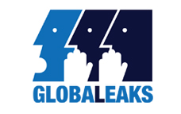
GlobaLeaks è il primo software di Whistleblowing Open Source usato per scopi di contrasto alla corruzione, giornalismo d’inchiesta e tutela dei diritti umani
Il Centro Hermes per la Trasparenza e i Diritti Umani Digitali sta cercando un software engineer per far fronte alle sempre crescenti esigenze e richieste di utilizzatori del software GlobaLeaks da tutto il mondo.
E’ richiesta la conoscenza della tecnologia web e della UX design, in particolare del framework AngularJS e Bootstrap su cui è basata la componente client del software GlobaLeaks.
Il ruolo che stiamo ricercando è molto agile, e avrà opportunità di sviluppo in variegati ambiti sia di roadmap che per progetti di Whistleblowing specifici.
E’ una opportunità di applicare i propri skills collaborando con i fondatori del progetto in tutte le sue fasi e aree, contribuendo in modo propositivo e proattivo, divenendo un membro del team a pieno titolo!
E’ possibile approfondire il progetto GlobaLeaks tramite le seguenti risorse:
- Github https://github.com/globaleaks/globaleaks (Codice)
- Wiki https://github.com/globaleaks/globaleaks/wiki (Documentazione)
- Sito https://globaleaks.org
- Elenco Utilizzatori https://en.wikipedia.org/wiki/GlobaLeaks#Implementations
Competenze richieste
E’ richiesta la conoscenza delle tipiche pratiche e modalità di sviluppo software, in particolare nell’ambito opensource con Github, con una focalizzazione nell’uso delle tecnologie web/HTML5 moderne.
Principali competenze:
- Programmazione Javascript Asincrona
- Design Responsive
- UX Design/Implementation
Principali Tecnologie:
- AngularJS
- Bootstrap
- Github
La conoscenza delle tecnologie precedentemente indicati è necessaria, come lo è la predisposizione a imparare velocemente nuove tecnologie e la conoscenza dei principali di ingegneria del software orientato ad oggetti.
Il ruolo in oggetto è ideale per un neo laureato con già qualche esperienza di sviluppo nel mondo opensource, ma ben si adatta anche a un software engineer che è già orientato ad assumere un ruolo più senior.
Se sei un full-stack developer con conoscenza di Python (framework Twisted), Linux, pacchettizzazione debian, Sqlite, sei un ninja del DevOps, del continuous integration e del end-to-end testing, beh, non potremo che non amarti ancora di più!
Conoscenze linguistiche:
- Inglese (necessario) Nb: il progetto software è portato avanti in lingua inglese
- Italiano (preferito)
Luogo di lavoro
Abbiamo normalmente lavorato a distanza coordinandoci tramite IRC, Skype, Github, ritrovandoci ogni tot settimane per sessioni di lavoro intense (“hackaton”), ma ci stiamo organizzando per aggregarci con un nostro ufficio al centro di Roma, in Largo di Torre Argentina vicino al Pantheon, o Milano in zona Bovisa per migliorare la nostra efficienza, soprattutto vista la quantità di nuovi progetti legati alle pubbliche amministrazioni e ad enti internazionali già a Roma o raggiungibili direttamente in aereo.
Preferiremmo un candidato che già vivesse a Roma o Milano o sia interessato a spostarsi, ma valutiamo anche chi preferisce lavorare a distanza purchè sia operativo durante le ore di lavoro sulla timezone italiana CET/CEST e sia disponibile a viaggiare 1 volta al mese per degli “hackatons” 🙂 .
Il Centro Hermes
Il Centro Hermes per la Trasparenza e i diritti Umani Digitali è una NGO internazionale con base italiana che sviluppa, promuove e diffonde tecnologie per la trasparenza e la tutela dei diritti umani, con un focus particolare sul Whistleblowing e l’anonimato.
Dal 2012 il Centro Hermes lavora sui progetti software GlobaLeaks e Tor2web, supportati dall’Open Technology Fund di Washington, dalla Fondazione Hivos dell’Aia e da diversi progetti di giornalismo, contrasto alla corruzione e tutela dei diritti umani portati avanti da organizzazioni internazionali (Transparency International, Amnesty International, Organized Crime and Corruption Reporting Project, etc).
Come fare application
Per applicare per questa posizione invia il tuo curriculum e un link al tuo profilo Github a jobs@globaleaks.org . Il presente annuncio è pubblicato su http://logioshermes.org/cerchiamo-sviluppatori-per-software-libero-globaleaks
Parte del percorso di recruitment richiederà di smanettare sul codice di GlobaLeaks, per cui sarai molto avantaggiato se già in anticipo prenderai in carico qualche issue github inviando qualche pull request!
Tipologia di contratto:
La tipologia di contatto dipende dalla esperienza del candidato, dalla sua situazione personale, professionale nonchè fiscale, potendo andare da un Tirocino fino a un contratto a tempo indeterminato, da una collaborazione occasionale fino a un contratto di consulenza.
2015-08-23 · News · https://www.hermescenter.org/open-call-for-globaleaks-developers/
Open Call for GlobaLeaks Developers
Are you interested in making the world a better place by putting your development skills to use in a globally used free software project? Do you feel passionate about using web technologies for developing highly usable web applications?
Then read on - this may interest you!
{kind=link}
GlobaLeaks is the first Open Source Anonymous Whistleblowing software used for Anti-Corruption, Investigative Journalism and Human Rights Defense
The Hermes Center for Transparency and Digital Human Rights is looking for talented software developers that can work in response to the ever increasing demands of the growing GlobaLeaks adopters around the world.
To apply for this job you should be familiar with web technologies and in particular with the Angular.js and Bootstrap frameworks, as a Frontend Developer or Full Stack Developer.
You can join a non-profit entity making its platform the most used whistleblowing tool.
The nature of the role is to be flexible in the way we work, with developments ranging from a number of whistleblowing projects based on GlobaLeaks for adopters all around the world up to more structured and “easy to be planned” roadmap based activities.
You will be given an ideal opportunity to fast-track your skills by working side by side our senior development team in all areas of the project lifecycle.
If you are willing to take this challenge, you will be exposed to GlobaLeaks project using AngularJS, and Bootstrap. Knowledge and attention to UX design is paramount.
You can know more of our projects at:
- Github https://github.com/globaleaks/globaleaks (Code)
- Wiki https://github.com/globaleaks/globaleaks/wiki (Documentation)
- Website https://globaleaks.org
- Our (public) users https://en.wikipedia.org/wiki/GlobaLeaks#Implementations
Skills required
It is required to already have practical experience in software development practices with Git, especially in the opensource environment with Github, with a deep focus on modern HTML5/Web technologies.
Key skills:
- Javascript Asynchronous Programming,
- Responsive Design,
- UX Design
Key Technologies:
- AngularJS
- Bootstrap
- Github
Exposure to all the above skills is necessary.The ability to learn quickly, embrace new technologies and have a good understanding of OO principles is essential. This role will suit someone who is fresh out of university, or has a little experience, with a hunger to move into a senior role.
If you’re a full-stack developer using Python/Twisted, Linux, Debian Packaging, Sqlite and DevOps ninja skills, we’d really love you!
Linguistic skills:
- English (Required)
- Italian (Preferred)
Location
We used to mostly work remotely with periodic activity bursts carried on together (“hackatons”), but we are about to move to our own office in the City Center of Rome (Largo di Torre Argentina, nearby Pantheon) or Milan (nearby Bovisa) to achieve higher operational efficiency.
We’d prefer if you live or willing to relocate for the time being in Rome or Milan, but we’d consider remote workers as long as they are operational within the European timezone day-time (CET/CEST).
About the Hermes Center
The Hermes Center for Transparency and Digital Human Rights is an international NGO with Headquarter in Italy that develops, promotes and diffuses technologies for Transparency and Human Rights Defense, with a particular focus on Whistleblowing and Anonymity.
Since 2012 the Hermes Center works on GlobaLeaks and Tor2web Whistleblowing software, with support from Open Technology Fund (Washington), Hivos Foundation (Netherland) and several journalistic, anticorruption and human rights projects by international organizations (ie: Transparency International, Amnesty International, Organized Crime and Corruption Reporting Project, etc).
How you can apply?
To apply send a short notes, a resume, and a link to your Github page to jobs@globaleaks.org.
Part of the recruitment process will require you to hack on GlobaLeaks, so it will constitute a +100 points if you already fixed some github’s issues showing you coding skills with a well done pull request! 🙂
This job post is available at: http://logioshermes.org/open-call-for-globaleaks-developers
Contract
The contract depends on your experience, personal needs ranging from a stage up to an employment contract, from a temporary engagement up to a consulting agreement.
Hermes is an equal opportunity employer and will not discriminate against any employee or applicant on the basis of age, color, disability, gender, national origin, race, religion, sexual orientation, veteran status, or any classification protected by law.
2015-05-21 · News · https://www.hermescenter.org/workshop-vicinolontano-maggio-2015-udine/
Workshop Vicino/Lontano (maggio 2015, Udine)
Sono a disposizione per il download i materiali utilizzati durante i workshop “Sicurezza digitale per neofiti”, nella sezione Digital di Vicino/Lontano.
Il download è gratuito, ma se avete apprezzato particolarmente il nostro impegno, non ci offendiamo se voleste supportare gli obiettivi di Hermes Center con una, anche piccola, donazione.
Grazie per la calorosa partecipazione ed arrivederci, speriamo, alla prossima edizione di Vicino/Lontano.
2015-03-16 · News, Press · https://www.hermescenter.org/consultazione-anac-sul-whistleblowing-posizione-del-centro-hermes/
Consultazione ANAC sul Whistleblowing: Posizione del Centro Hermes
Il Centro HERMES risponde alla consultazione dell’Autorità Nazionale Anticorruzione (ANAC) sul Whistleblowing (Linee guida in materia di tutela del dipendente pubblico che segnala illeciti (c.d. whistleblower)
In seguito riportiamo la risposta del Centro HERMES, inviata attraverso modulo UR104:
Spett.le A.N.AC.,
seguiamo attentamente l’ottimo lavoro che sta svolgendo l’Autorità in un contesto socio-culturale problematico caratterizzato da fenomeni corruttivi di ampia portata, estremamente complessi, difficili da contrastare e ancor più da prevenire con efficacia.
Il nostro apprezzamento, tuttavia, non può essere esteso alle politiche adottate in materia di whistleblowing, in merito alle quali, purtroppo, dobbiamo essere invece particolarmente critici, senza nessun intento polemico ma con puro spirito costruttivo.
Da addetti ai lavori operanti nell’ambito del whistleblowing dal 2010, abbiamo notato in questi mesi un approccio, spiace dirlo, non professionale e non in linea con le indicazioni contenute nelle best practices internazionali di settore, sia dal punto di vista della gestione del flusso che del processo riguardante la sicurezza delle informazioni.
In primo luogo ha destato stupore la scelta di utilizzare, come strumento per ricevere le segnalazioni, il semplice indirizzo e-mail whistleblowing@anticorruzione.it, con evidenti problemi di gestione, coordinamento e centralizzazione del flusso comunicativo pervenuto e di reale garanzia di riservatezza nella trasmissione dei messaggi di posta elettronica (c.d. anonimato tecnologico). Secondariamente appare immediatamente evidente come le linee guida attualmente oggetto di consultazione appaiano una mera interpretazione della norma nei suoi aspetti tecnico-legali e non siano in grado di cogliere l’essenza dell’istituto del whistleblowing, di valorizzarne le peculiarità, facilitarne l’applicazione pratica e in ultima battuta di incentivarne adeguatamente l’uso collettivo per il contrasto della corruzione.
Il ruolo di primissimo livello che l’Autorità nazionale anticorruzione ricopre e il fatto che dall’agosto scorso essa sia, per legge, tra i soggetti competenti a ricevere notizie e segnalazioni di illeciti, generano forti aspettative di indirizzo autorevole anche in tema di whistleblowing.
Le nostre osservazioni vertono su 5 principali problematiche inerenti:
- Il vincolo di verifica dell’identità del segnalante
- Le modalità implementative del sistema Informativo
- La modulistica di segnalazione
- Le tempistiche e le modalità di riscontro al whistleblower
- La mancanza di accountability pubblica del sistema
In seguito le osservazioni elaborate con dovizia di dettaglio:
1. Problematiche inerenti al vincolo di verifica dell’identità del segnalante
L’impostazione generale pare tesa al formale e burocratico soddisfacimento del dettato normativo, la cui cornice effettivamente non è particolarmente felice, senza tuttavia considerare le ripercussioni negative sugli aspetti sostanziali e operativi. Il nodo cruciale riguarda la “validazione” dell’identità del segnalante al fine di accertare il suo status di “dipendente pubblico” che dunque può godere delle tutele stabilite dalla legge mentre “l’invio di segnalazioni anonime e il loro trattamento avviene, comunque, attraverso canali distinti e differenti da quelli approntati per le segnalazioni oggetto delle presenti”.
Pur concordando sul fatto che le segnalazioni anonime non sono da incoraggiare, la volontà di procedere a un’identificazione così puntuale del segnalante (tale da ricomprendere anche qualifica, ruolo ed eventualme richiedere allegati che ne comprovino l’identità) unita all’indeterminatezza del processo di gestione delle segnalazioni anonime ha senza dubbio un effetto deterrente soprattutto nei confronti di soggetti emotivamente deboli, sospettosi nei confronti delle procedure o dei soggetti riceventi, caratterialmente timorosi, male consigliati oppure che semplicemente non se la sentono di fornire per altre motivazioni le proprie generalità.
In questa fase storica, riflettendo sul contesto culturale del nostro Paese e valutando il basso livello di maturità dell’istituto non andrebbe assolutamente preclusa la ricezione di una segnalazione qualitativamente buona, circostanziata seppure inizialmente veicolata in forma anonima: è bene ricordare che disvelare la propria identità in un momento successivo è sempre possibile (solitamente avviene dopo che si è costruito un legame di fiducia tra gli interlocutori) ma non può mai avvenire il contrario. Con l’approccio oggi proposto, dal punto di vista del whistleblower non vi sarebbero sostanziali differenze percepite fra l’effettuare una segnalazione “dichiarando la propria identità” all’A.N.A.C. e lo sporgere una denuncia presso le autorità.
Anni di esperienza in materia di whistleblowing maturati a contatto con autorevoli organizzazioni internazionali ci consentono di affermare che la grande maggioranza dei segnalatori che dialogano a mezzo elettronico, prima condividono anonimamente informazioni utili, come fonti informative discrete e solo in seguito, dopo un dialogo e riscontro continuo e iterativo sulla validazione e investigazione, acquisendo fiducia nei riguardi del soggetto a cui hanno segnalato, arrivano a dichiarare la propria identità.
Il processo sopra descritto, logico, umano e ragionevole, non è in alcun modo supportato dalle linee guida proposte.
L’Italia, come è stato sottolineato durante il G20 dello scorso giugno e ribadito diverse volte dal Garante Privacy con comunicaizoni ufficiali al Parlamento e al Governo, non ha ancora una regolamentazione che tuteli i dipendenti privati: potrebbe essere l’occasione per fornire un’interpretazione estensiva. [Rif. Linee Guida - Parte II punti 2,3,4].
2. Problematiche inerenti alle modalità implementative del sistema Informativo
Apprendiamo dalle linee guida che l’Autorità prevede un regime transitorio “atteso che l’attuazione del sistema informatico per la gestione delle segnalazioni sarà completato nel medio termine a motivo della sua complessità tecnica”. Ciò ci porta a pensare che sia in atto un progetto di sviluppo software di una piattaforma che richiede parecchie risorse e probabilmente utilizza tecnologie proprietarie (considerando anche le modalità informatiche con cui è organizzata la raccolta di queste osservazioni…).
Sinceramente siamo molto rammaricati nel constare che quella che crediamo essere un’eccellenza italiana nel mondo non possa proprio esservi d’aiuto: nemo propheta in patria! La nostra associazione no-profit è impegnata da circa 5 anni nel contrasto alla corruzione attraverso la produzione e la diffusione di tecnologie innovative adottate, ad oggi, in oltre 18 Paesi nel mondo.
Il Centro Studi Hermes, fra i fondatori del Whistleblowing International Network (WIN) e co-organizzatori dell’International Whistleblowers Conference, nasce a seguito dell’incontro tra esperti di sicurezza informatica, programmatori, giuristi, avvocati e consulenti con l’intento di sviluppare sistemi che sfruttino la tecnologia come potente fattore abilitante nel contrastare la corruzione e promuovere la trasparenza. Siamo gli autori del primo e unico software libero e gratuito di whistleblowing, GlobaLeaks, utilizzato per ricevere e gestire segnalazioni garantendo, all’occorrenza, anche l’anonimato tecnologico della fonte.
Nonostante il Centro Hermes sia interamente italiano, la ricerca e lo sviluppo del progetto, iniziati nel dicembre del 2010, sono interamente finanziati da sostenitori esteri quali l’Open Technology Fund di Washington (che fa riferimento al Congresso USA) e l’Hivos Foundation (connesso al Ministero Affari Esteri olandese). Ad oggi sono oltre 20 le installazioni effettuate e in questi mesi abbiamo lavorato a fianco di Transparency International Italia al portale Allerta Anticorruzione (ALAC) che sta dando ottimi risultati; proprio la settimana scorsa inoltre è stata lanciata la prima piattaforma di whistleblowing francese “Source Sure” basata su GlobaLeaks con Le Monde a fare da capofila ad altri prestigiosi media d’oltralpe.
Prossimi ambiti di utilizzo di GlobaLeaks nell’ambito anticorruzione sono l’East Africa Anticorruption Authority Association, che riunisce 8 autorità nazionali anticorruzione africane, e l’agenzia nazionale per gli appalti pubblici delle Filippine, coordinata da Transparency International Filippine.
A corredo di quanto sopra è utile sottolineare come tutte le P.A., ai sensi dell’art. 68 22 del Codice di Amministrazione Digitale “dovrebbero acquisire programmi informatici o parti di essi nel rispetto dei principi di economicità e di efficienza, tutela degli investimenti, riuso e neutralità tecnologica, a seguito di una valutazione comparativa di tipo tecnico ed economico tra le seguenti soluzioni disponibili sul mercato” portando a risultati virtuosi sia in termini economici che di miglioramento costante del processo. [Rif. Linee Guida - Parte III punto 4.2.1].
Riteniamo che A.N.A.C. prima che indirizzare progettualità e appalti per lo sviluppo di piattaforme informatiche proprietarie, probabilmente molto costose e non orientate al riuso, debba guardare alle esperienze italiane di rilevanza internazionale, migliorando la base software open source GlobaLeaks, favorendo lo sviluppo di un ecosistema di ricerca e sviluppo trasparente e scientificamente validato, anche in collaborazione con l’accademia e le comunità di supporto del software libero.
3. Problematiche inerenti alla modulistica di segnalazione
Il “Modulo per la segnalazione whistleblowing” di cui all’All. 2 è ampiamente migliorabile poiché prevede solo un ristretto numero di dati strutturati: ciò consente l’ingresso nel sistema di un elevato numero di segnalazioni qualitativamente non adeguate e potenzialmente di tipo delatorio.
La nostra esperienza internazionale maturata lavorando accanto a organizzazioni che gestiscono migliaia di casi reali, anche molto differenti tra di loro, ci ha permesso di acquisire perfezionare i sistemi di filtraggio atti a ridurre la quantità di segnalazioni non pertinenti abilitando anche funzionalità statistiche e metodi intelligenti di instradamento delle stesse.
Sottolineiamo come una modulistica semplicistica come quella riportata non consenta l’implementazione di sistemi informativi dotati di meccanismi di instradamento intelligente e/o di educazione lungo il processo di segnalazione e/o di analisi statistiche di dettaglio o aggregate volte all’introduzione di meccanismi di accountability.
4. Problematiche inerenti alle tempistiche e alle modalità di riscontro al whistleblower
Il termine con cui si intende dare riscontro ai segnalati è da ritenersi eccessivo (“90/120 giorni dalla ricezione delle medesime segnalazioni”) e le modalità adottate non risultano corrette sia da un punto di vista concettuale poiché riteniamo sia l’Autorità a dover in modo proattivo dare riscontro al segnalante e non viceversa, sia per ciò che concerne le modalità insicure di comunicazione attraverso lo strumento della posta elettronica (“Solo alla scadenza del predetto termine sarà possibile chiedere informazioni in ordine allo stato della segnalazione inviata, utilizzando l’indirizzo whistleblowing@anticorruzione.it”). [Rif. Linee Guida - Parte III punto 4.2.1].
Riteniamo che il riscontro al segnalante debba essere fornito in tempo reale rispetto agli avanzamenti di gestione del caso, senza che questi debba di sua sponte sollecitare un riscontro e attraverso l’uso mezzi di comunicazione sicura.
5. Problematiche inerenti alla mancanza di accountability pubblica del sistema
Non è prevista alcuna forma di accountability pubblica del sistema, tramite l’implementazione di tecniche di trasparenza e analisi di dati aperti (c.d. open data): il Centro Studi Hermes sta pianificando una collaborazione con il Centro Nexa per rendere le procedure di whistleblowing verificabili dall’opinione pubblica.
Il pubblico, e quindi anche il whistleblower, non sarebbe in grado di conoscere né quante segnalazioni sono state accolte dal sistema né quali sono state le tempistiche di gestione oltre agli esiti delle stesse.
Solo tramite l’implementazione di sistemi di accountability pubblica è possibile guadagnare la fiducia del whistleblower. Diversamente essi saranno portati a considerare il sistema di segnalazione A.N.AC. non trasparente, non affidabile e inefficiente.
Conclusioni
In qualità di membri della società civile, intendiamo con queste osservazioni proseguire il nostro impegno dando un contribuito fattivo a quella che pensiamo essere una causa comune.
Auspichiamo che l’A.N.AC., che sta svolgendo un lavoro enorme e preziosissimo per contrastare la corruzione, non si lasci sfuggire l’opportunità di sfruttare gli immensi benefici a vantaggio di tutta la collettività che corretti sistemi di gestione delle segnalazioni sono in grado di fornire.
L’impostazione attuale delle linee guida è altamente disincentivante e rischia di soffocare il Whistleblowing sul nascere.
Fiduciosi di potere ottenere un riscontro in merito a quanto sopra esposto, rimaniamo a vostra disposizione per approfondimenti.
Centro Studi Hermes per la Trasparenza e i Diritti Umani Digitali
Alessandro Rodolfi - Membro del Board
Fabio Pietrosanti - Presidente
Marco Calamari - Membro del Board
2014-10-15 · News · https://www.hermescenter.org/e-privacy-2014-internet-delle-cose/
E-PRIVACY 2014 - INTERNET DELLE COSE
Cagliari (MEM, via Mameli 164), 17-18 OTTOBRE 2014
Droni, sensori, maker e privacy in mondo interconnesso nel prestigioso convegno nazionale.
Internet delle cose (Internet of Things, IoT), droni, cybercontrollo e sicurezza al centro dell’edizione autunnale di “E-privacy 2014”, l’evento di rilevanza nazionale che anticipa, a volte di anni, la maggior parte delle tematiche sulla tutela della privacy in rete. Il convegno, la cui edizione estiva da dodici anni si tiene a Palazzo Vecchio, a Firenze, per la prima volta si svolge a Cagliari, alla Mem (Mediateca del Mediterraneo, in via Mameli 164), venerdì 17 e sabato 18 ottobre 2014. In Sardegna arrivano gli specialisti del campo e i massimi esperti italiani di sicurezza informatica, a partire da Raoul “Nobody” Chiesa, uno dei primi hacker italiani di chiara fama internazionale e tra le massime autorità della sicurezza digitale.
Tra gli ospiti: Raoul CHIESA, Anna MASERA, Carlo BLENGINO, Lucio FERELLA, Fulvio SARZANA, Marco CIURCINA
Per maggiori informazioni: http://e-privacy.winstonsmith.org/
2014-10-14 · News · https://www.hermescenter.org/alac-anticorruzione-whistleblowing-hermes/
Nasce il portale ‘allerta anticorruzione - ALAC’
14 Ottobre 2014
Nasce oggi il portale “Allerta Anticorruzione - ALAC” di Transparency International Italia, con la collaborazione di Hermes Center for Transparency and Digital Human Rights.
Transparency International Italia, sede italiana della più importante ONG per la lotta alla corruzione e la promozione della trasparenza, presenta oggi l’innovativo servizio “Allerta Anticorruzione – ALAC”.
Allerta Anticorruzione – ALAC, ideato e gestito da Transparency International Italia con la collaborazione di Hermes Center for Transparency and Digital Human Rights, è un portale web per raccogliere in modo totalmente anonimo e protetto le segnalazioni dei cittadini testimoni o vittime di casi di corruzione in Italia.
Obiettivo di “Allerta Corruzione – ALAC” è quello di assistere chi decide di segnalare episodi di corruzione, guidandolo nel percorso più sicuro e più appropriato.
La piattaforma implementa l’uso uso del software GlobaLeaks, specificatamente progettato per proteggere l’identità del whistleblower e del receiver nello scambio di materiale riservato.
Per maggiori informazioni:
* ALAC: https://www.
* Transparency International Italia: https://www.transparency.it/
* Globaleaks: http://globaleaks.org
2014-09-24 · News · https://www.hermescenter.org/globaleaks-python-coders/
Globaleaks needs YOU: python coders
Call for Python coders! GlobaLeaks is searching for brave and creative volunteers wanting to experiment with switching from “Python-Gnupg” (that’s the gpg based python implementation, basically execute GPG) to OpenPGP-Python that’s a pure python implementation (https://github.com/singpolyma/OpenPGP-Python)
It’s a challenging python specific set of activities that would replace currently used python-gnupg functionalities with openpgp-python ones!
Contact us: volunteer@logioshermes.org
[ITA]
Python coders, qualcuno vuole aiutare il progetto GlobaLeaks provando a rimpiazzare l’attuale implementazione python-gnupg (che wrappa gpg eseguendolo) con OpenPGP-Python che invece è pure python?
https://github.com/singpolyma/OpenPGP-Python
Contatto: volunteer@logioshermes.org
2014-06-10 · News · https://www.hermescenter.org/expoleaks-whistleblowing-expo2015/
ExpoLeaks, the first whistleblowing platform for Expo 2015
June 10, 2014
ExpoLeaks, the first whistleblowing platform for Expo 2015
The platform allows anonymous leakers to share information about shady practices linked to the Milan Universal Exposition with a team of investigative journalists at IRPI.
Italy’s centre of investigative reporting IRPI (Investigative Reporting Project Italy) is launching ExpoLeaks, the first independent whistleblowing platform for anonymous reports of corruption linked to the multimillion euro contract for the infrastructures of the Expo international exhibition scheduled to open May 1st 2015 in Milan, Italy.
Following the wave of arrests of March 2014, when public officials, managers and a former MP were arrested, Italy is ravelled once again in scandal for mismanagement of public funding. This is why ExpoLeaks is needed: a project combining investigative journalism and technology to fight the corruption harming honest entrepreneurship and the common good.
ExpoLeaks www.expoleaks.it is designed to provide an opportunity to anybody working with the Universal Exhibition, from citizens to public officials, from workers to top managers, from volunteers to entrepreuners.
Anyone will be now able and share information and records on possible illegalities or wrongdoings anonymously and securely. This way, citizens will be given a chance of directly taking part to the transparent setting of the construction process for the Expo exhibition.
The leaks will be evaluated by a team of investigative journalists from IRPI. Those leaks considered important, will be unrolled into news and investigation to be displayed on ExpoLeaks website and published on different outlets, starting with Wired Italy, the project’s media partner of the project. The anonymity of the source is assured by both the Globaleaks software technology for leaking platforms along with the using of Tor browser, as well as from the professionalism and integrity of IRPI’s team of journalists.
The whistleblower, by sharing information and evidences, will allow the reporters to verify the leak accuracy for ExpoLeaks to inform the public in a transparent way.
ExpoLeaks was born from the joint efforts of two Italian experience unique in their kind. Conceived and managed by the first Italian center for investigative journalism, IRPI (Investigative Reporting Project Italy) and made possible thanks to the technology of the Hermes Center for Transparency and Digital Human Rights.
The project was launched with the support of Wired Italy and is supported by a crowdfunding campaign launched on Kriticalmass:
www.kriticalmass.com/p/expoleaks
2014-06-10 · News · https://www.hermescenter.org/expoleaks-expo2015-whistleblowing-trasparenza/
Al via ExpoLeaks la prima piattaforma per la trasparenza di Expo 2015
10 Giugno, 2014
Al via ExpoLeaks la prima piattaforma per la trasparenza di Expo2015.
Per la prima volta chiunque potrà segnalare illeciti e corruzione in totale anonimato a
un team indipendente di giornalisti di inchiesta coordinati da IRPI.
Il centro di giornalismo di inchiesta IRPI (Investigative Reporting Project Italy) lancia oggi ExpoLeaks, la prima piattaforma web indipendente di whistleblowing anonimo dedicata a raccogliere segnalazioni su episodi di corruzione legati alla realizzazione di Expo2015.
A seguito dell’ondata di arresti avvenuti a marzo 2014 che ha coinvolto numerosi persone del
circuito Expo, il paese è stato travolto dall’ennesimo scandalo di malagestione di opere pubbliche. È per questo che crediamo ci sia un reale bisogno di ExpoLeaks, un progetto che fonde giornalismo e tecnologia per favorire la trasparenza e contrastare la corruzione che danneggia l’imprenditoria onesta e la cosa pubblica.
ExpoLeaks è concepita per dare uno spazio a tutti coloro che sono coinvolti nella mostra universale, dai cittadini ai funzionari pubblici, dagli operai ai dirigenti, dai volontari agli imprenditori.
Chiunque potrà ora condividere, in modo completamente anonimo e sicuro, informazioni e documenti relativi a possibili irregolarità e forme di illecito. Tutti i cittadini potranno così contribuire al corretto svolgimento dell’Esposizione Universale.
Le segnalazioni saranno vagliate da un team di giornalisti d’inchiesta di IRPI. Il team svilupperà news e inchieste pubblicate poi sul sito di ExpoLeaks e su varie testate, in primis Wired Italia, che è media partner del progetto. L’anonimato di coloro che inviano la propria segnalazione è garantito dal software GlobaLeaks e dall’utilizzo del browser Tor per l’accesso alla piattaforma, nonché dall’alto profilo professionale del team di giornalisti.
La fonte anonima, condividendo non solo informazioni ma anche prove documentali, consentirà ai giornalisti di verificarne la veridicità e di informare i cittadini in maniera trasparente.
ExpoLeaks è nato grazie allo sforzo congiunto di due esperienze italiane uniche nel loro genere. Concepito e gestito dal primo centro di giornalismo di inchiesta italiano IRPI (Investigative Reporting Project Italy) e reso possibile grazie alla tecnologia del Centro Hermes per la trasparenza e i diritti umani digitali.
Il progetto, avviato grazie al sostegno di Wired Italia, punta alla sostenibilità attraverso una
campagna di crowdfunding già attiva sulla piattaforma Kriticalmass: www.kriticalmass.com/p/expoleaks
2014-03-29 · News · https://www.hermescenter.org/nawaatleaks-whistleblowing-hermes/
Nasce Nawaatleaks, la prima iniziativa di whistleblowing del mondo arabo
Nawaat lancia Nawaatleaks, la prima iniziativa di whistleblowing del mondo arabo.
Nawaatleaks ha lo scopo di promuovere la trasparenza e combattere la corruzione. E’ realizzata mediante l’uso della piattaforma Globaleaks, accessibile anonimamente tramite Tor, ed è disponibile in lingua Araba e Francese .
Nawaat è un blog tunisino co-fondato nel 2004 da Sami Ben Gharbia, Sufian Guerfali and Riadh Guerfali. Obiettivo del progetto è quello di supportare la libera espressione di voci dissidenti e stimolare il dibattito su temi di natura sociale. Durante gli avvenimenti che hanno portato alla rivoluzione tunisina del 2011, Nawaat ha informato la società dei rischi di tracciamento ed identificazione connessi con l’utilizzo di servizi web ed invitato all’utilizzo di strumenti di evasione della censura. Tra le attività degne di nota, Nawaat ha avviato nel 2010 l’iniziativa TuniLeaks al fine di diffondere, tradotti.i documenti WikiLeaks relativi alla Tunisia.
2013-10-07 · News · https://www.hermescenter.org/irpileaks-italian-anonymous-leaking-investigative-journalism/
IRPILEAKS, first Italian platform for anonymous leaking to investigative journalism
IRPILEAKS, first Italian platform for anonymous leaking to investigative journalism
IRPILEAKS is the first Italian platform for anonymous leaking that protects the identity of whistleblowers thanks to Tor network through a specific application called GlobaLeaks. IRPILEAKS was developed by the journalism centre ‘Investigative Reporting Project Italy’ and was supported by the ‘Hermes Center for Transparency and Digital Human Rights’, engineers of GlobaLeaks.
Are you aware of any wrongdoing in the public administration sector, of rigged procurements, scams, frauds, corruption, unreported environmental disasters or, last but not least, organised crime networks and related activities? You wish to denounce any of the above to the public but you are scared for your own safety or that of your family? Or even just afraid of losing your job? Are you, in a word, a potential whistleblower but you don’t know how to do it? Try IRPILEAKS!
IRPILEAKS is the first Italian platform for anonymous leaking that protects the identity of whistleblowers thanks to the Tor network, through a specific whistleblowing free-software solution called GlobaLeaks.
IRPILEAKS originates from the union of GlobaLeaks digital technology and the wish of the ‘Investigative Reporting Project Italy (IRPI), the first transnational centre of investigative journalism in Italy, which has decided to launch an investigative journalism endeavour aimed at collecting anonymous leaks from whistleblowers. This has been possible thanks to the “Hermes Center for Transparency and Digital Human Rights”, creator of GlobaLeaks, a centre promoting the awareness of and the attention to transparency and accountability in human society.
IRPILEAKS has an Italian soul, but leaking is welcome from all-over the world. We favour leaks that deal with more than one country, and those that have some connections to Italy. However, no leaks will be underestimated on a geographical basis. Leaks will be judged on their level of reliability and decree of importance for the public interest. Leaks can be submitted in any language, although English and Italian are the ones chosen for the submittal platform.
IRPILEAKS is a tool for those who want to leak staying anonymous and safe.
Lorenzo Bodrero, IRPILEAKS’ coordinator, believes “a leaker can be crucial for investigative journalism. There are cases where only the leaks of courages people can expose wrongdoings among politicians, institutions or corporations or the hiding of crucial information to the public. Whistleblowers”, adds Bodrero “can be a pillar of inspiration for journalism acting as watchdog to democracy, especially if we talk about a democracy like the Italian one, at high risk of corruption and mafia infiltration.”
Italy is one of those places where ‘blowing the whistle’ can be a dangerous practice. IRPILEAKS allows whistleblowers to do that without retaliation of any kind. That’s possible because, through IRPILEAKS, built using free software GlobaLeaks, anybody can pass information to IRPI’s journalists in a totally confidential and anonymous way. However, the anonymity of the source is inextricably linked to the use of Tor browser, an renown technology that allows digital protection of anonymity. Instructions on the use of IRPILEAKS and Tor can be found on a specific section of IRPI’s website.
Claudio Agosti, President of Hermes Center, explains “GlobaLeaks is the first free-software to have been invented for the protection of the sources of leaks. The goal is that of abating the barriers that can prevent whistleblowing practice from happening. Some time ago, we noticed how the web could potentially reach all those people who are afraid of denouncing wrongdoings, maybe because blackmailed or under a ‘code of silence’, or simply those who have lost hope and are not furthermore able to see a solution to problems. Technology cannot provide a solution either, but it surely can help the person by allowing a secure bridge with those who can listen and investigate upon raised issues, if they fall within public interest.”
Every great leak, before being fed to the public, undergoes a careful fact-checking process by journalists. Information that will be leaked to IRPI through IRPILEAKS will undergo a similar treatment and only those leaks considered of public interest will spark journalistic investigations to be then published on mainstream media.
In order to help the project with self-sustenance, IRPI has launched a crowdfunding campaign on Idiegogo, that will cover basic costs of the hosting server as well as advertisement.
Contacts:
www.irpi.eu
cecilia.ferrara@irpi.eu
2013-10-07 · News · https://www.hermescenter.org/irpileaks-whistleblowing-anonimo-giornalismo/
Nasce IRPILEAKS, prima piattaforma italiana di whistleblowing anonimo a supporto del giornalismo d’inchiesta
Nasce IRPILEAKS, prima piattaforma italiana di whistleblowing anonimo a supporto del giornalismo d’inchiesta
IRPILEAKS è la prima piattaforma italiana di segnalazione anonima che, usando il sistema di navigazione Tor, grazie al software libero GlobaLeaks creato dal Centro Studi Hermes per la trasparenza e i diritti umani in rete, permette a chiunque di informare i giornalisti dell’Investigative Reporting Project Italy rimanendo anonimi e protetti.
Sei a conoscenza di illeciti nella pubblica amministrazione, appalti truccati, truffe, frodi, episodi di corruzione, disastri perpetuati a livello ambientale, reti di criminalita organizzata e relativi crimini, abusi e soprusi? Vuoi denunciarli all’opinione pubblica ma temi per la tua incolumità o per possibili ripercussioni sulla tua vita personale e lavorativa? Sei insomma una potenziale “gola profonda” ma non sai come fare? Da oggi puoi svelare informazioni in tutta sicurezza ad una squadra di giornalisti investigativi, i giornalisti di IRPI, primo centro di giornalismo d’inchiesta transnazionale in Italia.
IRPILEAKS è la prima piattaforma italiana di segnalazione anonima che, usando il sistema di navigazione Tor, grazie al software libero GlobaLeaks creato dal Centro Studi Hermes per la trasparenza e i diritti umani in rete, permette a chiunque di informare i giornalisti dell’Investigative Reporting Project Italy (IRPI) rimanendo anonimi e protetti.
IRPILEAKS è uno strumento pensato per chi vuole mandare informazioni “confidenziali” e ha bisogno di restare anonimo e protetto.
“Nel giornalismo investigativo la figura del ‘leaker’, cioè della cosiddetta ‘gola profonda’, è fondamentale – spiega Lorenzo Bodrero, il coordinatore di IRPILEAKS – in alcuni casi solo i ‘leaks’ di persone coraggiose possono rivelare comportamenti scorretti di politici o uomini di potere o tentativi di insabbiare informazioni importanti per la cittadinanza. I whistleblowers, conosciuti in italiano come ‘vedette civiche’, possono giocare un ruolo fondamentale per quei giornalisti che agiscono come ‘cani da guardia’ della democrazia, tanto più se parliamo di una democrazia alle volte corrotta e ad alto rischio di infiltrazione mafiosa come quella italiana”.
L’Italia è infatti uno di quei luoghi dove è particolarmente pericoloso ‘soffiare il fischietto’. IRPILEAKS permette di evitare esposizioni mediatiche o ritorsioni verso coloro che decidano di farlo. Con la piattaforma di segnalazione IRPILEAKS, costruita grazie al software GlobaLeaks progettato dal Centro Studi Hermes, è possibile fare segnalazioni in forma confidenziale o anonima. L’anonimità dell’informatore è legata all’utilizzo di Tor, tecnologia all’avanguardia per quanto riguarda la protezione digitale dell’anonimato.
GlobaLeaks è “La prima piattaforma realizzata in software libero, che ha l’obiettivo di abbattere le barriere che ostacolano la creazione di iniziative di whistleblowing” dice Claudio Agosti, presidente di Hermes, “Abbiamo notato anni fa che la rete avrebbe potuto raggiungere tutte quelle persone che soffrono silenziosamente l’omertà, che hanno perso la speranza di poter risolvere i problemi che li circondano. La tecnologia non può risolvere di certo questi problemi, ma può almeno agevolare la persona che vuole raggiungere chi è disposto ad ascoltarlo e a indagare sul suo caso, per comprendere se è nel pubblico interesse”.
Non esiste grande leak che non abbia avuto, prima della sua presentazione al pubblico, un grande lavoro giornalistico di fact-checking alle spalle. Le informazioni che verranno sottoposte a IRPI tramite la piattaforma IRPILEAKS verranno quindi accuratamente studiate e solo le segnalazioni ritenute di interesse pubblico verranno affrontate e presentate sotto forma di inchieste giornalistiche da veicolare attraverso i media mainstream.
Sul sito di IRPI alla sezione “INFORMACI” troverete tutte le informazioni sul software e una guida sui rischi connessi al leaking e sui comportamenti da adottare per proteggere la propria identità.
Per sostenere il progetto, IRPI ha ideato una campagna di fundraising su Indiegogo per raccogliere contributi destinati a coprire i costi di base del progetto, come il noleggio del server sicuro su cui poggia la piattaforma e le spese promozionali per pubblicizzare l’iniziativa.
Contacts:
www.irpi.eu
cecilia.ferrara@irpi.eu
2013-09-23 · News · https://www.hermescenter.org/hermes-center-invita-italia-proteggere-privacy-sorveglianza-internet/
Hermes Center invita l’Italia a proteggere la propria privacy dalla sorveglianza incontrollata di Internet
IL CENTRO HERMES PER LA TRASPARENZA E I DIRITTI UMANI DIGITALI INVITA L’ITALIA A PROTEGGERE LA PROPRIA PRIVACY DALLA SORVEGLIANZA INCONTROLLATA DI INTERNET
GINEVRA, 23 Settembre 2013 Oggi il Centro Hermes per la Trasparenza e i diritti umani digitali si unisce a una grande coalizione internazionale che invita, in ogni nazione, a valutare se le leggi e le attività di sorveglianza nazionali siano in linea con gli obblighi internazionali sui diritti umani.
Il Centro Hermes ha aderito ad una serie di principi internazionali contro la sorveglianza incontrollata. I 13 principi espongono per la prima volta un quadro di valutazione delle pratiche di sorveglianza nel contesto degli obblighi internazionali sui diritti umani.
Un gruppo di associazioni della società civile ha presentato ufficialmente i 13 principi lo scorso Venerdì a Ginevra in un evento a cui ha partecipato Navi Pillay, l’Alto Commissario delle Nazioni Unite per i Diritti Umani e il Relatore speciale delle Nazioni Unite sulla libertà di espressione e di opinione, Frank LaRue, durante la 24° sessione del Consiglio dei diritti umani. L’evento è stato ospitato dalle Missioni Permanenti di Austria, Germania, Liechtenstein, Norvegia, Svizzera e Ungheria.
<<Siamo fiduciosi che grazie ad iniziative come questa si riusciranno presto a regolamentare adeguatamente i sistemi di sorveglianza attualmente disponibili, ponendo un freno alle continue invasioni della privacy a cui stiamo assistendo>> afferma Davide Del Vecchio, fondatore del Centro Hermes per la Trasparenza ed i Diritti Umani Digitali. <<Il libero sviluppo e la libertà d’espressione non possono essere frenati dal timore di essere continuamente sorvegliati ma vanno invece supportati tramite un aumento della trasparenza ed una libera circolazione delle informazioni>> conclude.
Navi Pillay, l’Alto Commissario delle Nazioni Unite per i diritti umani, intervenendo al Consiglio dei diritti dell’uomo ha dichiarato nel suo discorso di apertura il 9 settembre:
“Devono essere adottate delle leggi e delle politiche per affrontare il drammatico rischio di intrusioni nella vita privata delle persone che sono state rese possibili dalle moderne tecnologie di comunicazione.”
Navi Pillay, l’Alto Commissario delle Nazioni Unite per i diritti umani, intervenendo alla manifestazione, ha inoltre affermato che:
“I progressi tecnologici sono stati potenti strumenti per la democrazia, dando a tutti una maggiore possibilità di prendere parte in maniera attiva alla società, tuttavia il crescente utilizzo del data mining da parte delle agenzie di intelligence sfoca la linea di demarcazione tra la sorveglianza legittima e la sorveglianza di massa arbitraria.”
Frank La Rue, relatore speciale delle Nazioni Unite sulla libertà di espressione e di opinione ha affermato chiaramente quale sia il rapporto diretto tra la sorveglianza dello stato, la privacy e la libertà di espressione in questo ultimo rapporto al Consiglio dei diritti umani:
“Il diritto alla privacy è spesso inteso come un requisito essenziale per la realizzazione del diritto alla libertà di espressione. L’indebita interferenza con la vita privata può direttamente e indirettamente limitare il libero sviluppo e lo scambio di idee. Una violazione di un diritto può essere sia la causa che la conseguenza di una successiva violazione” .
Parlando all’evento, il Relatore Speciale delle Nazioni Unite ha osservato che :
“Prima i controlli venivano effettuati su base mirata, ma Internet ha cambiato il contesto, offrendo la possibilità di effettuare una sorveglianza di massa. Ed il rischio è proprio questo.”
Partecipano all’evento i rappresentati di Hermes Center, Privacy International, Electronic Frontier Foundation, Access, Human Rights Watch, Reporters Without Borders, Association for Progressive Communications, e di Center for Democracy and Technology.
Per saperne di più sui principi: https://NecessaryandProportionate.org
CONTATTI
NGO ATTUALMENTE PRESENTI A GINEVRA PER IL 24° CONSIGLIO DEI DIRITTI UMANI
Access Now
Fabiola Carrion - fabiola@accessnow.org
Association for Progressive Communication
Shawna Finnegan - shawna@apc.org
Center for Democracy and Technology
Matthew Shears - mshears@cdt.org
Electronic Frontier Foundation
Katitza Rodriguez - katitza@eff.org - @txitua
Human Rights Watch
Cynthia Wong - wongc@hrw.org
Privacy International
Carly Nyst - carly@privacy.org
Reporters Without Borders
Lucie Morillon - lucie.morillon@rsf.org
Hélène Sackstein - helsack@gmail.com
FIRMATARI
Argentina
Ramiro Alvarez - rugarte@adc.org.ar
Asociación por los Derechos Civiles
Argentina
Beatriz Busaniche - bea@vialibre.org.ar
Fundación Via Libre
Colombia
Carolina Botero - carobotero@gmail.com
Fundación Karisma
Egypt
Ahmed Ezzat - ahmed.ezzat@afteegypt.org
Afteegypt
Honduras
Hedme Sierra-Castro - hedme.sc@gmail.com
ACI-Participa
India
Elonnai Hickok - elonnai@cis-india.org
Center for Internet and Society
Italy
Davide Del Vecchio - davide.delvecchio@logioshermes.org
Hermes Center for Transparency and Digital Human Rights
Korea
Prof. Park - kyungsinpark@korea.ac.kr
Open Net Korea
Macedonia
Bardhyl Jashari - info@metamorphosis.org.mk
Metamorphosis Foundation for Internet and Society
Mauritania, Senegal, Tanzania
Abadacar Diop - jonction_jonction@yahoo.fr
Jonction
Portugal
Andreia Martins - andreia@coolpolitics.pt
ASSOCIAÇÃO COOLPOLITICS
Peru
Miguel Morachimo - morachimo@gmail.com
Hiperderecho
Russia
Andrei Soldatov - soldatov@agentura.ru
Agentura.ru
Serbia
Djordje Krivokapic - krivokapic@gmail.com
SHARE Foundation
Western Balkans
Valentina Pellizer - valentina.pellizzer@oneworldsee.org
Oneworldsee
Brasil
Marcelo Saldanha - instituto@bemestarbrasil.org.br
IBEBrasil
2013-09-23 · News · https://www.hermescenter.org/hermes-center-italy-protect-privacy-against-internet-surveillance/
Hermes Center calls upon Italy to protect privacy against unchecked internet surveillance
HERMES CENTER FOR TRASPARENCY AND DIGITAL HUMAN RIGHTS CALLS UPON ITALY TO PROTECT PRIVACY AGAINST UNCHECKED INTERNET SURVEILLANCE
GENEVA, 23 SEPTEMBER 2013 Today Hermes Center for Trasparency and Digital Human Rights joins a huge international coalition in calling upon Italy to assess whether national surveillance laws and activities are in line with their international human rights obligations.
Hermes Center has endorsed a set of international principles against unchecked surveillance. The 13 Principles set out for the first time an evaluative framework for assessing surveillance practices in the context of international human rights obligations.
A group of civil society organizations officially presented the 13 Principles this past Friday in Geneva at a side event attended by Navi Pillay, the United Nations High Commissioner for Human Rights and the United Nations Special Rapporteur on Freedom of Expression and Opinion, Frank LaRue, during the 24th session of the Human Rights Council. The side event was hosted by the Permanent Missions of Austria, Germany, Liechtenstein, Norway, Switzerland and Hungary.
<<We are confident that through initiatives like this, it will soon be possible to properly regulate the available surveillance systems, and slow down the continuous privacy invasions that we are currently observing>> affirms David Del Vecchio, founder of the Center for Transparency and Hermes Human Rights Digital. <<The free development and the freedom of expression can not be restrained by the fear of being constantly monitored but should be supported through increased transparency and a free flow of information>>.
Navi Pillay, the United Nations High Commissioner for Human Rights, speaking at the Human Rights Council stated in her opening statement on September 9:
“Laws and policies must be adopted to address the potential for dramatic intrusion on individuals’ privacy which have been made possible by modern communications technology.”
Navi Pillay, the United Nations High Commissioner for Human Rights, speaking at the event, said that:
“technological advancements have been powerful tools for democracy by giving access to all to participate in society, but increasing use of data mining by intelligence agencies blurs lines between legitimate surveillance and arbitrary mass surveillance.”
Frank La Rue, the United Nations Special Rapporteur on Freedom of Expression and Opinion made clear the case for a direct relationship between state surveillance, privacy and freedom of expression in this latest report to the Human Rights Council:
“The right to privacy is often understood as an essential requirement for the realization of the right to freedom of expression. Undue interference with individuals’ privacy can both directly and indirectly limit the free development and exchange of ideas. … An infringement upon one right can be both the cause and consequence of an infringement upon the other.”
Speaking at the event, the UN Special Rapporteur remarked that:
“previously surveillance was carried out on targeted basis but the Internet has changed the context by providing the possibility for carrying out mass surveillance. This is the danger.”
Representatives of Hermes Center, Privacy International, the Electronic Frontier Foundation, Access, Human Rights Watch, Reporters Without Borders, Association for Progressive Communications, and the Center for Democracy and Technology all are taking part in the event.
Find out more about the Principles at https://NecessaryandProportionate.org
CONTACTS
NGOs CURRENTLY IN GENEVA FOR THE 24TH HUMAN RIGHTS COUNCIL
Access Now
Fabiola Carrion - fabiola@accessnow.org
Association for Progressive Communication
Shawna Finnegan - shawna@apc.org
Center for Democracy and Technology
Matthew Shears - mshears@cdt.org
Electronic Frontier Foundation
Katitza Rodriguez - katitza@eff.org - @txitua
Human Rights Watch
Cynthia Wong - wongc@hrw.org
Privacy International
Carly Nyst - carly@privacy.org
Reporters Without Borders
Lucie Morillon - lucie.morillon@rsf.org
Hélène Sackstein - helsack@gmail.com
SIGNATORIES
Argentina
Ramiro Alvarez - rugarte@adc.org.ar
Asociación por los Derechos Civiles
Argentina
Beatriz Busaniche - bea@vialibre.org.ar
Fundación Via Libre
Colombia
Carolina Botero - carobotero@gmail.com
Fundación Karisma
Egypt
Ahmed Ezzat - ahmed.ezzat@afteegypt.org
Afteegypt
Honduras
Hedme Sierra-Castro - hedme.sc@gmail.com
ACI-Participa
India
Elonnai Hickok - elonnai@cis-india.org
Center for Internet and Society
Italy
Davide Del Vecchio - davide.delvecchio@logioshermes.org
Hermes Center for Transparency and Digital Human Rights
Korea
Prof. Park - kyungsinpark@korea.ac.kr
Open Net Korea
Macedonia
Bardhyl Jashari - info@metamorphosis.org.mk
Metamorphosis Foundation for Internet and Society
Mauritania, Senegal, Tanzania
Abadacar Diop - jonction_jonction@yahoo.fr
Jonction
Portugal
Andreia Martins - andreia@coolpolitics.pt
ASSOCIAÇÃO COOLPOLITICS
Peru
Miguel Morachimo - morachimo@gmail.com
Hiperderecho
Russia
Andrei Soldatov - soldatov@agentura.ru
Agentura.ru
Serbia
Djordje Krivokapic - krivokapic@gmail.com
SHARE Foundation
Western Balkans
Valentina Pellizer - valentina.pellizzer@oneworldsee.org
Oneworldsee
Brasil
Marcelo Saldanha - instituto@bemestarbrasil.org.br
IBEBrasil
2013-09-09 · News · https://www.hermescenter.org/hermes-center-publeaks/
Hermes Center annuncia il lancio di Publeaks
09/09/2013, Milano. Il Centro Hermes per la Trasparenza e di Diritti Umani Digitali è lieto di annunciare il lancio di Publeaks (https://publeaks.nl/), un’iniziativa di whistleblowing realizzata mediante l’uso della piattaforma GlobaLeaks (https://globaleaks.org/) e gestita da quattordici importanti media olandesi.
L’iniziativa consentirà ai whistleblowers di ogni settore e background di riportare misfatti ed informazioni di pubblico interesse ad uno o più media di loro scelta tra i Partner dell’iniziativa. Publeaks è, al momento, la più importante piattaforma predisposta grazie ai sistemi sviluppati dal Centro Hermes; il progetto è stato organizzato e finanziato dai giornali Algemeen Dagblad (http://www.ad.nl/), de Volkskrant (www.volkskrant.nl/), Het Financieel Dagblad (http://fd.nl/), Het Parool (www.parool.nl/) e Trouw (http://www.trouw.nl/); le riviste De Groene Amsterdammer (http://www.groene.nl/) and Vrij Nederland (http://www.vn.nl/); le emittenti NOS Nieuws (http://nos.nl/), NRC Handelsblad (http://www.nrc.nl/), Nieuswuur (http://nieuwsuur.nl/), Pownews (http://www.powned.tv/), RTL Nieuws (http://www.rtlnieuws.nl/) e i siti di news De Correspondent (https://decorrespondent.nl/) and Nu.nl (http://www.nu.nl/).
<<La natura e la portata di questa iniziativa sono uniche al mondo e sono in linea con la storia dell’Olanda come faro della libertà di stampa. Il Centro Hermes per la Trasparenza e di Diritti Umani Digitali (http://logioshermes.org/) ritiene che l’accesso ad informazioni rilevanti e approfondite sia un diritto civile e una condizione necessaria perché i cittadini esprimersi in scelte consapevoli. Ci auguriamo che questa iniziativa possa creare una nuova dinamica nel panorama dei media internazionali, portando così il whistleblowing e il giornalismo investigativo al centro dell’editoria>> sostiene Arturo Filastò, vice-presidente del Centro Hermes.
Non meno importante, nella creazione di Publeaks, è stato l’ampio lavoro di addestramento e formazione di un team di giornalisti nel campo della privacy e della sicurezza delle informazioni e dei sistemi al fine di proteggere se stessi, le loro fonti e i contenuti inviati. Sono d’attualità le continue e scottanti rivelazioni sull’interferenza e sulla sorveglianza nel web da parte di Agenzie Nazionali ed è fondamentale per i giornalisti conoscere come proteggere le proprie comunicazioni e garantire un giornalismo indipendente, sicuro e senza timori. Già dal primo giorno di lancio i giornalisti hanno iniziato a rendere partecipi i lettori a proposito delle tecniche e metodologie sui quali ora possono fare affidamento: (http://www.volkskrant.nl/vk/nl/2664/Nieuws/article/detail/3506349/2013/09/09/Vanaf-vandaag-anoniem-lekken-naar-media-via-doorgeefluik-Publeaks.dhtml ).
<<Il Centro Hermes per la Trasparenza ed i Diritti Umani Digitali (http://logioshermes.org/) è fiducioso che questa sarà l’occasione per intavolare dibattiti pubblici sugli strumenti di sicurezza attualmente disponibili>> conclude Filastò.
Publeaks
Comunicato stampa (https://publeaks.nl/press.html).
Twitter (https://twitter.com/publeaksnl).
2013-09-09 · News · https://www.hermescenter.org/hermes-center-publeaks-press-release/
Hermes Center and Publeaks press release September 9th
Hermes center and Publeaks press release September 9th
The Publeaks Foundation and a large number of Dutch media outlets are today launching Publeaks.nl , a website for people to leak documents to the media securely and anonymously. The initiative is designed to protect whistleblowers, shed light on wrongdoings and encourage and support investigative journalism.
Publeaks is a secure channel. It facilitates safe leaking to the press: the sender remains completely anonymous and he or she can choose which of the participating media outlets receive documents, sound fragments or photographic material. Recipient media outlets can process these files in a protected environment.
Publeaks is based on the GlobaLeaks software package developed by the Hermes Center for Transparency and Digital Human Rights. The Publeaks organization has no access to the leaked files, does not publish anything itself and has no means of identifying the informant. Participating media outlets have committed themselves to verifying the leaked materials, finding sources to support the content and hearing all sides before publishing anything. Journalists can put questions to the anonymous informant on a secure part of the site.. The informant decides whether or not to answer them. Journalists who receive material through Publeaks will know which other media outlets have received the same material and can decide whether or not to undertake a collaborative investigation.
Publeaks is an initiative of the Publeaks Foundation. The foundation takes measures to support press scrutiny and is financed by the participating news media: AD, De Correspondent, De Groene Amsterdammer, De Volkskrant, Het Financieele Dagblad, het Parool, NOS, NRC Handelsblad, Nieuwsuur, Nu.nl, Pownews, RTL-Nieuws, Trouw and Vrij Nederland. This collaboration of almost all leading Dutch news organisations is a unique initiative without global precedent, in a time that safety, privacy and protection of whistleblowers is more relevant than ever.
2013-08-01 · News, Press · https://www.hermescenter.org/noisysquare-whistleblowing-revolution-social-technology-and-research-perspectives/
Noisysquare, Whistleblowing Revolution: Social, Technology and Research Perspectives
31/07/2013 Noisysquare, Whistleblowing Revolution: Social, Technology and Research Perspectives
by Noisy Square Community
It is very interesting to see how whistleblowing has taken such a central role in so called hacktivism circles. In recent times we have witnessed many whistleblowers that, even sometimes risking serious consequences, have decided to expose the truth in the public interest.
Julian Assange, Bradley Manning, Edward Snowden, Thomas Drake, Bill Binnie, Jesselyn Radack, are perhaps the most representative actors of such whistleblowing revolution.
There are many people that are contributing to this movement, even if less publicly exposed. For example academic and research circles are coming up with new technologies and diverse approaches to whistleblowing. Hackers and security experts are also trying to practically implement these theoretical ideas.
People from all these different environments are going to be present at OHM2013 and hopefully all together we will come up with new ways to promote and engage others in whistleblowing, since this is such a pressing issue that affects our society. There is no better tool for fighting corruption, a very effective means of spotting malpractice.
There are people out there that wish they could blow the whistle on some wrongdoing securely and anonymous. The technology exists and the right energies to make this happen are all here. We should find ways to work together to use these tools as effectively as possible to open governments by enforcing transparency through anonymous whistleblowing.
Setting up a Whistleblowing initiatives may not be as simple and easy as it appears, as you need to properly consider various different aspects of it. It’s not just installing an anonymous dropbox.
At Noisy2 there will be a panel on whistleblowing, to let those actors meet and improve their collaborations and views on the future.
Here at Noisy2 we will also host a workshop from GlobaLeaks on how to setup a whistleblowing site and talk on the experience of Associated Whistleblowing Press.
During OHM2013 there will be many other lectures, workshop, panel and meeting on whistleblowing.
Below you can check the crowded events of the program on whistleblowing related things:
Day 1 :
- 16.00 T1 : Whistleblowing in the Digital Age – What the public thinks
- 18.00 Noisy2-1 : Whistleblowing nowawdays and the Associated Whistleblowing Press
- 22.00 T1 : WikiLeaks fights on
Day 2 :
- 21.00 T4 : Privacy by design: Building websites that maintain privacy while still getting the message out
- 22.00 T4 : Underground: The Julian Assange Story
Day 3 :
- 13.00 T3 : Digital Whistleblowing with GlobaLeaks
- 14.00 T4 : ADLeaks, a Secure Submission System for Online Whistleblowing Platforms
- 15.00 Noisy2-1 : Setting up Whistleblowing or Leaking initiatives with GlobaLeaks
- 16.00 Noisy2-1 : Digital Whistleblowing Roundtable
The hacker’s community stand-up to power up anonymous whistleblowers to make the world a better place to stay, having a lot of LOL .
The Hermes Center at Noisy2 (GlobaLeaks Project!)
Read the original article here
2013-07-11 · News, Press · https://www.hermescenter.org/eticanews-whistleblowing-milano-hermes/
Eticanews, Whistleblowing, a luglio l’ok di Milano
11/07/2013 Eticanews, Whistleblowing, a luglio l’ok di Milano
Transparency: italiani, la metà non pronta a denunciare
Per il whistleblowing italiano parte il conto alla rovescia. Dovrebbe essere approvato entro la fine di luglio per essere già operativo dopo l’estate il piano anti-corruzione del Comune da Milano che (si veda anche l’articolo di ETicaNews “Wikigiustizia, utopia alla milanese”) ha accolto la mozione, approvata il 17 giugno scorso, che prevede di introdurre le segnalazioni per prevenire e indicare casi sospetti all’interno dell’ente pubblico.
Si tratta di una novità assoluta in Italia, dove il whistleblowing (letteralmente “soffiare nel fischietto” ma anche, se si vuole utilizzare un termine da cultura omertosa come quella che caratterizza il nostro Paese, “spifferare”), cioè il segnalare in forma anonima che qualcuno sta facendo qualcosa di scorretto, illecito o ha un comportamento che insospettisce, è un fenomeno che di fatto non esiste.
L’annuncio della data è stato fatto ieri dal promotore della mozione, il consigliere del Comune di Milano David Gentile, durante il convegno “Partecipazione e responsabilità. Il whistleblowing come strumento di contrasto alla corruzione negli enti pubblici”, organizzato da Transparency International Italia. I reati che si tenta di individuare e anche di prevenire sono quella legati alla corruzione, al peculato e alla turbativa d’asta.
Le segnalazioni potranno essere fatte dai 17mila dipendenti comunali (e non dai fornitori e dalle ditte rimaste escluse e questa è una pecca) in forma anonima a un Organismo di Vigilanza (ancora da costituire), il quale se le riterrà attendibili perché circostanziate avvierà indagini interne che potranno portare per esempio a sanzioni disciplinari, a demansionamento o a spostamento ad altra struttura.
Riguardo al problema dell’anonimato, esistono software che lo garantiscono a livello tecnologico. Uno di questi è il Globaleaks, messo a punto da Hermes – Centro per la Trasparenza e i Diritti Digitali in Rete, che sviluppa tecnologie per la libertà e la trasparenza. Il software è totalmente libero e in autunno uscirà una versione aggiornata.
Il benchmark per il whistleblowing è il Regno Unito, «Paese – ha detto Giorgio Fraschini, di Transparency International Italia – il cui Public Interest Discolure Act è ritenuta una legge modello e che a differenza degli Stati Uniti non prevede un sistema premiale, che in nessuna parte d’Europa esiste».
In Italia una legge ad hoc non c’è: i riferimenti normativi sono l’articolo 54bis della legge 165/2011 che tutela il dipendente pubblico che segnala l’illecito e più in generale con la legge 231 sulla responsabilità d’impresa e sul codice etico.
Il problema della corruzione, in Italia, è enorme: «Secondo la Corte dei Conti – ha ricordato Davide Dal Monte, project officer di Transparency Italia – vale 60 miliardi l’anno».
In base al Barometro globale sulla corruzione pubblicato ieri da Transparency International, oltre il 60% degli italiani intervistati pensa che nell’ultimo anno la corruzione sia aumentata e che l’azione di contrasto sia del tutto inefficace. L’89% pensa che i partiti politici siano il luogo in cui la corruzione prolifera maggiormente. Il 62% degli italiani ritiene che i cittadini, se si impegnano, possano fare la differenza. Il 77% si dichiara disposto a partecipare attivamente alla lotta alla corruzione, sia sostenendo le organizzazioni e le associazioni che lavorano in questo settore, sia pagando un prezzo superiore per acquistare prodotti di società trasparenti e responsabili.
Ma soltanto il 56% degli italiani segnalerebbe un episodio di corruzione, a fronte di una media europea del 71% e di percentuali superiori all’80% nei Paesi nordici. Questo, perché la segnalazione sarebbe inutile, per paura di ritorsioni e per il contesto culturale (segnalare è considerato un atto di delazione).
Read the original article here.
2013-07-10 · News, Press · https://www.hermescenter.org/hermes-center-intervento-whistleblowingitalia-congress-milano/
L’ Hermes Center a Milano il 10 Luglio al WhistleBlowing Italia Congress
Il 10 Luglio 2013 Hermes, Centro Studi Trasparenza e Diritti Umani Digitali, ha partecipato al Whistleblowingitalia Congress, tenutosi a Milano.
L’intervento proposto dal titolo “Tecnologia come fattore abilitante per la trasparenza e contrasto alla corruzione.” ha avuto come relatore Fabio Pietrosanti.
Per maggiori informazioni:
- La pagina ufficiale dell’evento
- Scarica le slide dell’intervento
2013-07-02 · News, Press · https://www.hermescenter.org/corriere-it-quando-lutente-non-si-lascia-spiare/
Corriere.it, Quando l’utente non si lascia spiare
02/02/2013 Corriere.it, Quando l’utente non si lascia spiare
di Antonella Cignarale.
In questi giorni abbiamo letto e sentito parlare di datagate, super spie e Prism. La cosa ci riguarda da vicino se consideriamo che tra i tantissimi dati a cui ha avuto accesso il programma di sorveglianza elettronica per la sicurezza americana ci possono essere anche i nostri.
Di fatto però ogni dato prima di arrivare nei mega server della National Security Agency passa già per altre “dogane”: il tragitto informatico di una comunicazione, infatti, transita in diverse parti del mondo prima di mettere in connessione il mittente con il suo destinatario. Per questo i nostri dati durante il loro viaggio informatico sono soggetti a leggi e controlli di più Stati.
Anche l’Italia si muove in questa direzione e gli ultimi aggiornamenti risalgono a gennaio 2013 con il decreto del governo Monti per la protezione cibernetica e la sicurezza informatica nazionale. Con questo decreto è previsto l’accesso alla banche dati degli operatori privati.
L’avvocato Sarzana ci spiega che «Secondo l’interpretazione del decreto Monti non sarebbe necessaria l’autorizzazione preventiva del magistrato così come avviene per le intercettazioni telefoniche, in quanto i metadati raccolti dagli organismi di intelligence sono considerati dati che non identificano in maniera univoca la persona. Il rischio è che il decreto Monti consenta di sfruttare un vuoto normativo senza che oggi ci siano norme che ci garantiscono che fine fanno questi dati, chi controlla il controllore».
L’utente, spesso in maniera inconsapevole o non curante, lascia in rete una quantità infinita di informazioni sul proprio conto creando profili che, ci rispecchino o no nella vita reale, restano lì e non sono più solo nostri. Chi li detiene sono tutti gli operatori privati che ci offrono servizi, alcuni così diffusi da accumulare un vero e proprio potere informativo, oltre che economico.
Da tempo la concentrazione così corposa di dati ha attirato non solo l’attenzione di agenzie pubblicitarie, ma anche di chi, per motivi di sicurezza nazionale, non si divide la torta con gli altri, ma se la vuole prendere tutta utilizzando il bottino che gli stessi privati hanno già in loro possesso. Il bottino siamo noi, attraverso i nostri dati. Ognuno ha diritto alla sua privacy e nessuno la può tutelare meglio di noi stessi: sta all’utente decidere se quello che sta inviando via internet è così importante che solo il destinatario finale deve leggerlo o se tutto sommato vi può accedere chiunque.
Secondo il presidente del centro studi Hermes per la tutela dei diritti umani in rete questa consapevolezza dal punto di vista informatico non è ancora diffusa. Se l’utente non vuole correre rischi gli strumenti per farlo ci sono, uno di questi, come ci spiega Claudio Agosti «è la crittografia, perché per come è fatta la rete è molto complesso evitare che il dato venga raccolto o copiato e archiviato. Ma è possibile e semplice renderlo illeggibile anche una volta catturato. Così come ci sono motori di ricerca che non ci tracciano e altri software liberi».
Nonostante l’esistenza già da tempo di tantissimi programmi e strumenti che ci permettono di tutelare maggiormente la nostra privacy, non possiamo negare che la rete, per come si è evoluta, è stata influenzata dal mercato. Quindi ha prevalso la creazione e l’utilizzo di massa di programmi e servizi accattivanti, fruibili e facili da usare, ma non sempre attenti alla nostra privacy.
Richiedere una maggiore tutela della gestione dei nostri dati e utilizzare software che ci permettono di mantenere le nostre informazioni riservate è la maniera per spingere attori pubblici e attori privati ad uno sviluppo e uso della rete in una direzione più rispettosa dei nostri diritti.
Intanto che agenzie, governi, 007 e i grandi produttori di servizi telematici si mettono d’accordo per trovare leggi che ci tutelino, la palla ritorna a noi, che possiamo scegliere di essere utenti più consapevoli.
View the original article and video here.
2013-07-02 · News, Press · https://www.hermescenter.org/skytg24-datagate-il-mondo-delle-spie-visto-da-dentro/
skyTG24, Datagate, il mondo delle spie visto da dentro
02/07/2013 skyTG24, Datagate, il mondo delle spie visto da dentro
di Sacha Coltellacci
Lo spionaggio USA riapre il dibattito su privacy e sicurezza
View the original video here
2013-06-26 · News, Press · https://www.hermescenter.org/wired-guida-per-il-perfetto-whistleblower/
Wired.it, Guida per il perfetto whistleblower
26/06/2013 Wired.it , Guida per il perfetto whistleblower
Avere informazioni scottanti tra le mani non basta, bisogna anche sapere come comunicarle ai media. Ecco come muoversi tra cellulari, computer e crittografia ai tempi del Datagate. Senza farsi beccare.
di Lorenzo Mannella
L’informazione libera a tutti i costi non è riconoscente solo alle rivelazioni di WikiLeaks, con Julian Assange e Bradley Manning in prima fila. O a Edward Snowden, l’analista statunitense dietro ai leak Nsa sul programma Prism e la raccolta di metadati telefonici di Verizon. La lista è molto più lunga: il mondo è pieno di persone che si imbattono nelle ingiustizie e decidono di portarle alla luce a proprio rischio e pericolo. Sono i whistleblower, quelli che - con una metafora sportiva - mettono fine al gioco sporco fischiando i peggiori falli di governi, aziende e personaggi pubblici.
Far trapelare all’esterno verità scomode non è facile, ma una cosa è certa: non serve essere hacker infallibili o pentiti della Cia per riuscirci. Chiunque può diventare un whistleblower, o meglio, un informatore spesso considerato come preziosa risorsa da parte del governo. Per esempio, l’ Office of the Whistleblower (Owb) statunitense protegge e premia - con denaro contante - le segnalazioni dei cittadini in campo finanziario e giurisdizionale. Secondo i dati dell’Owb, gli Stati Uniti hanno ricevuto ben 2507 soffiate sul proprio territorio nazionale (l’85% sul totale) nel 2012.
Certo, quando a commettere azioni poco trasparenti è il governo stesso, i buoni propositi di collaborazione con le istituzioni sfumano in un lampo. Di fronte a uno scandalo come quello della Nsa gli unici interlocutori affidabili a cui rivolgersi sono i media. Se un giornale ha spalle - e avvocati - abbastanza forti da sostenere l’impatto delle vostre rivelazioni, la verità verrà a galla. Perciò, la domanda da un milione di dollari è: come si diventa un buon whistleblower e, soprattutto, come si riesce a non farsi scoprire prima (o dopo) avere parlato con la stampa? Sulla scia dello scandalo di Prism e Verizon, Wired.com ha pubblicato alcuni consigli utili per chi vuole gestire i leak senza avere brutte sorprese. Qui ve ne suggeriamo qualcuno in più.
Il cellulare usa e getta
Se decidete di fare una soffiata a un giornale attraverso il telefono scordatevi di usare il vostro smartphone. Essere intercettati mentre spifferate informazioni riservate potrebbe costarvi caro, soprattutto perché non potete mai sapere se chi vi ascolta abbia intenzione di agire solo per vie legali. Piuttosto, acquistate un cellulare da poche decine di euro, una sim ricaricabile e pagateli rigorosamente in contanti poche ore prima del leak. Se temete anche le telecamere a circuito chiuso dei negozi, mandate un’altra persona al posto vostro. Tenetelo imballato e inattivo fino al momento della soffiata.
Quando dovete comunicare con i media, andate a parlare in un luogo isolato. Portate con voi solo il cellulare - ancora con batteria e sim disinserite - e lasciate a casa qualsiasi dispositivo elettronico. Arrivati sul posto, attivate il telefono e fate la vostra soffiata. Cancellate i registri di chiamata, smontate il telefono e distruggetelo insieme alla scheda. Se non avete indossato guanti, sopra potrebbero esserci ancora le vostre impronte e tracce di dna. Per evitare di dover cambiare telefono di continuo, potete scegliere di inviarne uno alla redazione del giornale con cui volete parlare. Assicuratevi di essere l’unica persona a conoscerne il numero e chiedete ai giornalisti di prestare attenzione alle precauzioni elencate poco fa.
Il computer anonimo
Se volete trasmettere al vostro contatto email, foto e file voluminosi in modo riservato avrete bisogno di un computer in grado di effettura comunicazioni strettamente confidenziali. Anche in questo caso, non azzardatevi a usare il pc che avete in casa o al lavoro. Comprate un laptop e installateci sopra software come Tor per mantenere l’anonimato in rete e Tails (The Amnesic Incognito Live System) per assicurarvi di non lasciare tracce compromettenti sull’hard disk. Anche in questo caso, rimuovete sempre la batteria durante gli spostamenti, non portate con voi altri dispositivi e connettetevi solo attraverso le reti WiFi aperte degli internet cafè.
Altro punto fondamentale: tutti i whistleblower che si rispettino devono ricorrere alla crittografia per proteggere dati, email e qualsiasi tipo di informazione salvato sul disco rigido. Se non avete idea di cosa si tratti, guardatevi il video di questo workshop tenuto al Festival Internazionale del Giornalismo di Perugia. Dal minuto 37:00 in poi trovate un’introduzione a Tails, il software crittografico adatto a chi non ha le competenze informatiche adeguate. Tuttavia, dovete sempre tenere a mente una cosa: la crittografia non è infallibile. Basta un banalissimo errore umano per far cadere la protezione di qualsiasi software. Non lasciate mai il vostro computer incustodito e non fate copie in chiaro del suo contenuto. Farsi trovare una chiavetta usb in tasca con documenti segreti salvati in pdf non è cosa buona e giusta. È così, vale sempre la regola ” non esistono soluzioni a prova di stupido“.
La lettera senza nome
Se siete fan dei vecchi film di spionaggio e avete un brutto rapporto con la tecnologia potete sempre fare affidamento su carta e posta tradizionale. Come sempre, è bene adottare qualche accorgimento: non inviate mai documenti originali e fate estrema attenzione a non lasciare tracce di dna, capelli o fibre tessili sulla busta. Come se non bastasse, fotocopiatrici e stampanti laser non sempre sono affidabili. Come riporta Eff (Electronic Frontier Foundation), molti modelli lasciano segni distintivi sui fogli. Se temete le intercettazioni postali, escogitate un modo per fare ritrovare la lettera in un luogo segreto.
Inutile dirlo, non scrivete mai il vostro vero nome e indirizzo sulla busta. Trovate un modo per non dover usare la vostra grafia - le perizie calligrafiche vi possono incastrare - ma evitate le etichette adesive perché catturano peli, capelli e pezzi e frammenti di pelle. Cercate di usare delle buste vendute sfuse e “contaminate” direttamente dalle mani del negoziante, sperando che la scientifica non incrimini anche lui. Se leccate il francobollo, avete perso in partenza. Andate a imbucare la lettera in un luogo affollato, cercando di non farvi riprendere dalle telecamere di sorveglianza o di dare troppo nell’occhio.
Incontri faccia a faccia
Parlare a quattr’occhi con qualcuno può permettervi di consegnare ai media una grande quantità di documenti, digitali e non, in una sola volta. Ovviamente, essere beccati dalla Cia con un plico top secret in mano davanti a un paio di birre non sarebbe affatto divertente. Posto che la persona con cui vi dovete incontrare sia veramente un giornalista, dovete fare in modo di non essere seguiti prima e dopo l’incontro. Non usate mai la vostra macchina e, se necessario, spostatevi solo con i mezzi pubblici. Lasciate a casa il cellulare e fate attenzione anche agli abbonamenti elettronici delle metro. Spesso tengono traccia dei vostri spostamenti da una stazione all’altra.
Per l’incontro scegliete un luogo appartato ma non troppo isolato (un bar con salette interne andrà benissimo) e fate in modo di sedervi in un posto da cui sia possibile controllare l’ingresso. Indossate cappelli, sciarpe e occhiali per evitare di essere riconosciuti da eventuali telecamere di videosorveglianza e optate per abiti larghi che cammuffino la vostra corporatura. Se dovete consegnare molti documenti cartacei, fate in modo di non portarli con voi in bella vista. Entrare in un pub con una valigetta e uscirne senza darebbe decisamente troppo nell’occhio.
Il trasferimento in un luogo sicuro
Se temete per la vostra incolumità e sentite il fiato di qualcuno sul collo, potreste dover decidere di levare le tende il prima possibile. Edward Snowden, per esempio, si è rifugiato inizialmente a Hong Kong prendendo le dovute precauzioni. Prenotare un volo transoceanico last minute con la vostra carta di credito è una pessima idea. Piuttosto, trovate il modo per cammuffare la vostra fuga come se fosse un viaggio legato a motivi di lavoro o salute.
Lo stesso Snowden ha raccontato al Guardian di aver chiesto un paio di settimane di permesso dal lavoro per ricevere dei trattamenti contro l’epilessia, di cui effettivamente soffre. Alla fidanzata ha detto semplicemente che sarebbe stato fuori per un po’ di tempo e, dati i suoi trascorsi nella Cia, lei non ha chiesto altro. È salito sul volo per Hong Kong e da quel momento è rimasto chiuso in un albergo della città aspettando che il caso esplodesse sui media. Il 23 giugno, infine, il whistleblower è salito su un aereo diretto a Mosca per evadere le richieste d’estradizione statunitensi dirette al paese asiatico. E ora è rimasto nella zona transiti dell’aeroporto.
Conviene uscire allo scoperto?
I whistleblower possono anche essere scrupolosi e attentissimi nel proteggere la propria identità, ma lo stesso non vale per le persone che stanno loro vicino. Spesso le indagini sui leaking coinvolgono tutti i conoscenti dei sospettati, il che può portare a situazioni spiacevoli e generare rimorsi. Allo stesso modo, telefoni e computer di amici e parenti possono essere intercettati con lo scopo di raccogliere informazioni riservate sul vostro conto. Potreste decidere di non dire nulla alla vostra famiglia, ma alla prima perquisizione in casa diventerebbe assai difficile mantenere il segreto.
Diversamente, Snowden ha svelato la propria identità al mondo intero. Da una parte, lo ha fatto per dare credibilità alle proprie rivelazioni, dall’altra perché non aveva molta scelta. Probabilmente l’Nsa lo avrebbe scoperto comunque, avviando un’indagine segreta che, nella peggiore delle ipotesi, si sarebbe potuta concludere in modo per niente indolore, lontano dalle pagine dei giornali. Così come Assange ha trovato rifugio nell’ambasciata ecuadoriana a Londra, anche l’ex analista della Cia può sperare nell’aiuto da parte del governo sudamericano, a cui ha già chiesto asilo politico. Il sostegno dell’opinione pubblica può essere uno scudo formidabile, ma non è indistruttibile.
Read the original article here.
2013-06-14 · News, Press · https://www.hermescenter.org/panorama-it-snowden-e-manning-hacker-quasi-eroi/
Panorama.it, Snowden e Manning, hacker. Quasi eroi.
14/06/2013 Panorama.it, Snowden e Manning, hacker. Quasi eroi.
Due dei più grandi cyber scandali della storia svelati da ragazzi figli della cultura hacker. Eroi o traditori?
di Antonino Caffo
Non c’è voluto molto per trasformare gli Stati Uniti da super potenza a difesa dei diritti dei cittadini a macchina che spia gli americani e gli stranieri, seppur a scopo “difensivo”. I due più grandi buchi nel sistema di intelligence a stelle e strisce sono stati causati da ragazzi dal viso pulito, mossi più da una certa etica hacker che da (come dicono loro) “patriottismo”.
Edward Snowden (29) è il giovane contractor che ha reso pubblici i documenti che mostrano come la National Security Agnecy (NSA) abbia spiato i registri relativi alle telefonate di milioni di americani (in particolare quelli che usano Verizon) e le attività in rete di centinaia di milioni di stranieri attraverso PRISM .
Bradley Manning (25) è invece l’ex militare americano, attualmente sotto processo, arrestato in Iraq nel 2010 e accusato di aver passato file segreti a WikiLeaks relativi a operazioni e tattiche dell’esercito Usa.
Le relazioni fra i due vanno oltre le statistiche generazionali.Nessuno dei due ha una laurea o una formazione accademica nell’ambito informatico, eppure entrambi sono diventati simbolo della lotta al sopruso digitale, molto di più di hacktivisti del calibro di Anonymous.
Sia l’azione di Snowden che quella di Manning hanno portato il governo degli Stati Uniti a ripensare il modo in cui comunica al Paese le proprie attività in fatto di sicurezza. Certo non si può combattere il terrorismo dettagliando usi e costumi della NSA ma si può cercare di fare chiarezza su come vengono monitorati i cittadini e soprattutto come vengono scelti i profili “interessanti”.
La cyber war in atto, con il clamore suscitato dagli hacker cinesi di APT 1, mostra come non ci siano due opposte fazioni, fatte di hacker e milizie classiche.
In barba a ogni possibile schema narrativo, nascono nuovi soggetti tra i governanti e gli oppositori, che possono sconvolgere piani anche senza schierarsi da una parte o dall’altra.
Dopo gli attentati dell’11 settembre gli Stati Uniti hanno deciso di rinforzare le proprie strutture informatiche intese come vero e proprio strumento di prevenzione terroristica. Ma è dall’inizio delle rivelazioni di WikiLeaks nel 2010 che il Pentagono ha deciso di lavorare ancora di più in segreto, prendendo misure estreme per i suoi dipendenti. Video, documenti e relazioni conservate nelle workstation di Manning sono diventati pubblici con la convinzione che non fosse quello il modus operandi giusto degli Stati Uniti in Iraq.
“Quello che hanno fatto Snowden e Manning è molto vicino alla cultura hacker - ci dice Matteo G. P. Flora, uno dei fondatori del Centro Hermes per la trasparenza e i diritti digitali - ovvero all’obiettivo di rendere visibile a tutto ciò che i governi nascondono. In entrambi i casi ci sono delle persone che mettono in luce casi limite di controllo e monitoraggio che possono attentare alle libertà individuali. È importante considerare come siano di più le volte che ci si ricorda di azioni hacker atte a svelare segreti che interessano il pubblico di quelle dettate da un semplice interesse economico. Gli hacker agiscono secondo un’etica, proprio come Snowden e Manning, con le dovute differenze del caso“. Hermes sviluppa la piattaforma GlobaLeaks che permette di inviare informazioni (cosiddetti leaks) in forma anonima e in tutela della privacy.
Nonostante tutti gli accorgimenti possibili, rimane praticamente impossibile rendere una qualsiasi rete totalmente sicura. Non a caso il recente datagate è venuto alla luce grazie a un ragazzo che lavorava alla NSA con un appalto esterno, insomma una persona che non avrebbe dovuto accedere alle informazioni di PRISM o del Boundless Informant. Dietro l’angolo potrebbero esserci tanti altri Snowden o Manning ed è la stessa gola profonda, ora a Hong Kong, che lo rivela in una lettera al Washington Post dove invita “tutti gli altri a farsi avanti” sperando che le sue confessioni ne incoraggino di simili.
Snowden ha agito contro violazioni dei diritti civili, Manning contro le violazioni dei diritti umani, entrambi hanno utilizzato il web come cassa di risonanza per quello che avevano fatto.
Le rivelazioni dei due hanno mostrato come l’organizzazione militare statunitense non sia poi così lontana da quella cinese che impiega un’intera sezione cyber (la APT 1 ). A Snowden e Manning va quindi il merito di aver scoperchiato il complesso sistema di controllo messo in atto dalla NSA e la volontà di mappare, in via telematica, tutti i paesi del mondo.
“Hanno agito dallo stesso impulso – scrive il portale MondoWeiss - volevano riscattare la nostra società dall’attuale stato di paranoia per la sicurezza e lo hanno fatto alla luce del sole perché credevano nel diritto del popolo di sapere. Entrambi hanno puntato il futuro su tale principio, così quando ci alziamo per Snowden cerchiamo di stare in piedi anche per Bradley Manning”. Senza dimenticarci di Aaron Swartz.
Read the original article here.
2013-06-13 · News, Press · https://www.hermescenter.org/disappeared-news-be-the-first-on-your-block-to-offer-leaks-to-the-world/
Disappeared news, Be the first on your block to offer leaks to the world
13/06/2013 Disappeared news, Be the first on your block to offer leaks to the world
by Larry Geller
Whistleblowing has been in the news primarily due to the stunning releases by Wikileaks, and of course the extralegal persecution of its founder, Julian Assange—and now it’s been given a big boost as leaker Edward Snowden continues to make headlines with his revelations of US government spying on its own citizens.
Wikileaks is not, and has not been, the only website publishing leaks. In fact, there are quite a number of them, and software is available for anyone who wants to create their own website for any purpose.
A little googling came up with many hits. Especially convenient is this “Leak Site Directory” wiki. Here’s the table of contents from that website just by way of illustration, with links intact (note that some of the sites may no longer exist, I haven’t checked them out—my point is simply to illustrate that leaking is much more popular than one would think).
- 1.1 WikiLeaks-Like Whistle blowing Sites
- 1.2 New Concept Leak Sites
- 1.3 Political Denunciation / Tip Off websites
- 1.4 Established Leak Sites
- 1.5 Mainstream Media Whistle blowing Sites
- 1.6 Environmental Protection Whistle blowing sites
- 1.7 National Security or Serious Crime anonymous tip off / whistleblower sites
- 1.8 Privacy Commissioners etc.
- 1.9 Tax Whistleblowing
- 1.10 Financial Whistle Blowing
- 1.11 Whistle Blowing for Censorship and Net Neutrality
- 1.12 Leak friendly websites
- 1.13 Public, USA FOIA and/or historical document release sites
- 1.14 Misc
There is software available to set up your own leak site (the wiki lists others as well). What appears to be much more difficult is to get publicity for it, once it is set up.
Also difficult is dealing with questions such as how to vet submitted leaks. Are they genuine? Or might the leak be simply, for example, a vendetta perpetrated by a disgruntled former (possibly fired) employee?
With a little study, it’s not difficult to learn how potential leakers can use anonymous communication methods to send data to your leak site. Some leak sites post suggestions or provide a mechanism to protect those who would like to submit information. Remember, thanks to Hawaii Senator Clayton Hee, the state no longer has a journalist’s shield law, so leakers have to protect their own anonymity.
Meanwhile, Disappeared News has long welcomed leaks, and many come in each year, mostly about questionable behavior of our state and local lawmakers. It seems people might become unhappy about one thing or another and have no place to turn in a state with weak enforcement of ethics laws or even of common standards of conduct. Heck, this isn’t Chicago (yet), but it’s amazing what some people will do, given even a brief and limited taste of power.
Read the original article here.
2013-06-12 · News, Press · https://www.hermescenter.org/radio3-scienza-il-caso-prism/
Radio3 Scienza, Il caso PRISM
12/06/2013 Radio3 Scienza, Il caso PRISM
di Rossella Panarese
[…] E poi torniamo sul caso Prism: che cosa rappresenta Edward Snowden, lo “spifferatore” del datagate, per la comunità degli hacker che si battono per la libertà di espressione in rete? Lo chiediamo ad Arturo Filastò, sviluppatore informatico tra i fondatori del progetto GlobaLeaks.
Al microfono Rossella Panarese.
Listen the original interview here.
2013-05-10 · News, Press · https://www.hermescenter.org/open-source-anonymous-whistleblowing-platform-globaleaks-reaches-0-2-alpha/
Open source Anonymous Whistleblowing Platform GlobaLeaks reaches 0.2 Alpha
TL;DR - Executive Overview
GlobaLeaks is an open source project aimed at creating a worldwide, anonymous, censorship-resistant, distributed whistleblowing platform.
We are pleased to announce the release version of GlobaLeaks 0.2, supported by U.S. Open Technology Fund: http://www.opentechfund.org.
In addition to this, if you are an organization interested in setting up a whistleblowing initiative we are pleased to announce the “GlobaLeaks Fast Track Program”, a quickstart program with on-site training for quick adoption and set-up.
For more info: <https://globaleaks.org/>
What is GlobaLeaks?
GlobaLeaks is an open source whistleblowing suite built on the premise that Anonymous Whistleblowing can be easy and secure.
The GlobaLeaks suite of software will empower people to stand up anonymously no matter what their definition of “whistleblowing” is. The person or organization running the software will be able to customize the platform to best suit its needs. GlobaLeaks is designed with flexibility in mind, while enabling maximum level of privacy and security by default.
For more info: <https://globaleaks.org/>
Who we are?
The GlobaLeaks suite is developed and maintained within the The Hermes Center for Transparency and Digital Human Rights, a no-profit organization that develop and promote Transparency and Freedom-Enabling Technologies.
Complete Version
We are pleased to announce the release of GlobaLeaks 0.2 Anonymous Whistleblowing Software.
GlobaLeaks enables organizations interested in running Whistleblowing initiatives to setup their own safe zone, where whistleblowers and recipients can exchange data.
The software is provided for Linux with a ready-made system and network hardened installation.
Thanks to Tor software, a GlobaLeaks node provides anonymity to whoever runs it and to Whistleblowers submitting information through it.
Check it out now: https://globaleaks.org/
On the project’s Wiki at https://github.com/globaleaks/GlobaLeaks/wiki you can find useful information on:
- How to plan & organize your whistleblowing setup (this can be useful to journalist organization, hacktivists)
- How to Install, configure, customize & troubleshoot GlobaLeaks (for technical people)
- How to contribute to the development (for developers)
- Understanding the Security Threat Model of GlobaLeaks (for security minded people)
You can read about the functionalities currently implemented in our Changelog:https://github.com/globaleaks/GlobaLeaks/wiki/Changelog .
Please note that this is an Alpha Release, so the software is expected to contain bugs!
GlobaLeaks 0.2 is a young project, so we invite you to help us fixing the documentation, reviewing the code and discussing security issues.
Check out our bug hunting page at https://globaleaks.org/bughunting/
For hackers that spot security bugs or get engaged in the development of GlobaLeaks we will be giving out USB keys of the Hermes Center with Tails preloaded :)
If you are an organization interested in setting up a whistleblowing initiative check out our GlobaLeaks Fast Track Program on our website.
We will provide you with assistance in planning and implementing your Whistleblowing Site.
GlobaLeaks 0.2 is a project supported by the Open Technology Fund: http://www.opentechfund.org
GlobaLeaks 0.2 is a project by Hermes Center for Transparency and Digital Human Rights:
https://globaleaks.org/
Contacts
You can contact the Globaleaks team at info@globaleaks.org or on IRC on #globaleaks at irc.oftc.net
2013-01-25 · News, Press · https://www.hermescenter.org/it-lettera-aperta-a-skype-spieghi-se-sono-sicure-le-conversazioni-degli-utenti/
[IT] Lettera aperta a Skype: “Spieghi se sono sicure le conversazioni degli utenti”
Anche un gruppo di italiani dietro la lettera inviata ieri da associazioni e attivisti per chiedere a Skype maggior trasparenza sul modo in cui utilizza i dati degli utenti.
Una vasta rete internazionale di organizzazioni per la privacy e di programmatori scrive a Skype e a Microsoft per sapere quali dati degli utenti sono passati a governi e altre parti. Tra i firmatari anche l’italiano Hermes - Centro per la Trasparenza e i Diritti Digitali in Rete.
MILANO, 25 Gennaio 2013 - Quanto sono sicure le conversazioni su Skype? Se lo chiedono un gruppo di organizzazioni internazionali a tutela della privacy e dei diritti digitali, programmatori, giornalisti e attivisti internet in una lettera aperta inviata ieri al fornitore di servizi VoIP e a Microsoft, che ha acquisito il noto software nell’ottobre 2011.
Molti utenti – tra cui dissidenti in Paesi autoritari, giornalisti che devono comunicare con le proprie fonti, ma anche persone che debbano trattare questioni private di lavoro o famiglia - utilizzano Skype per scambiarsi informazioni delicate o confidenziali, contando anche sull’utilizzo della crittografia da parte del software.
Una fiducia che si scontra con dichiarazioni confuse e ambigue sulla effettiva confidenzialità delle conversazioni Skype, e in particolare sulla possibilità di accesso che governi e altri soggetti avrebbero nei confronti delle comunicazioni e dei dati degli utenti del software VoIp.
È dunque venuto il momento per Microsoft – scrivono le associazioni e gli attivisti nella lettera aperta – di documentare pubblicamente le sue pratiche di sicurezza e di privacy relative a Skype.
Chiediamo a Skype - conclude la lettera - di rilasciare un Rapporto sulla Trasparenza aggiornato regolarmente che includa:
* Dati sulla cessione di informazioni sugli utenti Skype ad altre parti, disaggregati per Paese, incluso il numero di richieste inoltrate dai governi, il tipo di richiesta, il numero di richieste soddisfatte e le motivazioni con cui altre invece sono state respinte
* Dettagli specifici di tutti i dati utente raccolti da Microsoft e Skype, e delle modalità con cui sono conservati
* Quali dati utente – almeno a conoscenza di Skype – altri soggetti, tra cui fornitori di rete o criminali informatici, possono essere in grado di intercettare o conservare
* Documentazione sulla relazione tra Skype e TOM Online in Cina e altre parti autorizzate a usare la tecnologia Skype, tra cui le capacità di sorveglianza e censura a cui gli utenti possono essere soggetti nel momento in cui utilizzano queste alternative
* L’interpretazione di Skype delle proprie responsabilità in relazione al Communications Assistance for Law Enforcement Act (CALEA); le sue politiche legate alla divulgazione dei metadati delle chiamate in risposta a mandati di comparizione e a National Security Letters (NSLs), e più in generale le politiche e le linee guida per i dipendenti quando Skype riceve e risponde a richieste sui dati degli utenti da parte di agenzie investigative e di intelligence negli Stati Uniti e altrove.
“Chiedere dichiarazioni chiare su come vengono gestiti e conservati i dati è il primo passo per riflettere sulle garanzie che rischiamo di perdere nel momento in cui ci affidiamo alle leggi di un altro Stato o ai termini di servizio di un’azienda”, dichiara Claudio Agosti, presidente di Hermes – Centro per la Trasparenza e i Diritti Digitali in Rete. “Nonostante la natura gratuita del servizio spesso sia un incentivo più che sufficiente all’uso, dobbiamo ricordare che le nostre conversazioni, per definizione confidenziali, nel caso di queste reti non sono vincolate alle leggi europee sulla privacy e nemmeno alle nostre leggi statali, che siamo abituati a usare come riferimento.
In ogni caso, anche nella peggiore delle ipotesi, cioè di fronte a una risposta non soddisfacente di Microsoft, disponiamo di due contromisure: una legale e l’altra tecnologica. Quella legale consiste nel richiedere la portabilità dell’identità digitale, un passaggio analogo a quello avvenuto nelle telecomunicazioni, che consentirebbe a un utente di cambiare operatore mantenendo inalterata la propria rete di contatti. Quella tecnologica consiste nel diffondere software che consentano di proteggere le chiamate e le chat su Skype da eventuali tentativi di raccoglierne i dati”.
Tra le decine di firmatari della lettera aperta, oltre all’italiana Hermes, ci sono organizzazioni come la Electronic Frontier Foundation, Reporter Senza Frontiere, Open Media, Telecomix, Digital Rights Foundation.
La lettera aperta a Skype: http://www.skypeopenletter.com
Informazioni su Hermes:
Hermes – Centro per la Trasparenza e i Diritti Digitali in Rete sviluppa tecnologie per la libertà e la trasparenza. La sua missione è di promuovere nella società consapevolezza e attenzione sui temi della trasparenza e della responsabilità dei governi nei confronti dei cittadini. Tra i progetti sviluppati da Hermes c’è anche GlobaLeaks, una piattaforma decentralizzata e open source per il whistleblowing.
2012-04-28 · News, Press · https://www.hermescenter.org/blog-debiase-com-wikileaks-e-globaleaks/
blog.debiase.com, Wikileaks e Globaleaks
20/04/2012 blog.debiase.com, Wikileaks e Globaleaks
di Luca De Biase
Due architetture per il whistleblowing a confronto. Wikileaks è evoluta come un’alternativa a un giornale: raccoglie i documenti riservati messi a disposizione del pubblico da anonimi e ne verifica l’attendibilità, seguendo anche in un certo senso una sua linea editoriale. Globaleaks è una nuova soluzione completamente software, open source, che chi voglia attivare un sistema di whistleblowing può adottare per favorire l’emergere di informazioni riservate grantendo l’anonimato a chi la usa.
Ne hanno parlato, a Perugia, Kristinn Hrafnsson di Wikileaks e Arturo Filastò di Globaleaks.
I giornalisti hanno da sempre un loro sistema per coprire le fonti che rivelano documenti riservati. E la legge li aiuta in questa funzione che, dal punto di vista democratico, è chiaramente fondamentale. Le macchine come quelle di Wikileaks e Globaleaks favoriscono ancora di più questa pratica garantendo che neppure il giornalista conosca l’identità della persona che offre al pubblico i documenti riservati. Ma naturalmente, come in ogni innovazione, le conseguenze non sono tutte sotto controllo.
Il dibattito ha fatto emergere la difficoltà che permane nel controllo dell’attendibilità dei documenti, per esempio. Un’ulteriore innovazione in questo senso può essere realizzata. Ma la strada di Wikileaks sembra essere quella di migliorare il processo interno con il quale gli operatori di quella piattaforma riescono a valutare l’attendibilità dei documenti: il che è tanto più difficile quanto più grande è la massa di documenti da analizzare. La strada di Globaleaks sembra essere quella di affidare a un’architettura decentrata il lavoro di controllo e quindi moltiplicare le probabilità di trovare persone in numero e competenza sufficiente a svolgere il lavoro.
Esiste peraltro anche un problema politico più complesso. Non è detto che la regola secondo la quale tutto ciò che è segreto debba essere reso pubblico. Per i dissidenti che operano in regimi autoritari, l’emergere delle loro attività può essere molto pericoloso, e non si può negare il rischio che questo avvenga più facilmente con la diffusione di piattaforme che rendono facile la denuncia. Per questo Wikileaks risponde con un’azione dotata di una sua politica e di una sua linea interpretativa. Lo stesso dovrebbero fare gli utenti di Globaleaks con la loro ragionevolezza.
Sta di fatto che questi problemi sono oggetto di riflessione. Difficilmente possono essere trattati come problemi da affidare a cambiamenti legislativi. Non si può negare, peraltro, che il fenomeno sia di grande portata per il sistema dell’informazione: l’emergere di Wikileaks che, come ha sostenuto Hrafnsson, non è stata mai condannata da nessun tribunale ma che a quanto pare è stata contrastata da un’operazione più o meno coperta dei governi occidentali ne ne hanno tagliato le fonti di approvvigionamento tecnologico ed economico, ha fatto apparentemente entrare in contraddizione le democrazie occidentali con i loro principi di libertà di espressione e informazione. Soprattutto sulla base delle considerazioni che sono state fatte intorno all’opportunità che i documenti diplomatici riservati potessero essere resi pubblici: può la diplomazia funzionare in completa trasparenza? Chi decide che cosa sia opportuno rendere pubblico? Wikileaks dice: i cittadini. I governi dicono: la politica.
Read the original article here.
2012-04-14 · News, Press · https://www.hermescenter.org/corriere-it-il-software-democratico-che-tutela-le-fonti/
Corriere.it, Il software (democratico) che tutela le fonti
14/04/2012 Corriere.it, Il software (democratico) che tutela le fonti
Globaleaks permette di verificare e fare circolare liberamente informazioni sensibili, senza l’intervento di un «guru»
di Alessandro Calderoni
MILANO - Il signor A lavora da tanto tempo per un’azienda, una multinazionale celebre e influente: ne conosce i pregi, esegue correttamente le proprie mansioni, contemporaneamente però osserva ogni giorno scorrettezze, negligenze e malpractice di vario tipo che lo turbano perché danneggiano i consumatori, la gente comune. Vorrebbe portare tutto a galla ma non ha il coraggio di metterci la faccia, e non sa di chi fidarsi. Il signor B, invece, è stato testimone di un’attività criminosa, mentre portava a spasso il cane. Non gli è sembrata una cosa da poco, quella che ha visto. Eppure ha tirato dritto. Ora non riesce più a dormire sereno, perché oscilla tra il desiderio di rivelare ciò che sa e la paura di essere minacciato da qualcuno. E poi c’è il signor C, un imprenditore che fatica a tenere insieme tutti i pezzi, in questo periodo di crisi: non vuole lasciare a casa i suoi dipendenti, ha rinunciato a una parte del suo profitto, non ha arretrati col fisco, è una persona onesta. Un suo conoscente, apparentemente nullafacente, piange miseria eppure sfoggia una Ferrari nuova e fa i weekend in barca. C invece piange davvero, e vorrebbe che qualcuno controllasse se gli altri sono onesti come lui. A partire dal tizio in Ferrari.
OPEN SOURCE - In giro ci sono sicuramente centinaia di signori A, B e C. Nel pubblico e nel privato. Sono cittadini corretti eppure impotenti di fronte a ciò che li indigna e non sempre tanto coraggiosi da rischiare in proprio nel nome della pubblica trasparenza. Ci vorrebbe qualcuno o qualcosa che fosse in grado di garantire l’anonimato delle fonti, trasmettere la segnalazione alle persone o agli enti adeguati e allo stesso tempo verificare la fondatezza della notizia. Hanno in mente più o meno questo gli sviluppatori di GlobaLeaks, un software open source italiano in fase di perfezionamento, dedicato proprio alla raccolta e alla distribuzione anonima e sicura di contenuti sensibili in rete.
Ecco come funziona
WIKILEAKS? UN PUNTO DI PARTENZA - La prima specifica va fatta sul nome. GlobaLeaks richiama subito alla memoria Wikileaks e il suo modo di fare informazione. Eppure questo è il punto di partenza, non di arrivo, nelle intenzioni del gruppo di persone che ha pensato il sistema italiano. Si tratta di una squadra senza bandiera politica, composta da informatici, giuristi, accademici e studenti dai 17 ai 52 anni, uniti dall’interesse per la trasparenza dell’informazione. Secondo loro, la raccolta anonima di dati sensibili inventata da Julian Assange e resa celebre dalla diffusione di documenti segreti sulle guerre in Iraq e in Afghanistan, e poi di messaggi diplomatici riservati, aveva alcuni punti perfettibili. Su tutti, due: la non impossibile rintracciabilità della fonte e la gestione delle informazioni da parte di un’unica redazione e di un unico personaggio carismatico. GlobaLeaks aspira a diventare uno strumento nelle mani di chiunque abbia voglia di aprire un filone informativo su un determinato argomento, secondo una logica di delocalizzazione, non di accentramento.
{kind=link}
TRE SOGGETTI - Servono in pratica tre tipi di soggetti, per questa operazione. Il primo è l’attivista, una persona o un gruppo che decida di usare il software per lanciare una campagna informativa a tema: tasse, farmaci, alimentazione, finanziamento pubblico dei partiti, inquinamento, e qualunque altro argomento scottante possa venire in mente a chicchessia. Il secondo soggetto necessario è la fonte, cioè chiunque si senta chiamato in causa dal tema lanciato dall’attivista. E’ la fonte a caricare in maniera del tutto sicura e anonimizzata (attraverso il servizio Tor) i documenti caldi, in qualunque forma essi siano, scritta o multimediale. L’attivista riceverà i documenti, potrà instaurare un dialogo anonimo con la fonte e procederà a una prima disamina dei contenuti. A quel punto chiamerà in gioco il terzo e ultimo soggetto, il destinatario, scegliendolo tra una serie di redazioni, giornalisti, organizzazioni e autorità competenti, che potranno a loro volta dialogare anonimamente con la fonte e naturalmente dovranno validare le informazioni con un lavoro investigativo, di carattere giornalistico o giudiziario a seconda del destinatario prescelto. Magari anche con procedure e sistemi di fact-checking, cioè verifica puntuale dei fatti, condivisi tra destinatari in modo da creare collaborazioni a distanza tra teste diverse su un unico tema. In questa maniera la fonte è completamente tutelata, le informazioni possono circolare liberamente se la loro attendibilità risulta verificata (pena la loro inutilizzabilità), la trasparenza diventa uno scopo possibile e anche un deterrente realistico.
{kind=link}
NE’ GOSSIP NE’ DELAZIONE: TRASPARENZA Questo modo di comunicare dati sensibili in maniera anonima e provocando una catena di verifiche e comunicazioni è detto whistleblowing. «Dall’esplosione del fenomeno Wikileaks ci siamo messi a studiare questa tematica – spiega Claudio Agosti, 31 anni, uno degli sviluppatori di Globaleaks – Abbiamo scoperto che in numerosi Paesi esistevano già meccanismi normativi per incentivare sistemi di comunicazione particolari allo scopo di far circolare informazioni sensibili su tematiche socialmente rilevanti. Si tratta di trovare un modo semplice e funzionale per fare arrivare le informazioni giuste a persone che siano in grado di contestualizzarle, nei tempi corretti. Questo non costituisce una forma di pettegolezzo né di delazione: nessuno viene danneggiato, screditato o dileggiato, bensì esiste un passaggio di informazioni specifiche e documentate da chi le ha a chi le può trasmettere a un destinatario interessato, nel nome della trasparenza pubblica. Con un po’ di whistleblowing, forse, casi come Parmalat e Cirio non sarebbero accaduti». Forse neppure le recenti questioni Margherita e Lega.
PROTOTIPO AVANZATO - «Gli utilizzi di questo software sono virtualmente infiniti e utili a tutti – spiega Fabio Pietrosanti, altro sviluppatore, anch’egli 31enne - Abbiamo ricevuto di recente contatti da parte di alcuni attivisti siracusani che sono interessati al nostro strumento per contrastare la mafia attraverso informazioni ricevute dai cittadini in forma anonima. Esiste poi il progetto Evasori.it: il cittadino può fare segnalazioni su sospette evasioni fornendo dati circostanziati in modo totalmente anonimo e interattivo. Naturalmente non pensiamo a soffiate riconducibili all’invidia per il vicino o alla vendetta contro il barman che non emette un singolo scontrino, ma per fenomeni consistenti e magari completamente sommersi». GlobaLeaks in questo momento è un prototipo avanzato, utilizzabile solamente da informatici esperti. «Entro l’anno sarà rilasciata una versione fruibile da chiunque con semplicità, sia nella società civile, sia nell’imprenditoria privata, sia nella pubblica amministrazione. Nel frattempo stiamo facendo raccolta fondi e siamo a caccia di mecenati, enti di ricerca e fondazioni interessati. Il progetto è privo di scopo di lucro e ha un certo idealismo di fondo. Ciò non toglie che debba comunque avere una sostenibilità economica che gli consenta di esistere».
Read the original article here.
2012-02-05 · News, Press · https://www.hermescenter.org/repubblica-it-hacker-in-campo-contro-i-corrotti-globaleaks-la-denuncia-in-p2p/
Repubblica.it, Hacker in campo contro i corrotti, GlobaLeaks la denuncia in p2p
05/02/2012 Repubblica.it, Hacker in campo contro i corrotti, GlobaLeaks la denuncia in p2p
Un gruppo di italiani esperti di tlc, privacy e sicurezza, ha messo a punto un sistema open source per l’invio e l’archiviazione sicura in rete di documenti scottanti. Senza che terze parti possano intercettare il mittente. Un evoluzione di WIkileaks, ma decentralizzato. Ecco come funziona
di Arturo Di Corinto
E SE POTESSIMO denunciare il corrotto senza ritorsione alcuna? Il 30 gennaio è stata consegnata la relazione della commissione anticorruzione al ministro della Funzione pubblica Patroni Griffi. E questi, in una nota, ha precisato che fra le varie misure suggerite è necessario prevedere un sistema di premi per il funzionario pubblico che denuncia le corruttele garantendogli l’anonimato. Nelle proposte che andranno a integrare il ddl anticorruzione si specifica che ciò possa essere garantito per legge. C’é da fidarsi? Forse. Un’idea per esserne sicuri viene da un gruppetto di hacker italiani, esperti di telecomunicazioni, privacy e sicurezza. Si chiama GlobaLeaks. E’ un tool open source che con un doppio click permette di implementare un sistema completo per l’invio e l’archiviazione sicura di documenti scottanti senza che terze parti possano intercettare il mittente assicurandogli l’anonimato.
La logica che ispira il progetto è la stessa di Wikileaks, garantire la trasparenza di fatti di interesse pubblico, ma a differenza del progetto capitanato da Julian Assange, non prevede un’organizzazione centralizzata per funzionare, e nemmeno una redazione sconosciuta che si incarica di valutare la qualità delle informazioni. Con GlobaLeaks è l’organizzazione che decide di usare lo strumento, ad esempio l’ufficio trasparenza di un ente pubblico, a gestire la piattaforma. La sua semplicità d’uso sopperisce al maggior freno che spesso incontrano i soggetti in cerca di informazioni riservate: la mancanza di competenze tecnologiche per avviare attività simili, e che richiedono un livello di sicurezza pari all’importanza dei dati che vogliono trattare.
La filosofia che guida l’iniziativa degli hacker è che un segreto detto alla persona giusta causa un cambiamento, perché, dicono i promotori: “If you know something, you can do something about it” (“se lo sai, puoi fare qualcosa”).
Oltre Wikileaks. Va detto: l’idea non è nuova. In ambito aziendale questa pratica si chiama “corporate transparency”, in ambito pubblico si chiama “Open Data”, in ambito giornalistico sono le “fonti anonime”, in ambito investigativo si chiamano “soffiate”. Una pratica, è una mentalità che ha ricevuto nuovo impulso dal fenomeno del leaking distribuito e dal “movimento” per la trasparenza lanciato da Wikileaks e raccontato da Micah Sifrey nel suo libro “Oltre Wikileaks. Il futuro del movimento per la trasparenza” (Egea, 2011), anche se GlobaLeaks se ne differenzia sotto vari aspetti. Come dice uno degli sviluppatori: “Wikileaks ha avuto in questo contesto il ruolo di Napster, il primo sistema di file sharing che ha mostrato a tutti la potenzialità del peer to peer. Napster era però un sito unico e perciò vittima di pressioni legali, attacchi informatici, censura. E per questo ha chiuso. Poi è venuto BitTorrent ed altre tecnologie che distribuivano la responsabilità, rendendo le pressioni verso un singolo “nodo” inutili, perché altri ne sarebbero nati al suo posto. Noi siamo il BitTorrent della trasparenza.”
I punti di forza di GlobaLeaks sono la semplicità d’uso, la localizzazione, la robustezza tecnologica, la garanzia dell’anonimato e la trasparenza.
Semplicità. Poiché l’obiettivo è che qualsiasi entità, sia essa una Pubbica amministrazione, un quotidiano, una grande azienda, un’associazione di cittadini, possa creare il proprio nodo gloableaks in maniera facile e veloce, l’idea di fondo é di semplificare l’uso degli strumenti necessari a trasferire e contestualizzarne le informazioni. “Analizzando i fenomeni di trasparenza, abbiamo scorporato le loro funzioni. Chi crea l’iniziativa non deve essere per forza chi ha anche le competenze, il tempo e l’onestà di comprendere, valutare e verificare i dati ricevuti. Questi ruoli sono quindi separati, chi crea l’iniziativa è il gestore, chi riceve i dati è il ricevente.” Ad esempio “Se il team dietro WikiLeaks ricevesse delle prove documentali che spiegano un fenomeno locale (mettiamo, la corruzione legata all’EXPO2015, in lingua italiana) non avrebbe la capacità di contestualizzarla, capirla, comunicarla”, la procura di Milano o una redazione lombarda, sì.
Anonimato e sicurezza: L’anonimato è un concetto chiave di GlobaLeaks. “L’anonimato garantito può abbattere il muro di omertà che attanaglia contesti in cui la paura rappresenta un deterrente per chi possiede informazioni scottanti. Se vi è venuto in mente “mafia”, è venuto anche a noi.”
Sicurezza degli utilizzatori. “La sicurezza del whistleblower è l’elemento che contraddistingue una piattaforma fatta pensando ai diritti umani da una fatta pensando al business.” GlobaLeaks usa le tecnologie del progetto Tor - la stessa rete che consente a utenti cinesi, siriani, iraniani di superare la censura, e quindi garantisce l’anonimato tecnologico a chiunque si affida al suo software. “Possiamo garantire che i dati che invierà non saranno letti da nessuno se non dalla piattaforma designata, e che i dati da lui immessi avranno una scadenza, dopo la quale sarà impossibile recuperarli.”
Trasparenza e indipendenza. Si può dire che GlobaLeaks faccia della trasparenza progettuale la sua miglior difesa. GlobaLeaks è sofware libero e gratuito: “Anche tu puoi essere la persona dietro all’iniziativa, e chi non si fida può leggersi le valutazioni sulla sicurezza del codice che può trovare online”. GlobaLeaks è un progetto indipendente, senza un vertice e senza gerarchie, basato sull’autorevolezza degli sviluppatori e la bontà del codice. Ogni persona che vuole contribuire al progetto è ben accetta. Il gruppo di persone che lavora al progetto è formato da professionisti con competenze diverse e distribuite in diversi ambiti: esperti di programmazione, sicurezza, webdesign, grafica, ma anche manager, avvocati e giornalisti. L’unica cosa che accomuna queste persone è la forte convinzione che un incremento della trasparenza nel tessuto sociale possa portare ad un miglioramento collettivo. “GlobaLeaks é uno strumento di responsabilità civica.”
Ma è anche vero che GlobaLeaks vive se delle persone, sensibili ad un certo tema, hanno dei documenti che provano qualcosa di rilevante e sentono la necessità etica di condividerli. GlobaLeaks cresce attorno a questo fatto. “Noi sviluppiamo i software che consentono la nascita di iniziative di whistleblowing, ma per separare in modo netto le responsabilità, noi non saremo mai né promotori né gestori di iniziative di denuncia né destinatari dei documenti. Nel grande quadro che rappresenta la lotta alla trasparenza delle istituzioni, delle aziende, e della verità… il pittore è colui che segnala, i colori sono i dati che rivela, l’iniziativa che usa GlobaLeaks è la cornice; noi, siamo la tela bianca”.
Read the original article here.
2011-12-11 · News, Press · https://www.hermescenter.org/radio-radicale-globaleaks-la-public-disclosure-oltre-wikileaks/
Radio Radicale, Globaleaks, la “public disclosure” oltre Wikileaks
10/12/2011 Radio Radicale, Globaleaks, la “public disclosure” oltre Wikileaks. Intervista a Marco Calamari e a Fabio Pietrosanti.
di Roberto Spagnoli
La “public disclosure”, cioè la pubblicazione di informazioni riservate, che in certi casi può avere effetti negativi immediati, rappresenta una risorsa importante per i cittadini. Globaleaks (www.globaleaks.org) è una comunità di persone che, utilizzando gli strumenti messi a disposizione da Internet, sta sviluppando su scala internazionale un’applicazione open source per la circolazione delle informazioni che consente di superare sia il modello Wikileaks, ormai in crisi, sia la debolezza di siti come Openleaks
Original article and full audio here.
2011-12-09 · News, Press · https://www.hermescenter.org/39th-congress-radical-party-transparency-and-public-disclosure/
39th Congress Radical Party, Transparency and Public disclosure
09/12/2011 39th Congress of The Nonviolent Radical Party, Transnational and Transparty Transparency and Public disclosure at their best
We are pleased to share with you a message of the group behind GlobaLeaks, a software that will be presented at our 39th Congress to enable public disclosure and whistleblowing in democratic and non democratic contexts. Some of the members, who are also members of the Radical Party, will be in Rome next week and will set up a desk to assist also in the various technical aspects of the initiative.
Here is the presentation of GlobaLeaks.
Enjoy,
Maurizio Turco
Matteo Mecacci
Marco Perduca
Presidency of the Senate NRPTT
This last 3 years of international affairs demonstrates than transparency instruments like the few ones used by Wikileaks can be powerful tools for freedom. After all, whisteblowing is included as legal requirement in laws like SOX (Sarbanes-Oxley).
However the Wikileaks affair demonstrates that a centralized model, both for organization and responsibilities, can be easily crushed with a mix of legal and illegal actions. A centralized approach can therefore be a failure for transparency; how we can develop a better and unstoppable model?
We believe that decentralization is a possible answer and that therefore “small is beautiful” can be the right approache. Our answer is called “GlobaLeaks”
What is GlobaLeaks?
GlobaLeaks is the first open-source whistleblowing framework. It empowers anyone to easily set up and maintain a whistleblowing platform. GlobaLeaks can help many different types of users: media organizations, activist groups, corporations and public agencies.
Possible uses of GlobaLeaks
Transparency Activism
Non-governmental and informal activist organizations can set up independent whistleblowing sites to uncover corruption or other problems locally, or within specific industries.
This can be true even when the issues might not get attention nationally or among the mainstream.
Anonymity backed by technological security can help such organizations even in places where organized crime is dominant or human rights are not guaranteed.
Collaboration with citizen journalism initiatives, blogger and social networks can allow political and activism organization to leverage the power of public disclosure to increase transparency and bring relevant information about hidden malpractice in their society to citizens.
Media
Media outlets, including newspapers, websites, magazines and not-for-profit journalism associations, can set up a GlobalLeaks interface to collect anonymous reports from sources that will be protected by default. Some media organizations already have deployed whistleblowing sites to accept “leaks” that can inform their investigative journalism, but it is difficult for journalistic organizations to maintain the technology necessary for security and privacy. GlobaLeaks can provide an open-source alternative that could be used by any of these organizations and others. Several media organizations already are seriously considering the use of GlobaLeaks.
Public Agencies
Public agencies can also use GlobaLeaks to involve citizens in spotting tax evasion, corruption, market manipulation and other problems. Famous public whistleblowing services already exist and include those in the U.S IRS, U.S. SEC, and the EU Antitrust. GlobaLeaks can help protect those citizens who want to help investigators.
To learn more please visit:
http://www.globaleaks.org/
https://github.com/globaleaks
https://twitter.com/globaleaks
http://planet.globaleaks.org/
https://github.com/globaleaks/advocacy
Read the original article here.
Talk by Arturo Filastò here.
2011-11-22 · News, Press · https://www.hermescenter.org/milanox-globaleaks-la-democrazia-dei-whisteblowers/
MilanoX, GlobaLeaks: la Democrazia dei Whisteblowers
22/11/2011 MilanoX, GlobaLeaks: la Democrazia dei Whisteblowers
di Davide Del Vecchio
La pubblicazione di informazioni riservate è un tema di cui, soprattutto dopo il caso WikiLeaks, si discute parecchio per i suoi risvolti etici e democratici.
Spinti dalla convinzione che la libera circolazione delle informazioni e l’aumento della trasparenza da essa indotta siano incredibili mezzi a disposizione di tutti per aumentare il grado di democrazia e prevenire abusi da parte di governi, grandi aziende e lobbies, un gruppo di entusiasti (hackers, giuristi o semplici appassionati) si è raccolto attorno a un progetto che favorisca il whistleblowing, ossia la denuncia (anonima) nell’interesse collettivo: GlobaLeaks.
GlobaLeaks è un progetto che mira a fornire un insieme di software (gratuito ed Open Source) e best practice per incentivare la pratica del whistleblowing. Il whistleblowing è una pratica già ampiamente diffusa e incentivata internazionalmente ed in rapida diffusione anche a livello aziendale. Essa consiste nel riferire, anonimamente e non, informazioni riservate che potrebbero svelare una pratica illegale o non etica. Ciò che mancava fino ad ora era un software free ed Open Source che ne permettesse un’ampia diffusione.
È proprio per risolvere questa mancanza che nasce il nuovo ed ambizioso progetto GlobaLeaks. Il software sviluppato da GLobaLeaks, permette, in pochi click, di creare il proprio “WikiLeaks” locale.
Assicura la possibilità di garantire tecnologicamente l’anonimato del whistleblower e prevede la possibilità di gestire la distribuzione del materiale ai destinatari maggiormente adeguati.
Grazie a quest’ultima caratteristica è in grado di amplificarne l’effetto mediatico. Il processo di funzionamento è molto semplice e cercherò di descriverlo attraverso un esempio per ognuno degli scenari finora ipotizzati:
Scenario 1: attivista indipendente, promotore della trasparenza pubblica
Un promotore della trasparenza che abita a Piacenza decide di aprire un proprio nodo GlobaLeaks. Installa il software sul suo server ed in pochi click, riesce a configurare il proprio nodo locale GlobaLeaks. Nasce “Piacenza-Leaks.org”.
L’amante della trasparenza e dell’interesse publico, divenuto gestore di Piacenza-Leaks, promuove il suo nodo (sito web creato automaticamente con GlobaLeaks) in vari metodi: mailing list, volantini, bacheche pubbliche ecc. Un altro cittadino di Piacenza è a conoscenza di un’informazione segreta che potrebbe essere utile alla collettività ma ha paura denunciarla pubblicamente. Il cittadino viene a sapere dell’esistenza di Piacenza-Leaks, visita il sito e carica il materiale. Il suo anonimato è garantito dalla tecnologia. Il gestore di Piacenza-Leaks visiona il materiale, configura la lista dei destinatari (es. magistrati, giornalisti locali, politici locali, etc) ed invia il materiale.
Ognuno dei destinatari si comporterà come si confà al suo ruolo: la magistratura effettuerà un’indagine, i giornalisti divulgheranno la notizia, i politici chiederanno spiegazioni a nome della collettività e.. il mondo sarà un posto migliore:)
Scenario 2: media
Il sito web di un noto giornale nazionale (es. Repubblica) decide di aprire un proprio punto di raccolta per la raccolta di materiale inviato in maniera anonima. Installa il software sul suo server ed in pochi click, nasce “Repubblica-Leaks.it”.
Repubblica.it promuove il proprio nodo “Repubblica-Leaks”
I lettori invieranno le proprie segnalazioni anonime, protetti dalla tecnologia. I giornalisti di Repubblica avranno la garanzia di non mettere in pericolo la fonte delle informazioni ed avranno la possibilità di ricevere in anteprima il materiale.
I giornalisti di “Repubblica-Leaks.it” effettueranno ricerche riguardo il materiale ricevuto e decideranno se pubblicare le notizie sul proprio sito. La notizia avrà il giusto clamore mediatico. Il mondo sarà un posto migliore.
Scenario 3: corporation
Una grande azienda decide di evitare che possibili comportamenti infedeli o illeciti vengano riportati pubblicamente (es ad un giornale) anziché internamente. In pochi click installa il software e quindi lo personalizza secondo le proprie esigenze.
L’azienda sponsorizza internamente il proprio portale interno per la segnalazione di comportamenti illeciti.
Un dipendente che viene a conoscenza di un comportamento illecito riporta l’informazione tramite il sito interno. Il caso viene gestito internamente. L’azienda è contenta perché il caso viene gestito senza danni d’immagine. Il dipendente è contento perché il caso viene gestito e lui è al riparo da eventuali ripercussioni da parte del soggetto denunciato.
L’azienda è un’azienda migliore, il mondo è un posto migliore.
Scenario 4: amministrazioni pubbliche.
Un ministero decide di contrastare efficacemente la lotta all’evasione. Tra le strategie che intende utilizzare, c’è la pratica del whistleblowing. In pochi click, il ministero installa su un proprio server un nodo GlobaLeaks. Il ministero promuove il proprio sito come punto di ricezione delle segnalazioni di evasione fiscale
Un cittadino che viene a conoscenza di un caso di evasione segnala, tramite il nodo GlobaLeaks, il caso di evasione
I funzionari del ministero ricevono le segnalazioni e le gestiscono smistandole verso l’organo competente. Le segnalazioni vengono gestite, gli evasori eventualmente denunciati. Il mondo è un posto migliore:)
Chiunque senta parlare del progetto GlobaLeaks tende automaticamente a pensare che sarà il nuovo WikiLeaks. Niente di più sbagliato, vediamo perché.
WikiLeaks offriva un servizio che prevedeva la raccolta, l’editing e la pubblicazione dei documenti. GlobaLeaks è un framework fatto di best practice e software.
WikiLeaks è un’associazione di persone che effettuavano l’editing dei documenti ricevuti. GlobaLeaks un gruppo misto tra hackers, programmatori, giuristi e semplici appassionati.
WikiLeaks prevedeva una gerarchia. GlobaLeaks non prevede alcuna gerarchia. Ognuno, qualunque ruolo ricopra, dai fondatori fino all’ultimo arrivato, possiede lo stesso titolo di “random GlobaLeaks contributor”.
WikiLeaks raccoglieva il materiale inviato. GlobaLeaks no. È un framework che permette di creare facilmente il proprio sito locale di whistleblowing (denuncia nell’interesse pubblico).
Se credete anche voi che la pratica della trasparenza nelle informazioni aiuti a migliorare la democrazia e prevenire gli abusi e se pensate che si possa migliorare il mondo (anche) a suon di codice è possibile contribuire al progetto GlobaLeaks effettuando una donazione o partecipando allo sviluppo.
Per saperne di più
Il sito web principale: http://www.globaleaks.org
Una demo del software: http://demo.globaleaks.org
Mailing list: http://globaleaks.org/mailman/listinfo/people_globaleaks.org
Se volete chattare con gli sviluppatori: IRC: irc.oftc.net #globaleaks , WEBCHAT: http://irc.lc/OFTC/globaleaks/webchat
Read the original article here.
2011-11-21 · News, Press · https://www.hermescenter.org/think-globaleaks/
Think! , Globaleaks
21/11/2011 New innovation case on THINK!: Globaleaks
GlobaLeaks is the first Open Source Whistleblowing Framework. It empowers anyone to easily setup and maintain their own Whistleblowing platform. It is also a collection of what are the best practices for people receiveiving and submitting material. GlobaLeaks works in all environments: media, activism, corporations, public agencies.
GlobaLeaks strives to increase accountability and transparency in our society. They are interested in fulfilling the needs of diverse public interest use cases. From usage by media to public agencies, from corporations to activists. We use the term framework to emphasize the flexibility of the GlobaLeaks platform. For example, the whistleblower will be anonymous by default, but if the whistleblower chooses to disclose their identity, the framework allows them to do so. Our belief in the importance of transparency, is a fundamental value that applies to our framework’s different contexts.
In their vision, the public should demand governments and private companies to be more accountable. People will be held responsible for their actions and Governments and private companies should realize that it is better to embrace trancparency and openess. GlobaLeaks is a framework of tools and information for societies use in adopting our shared vision of trancparency and openness. “… which of two common types of character, for the general good of humanity, it is most desirable should predominate — the active, or the passive type; that which struggles against evils, or that which endures them; that which bends to circumstances, or that which endeavours to make circumstances bend to itself.” -John Stuart Mill
Whistleblowing is a complex problem that, in our opinion, has not been properly addressed in any solution that we analyzed. Coming from a strong information security background the platform is designed to be as secure and privacy-preserving as possible. During our research we discovered a large ecosystem of whistleblowing organizations and software to support them. There are people who have been active in this field for more than twenty years and are still active. A long term example is Public Concern At Work. Some of these organizations even have different views on whether or not WikiLeaks is whistleblowing or not. They believe in the value of a range of activities and believe that tools such as the GlobaLeaks suite of software will empower people to stand up anonymously while making a change in their local context.
When setting up a GlobaLeaks node the default should be that the WhistleBlower does remain anonymous (if you are anonymous you can always reveal your identity in a second stage, the opposite is impossible). This should not, however, be a limiting factor in adoption of the tool. The Node Administrator, the person actually running GlobaLeaks software, should be able to customize the platform to suit their needs. If those needs should require them to know the identity of the WB, that is fine. GlobaLeaks is designed with flexibility in mind, while enabling maximal privacy and security by default. The technologies we use to guarantee the security and anonymity of comunications are called Tor Hidden Services.
These technologies protect both the client and the server, so that even the GlobaLeaks node can choose to not expose themselves. Both the whistleblower and node processing the submission are immune to retaliation attacks as possible.
See the original article, slides and video here.
Read the abstract here.
2011-11-18 · News, Press · https://www.hermescenter.org/wired-it-cose-globaleaks-il-tulipano-della-democrazia/
Wired.it , Cos’è GlobaLeaks, il tulipano della democrazia
18/11/2011 Wired.it, Cos’è GlobaLeaks, il tulipano della democrazia
Ecco come creare la propria piattaforma di whistleblowing. E costruirsi il proprio WikiLeaks
di Davide Del Vecchio
Premessa
La pubblicazione di informazioni riservate è un tema circa il quale, soprattutto dopo il caso WikiLeaks, si discute parecchio dal punto di vista etico.
Spinti dalla forte convinzione che l’aumento della trasparenza (e quindi della libera circolazione delle informazioni) possa portare ad aumentare il senso di responsabilità e sia un incredibile mezzo per aumentare la democrazia e prevenire eventuali abusi da parte di governi, corporation o grandi gruppi organizzati, un gruppo di entusiasti tra cui hacker, giuristi o semplici appassionati si è raccolto attorno ad uno stesso progetto: GlobaLeaks.
Cosa è GlobaLeaks
GlobaLeaks è un progetto che mira a fornire un insieme di software (gratuito ed Open Source) e best practice per incentivare la pratica del whistleblowing. Il whistleblowing è una pratica già ampiamente diffusa, regolamentata e incentivata a livello nazionale, internazionale ed in rapida diffusione anche a livello aziendale e che consiste nel riportare, anonimamente e non, informazioni riservate che potrebbero svelare una pratica illegale o non etica. Ciò che mancava fino ad ora era un software free ed Open Source che ne permettesse un’ampia diffusione.
È proprio per risolvere questa mancanza che nasce il nuovo ed ambizioso progetto GlobaLeaks.
Funzionamento:
Il software sviluppato da GL, permette, in pochi clic, di creare il proprio “ WikiLeaks” locale. Assicura la possibilità di garantire tecnologicamente l’anonimato del whistleblower e prevede la possibilità di gestire la distribuzione del materiale ai destinatari maggiormente adeguati. Grazie a quest’ultima caratteristica è in grado di amplificarne l’effetto mediatico. Il processo di funzionamento è molto semplice e cercherò di descriverlo attraverso un esempio per ognuno degli scenari finora ipotizzati:
Scenario 1: attivista indipendente, promotore della trasparenza.
1) Un promotore della trasparenza che abita a Piacenza decide di aprire un proprio nodo GlobaLeaks. Installa il software sul suo server ed in pochi clic, riesce a configurare il proprio nodo locale GlobaLeaks. Nasce “ Piacenza-Leaks.org”;
2) Il promotore della trasparenza, divenuto gestore di ” Piacenza-Leaks“, promuove il suo nodo (sito web creato automaticamente con GlobaLeaks) in vari metodi: mailing list, volantini, bacheche pubbliche, etc;
3) Un cittadino di Piacenza è a conoscenza di un’informazione segreta ma che potrebbe essere utile alla collettività ma ha paura di denunciarlo pubblicamente;
4) Il cittadino viene a sapere dell’esistenza di ” Piacenza-Leaks“, visita il sito e carica il materiale. Il suo anonimato è garantito dalla tecnologia;
5) Il gestore di ” Piacenza-Leaks” visiona il materiale, configura la lista dei destinatari (es.Guardia di Finanza, polizia, giornalisti locali, politici locali, etc) ed invia il materiale;
6) Ognuno dei destinatari si comporterà come si confà al suo ruolo: la Guardia di Finanza / Polizia locale effettuerà un’indagine, i giornalisti divulgheranno la notizia, i politici chiederanno spiegazioni a nome della collettività, etc;
7) Il mondo sarà un posto migliore. ;)
Scenario 2: media.
1) Il sito web di un noto media nazionale (es. ” Wired Italia“) decide di aprire un proprio punto di raccolta per la raccolta di materiale inviato in maniera anonima. Installa il software sul suo server ed in pochi clic, nasce “ Wired-Leaks.it”;
2) Wired.it promuove il proprio nodo “ Wired-Leaks”;
3) I lettori invieranno le proprie segnalazioni anonime, protetti dalla tecnologia. I giornalisti di Wired avranno la garanzia di non mettere in pericolo la fonte delle informazioni ed avranno la possibilità di ricevere in anteprima il materiale;
4) I giornalisti di “ Wired-Leaks.it” effettueranno delle ricerche riguardo il materiale ricevuto e decideranno se pubblicare le notizie sul proprio sito;
5) La notizia avrà il giusto clamore mediatico;
6) Il mondo sarà un posto migliore. ;)
Scenario 3: corporation.
1) Una grande azienda decide di evitare che possibili comportamenti infedeli o illeciti vengano riportati pubblicamente (per esempio a un giornale) anziché internamente;
2) In pochi clic installa il software e quindi lo personalizza secondo le proprie esigenze;
3) L’azienda sponsorizza internamente il proprio portale interno per la segnalazione di comportamenti illeciti;
4) Un dipendente che viene a conoscenza di un comportamento illecito riporta l’informazione tramite il sito interno;
5) Il caso viene gestito internamente. L’azienda è contenta perché il caso viene gestito senza danni d’immagine. Il dipendente è contento perché il caso viene gestito e lui è al riparo da eventuali ripercussioni da parte del soggetto denunciato;
6) L’azienda è un’azienda migliore, il mondo è un posto migliore. ;)
Scenario 4: agenzie pubbliche.
1) Un ministero decide di contrastare efficacemente la lotta all’evasione. Tra le strategie che intende utilizzare, c’è la pratica del whistleblowing;
2) In pochi clic, il ministero installa su un proprio server un nodo GlobaLeaks;
3) Il ministero promuove il proprio sito come punto di ricezione delle segnalazioni di evasione fiscale;
4) Un cittadino che viene a conoscenza di un caso di evasione segnala, tramite il nodo GlobaLeaks, il caso di evasione;
5) I funzionari del ministero ricevono le segnalazioni e le gestiscono smistandole verso l’organo competente;
6) Le segnalazioni vengono gestite, gli evasori eventualmente denunciati;
7) Il mondo sarà un posto migliore. ;)
Se pensate che questi scenari siano inimmaginabili, vi invito a visitare alcuni esempi di strutture che, con mezzi privati e closed source, hanno organizzato un punto di raccolta di informazioni.
Differenze tra WikiLeaks e GlobaLeak
Chiunque senta parlare del progetto GlobaLeaks (di seguito GL) tende automaticamente a pensare che GL sarà il nuovo WikiLeaks.
Niente di più sbagliato, vediamo perché.
WikiLeaks offriva un servizio che prevedeva la raccolta, l’editing e la pubblicazione dei documenti. GL è un framework fatto di best practice e software.
WikiLeaks era un’associazione di persone che effettuavano l’editing dei documenti ricevuti. GL un gruppo misto tra hackers, programmatori, giuristi e semplici appassionati.
WikiLeaks prevedeva una gerarchia. GlobaLeaks non prevede alcuna gerarchia. Ognuno, qualunque ruolo ricopra, dai fondatori fino all’ultimo arrivato, possiede lo stesso titolo di “ random GlobaLeaks contributor”.
WikiLeaks raccoglieva il materiale inviato. GlobaLeaks no. È un framework che permette di creare facilmente il proprio sito locale di WhistleBlowing.
Come aiutare GlobaLeaks
Se credete anche voi che la pratica della trasparenza nelle informazioni aiuti a migliorare la democrazia e prevenire gli abusi e se pensate che si possa migliorare il mondo (anche) a suon di codice è possibile contribuire al progetto GlobaLeaks effettuando una donazione o partecipando allo sviluppo.
Per saperne di più
Il sito web principale
Una demo del software
La mailing list
Se volete chattare con gli sviluppatori: IRC: irc.oftc.net #globaleaks , Webchat
Read the original article here.
2011-10-30 · News, Press · https://www.hermescenter.org/x-congresso-radicali-italiani-globaleaks/
X Congresso dei Radicali Italiani, Globaleaks
30/10/2011 X Congresso dei Radicali Italiani, Globaleaks
4ª Commissione del X Congresso di Radicali Italiani - “Internet come metodo: dalla mobilitazione, all’organizzazione alla nuova forma partito” (seconda giornata)
Talk by Fabio Pietrosanti and Arturo Filastò here.
2011-10-14 · News, Press · https://www.hermescenter.org/new-america-foundation-new-tools-for-todays-investigative-journalist/
New America Foundation, New Tools for Today’s Investigative Journalist
14/10/2011 New America Foundation, New Tools for Today’s Investigative Journalist
by Dan Meredith
Originally posted on DanBlah.com
While I am by no means a seasoned investigative journalist, I have the good fortune to work with some. Looking ten years back I couldn’t imagine a media organization considering geek qualifications a core part of an investigative team. In 2011, turning a geek into an investigative journalist is a no-brainer.
The information landscape a journalist lives in today is very different than ten years ago. People share more information on the Internet about themselves than ever before. Journalists have access to large quantities of free information stored in social networks, government databases, and Freedom of Information requests. In response, the traditional journalist is evolving quickly. Today’s journalist is not only sitting in the court room or town hall meeting with pen and paper but with a laptop sifting through relevant online information, filling FOIA requests, and chatting with their editors. With journalism, the market for tools and methods to collect, analyze, and present this information is growing fast.
The days of Excel spreadsheets and HTML tables are gone. Whether we’re watching on TV, reading online, or in a newspaper we expect beautiful and easy to understand representations of important information, no matter how large the underlying data is. DocumentCloud, Information is Beautiful, Piwik, Mining of Massive Datasets, PACER, Google Refine, Google Fusion Tables, Google Public Data Explorer, IBM’s Many Eyes, and ScraperWiki are just some of the data driven journalism tools widely used by mainstream media today.
There already exists a wealth of awesome write-ups documenting methods and tools for journalists creating data driven stories.[1] [2] [3] Rather than add to it, my focus is on another important and evolving component of investigative journalism: sources, communication, and protection of privacy.
…
The journalists of yesterday and today care deeply about protecting the identity of sources. Having a private conversation with a source used to be easier. The days of meeting sources confidentially in a dark lit parking garage are disappearing. Today things are very different. In our digital world, journalists interview sources half a world away or across town using Skype. And just like every generation of journalists, today’s are developing tradecraft with new techniques and tools on top of tried and true traditional gumshoe journalism.
Investigative and Field journalists reporting the recent revolutions in the Middle-East and Northern Africa exposed surveillance technology deployed by now toppled and currently active regimes. It has been reported that Libya was using a system developed by Amesys, a French company (though the company has argued its dealings with the regime were limited). [1] [2] The BBC reported that Iran is using a system developed by Nokia-Siemans Networks, a Finnish and German company. Syria is reportedly using a system developed by Bluecoat, an American company though it was not likely sold directly to the regime[1] [2] [3] The Guardian reported that The Gamma Group, a U.K. company, offered to sell a system to Egypt. Surveillance technology is the new hot weapon in a cyber-arms race with journalist-source confidentially in the crossfire.
Government operators of these surveillance systems are able to monitor in real time an entire populations mobile phone conversations, text messages, emails, and Instant Messages. Operators watch individuals visit websites and receive alerts for concerning activity. In some cases, operators can retrieve passwords for social network and email websites. Who are these government operators targeting? Often, it is government opponents, journalists, and their sources.
If Western developed surveillance technology can do all this for a developing Middle-East or North Africa government, what are the capabilities of developed Western government’s surveillance technology? In an arms race, what we know today was outdated yesterday.
Paraphrasing statements made by Lucy Dalglish of the Reporters Committee for Freedom of Press at the Investigative Reporters and Editors conference: No longer do governments always need court orders to obtain a journalist’s source. Lucy points to how pervasive “lawful” surveillance technology has become worldwide. The amount of information collected by today’s governments and corporations is beyond Orwell’s imagination. In response, today’s investigative journalist must develop their tradecraft with new tools and skills. Journalists must be conscious about existing surveillance technology and take steps to guard against it.
Take off the tin foil hat. It’s not going to help.
…
Fortunately, tools exist to keep Big Brother’s eyes and ears at bay and maintain source confidentiality. Some of these tools are accessible. They can be download and used today for secure communication between two people without requiring super geek credentials. For brevity’s sake, I’m only providing an introduction with links to more information.
Visit a Website’s Secure Address: HTTPS Everywhere
Take a look at your web browser’s address bar. The HTTP at the beginning of every web address stands for Hyper Text Transfer Protocol and is a vital component of the World Wide Web. It is also a non-secure connection. Replacing HTTP with HTTPS adds additional security. While it is often default for banks, it is not for many important sites we use to communicate amongst ourselves. The HTTPS Everywhere extension increases security by making HTTPS the default connection between you and Gmail, Facebook, Twitter, and many other websites.
From the Electronic Frontier Foundation’s website: “Many sites on the web offer some limited support for encryption over HTTPS, but make it difficult to use. For instance, they may default to unencrypted HTTP, or fill encrypted pages with links that go back to the unencrypted site. The HTTPS Everywhere extension fixes these problems by rewriting all requests to these sites to HTTPS.”
Secure Encrypted Chat: Crypto.cat, Off-the-Record
From Julius Caesar to the Enigma Machine, cryptography has been using encryption to keep communication between two parties private for a millennia. Using modern cryptography, crypto.cat, allows for encrypted private chats between two individuals today. Grab a person with a computer nearest to you and visit crypto.cat. Agree on a chat room and you are both engaged in a secure conversation requiring only a web browser. It’s that easy.
Crypto.cat is new, using recent methods to secure your communication. A mature tried and true method is called Off-the-record, or OTR. OTR extends the capabilities of your Gtalk, AIM, or any other Instant Messaging service to make sure only you and the person you’re talking to can read the messages.
If you’re using Windows or Linux, download and install Pidgin with the OTR plugin. If you’re using a Mac, download and install Adium. If you’ve an Android, download Gibberbot from the Android Market. Note, both parties in the conversation need to have one of these applications installed for secure chat.
Secure Encrypted Email: PGP, PrivacyBox.de
Email is like a post card, even if you are using a secure https connection to Gmail. Without your permission, I could forward your message on to someone else. After 6 months, U.S. law enforcement can read your email without a warrant. They may not wait that long. According to Google’s Transparency Report, in 2010 94% of the time Google complied with U.S. government data requests. Never assume email is private, period.
Assuming all of your email is public, you could try and write each avoiding language that would impose self-harm or offend anyone. You would have to look beyond the present to the future as well. Or you could encrypt the email you want private with Pretty Good Privacy or PGP.
For Windows and Linux, download and install Mozilla’s Thunderbird and the Enigmail extension. For Mac, you can download GPGTools which supports Apple’s Mail app or my recommendation of Thunderbird. Just like secure chat, both parties need to have PGP enabled email configured for a secure email communication.
Another good and easy solution is PrivacyBox.de. “PrivacyBox provides non-tracked (and also anonymous) contact forms. It is running primarily for journalists, bloggers and other publishers.” You or your team can setup an account assuring your contacts a secure way to communicate with you for free right now.
Secure Encrypted Voice: Skype, Redphone, CryptoPhone
It is much easier than you might think to listen in on your mobile phone conversations. Skype with encrypted voice is a step in the right direction. Though unlike OTR chat’s or PGP email, it’s not a trusted solution. You put all of your trust in Skype not to listen in, manage the security of your communication, and not turn information over to a government. Microsoft owned Skype does not offer a Transparency Report like Google. Thus, we have no idea how often they comply with government data requests. It’s likely they are under similar pressure as Blackberry maker RIM is in the Middle-East, who’ve likely “granted some access to communications passed between devices to the UAE government”.
If both you and your contact have Android phones in the U.S., check out Whisper System’s RedPhone: “RedPhone provides end-to-end encryption for your calls, securing your conversations so that nobody can listen in. It’s easy to use, and functions just like the normal dialer you’re accustomed to.”
If you can afford it, a good solution is GSMK’s CryptoPhone. It looks and operates like a standard mobile phone, except when two CryptoPhones call each other. With a CryptoPhones on each end of a they create a “completely confidential encrypted telephone call”.
Secure Your Everything: Tor
The above tools do a fine job of protecting specific communications methods, but what about web browsing and everything else? What if you don’t want anyone to know you are visiting a specific website, uploading files to Wikileaks, talking to a specific person, or have censored/restricted Internet access? The answer is Tor.
You have to meet a very secret informant named Deep Throat in the bottom level of an underground garage across town. If it was anyone else, you’d jump into your bright yellow VW Beetle convertible. You decide it’s a bit conspicuous for this trip. Conveniently, your buddy lends you the worlds most popular car in it’s most common color, a white Toyota Corolla. Even better, the Toyota’s windows are darkly tinted. Rather than drive straight to the parking garage, you take a longer indirect route making it hard to know your destination.
This is what Tor does to your Internet connection. Like a Toyota with encrypted windows criss crossing town, Tor makes the traffic look inconspicuous, encrypts your information making it very difficult for anyone to know what you’re doing or saying, and routes your Internet traffic through other Tor users making it difficult for anyone to know who you are, who you are talking to, or what you’re doing online.
Tor is an amazing piece of technology and easy to use. “The Tor Browser Bundle lets you use Tor on Windows, Mac OS X, or Linux without needing to install any software.” Download and run. If you’ve an Android phone, download and run The Guardian Project’s Orbot from the Android Market.
…
This next set of tools are as important as the aforementioned for modern investigative teams. Unfortunately, they require a fair amount of technology experience to implement. If you are not a geek and work for a larger media organization, bring these tools to the attention of your IT and Security support staff. If you’re an independent journalist, show them to your geeky friend. If you need to make a geeky friend, try your local hackerspace.
Anonymous Online Dead Drop: Globaleaks
There is social value in providing a secure space for people to expose confidential information that is in the public interest, as seen recently by Wikileaks and those before it. In the post 9/11 U.S., more than 4.2 million people have access to confidential information with a government security clearance. Over one million of the 4.2 million have access to Top Secret information. If you can provide an online dead drop with reasonable assurance of anonymity and deniability for the conscientious, it will get used.
These whistleblower services are on the rise from main stream sites like the Wall Street Journal’s Safe House to the region specific FrenchLeaks. The technology co-opted by them strives to keep one step ahead of those who would keep socially valuable information from the public eye. Internet policy and free speech advocate, Marvin Ammori states “The right to free speech is meaningless without some place to exercise it. “ Recently, Wikileaks has exposed the urgent issue of protecting Marvin’s “digital speech spaces”. Just like the Crypto Wars of the past, lawyers creating forward thinking policy and geeks creating innovative technology are required.
Creating a website to accept files and text is not a complex task for an average geek. Including technology assuring deniability, anonymity, information security, and privacy embracing the same tradecraft as a traditional dead drop is something else entirely.
Leak Directory may be the most comprehensive set of information on the topic. You’ll be quickly reminded that whistle blowing websites didn’t start with Wikileaks. From old school telephone hotlines, online forms hosted by national security agencies, to Cryptome tools and services for receiving and disclosing leaked information have been around for a while.
Unfortunately, most are bespoke and proprietary. Globaleaks is one to pull out of the haystack, an open source project worth keeping an eye on.
Encrypted Cloud Storage for Teams: Dropbox, Encfs
When dealing with large diverse files such as audio, video, and various documents, it’s not practical for colleagues to share files via email or snail mail. You could use a company VPN and centralized storage but it’s often to slow in the field. Cloud services such as Dropbox make it their business to get as close to you as possible ensuring the fastest upload and download speeds as possible. While Dropbox is easy to use, it is not reliably a private option without an additional layer of security.
A tech savvy solution is to encrypt your content before Dropbox sees it. Pairing Encfs with Dropbox results in file based encryption that only you and your colleagues can decrypt. It’s cross platform with existing instructions to get you and your team collaboratively editing files in a shared secure folder with OS X, Windows, Linux, and Android.
…
While the adoption of these tools goes a long way in reducing the ability to “listen in” on your communication, it doesn’t address all the issues a journalist will confront. What if your laptop gets stolen or confiscated and searched at a border, what if you are detained and required to give out your passwords, what if someone you trusted gives out your passwords, or you are being actively harassed by intelligence officers? Even in the United States some states argue that a mobile phone can be searched without a warrant.
You should follow those links. These are common situations investigative and field journalists encounter today. The above situations aside, your laptop or phone will break. When it does, it will likely have information you need and need to keep private. What then?
If you work for a large media organization, hopefully you’ve already been approached or gone through some information and operation security trainings. If not, go find your Chief Security Officer or Director of IT. Ask them what your organizational policies are for the above situations.
In general, there is an empty void of resources tailored specifically for journalist on information and operation security. eQuality, “a collective of technology and security experts working with organized civil society and independent media.”, is a good place to look for formal trainings and policy development.
If you’re an independent journalist with little technology experience, there are some resources out there for you. The Tactical Technology Collective’s Security in-a-box is an excellent reference with tools. EFF’s Surveillance Self-Defence. RiseUp’s Communication Security, and MobileActive’s Guide to Mobile Security Risk Assessment are three recommended primers.
…
Finally, utilizing and supporting technology providers that understand the importance of privacy and security will make things easier for you. The EFF’s “Who Has Your Back” campaign rates large providers. Google and Twitter lead the way. A recent Wired and Ars Technica article, “Secret memo reveals which telecoms store your data the longest”, give T-Mobile a slight edge in the U.S. In all cases, they are storing information and often handing it out without your prior consent. Do you trust them with your private information that exposes your sources?
Personally, I use and support The Riseup Collective. They don’t provide Internet access, but they provide trusted secure services including E-mail, Instant Messaging chat, VPN, and support to the Tor project. They will also fight for your right to privacy.
Recently, Google and Riseup both received subpoenas from a judge to hand over user account records. With the help of EFF and the National Lawyers Guild, Riseup fought and won to have the subpoena’s overturned. Unlike Riseup, Google complied with the order handing over the requested information about its users.
…
I covered more than intended and left out a whole lot. I look forward to comments on what’s missing, what’s more secure, what’s easier to use, other good references, and your general thoughts. “After all, it is not the diagnosis of a disease that cures the patient.” said Mr. Fish
Read the original article here.
2011-09-07 · News, Press · https://www.hermescenter.org/punto-informatico-globaleaks-oltre-wikileaks/
Punto Informatico, Globaleaks, oltre Wikileaks
07/09/2913 Punto Informatico, Globaleaks, oltre Wikileaks
di M. Calamari
Mentre Wikileaks combatte per la sua esistenza, c’è chi sta costruendo un futuro migliore per la “Public Disclosure”
Roma - Esistono moltissime persone che ritengono la pubblicazione di informazioni riservate (Public Disclosure), che in certi casi può anche avere effetti immediati negativi, un grande guadagno netto per la società civile. Nella precedente categoria esistono tuttavia persone che hanno criticato da molti punti di vista Wikileaks, il suo funzionamento, e l’operato dei suoi rappresentanti (presenti e passati) più noti, in particolare Julian Assange e Daniel Domscheit-Berg.
Coloro che promuovono o facilitano pubblicamente le attività di Wikileaks ritengono evidentemente che esse siano benefiche e positive: sono nella maggior parte dei casi entità umane come dissidenti politici, cittadini che temono ritorsioni, attivisti dei diritti civili e semplici consumatori.
Le attività di Wikileaks sono invece solitamente poco apprezzate (per usare un eufemismo) da entità non umane come stati ed organizzazioni di vario tipo ed aziende.
In questo contesto è curioso che si parli così poco del lavoro di chi sta costruendo o tentando di costruire il futuro della “Public Disclosure”: molti interessati al fenomeno ignorano del tutto che esistano evoluzioni anche molto significative.
L’argomento Public Disclosure in quanto tale è praticamente assente dai media: qualche notizia appare di tanto in tanto, ma si tratta di pezzi di pura cronaca su Wikileaks, sulla la vicenda giudiziaria di Julian Assange o più recentemente sui cable pubblicati senza filtraggio da Wikileaks stessa.
Il povero Julian, non ce lo dimentichiamo, è ancora ai domiciliari nel Regno Unito ed attende la discussione della strumentale richiesta di estradizione svedese-americana che lo potrebbe portare in tre semplici passi a Guantanamo. Si meriterebbe, è stato già scritto, di essere ricordato più spesso. Ma oggi non parleremo di lui, di Wikileaks o della vicenda dei cablo non rieditati, ma piuttosto dei limiti e degli errori di realizzazione del “sistema” Wikileaks, e soprattutto delle attività di gruppi di persone che, imparando dalle lezioni del passato, cercano di fare qualcosa di migliore.
Per poter descrivere quello che c’è oltre Wikileaks, è necessario prima considerare che cosa è, e sopratutto che cosa non è, Wikileaks.
Wikileaks è un’organizzazione centralizzata che vuole promuovere ed attuare Public Disclosure. Non è una “entità di Rete” e nemmeno un software: questi sono in effetti i suoi maggiori limiti.
Wikileaks ha a che fare con la Rete solo perché nella maggioranza dei casi riceve documenti in forma digitale (come ormai accade in tutti i trasferimenti di informazioni), e perché utilizza principalmente ma non esclusivamente un sito web per propagandare se stessa e diffondere la maggior parte dei documenti.
Wikileaks ha dichiarato di permettere anche consegne telematiche via sistemi anonimi, come Tor, ma questa possibilità è stata spesso indisponibile. Esistono anche indirizzi postali e sicuramente altri mezzi convenzionali ma non completamente pubblici.
Da questo punto di vista, quindi, Wikileaks cerca di mettere a disposizione di tutti la possibilità di rendere pubbliche informazioni utilizzando anche vari mezzi informatici senza tuttavia essere riuscita a farlo in maniera sicura: non per nulla si è praticamente bloccata appena qualche “peso massimo” si è reso conto di cosa stava succedendo.
Dal punto di vista della sicurezza di tutti i partecipanti al processo di Public Disclosure questi sono i punti deboli di Wikileaks:
1) essere un’organizzazione centralizzata e pubblica, e quindi attaccabile e neutralizzabile anche se tenta di rendersi più resistente con accorgimenti come avere più server in paesi diversi od offuscare l’identità dei suoi collaboratori.
2) non garantire l’anonimato di chi fornisce le informazioni in maniera dimostrabile, ma solo su una base “fiduciaria”.
3) non sfruttare la Rete e le sue potenzialità per rendere diretto ed automatico il processo di comunicazione tra chi fornisce le informazioni e chi le rende pubbliche
4) dover obbligatoriamente agire come filtro sulle informazioni e come decisore del Target, cioè facendosi carico di attività molto pesanti in termini non solo operativi ma anche di responsabilità, sia morale che giuridica.
Alcune comunità di persone si sono rese contro che l’intero processo di Public Disclosure doveva essere ripensato e reso più sicuro e più semplice utilizzando mezzi informatici e la Rete, e che la cosa doveva essere realizzata proteggendo al massimo, particolarmente dal punto di vista delle responsabilità legali, tutti gli attori del processo.
Il modello di anonimato forte e plausible deniability adottato da Freenet ne è un buon esempio.
Il primo tentativo, che ancora non ha prodotto un sistema utilizzabile, è quello di Openleaks, che è stato portato avanti principalmente da un ex membro di Wikileaks, Daniel Domscheit-Berg, che ha organizzato una community per creare una “Wikileaks come avrebbe dovuto essere”.
Openleaks mette in comunicazione la persona che fa la Public Disclosure e il medium responsabile della pubblicazione, proteggendo in maniera dimostrabile l’anonimato di chi fa filtrare l’informazione riservata. È in buona sostanza una dropbox anonima da cui i giornali possono attingere notizie.
Questo risolverà, quando sarà realizzato e funzionante, la maggior parte dei problemi pratici da cui Wikileaks è afflitta.
Resta però da risolvere il problema più critico, la centralizzazione dell’organizzazione e l’accorpamento di ruoli che sono nella pratica ben distinti.
Openleaks, o una serie di siti come Openleaks, saranno sempre attaccabili e neutralizzabili con tecniche DoS di negazione del servizio, sia informatiche che legali, ma sopratutto sia legali che paralegali o addirittura illegali. Senza correggere quest’ultimo punto, Openleaks sarà in grado forse di proteggere i suoi utenti ma non se stessa.
Ed è questo ultimo indispensabile passo che Globaleaks ha realizzato, utilizzando estesamente come “mattoni” risorse per la privacy già disponibili, diffuse e ben collaudate come Tor, gli Hidden Services di Tor ed il proxy Tor2Web.
Globaleaks non è un’organizzazione, e nemmeno un gruppo di persone collegato in qualsiasi modo ai processi o ai siti di Public Disclosure: è una comunità di persone che sviluppa e mantiene, apertamente e su scala internazionale, una singola applicazione libera ed open source chiamata appunto Globaleaks, utilizzando Wiki e Launchpad.
I suoi membri, che, partecipando ad una comunità aperta e pubblica, non devono partecipare al processo di Public Disclosure (almeno non in maniera dimostrabile), hanno un identico ruolo, battezzato “Random Globaleaks Contributor”, sia che sviluppino codice, documentazione, facciano test o semplice propaganda.
L’architettura di Globaleaks definisce chiaramente i ruoli nel processo di Public Disclosure, e li protegge nella massima misura possibile ottimizzando e rendendo automatico e flessibile l’intero processo.
Essa permette non solo di far uscire l’informazione in modo sicuro, ma anche di decidere chi sarà colui che la riceverà, tutelando per quanto possibile l’anonimato di tutti i ruoli.
Questa flessibilità permette di estendere l’applicazione della Public Disclosure dal semplice comunicare ai giornalisti la notizia fresca su cui scrivere il pezzo, all’utilizzo in campi quali dinamiche aziendali, attivismo politico e promozione della trasparenza. GlobaLeaks infatti vuole soddisfare le esigenze di tutti questi attori che compogono il vasto ecosistema di quello che oggi viene indicato come “Whistleblowing”, di cui i giornali e i media sono solo una piccola parte.
I ruoli definiti da Globaleaks sono quelli di “Administrator” (creatore e gestore di un nodo Globaleaks), di “Whisteblower” (chi fa uscire le informazioni riservate) e di “Target” (la persona che pubblicherà le informazioni).
Le caratteristiche principali di Globaleaks sono:
1) non esiste nessun sito centrale o ruolo che conosca tutte le informazioni di una Public Disclosure, e che possa essere colpito con mezzi legali od illegali.
2) l’intero processo di consegna è guidato da chi rischia di più, cioè dal Whisteblower.
3) esiste una molteplicità di piccoli “siti Globaleaks”, anonimi ed irrintracciabili, creati in maniera semplice da chiunque voglia utilizzare il meccanismo della Public Disclosure per favorire chi desidera divulgare informazioni.
Questi siti, destinati a rimpiazzare Wikileaks, saranno molti, “piccoli” e specializzati su un certo argomento, territorio o soggetto.
Facciamo l’esempio di una persona preoccupata di un problema: lo smaltimento illegale di maleodoranti pannolini usati per bambini. Questa persona potrà decidere di creare un sito Globaleaks semplicemente installando, su un qualsiasi pc connesso alla Rete, una copia del software Globaleaks.
Il software, in maniera automatica ed utilizzando la rete Tor, creerà un Hidden Service Tor di tipo web.
Nascerà così un sito web tematico interno alla rete Tor e raggiungibile solo per mezzo di essa, e la persona assumerà il ruolo di “Administrator” di questo sito.
Come Administrator intitolerà il suo sito Globaleaks “Cittadini Preoccupati Dello Smaltimento Dei Pannolini Usati” ed al suo interno inserirà le indicazioni che ritiene utili per chi lo dovrà utilizzare per rendere pubbliche informazioni (questo secondo ruolo è chiamato “Whisteblower”), ed una lista di persone che l’Administrator giudica interessate a ricevere e pubblicare questo tipo di informazioni (questo ruolo è chiamato “Target”)’.
Renderà poi noto a chi ritiene opportuno, in maniera più o meno pubblica e con mezzi più o meno anonimi, l’indirizzo Tor, l’esistenza e lo scopo di questo sito. A questo punto il ruolo dell’Administrator, che comunque potrà monitorare quello che accade sul suo sito, può considerarsi esaurito.
Conoscendo l’esistenza del sito CPPLSDPU, una persona che vedesse il suo forzuto e permaloso vicino di casa interrare in giardino i pannolini usati del suo pargolo in totale disprezzo delle norme sanitarie, possedendo l’indirizzo Tor del sito “CPPLSDPU” potrà scattare una fotografia al vicino con la pala in mano, preparare un documento e tramite Tor (se lo sa utilizzare) o utilizzando un proxy Tor2Web (con meno privacy ma più semplicità) caricarlo sul sito CPPLSDPU, assumendo così il ruolo di Whisteblower.
In maniera automatica il sito crea un oggetto chiamato “Tulip” (“Tulipano”, vedremo poi il perché del nome) che contiene il documento, e ne fornisce la password di accesso al Whisteblower. Il sito poi trasmette l’informazione sull’esistenza del Tulip e del documento in esso contenuto alla lista dei Target precedentemente definita dall’Administrator, insieme al link Tor necessario per scaricarlo. Nella versione in sviluppo di Globaleaks per ora questo avviene via mail.
Ogni Target, ricevendo la mail, potrà collegarsi al sito CPPLSDPU, scaricare in maniera riservata, sempre mediante Tor o Tor2Web, il Tulip, e dopo averlo esaminato potrà scaricare il relativo documento, ed ovviamente decidere se utilizzarne o meno i contenuti.
Tramite Tor sia il Whisteblower che l’Administrator potranno esaminare in ogni momento lo stato del Tulip, e sapere se è stato letto e se il documento allegato è stato scaricato per ogni Target. In aggiunta a questo l’Administrator può esaminare tutti i Tulip creati sul suo sito ed eventualmente cancellarli in qualsiasi momento.
Il Tulip non è eterno, ma ad un certo punto “muore” automaticamente. Come un tulipano, muore alla fine della bella stagione (una data di scadenza decisa al momento della creazione) o quando tutti i petali sono stati staccati (tutti i Target l’hanno scaricato).
È disponibile una demo concettuale della realizzazione ed utilizzo di un sito Globaleaks.
Il gruppo di sviluppatori di Globaleaks mette anche a disposizione alcune interessanti risorse, tra cui la LeakDirectory, un wiki contenente un elenco veramente impressionante di tutte le risorse per la public disclosure passate e presenti, tra cui siti, documenti, legislazione ed organizzazioni interessate.
La data di rilascio della prima release utilizzabile di Globaleaks non è stata ancora comunicata, ma è imminente.
Una introduzione al progetto Globaleaks è contenuta in queste slide.
Chi volesse partecipare in prima persona a questa avventura puo diventare Random Globaleaks Contributor collaborando con la comunità tramite il sito ed il wiki. Maggiori informazioni sono disponibili in questa pagina.
Stay tuned.
Read the original article here.
2011-09-06 · News, Press · https://www.hermescenter.org/la-stampa-e-nato-globaleaks-org-un-nuovo-sito-per-creare-tanti-wikileaks-a-costo-zero/
La Stampa, E’ nato Globaleaks.org un nuovo sito per creare tanti Wikileaks a costo zero
E’ nato Globaleaks.org un nuovo sito per creare tanti Wikileaks a costo zero
Dopo Openleaks arriva questo software open source per divulgare rivelazioni testato da poco da un gruppo di hacker italiani
Un amico hacker mi ha girato una mail che annuncia il rilascio della demo con il prototipo di GlobaLeaks.
Invita tutti a dargli un’occhiata e provarlo con un amministratore di nodo, una fonte riservata e un obiettivo ricevente.
La demo è qui: http://demo.globaleaks.org/
GlobaLeaks si autodefinisce come “la prima struttura aperta (“open source”) per la pratica di rivelazioni di notizie e documenti riservati o legali (definita già con Wikileaks “whistleblowing”, che in inglese significa letteralmente “usare il fischietto” ma è un’espressione idiomatica che significa “fare una soffiata”). La differenza con Wikileaks sta appunto nel suo codice sorgente aperto. Evidentemente è un’alternativa a Openleaks, fondato in Germania da una costola di Wikileaks, che - nonostante il nome fuorviante - non è propriamente “open source”.
Chiunque, recita la mail, potrà così mettere in piedi e gestirsi la propria piattaforma di rivelazioni alla Wikileaks. Non solo: offre anche una collezione delle “best practices” per chi voglia ricevere o sottoporre documenti nel modo migliore collaudato. GlobaLeaks punta a funzionare in tutti gli ambienti: media, attivismo, aziende, enti pubblici.
Per saperne di più: http://www.globaleaks.org/news/
GlobaLeaks è stato testato “da oltre 50 hacker veneziani ubriachi”, annuncia con tono divertito la mail, e include il link a una presentazione che è stata data all’hacker camp italiano ESC: http://www.slideshare.net/globaleaks/globaleaks-live-launch-venice-2011
Ma il progetto è internazionale, perchè il team è composto da persone provenienti nono solo dall’Italia, ma anche dall’Egitto, Germania, Stati Uniti, Francia e Taiwan.
Per chi volesse unirsi all’esperimento, l’appuntamento online è qui:
http://www.launchpad.net/globaleaks/
Read the original article here.
2011-08-23 · News, Press · https://www.hermescenter.org/golem-de-quelloffene-whistleblower-plattform-angekundigt/
Golem.de, Quelloffene Whistleblower-Plattform angekündigt
GLOBALEAKS
Quelloffene Whistleblower-Plattform angekündigt
Mit Globaleaks soll eine quelloffene Software zum Whistleblowing geschaffen werden. Gnome-Entwickler Seif Lotfy will sie unterstützen.
ANZEIGE
Der Gnome-Entwickler Seif Lotfy hat in seinem Blog die Ankündigung einer neuen Whistleblower-Plattform veröffentlicht. Unter dem Namen Globaleaks soll statt geleakter Dokumente lediglich quelloffene Software veröffentlicht werden. Dadurch soll Whistleblowing weltweit dezentral organisiert werden können.
Versteckter Dienst in Tor
Die Hacker planen Globaleaks als Webanwendung, die als versteckter Dienst in Tor laufen soll. Damit soll zum einen eine End-to-end-Verschlüsselung gewährleistet sein, zum anderen sollen dadurch der Serverstandort und die Identität des Betreibers verschleiert werden. Da ein versteckter Dienst eigentlich nur über das Tor-Netzwerk selbst erreichbar ist, soll für Globaleaks eine Art Tor2Web verfügbar sein, um den Dienst auch ohne Tor nutzen zu können.
Der Betreiber eines der Globaleaks-Nodes übernimmt nach dem Einreichen eines Leaks das Weiterleiten der Informationen. Nach den Wünschen der Initiatoren werden die Informationen an so viele unterschiedliche Stellen wie möglich weitergereicht. Davon erhoffen sich die Macher eine Art Wettbewerb unter Journalisten, Bloggern oder auch Nichtregierungsorganisationen beim Analysieren der Informationen. Die Node-Betreiber sollen die Informationen jedoch nicht selbst veröffentlichen, da dies mit hohen Risiken behaftet sei.
Informationstransport
Nachdem die Informationen von den Whistleblowern hochgeladen wurden, bekommen die Empfänger, also Journalisten, Blogger oder andere, mit einer Zeitverzögerung eine Mitteilung darüber. Die Zeitverzögerung soll mögliche Correlation Attacks verhindern. Die Empfänger bekommen jeweils einen einzigartigen Link, der nach einer bestimmten Zahl von Klicks nicht mehr funktioniert.
In der späteren Entwicklungsphase planen die Macher von Globaleaks, eine bidirektionale Kommunikationsmöglichkeit über diese Links umzusetzen. Dadurch sollen zum Beispiel Journalisten die Gelegenheit für Rückfragen bekommen. Der Leaker soll dafür eine Leak-Receipt-ID erhalten, um später nachsehen zu können, an wen und wie oft die Informationen weitergeleitet und heruntergeladen wurden und ob eventuelle Rückfragen bestehen.
Noch keine Software verfügbar
Auch wenn Globaleaks quelloffen sein soll, ist noch kein Code verfügbar. In der von Seif Lotfy veröffentlichten Ankündigung heißt es, die Macher hätten erst einen “ungefähren Prototyp” und es wäre ihnen peinlich, diesen zu veröffentlichen. Sollte der Code verfügbar sein, möchten die Initiatoren die Software aber auch binär verbreiten, um eine einfache Installation zu ermöglichen.
Für die Arbeit an Globaleaks werden noch Mitstreiter gesucht. Zur Kommunikation stehen unter anderem eine Mailingliste und ein IRC-Channel zur Verfügung.
Read the original article here.
2011-06-14 · News, Press · https://www.hermescenter.org/memeburn-the-other-wikileaks-8-whistleblowing-sites-you-probably-dont-know-about/
Memeburn, The other WikiLeaks: 8 whistleblowing sites you probably don’t know about
The other WikiLeaks: 8 whistleblowing sites you probably don’t know about
By Amanda Sevasti Fairweather
06.14.11
Last year a website called WikiLeaks and a man called Julian Assange made the world’s most powerful governments quiver in fear. No army or diplomacy could stop revelation after revelation, as classified communiqués and documents were placed online for the world to read.
The goal of WikiLeaks, to reveal the truth, may have been noble, but it was criticised for putting lives at risk by revealing sensitive information. The dubious rape charges against Assange also dented the organisation’s image. But the idea of WikiLeaks has taken hold in the online sphere and a number of spinoff and imitation sites have started springing up.
OpenLeaks.org
Founded by ex-WikiLeaks spokesperson Daniel Domscheit-Berg after his falling out with Julian Assange, this site shares the same transparency ideals as WikiLeaks. Many of its collaborators were part of the original organisation until they and Domscheit-Berg became frustrated with Assange’s despotic style. One of these key players is a brilliant programmer known only as “the architect”. The key difference between the two organisations is that OpenLeaks aims to verify and filter the information at its disposal rather than letting the public and journalists sort through it.
BrusselsLeaks.com
This site is focused on the dealings behind closed doors at the European Union headquarters, where lobbyists and diplomats jostle for position and prestige. Its organisers have remained anonymous — probably for good reason. As they state on the site, “There are plenty of good people in powerful positions who too often see shocking information pass them by. How do we know this? We’ve been there.”
RuLeaks.net
Owned and run by the Russian Pirate Party, RuLeaks is a WikiLeaks-affiliate that began as a home for WikiLeaks documents to be translated into Russian. This year, it started leaking its own information too, including pictures of a US$1-billion mansion built on the shore of the Black Sea and allegedly owned by Prime Minister Vladimir Putin. Within a day of publishing it, the site suffered a denial of service attack. It has subsequently posted a number of KGB and KNB, the Kazakhstan equivalent, archives.
AJTransparency.com
Launched in January, the Al Jazeera Transparency Unit provides a secure platform where whistleblowers in the Arab world can submit information for Al Jazeera to investigate: “From human rights to poverty to official corruption, AJTU will fairly evaluate and pursue all leads and content submitted, without geographical, political, cultural, or religious bias.” Its first big leak was “the Palestine Papers“, more than 1 600 documents detailing negotiations between the Israeli government and Palestinian Authority.
Cryptome.org
Founded way back in 1996 by independent scholars John Young and Deborah Natsios, Cryptome is not really a spinoff but rather a proto-WikiLeaks. It advocates freedom of speech with a focus on uncovering surveillance techniques used by governments and corporations, stating, “Cryptome welcomes documents for publication that are prohibited by governments worldwide.”
Its 65 000 files include the names of suspected MI6 agents and photographs of American soldiers killed in Iraq. The site was temporarily shut down last year when it revealed a 22-page Microsoft document that told government agencies how to access the private data of all Microsoft customers.
BalkanLeaks.eu
Launching with the slogan, “the Balkans are not keeping secrets anymore”, Balkan Leaks is very much modelled on WikiLeaks, but is particularly concerned with exposing organised crime and political corruption. Unlike WikiLeaks, it only publishes documents once it has reviewed and checked them. Balkan Leaks was founded by Bulgarian expatriate Atanas Chobanov, a journalist and blogger who lives in Paris.
UniLeaks.org
Institutions of higher learning have a proud history when it comes to scandals. Now deans and chancellors will have an even harder time covering up problems on campus thanks to UniLeaks. Launched by an anonymous group of Australians, the site’s pay-off line is, “Keeping education honest”. UniLeaks argues that because universities receive a large amount of public funding, the public and its students have a right to know how and why decisions are made. Although UniLeaks hasn’t broken a big story yet, it has already received the “entire email repository” of a prominent university in the UK.
GlobaLeaks.com
Unlike WikiLeaks and OpenLeaks, GlobaLeaks doesn’t host a massive collection of documents on its site. Instead, it facilitates a distributed network of “nodes” that anonymously pass information between them, therefore obscuring the original source. It’s like Bit Torrent for leaked documents — no single node has all the information so investigating or shutting down an individual node is pointless. It also has an additional layer of anonymity provided by the Tor Project, open source software that allows for anonymous internet transactions, so individual computer users can participate safely and easily.
Read the original article here.
2011-06-03 · News, Press · https://www.hermescenter.org/e-privacy-il-progetto-globaleaks-una-breve-introduzione/
e-Privacy, Il Progetto Globaleaks, una breve introduzione
Il Progetto Globaleaks
slide in formato pdf, audio in formato mp3.
Una breve introduzione al Progetto Globaleaks.
2011-04-22 · News, Press · https://www.hermescenter.org/lastampait-globaleaks-ok/
LaStampa.it, Globaleaks OK
22/04/2011 LaStampa.it, Globaleaks OK
di Damiano Crognali
2011-01-26 · News, Press · https://www.hermescenter.org/26012011-forbes-globaleaks-wants-to-be-the-bittorrent-to-wikileaks-napster/
Forbes, GlobaLeaks Wants To Be The Bittorrent To WikiLeaks’ Napster
26/01/2011 Forbes, GlobaLeaks Wants To Be The Bittorrent To WikiLeaks’ Napster
GlobaLeaks Wants To Be The Bittorrent To WikiLeaks’ Napster
by Andy Greenberg
WikiLeak-alikes are popping up around the globe, from regional sites focused on the Czech Republic to Indonesia. Even mainstream media like Al Jazeera and potentially the New York Times are getting in on the secret-spilling action. But few of these copycats and spinoffs can claim quite as much wild, conceptual ambition as an early-stage project called GlobaLeaks, which bills itself as “a worldwide distributed leak amplification network.”
GlobaLeaks, whose half dozen creators are based in Italy and the Netherlands, has yet to launch and is still hammering out some of its plans. But Fabio Pietrosanti, a spokesperson for the group, tells me it will ultimately invite volunteers around the world to install GlobaLeaks’ software, turning their home computers into hundreds or thousands of leaking “nodes”–miniature, local WikiLeak-type dropboxes designed to share information with media sites with the minimum amount of exposure to potential legal or political enemies.
Those nodes will accept submissions of documents through the anonymity service Tor, ensuring that the node owner will have no knowledge of the source. A GlobaLeak node’s owner filters submissions for spam and publishes them to a private site on Freenet or Tor’s Hidden Services, two anonymity networks designed to keep the locations of sites private and protect them from anyone who doesn’t have password access. Then the leak node administrator will notify a list he or she maintains of local media or NGOs, inviting them to peruse, verify and publicize the leaked material.
The result, Pietrosanti argues, may be best described with an analogy to pirate-friendly filesharing systems. Unlike WikiLeaks, GlobaLeaks will look less like Napster–the original centralized, legally-questionable source of controversial data–and more like Bittorrent, a more distributed and robust system of data distribution.
GlobaLeaks’ chart of its proposed architecture. Click to enlarge.
Specifically, Pietrosanti says GlobaLeaks won’t publish to the public, and won’t have any central point of failure, so it may be less vulnerable to the sort of cyber- and legal attacks that WikiLeaks has faced. “Some people may be like Assange, and say ok, we’ll publish and fight and whatever,” says Pietrosanti. ”But lots of people want to fight corruption without taking that much responsibility. If the risk profile of everyone who runs a leak node is reduced, there will be lot more leak nodes.”
GlobaLeaks’ other distinction over WikiLeaks, in theory, may be its ability to receive and publicize local leaks. Because the nodes can be run by individuals who speak a local language and track local media, it should be able to find outlets for regionally-relevant whistleblowing material–information that WikiLeaks and its international partners like the Guardian and the New York Times would likely ignore.
“Small cities have plenty of corruption, and WikiLeaks would never reach the local people, the local media,” says Pietrosanti. “That’ s one of the most important thing for us.”
One clear challenge to GlobaLeaks’ ability to obtain insider information may be the ability of those local leaking nodes to gain the notoriety necessary to attract potential leakers. But Pietrosanti says each node owner will be responsible for doing his or her own publicity, and GlobaLeaks may also keep a central list of trustworthy nodes.
In some respects, GlobaLeaks resembles a more distributed version of OpenLeaks, the WikiLeaks spinoff created by former WikiLeaker Daniel Domscheit-Berg and intended to create secure drop boxes on the websites of media partners. In fact, Pietrosanti says that GlobaLeaks first registered OpenLeak.org, but gave up the name when Domscheit-Berg’s higher-profile project went public.
Also like OpenLeaks, GlobaLeaks remains mostly a pipe dream for now. (OpenLeaks still hasn’t actually put anything on its site, more than a month after its intended launch date.) The group hasn’t even decided what platform its software will run on. Its website is littered with spelling errors and “TO DO” notes. But if the project can plant its seeds in time to catch the current season of web users bent on opening governments and corporations worldwide, its grassroots network may just take hold.
Check out GlobaLeaks’ site, with many more details of its plans, here.
Read the original article here
2008-12-15 · News, Press · https://www.hermescenter.org/arstechnica-tor2we/
ArsTechnica, “tor2web brings anonymous Tor sites to the “regular” web”
15/12/2008, ArsTechnica, “tor2web brings anonymous Tor sites to the “regular” web”
tor2web brings anonymous Tor sites to the “regular” web
The Tor project is known for allowing people to anonymously surf the Internet
by Jacqui Cheng - Dec 15 2008, 1:10pm WEST
Regular web users can now access anonymously-published websites that are masked by Tor’s hidden services thanks to a new tool called tor2web. The tool, created by former Reddit developer Aaron Swartz and WikiScanner creator Virgil Griffith, enables people to view these hidden websites (designated by the .onion domain suffix) without diving into Tor, which can be a pain for casual surfers. The creators hope that the existence of tor2web will encourage more organizations to publish content anonymously through Tor, now that such a heavy access restriction has been lifted.
The Tor project is most famous as a tool that allows Internet surfers to access websites privately and anonymously from within the “onion router.” Put simply, it works by passing your requests to another node that acts as a middleman between you and a website, which in turn passes the request onto other nodes, and so on. Every step is encrypted except for the final exit node to the content server connection, and the network is run almost entirely by volunteers.
The tool is often recommended by privacy advocates and rights groups when educating users about how to gain free access to information from countries that restrict or censor Internet access, such as China, Saudi Arabia, and Iran. In fact, both the Electronic Frontier Foundation and Citizen Lab have endorsed the use of Tor so that users can retain their online privacy while surfing, although the network has gotten somewhat of a bad rap for allegedly enabling the trafficking of child porn and anonymous bomb threats. (The project was previously funded by the EFF but has since broken off.)
Tor’s hidden services, however, allow web publishers to publish content anonymously so that law enforcement (and general snoopers) can’t detect where the information is coming from. As you can guess, this is useful largely for illegal content, such as P2P file servers and porn of variable levels of creepiness (during the writing of this article, I was lucky enough to come across a site dedicated to non-nude videos and stories of young girls with a “wetting” problem). However, Tor’s hidden services are also used by average—if not completely paranoid—Joes who want to keep the origins of their content a mystery. The only problem with publishing websites under Tor is that they can only be accessed from within Tor, meaning that the available audience at any given time is infinitesimally small compared to the overall Internet-using population. This is the problem that Swartz and Griffith hope to address with tor2web.
“There’s all sorts of stuff people want to publish anonymously,” Swartz told Threat Level. “The Tor tools have been really good for doing that. They’re really secure and have been well-vetted. But they’re kind of difficult to install and there’s no way you’re going to get everyone on the internet to install them. So the idea was to kind of produce this hybrid where people could publish stuff using Tor and make it so that anyone on the internet could view it.”
For now, tor2web’s services are not very useful aside from a casual click here and there from the services index page, as there are not many sites available through Tor’s hidden services in the first place. Most of them are also near impossible to decipher from their URLs, making casual surfing somewhat of a chore (though Swartz indicated that he and Griffin hope to create more user-friendly directories so that people can find interesting content easier). And, of course, it’s important to remember that as a regular, non-Tor-network-using Internet surfer, your visits to these sites are not protected as they would be if you were behind a node or three.
Still, tor2web is a positive step for those who want to publish anonymously without sacrificing the exposure of being available on the “regular” Internet. We just hope that more content makes it up soon, lest we be limited to reading about people’s weird fetishes and attempts to start new communist revolutions.
Read the original article here.